Resultados de Aprendizaje y Criterios de Evaluación¶
Resultado de Aprendizaje (RA)
Criterios de Evaluación (CE)
RA1. Selecciona las arquitecturas y tecnologías de programación Web en entorno servidor
a) Diferencia modelos de ejecución cliente/servidor b) Reconoce ventajas de la generación dinámica c) Identifica mecanismos de ejecución en servidores Web d) Reconoce funcionalidades de servidores de aplicaciones e) Identifica lenguajes y tecnologías servidor f) Verifica integración de lenguajes de marcas y servidor g) Evalúa herramientas de programación en entorno servidor
RA2. Escribe sentencias ejecutables por un servidor Web
a) Reconoce mecanismos de generación de páginas con código embebido b) Identifica tecnologías asociadas c) Utiliza etiquetas para inclusión de código d) Reconoce sintaxis del lenguaje de programación e) Escribe y comprueba sentencias simples f) Utiliza directivas para modificar comportamiento g) Usa variables y operadores h) Identifica ámbitos de utilización de variables
RA3. Escribe bloques de sentencias embebidos en lenguajes de marcas
a) Usa mecanismos de decisión b) Emplea bucles c) Utiliza arrays d) Crea y usa funciones e) Usa formularios web f) Recupera información de formularios g) Añade comentarios al código
RA4. Desarrolla aplicaciones Web embebidas en lenguajes de marcas
a) Identifica mecanismos de mantenimiento de información de cliente b) Usa sesiones c) Usa cookies d) Identifica mecanismos de autentificación e) Integra mecanismos de autentificación f) Realiza adaptaciones a aplicaciones Web existentes g) Usa herramientas para programación, prueba y depuración
RA5. Desarrolla aplicaciones Web separando presentación y lógica de negocio
a) Identifica ventajas de separar lógica de presentación b) Analiza tecnologías y mecanismos de separación c) Usa objetos y controles en servidor para generar interfaz d) Usa formularios dinámicos e) Configura parámetros de aplicación Web f) Escribe aplicaciones con mantenimiento de estado y separación de lógica g) Aplica principios de POO h) Prueba y documenta código
RA6. Desarrolla aplicaciones de acceso a almacenes de datos
a) Analiza tecnologías de acceso a datos b) Crea conexiones con bases de datos c) Recupera información d) Publica información en aplicaciones Web e) Usa conjuntos de datos f) Actualiza y elimina información g) Usa transacciones h) Prueba y documenta aplicaciones
RA7. Desarrolla servicios Web
a) Reconoce características y ámbito de los servicios Web b) Reconoce ventajas de los servicios Web c) Identifica tecnologías y protocolos implicados d) Programa un servicio Web e) Crea el documento de descripción f) Verifica funcionamiento g) Consume servicios Web
RA8. Genera páginas Web dinámicas con tecnologías del servidor
a) Identifica diferencias ejecución cliente/servidor b) Reconoce ventajas de unir ambas tecnologías c) Identifica librerías y tecnologías relacionadas d) Genera páginas con interacción (alertas, confirmaciones) e) Verifica formularios f) Modifica dinámicamente contenido y estructura g) Aplica estas tecnologías a aplicaciones Web
RA9. Desarrolla aplicaciones Web híbridas
a) Reconoce ventajas de reutilizar código e información existente b) Identifica librerías y tecnologías aplicables c) Crea aplicaciones que recuperan y procesan repositorios existentes d) Crea repositorios específicos a partir de información externa e) Usa librerías de código para funcionalidades específicas f) Programa servicios/aplicaciones basados en código de terceros g) Prueba, depura y documenta aplicaciones
RA1. Selecciona las arquitecturas y tecnologías de programación Web en entorno servidor, analizando sus capacidades y características propias.
a) Se han caracterizado y diferenciado los modelos de ejecución de código en el servidor y en el cliente Web.
b) Se han reconocido las ventajas que proporciona la generación dinámica de páginas Web y sus diferencias con la inclusión de sentencias de guiones en el interior de las páginas Web.
c) Se han identificado los mecanismos de ejecución de código en los servidores Web.
d) Se han reconocido las funcionalidades que aportan los servidores de aplicaciones y su integración con los servidores Web.
e) Se han identificado y caracterizado los principales lenguajes y tecnologías relacionados con la programación Web en entorno servidor.
f) Se han verificado los mecanismos de integración de los lenguajes de marcas con los lenguajes de programación en entorno servidor.
g) Se han reconocido y evaluado las herramientas de programación en entorno servidor.
cuestionario de arranque para repasar
¿Qué es Internet?
¿Qué es la pila de protocolos TCP/IP?
¿Qué protocolo de nivel de aplicación se utiliza en Internet? ¿cuál es la versión segura de este protocolo?
¿Qué es una dirección IP? ¿qué es un puerto IP?
¿Cuántas versiones del protocolo IP conoces?
¿Qué es una URL? ¿mediante qué protocolo/servicio se relaciona un dominio con una dirección IP?
¿Qué es una página web? ¿qué es una aplicación web? ¿qué es un sitio web? ¿qué es una arquitectura web?
¿Cuál es la diferencia entre una página web estática y una dinámica? Las páginas web que has desarrollado durante el primer curso, ¿eran estáticas o dinámicas?
¿Cuál es la diferencia entre la web 1.0 y la web 2.0?
Un navegador web, ¿qué es exactamente? ¿cuál es su función? ¿cuántos conoces? ¿existen diferencias entre ellos?
¿Cuál crees que es la principal diferencia entre una aplicación web y una aplicación nativa? ¿has escuchado hablar de las aplicaciones híbridas? ¿conoces ejemplos de aplicaciones que tengan una versión web y su correspondiente nativa (app móvil)?
¿Conoces los términos "back-end" y "front-end"? ¿cuál corresponde al desarrollo servidor y cuál al desarrollo en cliente? ¿qué ideas te inspira la imagen de la portada de este documento?
¿Conoces los términos "back-office" y "front-office"? ¿cuál es la diferencia?
Las arquitecturas web describen la relación entre los distintos elementos que participan en el intercambio/procesamiento de información a través de Internet, así como sus funciones.
La gran mayoría de las arquitecturas web en la actualidad son de tipo cliente-servidor: una comunicación asimétrica en la que uno de los extremos ofrece uno o más servicios y el otro hace uso de ellos. Ésta es la arquitectura sobre la que nos centraremos, aunque existen otras como la Punto a Punto (P2P - Peer to Peer).
El modelo cliente-servidor es un modelo que reparte tareas entre los proveedores de un recurso o servicio, llamados servidores, y los solicitantes/consumidores del servicio, llamados clientes .
Lo más frecuente es que los clientes y los servidores se comuniquen a través de una red de comunicaciones, pero ambos pueden residir en la misma máquina (normalmente en tareas de desarrollo).
El esquema de funcionamiento más básico del modelo cliente-servidor para una arquitectura web está basado en uno o varios clientes que solicitan una página web a un servidor web:
Desde el navegador web (o agente de usuario, que puede ser también una app nativa u otro servidor incluso) el usuario solicita un servicio web indicando su URL.
El servidor recibe la petición mediante el protocolo de aplicación HTTP, y la procesa mediante su lógica de negocio .
Produce una respuesta HTTP a la petición, que envía al cliente. Esta respuesta puede contener ficheros de distinta naturaleza: HTML, CSS, XML, JSON, ficheros multimedia, código JavaScript, etc.
El navegador web recibe la información enviada por el servidor y la interpreta. En función de la respuesta enviada, se respresenta en el navegador la respuesta al usuario (normalmente en forma de página web).
🖼️ Figura 1.1: Funcionamiento básico cliente-servidor
A continuación se muestran las ventajas y desventajas al respecto:
Ventajas:
Centralización del control: los accesos, recursos y la integridad de los datos son controlados por el servidor. Esta centralización también facilita la tarea de actualizar datos u otros recursos.
Escalabilidad : se puede aumentar la capacidad de clientes y servidores por separado. Cualquier elemento puede ser aumentado (o mejorado) en cualquier momento, o se pueden añadir nuevos nodos a la red (clientes y/o servidores), siempre que el sistema esté diseñado para ello.
Portabilidad : el hecho de que la aplicación web se ejecute en un navegador web, hace que se independice el software del sistema operativo sobre el que se ejecuta. De esta forma, se aprovecha el desarrollo para las diferentes plataformas.
Fácil mantenimiento : al estar distribuidas las funciones y responsabilidades entre varios ordenadores independientes, es posible reemplazar, reparar, actualizar, o incluso trasladar un servidor, mientras que sus clientes no se verán afectados por ese cambio (o se afectarán mínimamente). Esta independencia de los cambios también se conoce como encapsulación .
Existen tecnologías , suficientemente desarrolladas, diseñadas para el modelo de cliente-servidor que aseguran la seguridad en las transacciones, la usabilidad de la interfaz, y la facilidad de uso.
Desventajas:
La congestión del tráfico ha sido siempre un problema en esta arquitectura. Cuando una gran cantidad de clientes envían peticiones simultáneas al mismo servidor, se pueden producir situaciones de sobrecarga.
Cuando un servidor está caído, las peticiones de los clientes no pueden ser satisfechas , ya que los recursos no están distribuidos.
El software y el hardware de un servidor son generalmente muy determinantes. Normalmente se necesita software y hardware específico , dependiendo del tipo de servicio web, sobre todo en el lado del servidor. Esto aumentará el coste. Como alternativa, se dispone de servicios web en la nube, con diversos tipos de costes dependientes de la arquitectura web.
NOTA :
Estas desventajas se refieren al caso en que los recursos del servidor no están replicados y/o distribuidos. Actualmente existen técnicas de escalado horizontal y vertical que pueden subsanar estos problemas.
Ejemplo con DevTools
Peticiones desde el navegador
En este apartado vamos a tratar de indagar un poco más en qué sucede detrás de las cortinas cuando consultamos una URL. Vamos a observar, a través de las herramientas de desarrollador del navegador web de Chrome (igual nos puede servir Firefox o cualquier otro), los 4 pasos que se detallaban en el apartado anterior.
A continuación abrimos las herramientas de desarrollador y vamos a la pestaña Network (o Red):
Abrimos upv.es y accedemos al menú hamburguesaDevTools → More tools → Developer tools (o directamente F12)
🖼️ Figura 1.2: Personaliza > Más herramientas > Herramientas para desarroladores
Pestaña Network antes de refrescar:
🖼️ Figura 1.3: Pestaña Network (antes de refrescar)
En estos momentos aún no hay datos, porque no hemos hecho una petición al servidor con la ventana de herramientas de desarrollador activa. Por tanto, refrescamos la página (equivalente a hacer una petición al servidor que gestiona https://www.upv.es/) y pasamos al punto siguiente.
El servidor recibe la petición mediante el protocolo de aplicación HTTP, y la procesa mediante su lógica de negocio.
Realmente no podemos saber exactamente qué está sucediendo en el servidor durante este paso, a no ser que tuviésemos acceso al mismo, con los privilegios y herramientas correctas, pero sí podemos averiguar muchos datos mediante herramientas como:
whois: nos indica, entre otros datos, que la IP del servidor es 158.42.4.23 (registro DNS de tipo A).
builtwith: nos indica, entre otras cosas, que la plataforma web dispone de dos servidores web (Apache y nginx).
OJO: Existe otro tipo de métodos para conocer más datos sobre el servidor podría implicar prácticas ilegales, en el ámbito de la ciberseguridad.
Este paso se llevaría a cabo en lo que se denomina Back-end.
Vamos a ver el resultado en el siguiente paso.
El servidor produce una respuesta a la petición del cliente, que la envía a través de internet y recupera nuestro navegador.
Ahora, si consultamos la pestaña Network después de refrescar la URL, podremos ver que han aparecido muchos registros, el primero de los cuales tiene como nombre www.upv.es:
Este registro corresponde a la primera petición que hemos realizado al servidor de www.elche.es. Si pinchamos sobre él podremos ver tanto los datos de la petición realizada, como la respuesta enviada por el servidor a través de Internet, mediante HTTP. Se puede ver que el código devuelto por el servidor es 200 (en color verde, signo de que no ha habido error), y ha respondido un servidor web apache:
Detalle de Headers: status code200 OK, serverApache
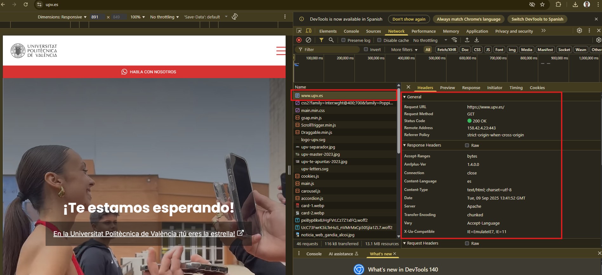
🖼️ Figura 1.4: Detalles de la web en pestaña Headers
NOTA : el servidor puede enviar también su versión software, pero esto podría conllevar ataques maliciosos, dependiendo de las vulnerabilidades de dicha > versión. Es por ello que es una buena práctica configurar el servidor web para que no envíe dicha versión (entre otros aspectos).
Más abajo, en la misma respuesta, nos indica los parámetros con que se ha realizado la petición. Entre éstos, podemos ver el tipo de petición que hemos hecho (GET), la versión de nuestro navegador web, el lenguaje en que queremos recibir la información, entre otros detalles:
🖼️ Figura 1.5: Detalles de la web en pestaña Headers
La petición ha tardado (en la prueba actual) 6.31 segundos en resolverse, y ha desembocado en una transferencia por parte del servidor de un total de 136 respuestas y 57.9 kB transferidos (entre otras métricas):
🖼️ Figura 1.6: Algunas de las métricas que se observan
El resto de registros que están debajo del inicial, se corresponden con todos los recursos (ficheros HTML, JavaScript, archivos multimedia, etc.) necesarios para que el navegador represente la página web. Por ejemplo, si pinchamos sobre el segundo registro gsap.min.js, y pinchamos sobre la pestaña Preview del panel de la derecha, podremos ver el código JavaScript que contiene este fichero transferido:
🖼️ Figura 1.7: Fichero .js con su código desde Preview
Si pinchamos en logo-upv.svg podremos ver que es el logo del ayuntamiento, transferido desde el servidor:
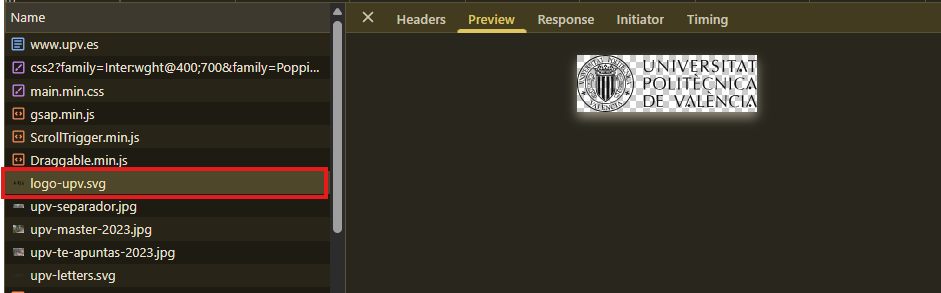
🖼️ Figura 1.8: Fichero media .svg
Todos estos ficheros tardan un tiempo en transferirse, lo que se representa en forma de waterfall (cascada):
🖼️ Figura 1.9: Tiempos de transferencia en cascada
La petición que más tarda en resolverse es la primera, según este gráfico.
¿Te recuerda esto a algún tipo de programa de descargas tipo BitTorrent o similares? Pues sí, en este caso se podría pensar en el navegador web como si de un gestor de descargas se tratase (salvando las diferencias), que se encarga de recuperar todos los ficheros que necesita para representar la página web que se le ha solicitado.
El navegador web recibe la información enviada por el servidor y la interpreta. En función de la respuesta enviada, se respresenta en el navegador la respuesta al usuario (normalmente en forma de página web).
El navegador web es un software diseñado para interpretar todo el contenido enviado por un servidor web, y representarlo en la pantalla para que el usuario final pueda consultar la información recibida, interaccionar con la página web, o también gestionar las operaciones del usuario que requieran nuevas peticiones al servidor web (en caso de páginas web dinámicas, o aplicaciones web).
Por ello, el navegador web tomará todos los ficheros descargados y conformará la página de bienvenida de www.puv.es, lo que se denomina Front-end :
🖼️ Figura 1.10: Interpretación en el front‑end (página renderizada por el navegador)
¿Aún continúas pensando que es correcto decir "navegar por Internet"?
El cliente hace la petición (request normalmente mediante el protocolo GET mediante el puerto 80/443) y el servidor responde (response).
Una página web estática es un documento o conjunto de documentos (generalmente: HTML, CSS, contenido multimedia, código JavaScript) en el que no existe una actualización dinámica de su contenido al interactuar con el sistema (servidor, ya sea remoto o local) que provee el documento/s. Es decir, la misma petición a la misma URL (Uniform Resource Locator), aunque la repitamos en múltiples ocasiones a lo largo del tiempo, siempre va a devolver la misma información (a no ser que la modifique un desarrollador en el lado servidor, manualmente). Puede existir interacción con la página web estática (mediante código JavaScript), en forma de mensajes, eventos, actualizaciones de su apariencia...
En este caso, un navegador web es capaz de representar la página web en una máquina local, sin necesidad de disponer de un servidor web adicional.
Una página web dinámica puede contener una parte estática, y además el contenido que se muestre dependerá del momento en el cual se realice la petición. Esto es debido a que el servidor conformará dicho contenido dependiendo de los datos de que se disponga en ese momento en un sistema de bases de datos. La comunicación entre el navegador web y el servidor será más compleja, ya que, además de consultar contenidos, se podrán realizar potencialmente operaciones de creación, modificación, y eliminación de datos.
Una aplicación Web es una herramienta software, formada por páginas web dinámicas (aunque también puede contener documentos web estáticos), basada en tecnologías web que la dotan de un carácter dinámico (interactúan con un sistema remoto) haciendo uso de servicios web (basados en la arquitectura TCP/IP), y que proporcionan al usuario un servicio o conjunto de servicios. Sería lo más parecido a una aplicación nativa o de escritorio, pero ejecutada en un navegador web. El hecho de ejecutarse en un navegador web las independiza del sistema operativo en el que se ejecutan, pero también presentan determinadas limitaciones debido a esta independencia.
En este caso, un navegador web NO es capaz de representar la página web en una máquina local sin un servidor web adicional y el resto de componentes que acompañan a esta arquitectura, como sí era el caso de una página web estática.
Para generar una página dinámica, donde el contenido cambia, a día de hoy tenemos dos alternativas:
a) Utilizar un lenguaje de servidor que genere el contenido, ya sea mediante el acceso a una BD o servicios externos.
b) Utilizar servicios REST de terceros invocados desde JS.
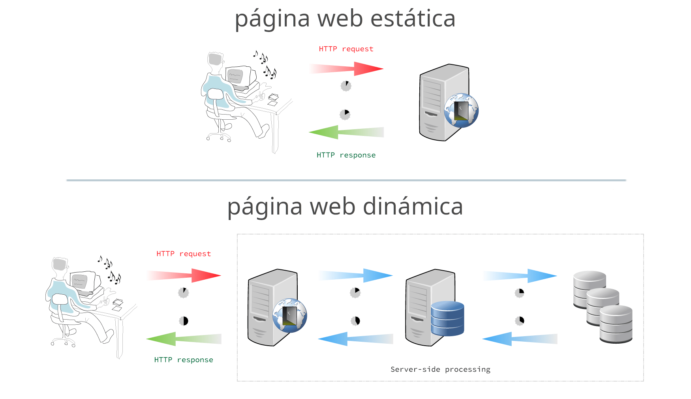
🖼️ Figura 1.11: Diferencia gráfica entre página estática y página dinámica
Cuando hablamos de programación en entorno cliente/servidor hablamos también de aplicaciones web, formadas por páginas web dinámicas, con lo que esto implica una arquitectura web más compleja que la necesaria para un sitio web constituido únicamente por páginas web estáticas.
Según diferentes autores, los modelos presentados en este documento caen bajo la categoría de arquitecturas web. En el presente documento los consideraremos modelos de programación, atendiendo a la forma en que están organizados y distribuidos los diferentes ficheros que contienen la lógica de negocio de la aplicación web.
Dicho esto, actualmente encontramos dos modelos de programación principales, que son los que se detallan a continuación.
Model-View-Controller o Modelo-Vista-Controlador es un modelo de arquitectura que separa los datos y la lógica de negocio respecto a la interfaz de usuario y el componente encargado de gestionar los eventos y las comunicaciones.
Al separar los componentes en elementos conceptuales permite reutilizar el código y mejorar su organización y mantenimiento. Sus elementos son:
Modelo: representa la información y gestiona todos los accesos a ésta, tanto consultas como actualizaciones provenientes, normalmente, de una base de datos. Se accede vía el controlador.
Vista: Presenta al usuario de forma visual el modelo y los datos preparados por el controlador. El usuario interactúa con la vista y realiza nuevas peticiones al controlador.
Controlador: Responde a las acciones del usuario, y realiza peticiones al modelo para solicitar información. Tras recibir la respuesta del modelo, le envía los datos a la vista.
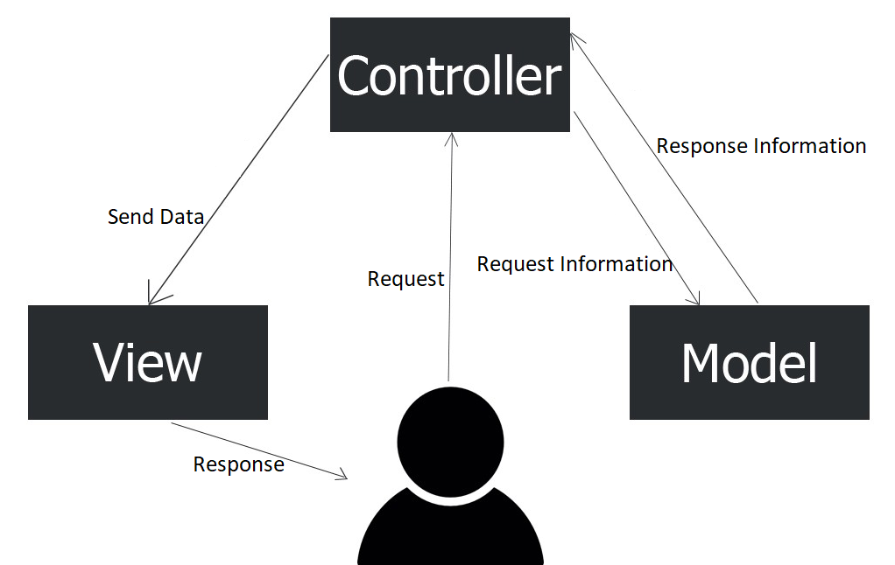
🖼️ Figura 1.12: Modelo-Vista-Controlador (MVC)
Es muy importante destacar que, en este modelo, es el servidor el que lleva el peso principal tanto del procesado de la información como de su representación. El cliente web, a grosso modo, se dedicará a enviar las peticiones al servidor, recibir la respuesta y representarla en la pantalla del usuario. La página web representada (código HTML, JavaScript, etc.) se habrá predeterminado en el lado servidor.
IMPORTANTE : con este modelo, cada petición del cliente al servidor implicará un refresco de la información que se visualiza en la pantalla, aunque su apariencia haya cambiado poco de una petición a la siguiente. Esto implica que se vuelvan a descargar todos los datos y ficheros que no se mantengan en la caché del navegador, con lo que los tiempos de respuesta serán mayores que si no tuviésemos que descargar de nuevo determinada información. El usuario final apreciará que, por un intervalo corto de tiempo, todos los elementos de la pantalla desaparecen y después se conforma de nuevo la interfaz de usuario. En este caso, se dice que la aplicación no es reactiva (se realiza un refresco de toda la pantalla, aunque no se necesite).
A este modelo de programación MVC se ajustará el primer proyecto que realizaremos durante este curso, y la primera parte del segundo proyecto.
Mediante este modelo se han desarrollado multitud de plataformas y aplicaciones web, aunque la tendencia es, cada vez más, desarrollar aplicaciones basadas en servicios REST.
En este tipo de aplicaciones, se delega la interacción con el usuario (si es que existe), en aplicaciones que se descargan y/o instalan en el lado cliente (ya sea aplicaciones de escritorio, aplicaciones móviles, o aplicaciones web). El servidor se encarga de implementar la lógica de negocio, gestionar los datos, y enviar al cliente solo la parte de la información solicitada, normalmente en formato JSON.
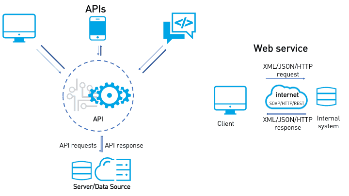
🖼️ Figura 1.13: Esquema de funcionamiento de servicios REST
Se llama API al conjunto de servicios web a través de los cuales los clientes interactúan con el servidor. Cada uno de estos servicios web se identifican por un endpoint (URL en el lado servidor), entre otros parámetros. Estos conceptos se revisarán con más detenimiento en la segunda fase del segundo proyecto que se desarrollará durante el curso.
Es importante notar que, a diferencia del modelo MVC, cada vez que se realice una petición al servidor no se refrescará la página web por completo. La arquitectura web pemitirá que solo se actualice una parte de la interfaz de usuario, con lo que el usuario final no experimentará la desaparición de la interfaz transitoriamente.
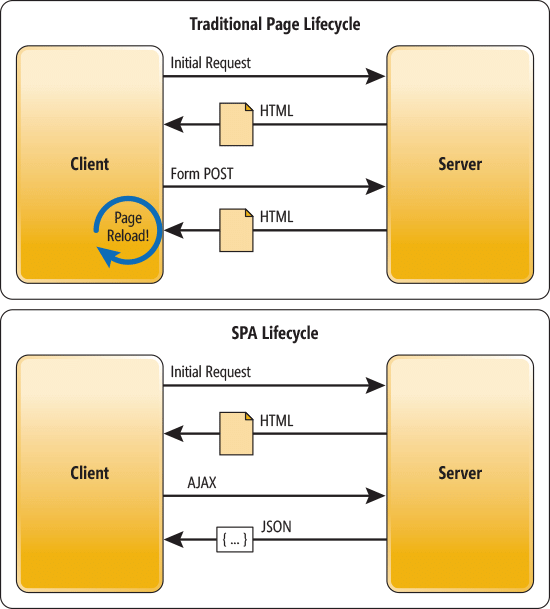
🖼️ Figura 1.14: Diferencia entre ciclo de vida tradicional de una página y el ciclo de vida de la arquitectura SPA
Este comportamiento asemeja más una aplicación web a una aplicación móvil ( la idea general es que no instalamos una app móvil cada vez que realizamos una acción, sino que solo se instala una vez ).
Un ejemplo de este tipo de aplicaciones son las SPA ( Single Page Application ). En una SPA solo existe un fichero HTML, muy simple, y otro u otros ficheros JavaScript que se encargan de cambiar la interfaz de usuario con cada petición HTTP al servidor. Por tanto, la aplicación se descarga una sola vez (se podría decir que se instala en el navegador) y a partir de ahí solo se intercambian ficheros JSON con el servidor, que contienen los datos a manejar por el cliente. De esta forma, se aligera la parte visual del back-end, y cada cliente (ya sea una aplicación web, móvil, de escritorio...) tendrá la responsabilidad de representarla en la pantalla según sus propias características.
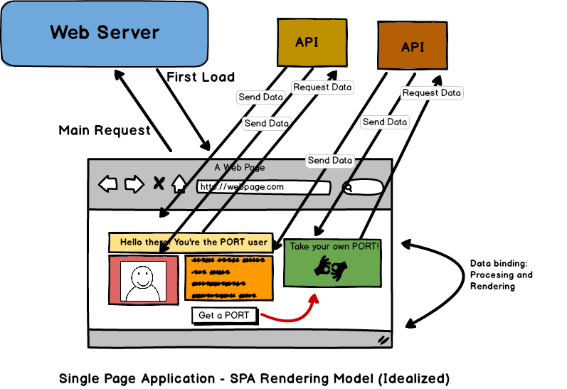
🖼️ Figura 1.15: Modelo Renderizado SPA
Es de destacar también que los sistemas que implementan servicios REST no solo alimentan aplicaciones cliente, sino que también pueden interactuar con otros sistemas. Éste podrá ser el caso de aplicaciones híbridas, que requieren de servicios externos para realizar determinadas tareas (envío de e-mails, servicios de IA, etc).
El tamaño del proyecto influye directamente en la complejidad de la arquitectura, la elección de herramientas y la planificación de recursos. Para proyectos pequeños, una solución simple y directa podría ser suficiente, mientras que los proyectos más grandes requerirán una arquitectura más escalable, pruebas más rigurosas y una gestión más detallada del código.
¿Qué lenguajes de programación conozco? ¿Vale la pena el esfuerzo de aprender uno nuevo?
Usar un lenguaje que ya conoces puede acelerar el desarrollo, ya que te sentirás más cómodo y eficiente. Sin embargo, si el proyecto requiere características específicas que se manejan mejor con otro lenguaje, o si aprender uno nuevo te abre mejores oportunidades a largo plazo, puede valer la pena el esfuerzo. Debes considerar el tiempo de aprendizaje y cómo impacta en el cronograma del proyecto.
¿Voy a usar herramientas de código abierto o herramientas propietarias? ¿Cuál es el coste de utilizar soluciones comerciales?
Las herramientas de código abierto suelen ser más económicas y flexibles, pero pueden requerir más soporte y mantenimiento por tu parte. Las soluciones comerciales pueden ofrecer más soporte y características avanzadas, pero suelen tener un coste asociado. Deberás evaluar el presupuesto disponible y las necesidades de soporte y funcionalidad del proyecto.
¿Voy a programar la aplicación yo solo o formaré parte de un grupo de programadores?
Si trabajas solo, puedes tomar decisiones más flexibles y rápidas, adaptadas a tus preferencias y habilidades. Si trabajas en un equipo, la colaboración y la coherencia en el código se vuelven más importantes, por lo que deberás considerar herramientas de control de versiones, guías de estilo de código, y plataformas de comunicación y gestión de proyectos.
¿Cuento con algún servidor web o gestor de base de datos disponible o puedo decidir libremente utilizar el que crea necesario?
Si ya tienes servidores o gestores de bases de datos disponibles, deberás asegurarte de que las tecnologías elegidas sean compatibles con ellos. Si tienes libertad para elegir, podrás seleccionar las tecnologías que mejor se adapten a las necesidades del proyecto en términos de rendimiento, escalabilidad y facilidad de uso.
¿Qué tipo de licencia voy a aplicar a la aplicación que desarrolle?
La licencia que elijas afectará cómo otros pueden usar, modificar y distribuir tu software. Si planeas mantener el control y limitar el uso comercial, una licencia más restrictiva como GPL puede ser adecuada. Si prefieres permitir un uso más libre, una licencia como MIT o Apache podría ser mejor. También debes considerar cómo las licencias de las herramientas y librerías que utilices impactan en tu proyecto.
Cada una de estas preguntas influirá en cómo abordas el desarrollo de tu aplicación web, y reflexionar sobre ellas te ayudará a tomar decisiones más informadas y coherentes con tus objetivos.
Durante el primer curso del ciclo habréis podido desarrollar diferentes programas consistentes en ficheros que a su vez contienen líneas de código en un lenguaje específico (Java, en este caso). ¿Qué se necesita para poder transformar este texto en instrucciones específicas para el sistema operativo donde se ejecuta dicho código? En este punto es donde entra en juego el concepto de entorno de ejecución .
Los elementos de un entorno de ejecución varían dependiendo del lenguaje de programación que se esté utilizando. Por lo general siempre es necesario un compilador, intérprete o máquina virtual y un conjunto de librerías propias del lenguaje. Pero puede constar de más elementos como un depurador o un bucle de eventos.
Dicho esto, ¿cuáles son los mecanismos para la ejecución del código en el ámbito de las aplicaciones web? Para contestar a esto, primero deberíamos diferenciar los diferentes lenguajes de programación que se pueden utilizar, y en qué ámbitos (cliente o servidor). Es por ello que, el los siguientes subapartados, vamos a revisar primero algunos de los lenguajes de programación más relevantes en el ámbito web, y a continuación se detallará cómo se ejecutan en el lado servidor (PHP, Python, y JavaScript) y en el cliente (JavaScript).
Es el lenguaje por excelencia en el desarrollo de entorno cliente. Existe un desarrollo continuo de frameworks y librerías alrededor de este lenguaje, ya no solo en la programación cliente, sino en el lado servidor (como se ha visto anteriormente). Los principales frameworks para el desarrollo de aplicaciones reactivas basados en JavaScript son: React.js, Vue.js, Angular y Svelte.
TypeScript
TypeScript es un lenguaje de programación libre y de código abierto desarrollado y mantenido por Microsoft. Es un superconjunto de JavaScript, que esencialmente añade tipos estáticos y objetos basados en clases. Los principales frameworks de programación cliente reactivos (mencionados anteriormente) soportan el desarrollo tanto en JavaScript como TypeScript.
Python
Aunque muchísimo menos popular, también existe la posibilidad de ejecutar Python en el navegador, como se ilustra con el proyecto PyScript.
PHP es un lenguaje de programación de uso general que se adaptaespecialmente al desarrollo web. Su última versión es PHP8. Este lenguaje se puede utilizar sin ningún tipo de framework para desarrollar aplicaciones web, aunque también existen frameworks muy populares como CodeIgniter, Laravel, Symfony...
Python
Python es un lenguaje de alto nivel de programación interpretado cuya filosofía es hacer hincapié en la legibilidad de su código. Para programación web existen varios frameworks, aunque los más destacados son Django y Flask. Cabe destacar que este lenguaje se utiliza en multitud de ámbitos más, entre ellos el de la ciberseguridad y el de la inteligencia artificial.
JavaScript
JavaScript es un lenguaje de programación interpretado, dialecto del estándar ECMAScript. Aunque surgió para desarrollo en entorno cliente, se ha extendido tanto que han surgido numerosos frameworks en entorno servidor, siendo Nodejs el más popular.
Ruby
Ruby es un lenguaje de programación interpretado y orientado a objetos. Ruby on Rails es el framework de programación web basado en Ruby más conocido.
Java
Java es un lenguaje de programación rápido, seguro y fiable para codificar todo, desde aplicaciones móviles y software empresarial hasta aplicaciones de macrodatos y tecnologías del lado del servidor. Como frameworks web destacan Spring y Hibernate.
🖼️ Figura 1.16: Mapa mental de resumen de elementos del lenguaje PHP
Durante las siguientes unidades vamos a estudiar PHP en profundidad.
Por tanto, vemos que existe gran variedad de lenguajes de programación, tanto en cliente como servidor, y es un ámbito en continua evolución.
¿Cuál es el mejor lenguaje de programación? Ésta es la eterna pregunta que escucharás a lo largo de tu carrera como programador/a, y no hay una fácil respuesta. Quizás la respuesta más adecuada sea la de: cada uno de ellos es bueno para una cosa, y lo mejor es tener una mentalidad abierta, no atarse a ninguno de ellos, y tener las bases de la programación claras.
Esta reflexión es de especial interés si desarrollas tus propios proyectos: la elección de un lenguaje (o framework) u otro te puede conllevar al éxito o fracaso, que un proyecto te resulte rentable o no, optimización de costes o no... Por tanto, mantén una mente abierta y piensa que los lenguajes y tecnologías tienen carácter pasajero, están para ser utilizados y no para casarse con ellos.
La lógica de nuestra aplicación se distribuye entre el cliente y el servidor, cada uno de ellos cumple su función específica. Con lo cual, la plataforma de ejecución en estos dos ámbitos ha de ser diferente:
Lado servidor: la lógica programada se ejecuta en el sistema operativo en el cual reside el código.
Lado cliente: la lógica se ejecuta en el navegador web.
Además del ámbito en que se ejecuta el código, también hay que particularizar el mecanismo de ejecución al lenguaje específico utilizado (como se ha mencionado en la discusión inicial de este apartado, sobre el entorno de ejecución ).
A continuación se detalla cómo se dispara la ejecución del código programado, ya sea en el lado servidor ante una petición HTTP que proviene del cliente web, o en el propio navegador web ante una acción del usuario.
Antes de ver estos ejemplos, cabe mencionar que el propósito de un servidor web es recibir peticiones HTTP y enviar la respuesta a dichas peticiones. Es posible que estas respuestas las proporcione el propio servidor web, o haya de recurrir a extensiones (o módulos) propias, o servidores de aplicaciones externos que ejecuten el código y devuelvan la respuesta al servidor web (que la utilizará para enviar la respuesta final al cliente). Todo esto se detallará exhaustivamente en el módulo de Despliegue de Aplicaciones Web .
En los siguientes ejemplos se presupone que el entorno de ejecución es el de producción (el que utilizan los usuarios finales). En el entorno de desarrollo se suelen emplear servidores web más ligeros que los propios frameworks de desarrollo proporcionan.
Como se ha mencionado anteriormente, este lenguaje, a día de hoy, se puede ejecutar tanto en el lado cliente como en el lado servidor:
En cliente (navegador web): los diferentes navegadores actuales incorporan un entorno de ejecución mediante el cual es posible ejecutar código JavaScript, no existe comunicación directa con el sistema operativo. La ejecución del código suele responder a las acciones del usuario, y el navegador proporciona todos los recursos para que se pueda ejecutar.
En servidor: para poder ejecutar código JavaScript directamente en un sistema operativo, se ha de instalar previamente el entorno de ejecución de Node.js. Este framework incorpora su propio servidor web para ser utilizado en un servidor de producción, aunque es posible utilizar Apache o Nginx como reverse proxy.
Durante el primer curso hemos aprendido sobre los lenguajes de marcas (HTML, entre otros) y programación de propósito general. Cuestiones:
¿Hay alguna relación entre estos dos tipos de lenguajes?
¿Para qué querríamos relacionarlos en una aplicación web?
Una posible respuesta sería: cada tipo tiene un objetivo diferente, y la combinación de ambos nos proporciona la posibilidad de crear páginas web dinámicas .
Creación de bloques en páginas dinámicas
Tomemos como ejemplo la siguiente página web:
🖼️ Figura 1.17: Cada uno de los productos se visualiza en el HTML según el siguiente código HTML
🖼️ Figura 1.18: Código generado por cada uno de los productos
¿Crees que el programador web ha creado tantos bloques como productos se han recuperado? ¿Se puede saber a priori cuántos productos va a devolver la búsqueda?
La respuesta a las dos preguntas es: no. Por tanto, la página se ha de comportar de forma dinámica, en algún momento se ha de programar la siguiente lógica: por cada producto a mostrar crea un bloque con estas características determinadas, sea cual sea el número de productos a visualizar en la pantalla.
Es aquí donde entra la magia del binomio "lenguaje de programación" + "lenguaje de marcas", mediante el cual vamos a poder añadir sentencias de un lenguaje de programación a código HTML, aportándole un carácter dinámico al documento web.
Esta combinación se producirá en el lado servidor o en el lado cliente, dependiendo de si:
Es una aplicación web basada en MVC (Modelo-Vista-Controlador): la combinación de los dos lenguajes se llevará a cabo en el lado servidor . El lenguaje de programación será el empleado en el lado servidor (PHP o Python), y el documento web será enviado al lado cliente desde el servidor.
Es una aplicación web basada en servicios REST : en este caso, la combinación de los dos lenguajes se llevará a cabo en el lado cliente . El lenguaje de programación será el empleado en el lado cliente, JavaScript en nuestro caso (también podría ser TypeScript). El cliente consumirá los servicios web del servidor e intercambiarán información en formato JSON. El cliente será el encargado de modificar el HTML de forma dinámica.
Veamos un ejemplo con una lista simple de productos, para el caso de MVC. En el ejemplo de la izquierda vemos que hemos de crear tantos bloques de productos como productos a representar; en el ejemplo de la derecha, se ha introducido un bucle mediante PHP que hará que, por cada producto del array de productos, se visualice un bloque con sus datos correspondientes:
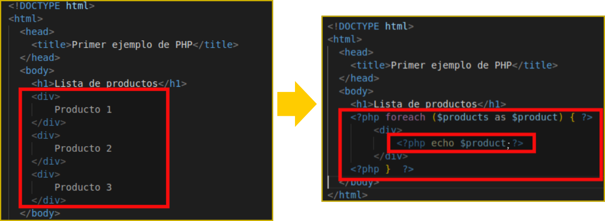
🖼️ Figura 1.19: Ejemplo de código estático y código dinámico
En este caso, vemos que se ha introducido código PHP con un etiquetado especial, que indica que ese bloque del fichero de marcas contiene código PHP.
A continuación se muestra otro ejemplo, en este caso de integración de un lenguaje de programación del lado cliente con el lenguaje de marcas HTML. Se trata de un componente programado mediante el framework Vue.js:
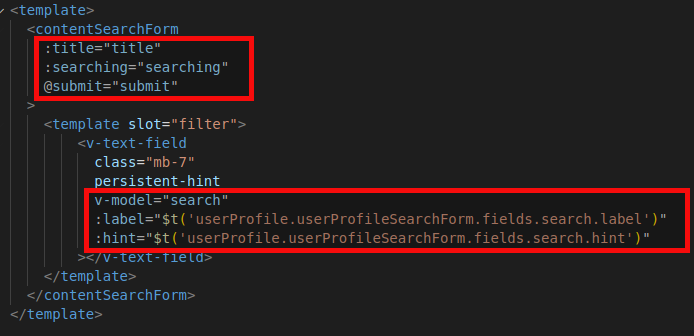
🖼️ Figura 1.20: Ejemplo de código embebido .vue
🖼️ Figura 1.21: Otro ejemplo de código embebido
En este caso también vemos que existen atributos con símbolos como : o @ en el etiquetado que apuntan a variables del código JavaScript.
Estos ejemplos solo ejemplifican la integración de los lenguajes de marcas con un lenguaje de programación, sin ánimo de profundicar más en este momento del curso.
Utiliza el archivo .htaccess para su configuración.
En la actualidad, Ngingx (https://www.nginx.com) ha ganado mercado respecto a Apache. Se trata de un producto más moderno (2004) y que en determinados escenarios tiene mejor rendimiento que Apache.
Software que ofrece servicios adicionales a los de un servidor web:
Clustering.
Balanceo de carga.
Tolerancia a fallos.
Tomcat (http://tomcat.apache.org/) es el servidor de aplicaciones open source y multiplataforma de referencia para una arquitectura Java. Contiene un contenedor Web Java que interpreta Servlets y JSP.
Estudio de servidores web y servidores de aplicaciones
Tanto los servidores web como los servidores de aplicaciones los estudiaremos en profundidad en el módulo de "Despliegue de Aplicaciones Web".
El ecosistema de herramientas en el entorno web es amplio, rico y en constante evolución. Es por ello que hacer una lista exhaustiva se hace difícil, y puede quedar obsoleta en unos pocos meses.
En este enlace se propone una muestra de estas herramientas.
Algunas de estas herramientas te resultarán familiares, otras las utilizarás en tu futura vida profesional o no (dependiendo del campo en que te especialices), y otras muchas serán sustituidas o dejarán de ser usadas.
Durante este curso podrás utilizar el IDE o editor de texto de tu elección. Visual Studio Code (para cualquier lenguaje de programación) o PyCharm (para Python) son la opción recomendada.
Como fuentes de consulta de problemas específicos, StackOverflow es una de las plataformas más utilizadas.
Finalmente, como base para lenguajes de programación y de marcado, o como repaso del primer curso del ciclo, te puedes apoyar en los manuales de W3CSchools.
Al igual que en las herramientas de programación, el ecosistema de tecnologías alrededor de las aplicaciones web también es muy variado, rico, y en constante evolución. Continuamente surgen nuevas versiones de las tecnologías existentes (que rompen con las anteriores), o tecnologías/frameworks/librerías novedosas a los que se adhieren multitud de profesionales. Todo ello hace que la curva de aprendizaje inicial en el ámbito de las aplicaciones web sea más acusada en un principio.
A continuación se presentan algunas de estas tecnologías, agrupadas por tipología.
Dado que el entorno de ejecución en el lado cliente es el navegador web, se ha dedicado un apartado exclusivamente para caracterizar este tipo de software.
Los navegadores representan un software complejo, en constante evolución, y en el que las diferentes opciones del mercado están respaldadas por motivaciones diversas (detrás de algunos existe una empresa multinacional, otros están respaldados por una comunidad de desarrolladores, etc.), así como diferentes principios de desarrollo.
En la siguiente tabla se resumen algunas de las características que diferencia a diferentes navegadores:
Dada la gran cantidad de tecnologías y navegadores utilizados en el lado cliente, existe la voluntad de estandarizar determinados aspectos que gobiernan estas tecnologías, en forma de especificaciones emitidas por organismos reconocidos como oficiales. Se trata de que los diferentes desarrolladores tengan suficiente libertad para ser competitivos, pero sin que el panorama se disperse excesivamente.
A continuación se citan varios de estos estándares:
ECMAScript: aplicado a JavaScript, y desarrollado por ECMA International (organización internacional basada en membresías de estándares para la comunicación y la información)
En este artículo se discute la necesidad de los estándares web, como visión general.
Para poder trabajar con un entorno de desarrollo local, hemos de prepararlo con las herramientas comentadas.
Vamos a proponer dos opciones; la opción 1 será la instalación del paquete XAMPP para trabajar directamente en el equipo host; la opción 2 será crear un contenedor con Docker.
En realidad podríamos preparar el entorno de diferentes formas (directamente instalando en la máquina local con el paquete XAMPP, mediante máquina virtual con VirtualBox...) pero la utilización de Docker se ve justificada por su fácil utilización, la profundización en esta tecnología se verá en otros módulos de este curso (Despliegue de aplicaciones web) y su extensa utilización en la industria (en todo tipo de entornos).
XAMPP vs Docker en Windows
Si vas a trabajar con tu propio ordenador, XAMPP es una solución más sencilla que Docker, sobre todo si trabajas con Windows como sistema operativo.
XAMPP ( https://www.apachefriends.org/es/index.html) es una distribución compuesta con el software necesario para desarrollar en entorno servidor. Se compone de las siguientes herramientas en base a sus siglas:
X para el sistema operativo (de ahí que se conozca también como LAMP o WAMP).
A para Apache.
M para MySQL / MariaDB. También incluye phpMyAdmin para la administración de la base de datos desde un interfaz web.
P para PHP.
P para Perl.
Desde la propia página se puede descargar el archivo ejecutable para el sistema operativo de nuestro ordenador. Se recomienda leer la FAQ de cada sistema operativo con instrucciones para su puesta en marcha.
Docker (https://www.docker.com) es un gestor de contenedores; considerando un contenedor como un método de virtualización del sistema operativo.
El uso de contenedores requiere menos recursos que una máquina virtual, por lo tanto, su lanzamiento y detención son más rápidos que las máquinas virtuales.
Así pues, Docker permite crear, probar e implementar aplicaciones rápidamente, a partir de una serie de plantillas que se conocen como imágenes de Docker.
10.3) Ejecutar Docker Desktop: Inicia Docker Desktop desde tu entorno gráfico o ejecutando docker-desktop en la terminal.
10.4) Configurar Docker Desktop: Cuando se inicie Docker Desktop por primera vez, puedes configurarlo para usar WSL 2 o bien ejecutar contenedores nativos en Linux.
Si deseas hacer configuraciones adicionales como la cantidad de recursos que Docker puede usar, puedes hacerlo desde la interfaz gráfica de Docker Desktop.
Con estos pasos, deberías tener Docker y Docker Desktop completamente instalados y listos para usar en tu sistema Ubuntu.<hr>
Si aún así no se pudiera lanzar Docker Desktop en Ubuntu, podemos instalar el contenedor Portainer (puedes ver cómo funciona en el siguiente punto docker de gestión de dockers Portainer).
Para una instalación en Windows lo ideal es instalar la aplicación Docker Desktop ( https://www.docker.com/products/docker-desktop ) en nuestros entornos de desarrollo (el cual ya incluye en núcleo de Docker y la herramienta Docker Compose).
Esta instalación requiere de un software adicional WSL2, el cual es un subsistema de Linux dentro de Windows; aquí podemos consultar sus métodos de instalación. Por suerte, con la misma instalación de Docker Desktop, viene también la de WSL (solo deberemos tener en cuenta tener el check de instalación activado).
🖼️ Figura 1.28: Check para activación de WSL --
Cuando termine la instalación, reinicia tu máquina.
🖼️ Figura 1.29: Interfaz programa Docker Desktop --
Si el archivodocker-compose.yml incluye servicios con puertos expuestos (como en el ejemplo de Nginx), puedes acceder a ellos desde tu navegador usando localhost y el puerto definido, por ejemplo:
http://localhost:8080
Portainer: docker de gestión de dockers
Portainer es una forma cómoda de gestionar entornos de contenedores distribuidos.
El software se instala como un contenedor Docker y, por tanto, se ejecuta prácticamente en cualquier lugar. Mostramos la rutina de instalación y aportamos útiles consejos.
Para ver el ID de contenedor podemos listar los contenedores:
$sudodockerps-a
Para parar el contenedor:
$sudodockerstop[ID]
Para volver a lanzar el contenedor:
$sudodockerstart[ID]
A lo largo del curso iremos creando diferentes contenedores con los servicios necesarios, de manera que cada vez sólo trabajemos con el software mínimo.
Respecto a Docker, para escribir los apuntes hemos utilizado la version 20.10 y en Docker Compose la version 2.19.
Finalmente, la versión de Docker Desktop que hemos utilizado es la 4.0.
Docker se basa en el uso de imágenes para crear contenedores. Docker Compose simplifica el trabajo con múltiples contenedores, y por ello, para facilitar el arranque, nos centraremos en Docker Compose utilizando una plantilla que únicamente va a contener como servicios Apache/Nginx y PHP.
Para ello, vamos crear una carpeta de nombre proyecto1, y dentro de este el archivo docker-compose.yaml con:
proyecto1 con distintos servidores en docker-compose.yml
Estructura del proyecto:
proyecto1/
│
├──docker-compose.yml
└──src/# Carpeta del proyecto
proyecto2/
│
├──docker-compose.yml
├──.docker
│├───nginx
││└──conf.d
││└──php.conf# Archivo configuración php en Nginx
└──src/# Carpeta del proyecto
Fichero docker-compose.yml:
version:'3.8'services:nginx:image:nginx:1.19ports:-"8082:80"# Asegúrate de que el puerto está correctamente mapeadovolumes:-./src:/var/www/php-./.docker/nginx/conf.d:/etc/nginx/conf.d# Configuración personalizada de Nginxdepends_on:-phpnetworks:-webnetphp:image:php:8.0-fpmworking_dir:/var/www/phpvolumes:-./src:/var/www/phpnetworks:-webnetnetworks:webnet:driver:bridge
Asegúrate de que tu archivo de configuración de Nginx está correctamente configurado. Aquí hay un ejemplo básico que debes colocar en./.docker/nginx/conf.d/default.conf:
server {listen 80;server_name localhost;root /var/www/php;index index.php index.html index.htm;location / {try_files$uri $uri/ /index.php?$args;}location ~\.php$ {include fastcgi_params;fastcgi_pass php:9000;# Asegúrate de que este nombre coincide con el nombre del servicio PHPfastcgi_index index.php;fastcgi_param SCRIPT_FILENAME $document_root$fastcgi_script_name;}}
Dentro de la carpeta que contenga dicho archivo, hemos de crear una carpeta src donde colocaremos nuestro código fuente.
Para facilitar la puesta en marcha, tenéis las plantillas de:
Cuando estemos listos, lanzaremos el servicio mediante:
docker-composeup-d
Docker Compose primero buscará la imagen definida en su sistema local, y si no puede encontrar la imagen, descargará la imagen desde Docker Hub. Verás un resultado como este:
🖼️ Figura 1.34: Descarga e instalación de imágenes de docker-compose.yml
Si queremos ver el contenido de los archivos de log del servicio utilizaremos:
docker-composelogs-f
Para copiar un archivo desde nuestro sistema al interior del contenedor:
dockercp./miFicheroidContenedor:/tmp
Y al revés, si queremos consultar un archivo contenido dentro de un contenedor, lo copiaremos a nuestro sistema:
dockercpidContenedor:/tmp/archivoAConsultar.txt./
Finalmente, si queremos acceder a un terminal interactivo dentro del contenedor:
dockerexec-itnombreContenedorbash
Otros comandos que podemos llegar a utilizar son:
docker ps: Ver los contenedores que se estan ejecutando.
docker ps -a: Ver todos los contenedores.
docker start nombreContenedor: Arrancar un contenedor.
docker images: Ver las imágenes que tenemos descargadas.
docker stop $(docker ps -a -q): Detener todos los contenedores en ejecución.
docker rm $(docker ps -a -q): Eliminar todos los contenedores detenidos.
Docker stack
Existen diversas opciones mediante Docker que ofrecen soluciones completas y empaquetadas para todo el stack de desarrollo. En posteriores sesiones podremo utilizar tanto Devilbox (http://devilbox.org) como Laradock (https://laradock.io).
... pero quiero saber cómo funciona ...
En el módulo de "Despliegue de aplicaciones" estudiaréis en profundidad, además de Docker, Apache y otros servicios que nos servirán de ayuda para el desarrollo en entorno servidor.
En este curso vamos a emplear Visual Studio Code (https://code.visualstudio.com) como editor de código fuente. Existen otras alternativas, siendo PhpStorm el IDE más conocido (pero de pago). Otra posibilidad es utilizar Eclipse, aunque es un entorno bastante pesado.
VSCode es un editor de código fuente que se complementa mediante extensiones. Para facilitar el trabajo a lo largo del curso vamos a utilizar las siguientes extensiones:
Php Intelephense: ofrece características avanzadas para desarrolladores PHP, como autocompletado inteligente, análisis estático y soporte para PHPDoc. Ayuda a detectar errores y a escribir código más eficiente.
PHP Debug: para la depuración de código PHP. Permite conectar VSCode a un servidor de depuración PHP y proporciona herramientas para inspeccionar variables, establecer puntos de interrupción y realizar un seguimiento detallado del flujo de ejecución.
PHP Sniffer: asegura que el código PHP cumpla con los estándares de codificación establecidos. Puedes personalizar las reglas según las necesidades de tu proyecto.
Laravel Intelephense (mamadou-diallo) - extiende Inetelephense con helpers de Laravel.
Laravel Extra Intelephense (amiralizadeh9480) - sugiere rutas, vistas, config, modelos.
Laravel Artisan (ryannaddy) - ejecuta comandos artisan desde la paleta.
PHP IntelliSense: extensión fundamental, aporta mucha velocidad de escritura gracias al «intellisense». Mejora la codificación al proporcionar sugerencias inteligentes de código y completar automáticamente fragmentos de código mientras escribes en PHP.
Docker
En la siguiente sesión comenzaremos a utilizar Intelephense pero en esta sesión nos vamos a centrar en Docker (más adelante instalaremos nuevas extensiones).
Por ejemplo, si abrimos la extensión de Docker, podréis visualizar tanto los contenedores como las imágenes de vuestro sistema. Desde cada contenedor, mediante clic derecho, podemos iniciar/detener/reiniciar cada contenedor, así como ver su contenido o abrir un terminal dentro del mismo:
🖼️ Figura 1.35: Extensión Docker en Visual Studio Code
Ir a Archivo → Preferencias → Configurar fragmentos de código (File → Preferences → User Snippets) seleccionar la opción html y agregar el snippet en el fichero html.json:
En esta página trabajas 10 criterios de evaluación (RA1, RA2, RA4)
RA1.c S'han identificat els mecanismes d'execució de codi en els servidors web. (Git i contenidors amb PHP)
RA1.d S'han reconegut les funcionalitats que aporten els servidors d'aplicacions i la seu integració amb els servidors web. (Git i contenidors amb PHP)
RA4.f S'han utilitzat ferramentes i entorns per a facilitar la programació, prova i depuració del codi. (Git i contenidors amb PHP)
RA1.e S'han identificat i caracteritzat els principals llenguatges i tecnologies relacionats amb la programació web en entorn servidor. (Frameworks i mercat laboral)
RA1.g S'han reconegut i avaluat les ferramentes i frameworks de programació en entorn servidor. (Frameworks i mercat laboral)
RA2.b S'han identificat les principals tecnologies associades. (Configuració de PHP amb phpinfo)
RA2.f S'han utilitzat directives per a modificar el comportament predeterminat. (Configuració de PHP amb phpinfo)
RA1.f S'han verificat els mecanismes d'integració dels llenguatges de marques amb els llenguatges de programació en entorn servidor. (Maquetació amb plantilles PHP)
RA2.a S'han reconegut els mecanismes de generació de pàgines web a partir de llenguatges de marques amb codi embegut. (Maquetació amb plantilles PHP)
RA2.c S'han utilitzat etiquetes per a la inclusió de codi en el llenguatge de marques. (Maquetació amb plantilles PHP)
Si nos fijamos en el contenido del fichero index.html proporcionado no se diferencia en nada (salvo en la utilización de las librerías anteriores) de una de las páginas estáticas programadas durante el primer curso del ciclo:
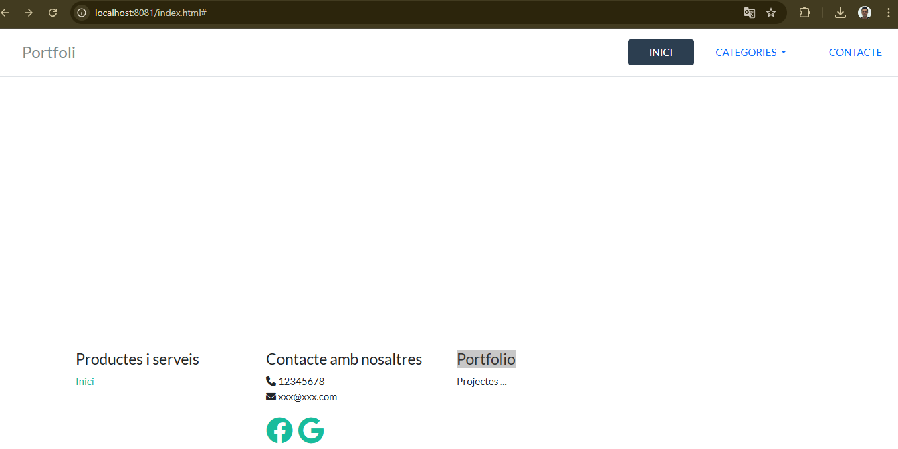
🖼️ Figura 1.37: Página principal estática Ejercicio 107
Vamos a empezar a incrustar PHP en el código HTML.
El primer paso que vamos a realizar es trocear el código HTML proporcionado. ¿Por qué? porque hay determinadas partes que siempre se repiten en cada una de las páginas: la cabecera y el pie de página.
Así, vamos a crear una carpeta templates (plantillas, en inglés) dentro de src, para almacenar todos aquellos fragmentos de código HTML que podemos reutilizar de una página a otra.
Dentro de templates vamos a crear dos archivos: header.php y footer.php.
La estructura, por el momento, queda del siguiente modo:
🖼️ Figura 1.38: Estructura de carpetas y ficheros del Ejercicio 107
En clase: vamos a analizar index.html y debatir cómo segmentar el código. A continuación reorganizamos el código de index.html entre footer.php y header.php.
Una vez configuradas las plantillas, queda muy poco código HTML en index.html. Vamos ahora a poner el restante del código HTML en index.php y vaciar por completo index.html (tras lo cual eliminamos este fichero).
El fichero index.php quedaría del siguiente modo:
<divclass="container"></div>
¿Cómo podemos ahora volver a estructurar la página de inicio con las plantillas? Lo vemos a continuación.
Para poder estructurar las páginas de la aplicación basándonos en las plantillas, podemos utilizar la instrucción include. Modificando el fichero index.php, quedaría del siguiente modo:
Ahora, con el contenedor Docker iniciado, si refrescamos la página, volveremos a obtener el mismo resultado que con la página web estática:
🖼️ Figura 1.39: Página principal dinámica Ejercicio 107
Parece que no haya cambiado nada, pero PHP ya está trabajando para nosotros. Hemos pasado de una página web estática, recogida en un solo documento, a una página modular generada con PHP. En un sitio web con multitud de páginas esto puede ser una gran ventaja.
Ahora, como buenos programadores, nos preguntamos ¿include nos sirve para todos los casos o existen otras posibilidades para incluir ficheros en PHP? Lo vemos en el siguiente apartado.
La idea de utilizar diferentes ficheros es la reutilización del código, lo que conlleva una mayor modularidad y un mejor mantenimiento del mismo. Un fichero no tiene por qué ser una plantilla, como hemos visto hasta ahora, sino que también podría ser código PHP que pudiésemos llegar a utilizar en diferentes partes de la aplicación. También se pueden dar diferentes circunstancias, y es por ello que disponemos de varias opciones:
include(ruta/archivo);
include_once(ruta/archivo);
require(ruta/archivo);
require_once(ruta/archivo);
NOTA: Si el archivo se encuentra a la misma altura (en el sistema de archivos) que el fichero en el cual se incluye, entonces solo es necesario especificar el nombre del archivo a incluir; si los dos archivos no se encuentran a la misma altura, entonces es posible especificar la ruta (absoluta o relativa) del fichero a incluir.
Las particularidades de cada instrucción son:
require: lanza un error fatal si no encuentra el archivo.
include: si no encuentra el archivo, emite una advertencia (warning).
Las funciones _once sólo se cargan una vez, si ya ha sido incluida previamente, no lo vuelve a hacer, evitando bucles.
Ejemplo inclusión de código
Por ejemplo, colocamos las siguientes funciones en el archivo biblioteca.php:
Vamos a introducir un proyecto de prueba para que se pueda visualizar en la página de inicio, quedaría del siguiente modo:
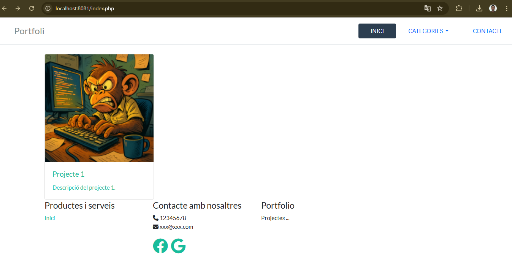
🖼️ Figura 1.40: Página index.php del Ejercicio 107
Vamos a utilizar una imagen para cada proyecto. Para poder hacer esto hemos de almacenar las imágenes en la estructura de directorios, por eso creamos una carpeta static dentro de src, y dentro de static crearemos otra llamada images:
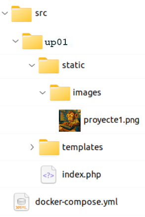
🖼️ Figura 1.41: Estructura de carpetas y ficheros del Ejercicio 107
NOTA: si has de descargar imágenes de Internet, asegúrate que la licencia de dichas imágenes te lo permite. Utiliza, si es necesario, un sitio como pixabay.com para descargar imágenes con licencia libre.
Descárgate una imagen en la carpeta images, renómbrala a projecte1.png (aquí tienes la imagen del ejemplo projecte1.png si deseas utilizar la misma) y completa el fichero index.php con el siguiente código:
Descargamos esta contacte.png en el directorio correspondiente (con el nombre businessman.png), creamos contacto.php a la altura de index.php, e insertamos el siguiente código:
<?phpinclude("templates/header.php");?><div class="container"> <h2 class="mb-5">Contacte</h2> <div class="row"> <div class="col-md"> <img src="static/images/contacte.png" class="img-fluid rounded"> </div> <div class="col-md"> <h3>Nom i cognoms</h3> <p>Cicle Superior DAW.</p> <p>Apasionat del mon de la programació en general, i de les tecnologies web en particular.</p> <p>Si tens algun dubte contacta amb mí per favor.</p> <p>Telèfon: 123456789</p> </div> </div></div><?phpinclude("templates/footer.php");?>
El resultado, al consultar la URL localhost/contacto.php, debería ser el siguiente:
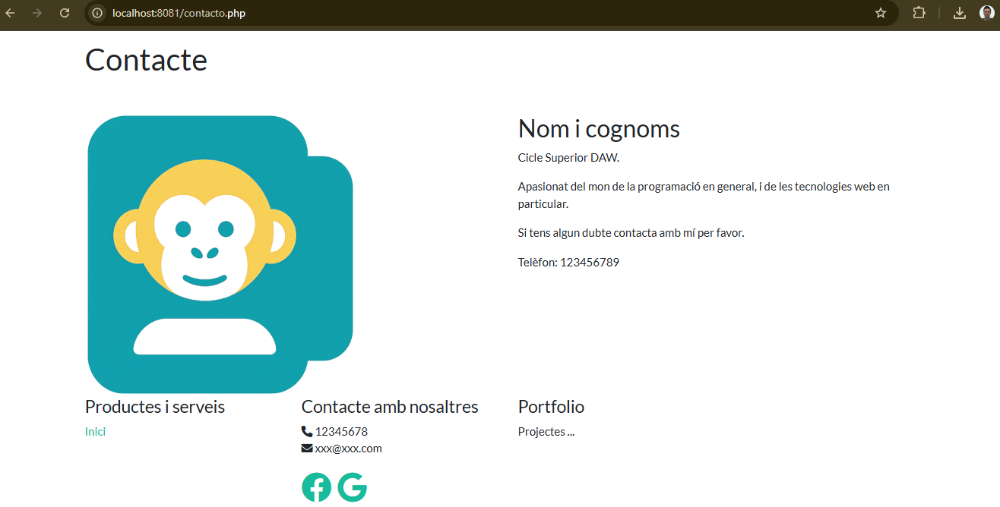
🖼️ Figura 1.43: Página contacto.php del Ejercicio 107
En estos momentos tenemos ya muchas cosas preparadas para poder empezar a añadir dinamismo a nuestra aplicación. En los siguientes apartados vamos a ver las diferentes estructuras que nos lo van a permitir.
Lenguaje de propósito general, aunque su fuerte es el desarollo web.
Sintaxis similar a C / Java.
El código se ejecuta en el servidor (en Apache mediante mod_php).
El cliente recibe el resultado generado tras interpretar el código en el servidor.
El código se almacena en archivo con extensión .php.
La versión actual (a fecha de septiembre de 2026) es la 8.5.10. Además de numerosas nuevas funcionalidades que iremos viendo durante el curso, tiene más de dos veces mejor rendimiento que PHP5.
Los bloques de código se escriben entre <?php y ?>.
Las sentencias se separan mediante ;.
Ejemplo en php
<!DOCTYPE html><html lang="es"><head> <meta charset="UTF-8"> <title>PHP fácil</title></head><body> <!-- Muestra una frase con HTML --> Hola mundo<br> <!-- Muestra una frase con PHP --><?phpecho"Es muy fácil programar en PHP.";?></body></html>
🖼️ Figura 2.1: Ejemplo código .php embebido con sentencia ";"
Sólo etiquetas de apertura
Si nuestro código sólo va a contener código PHP y nada de html, como por ejemplo, cuando codifiquemos clases o interfaces, sólo pondremos la etiqueta de apertura, para así indicar que es una archivo de php puro.
Tenemos tres posibilidades a la hora de generar contenido en nuestros documentos PHP:
echo expresión;
<?= expresión ?>
print (expresión);
Las que vamos a utilizar son:
echo cuando lo hagamos dentro de un bloque de instrucciones y
<?= cuando sólo vayamos a mostrar el valor de una variable dentro de un fragmento HTML.
Ejemplo en php
<!DOCTYPE html><html lang="es"><head> <meta charset="UTF-8"> <meta name="viewport" content="width=device-width, initial-scale=1.0"> <title>Echo y print</title></head><body> <p><?phpecho"Este texto se mostrará en la página web.";?></p> <p><?="Este texto se mostrará en la página web."?></p><br> <p><?phpprint("Este texto se mostrará en la página web.");?></p></body></html>
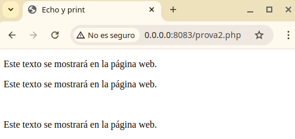
🖼️ Figura 2.2: Ejemplo contenido con "echo" o "<?="
En PHP, las variables se pueden declarar en cualquier parte del script.
El alcance de una variable es la parte del script donde se puede hacer referencia a la variable o utilizarla.
PHP tiene tres alcances de variables diferentes:
local
global
estático
Ejemplo de alcances
Una variable declarada fuera de una función tiene un ámbito global y solo se puede acceder a ella fuera de una función:
<?php$x=5;// globalfunctionmiTest(){// usar x dentro de esta función generará un errorecho"<p>Variable x dentro de función es: $x</p>";}miTest();echo"<p>Variable x fuera de función es: $x</p>";?>
Una variable declarada dentro de una función tiene un ámbito local y solo se puede acceder a ella dentro de esa función:
<?phpfunctionmiTest(){$x=5;// localecho"<p>Variable x dentro de función es: $x</p>";}miTest();// usar x fuera de la función generará un errorecho"<p>Variable x fuera de función es: $x</p>";?>
Los operadores condicionales permiten asignar un valor dependiendo de una condición.
Operador
Nombre
Ejemplo
Resultado
?:
Ternario
$x = expr1 ? expr2 : expr3
Asigna a $x el valor de expr2 si expr1 es TRUE; en caso contrario, le asigna expr3.
??
Fusión nula
$x = expr1 ?? expr2
Asigna a $x el valor de expr1 si este existe y no es NULL. Si expr1 no existe o es NULL, se asigna expr2. (Disponible desde PHP 7)
Ejemplo operador ternario
<?php$hora=14;$formato=($hora>12)?24:12;echo"El formato es de $formato horas"?>
🖼️ Figura 2.7: Ejemplo operador ternario y cadena formateada
Operador Elvis
Si queremos comprobar si una variable tiene valor y si no darle un valor determinado, usaremos el operador ?: (se conoce como el operador Elvis - https://en.wikipedia.org/wiki/Elvis_operator) con la sintáxis expresión ?: valorSiVacio.
<?php$nombre="";echo"Nombre: ".($nombre?:"desconocido").PHP_EOL;// se envía a través de un formulario:// $nombre = "";// $nombre = $_GET['nombre'] ?: "desconocido";?>
Los datos se envían vía URL con el formato var1=valor1&var2=valor2….
Por ejemplo: ejemplo.php?nombre=Homer&apellido1=Simpson
Se divide en dos pasos:
Generar un formulario con action='archivo.php' method='GET'
En el archivo .php leer los datos con $_GET['nombreVar']
Vamos a separar siempre que podamos el código HTML del código PHP. Por ejemplo, el formulario se coloca en saluda.html y se recogen los datos en saluda.php:
La condición simple se realiza mediante la instrucción if. Entre paréntesis se pone la condición que se evalua a true o false. Si no se ponen llaves, en vez de abrir un bloque, se ejecutará sólo la siguiente instrucción.
Siempre llaves
Es recomendable poner llaves siempre aunque en el momento de codificar sólo haya una única instrucción. De este modo, se queda preparado para añadir más contenido en el futuro sin provocar bugs.
<?php$hora=8;// La hora en formato de 24 horasif($hora===8){echo"Suena el despertador.";}echo"<br>";if($hora===8)echo"Suena el despertador.";?>
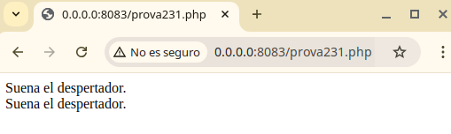
🖼️ Figura 2.9: Ejemplo sentencia condicional if
Las condiciones compuestas mediante if-else:
<?php$hora=17;// La hora en formato de 24 horasif($hora<=12){echo"Son las ".$hora." de la mañana";}else{echo"Son las ".($hora-12)." de la tarde";}?>
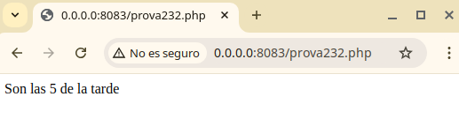
🖼️ Figura 2.10: Ejemplo sentencia condicional if-else
Las condiciones anidadas mediante if-else if-else:
<?php$hora=14;// La hora en formato de 24 horasif($hora===8){echo"Es la hora de desayunar.";}elseif($hora===14){echo"Es la hora de la comida.";}elseif($hora===21){echo"Es la hora de la cena.";}else{echo"Ahora no toca comer.";}?>
🖼️ Figura 2.11: Ejemplo sentencia condicional if-else-if-else
La sentencia switch también permite trabajar con condiciones múltiples:
<?php$hora=12;// La hora en formato de 24 horasswitch($hora){case9:echo"Es la hora de desayunar.";break;case14:echo"Es la hora de la comida.";break;case21:echo"Es la hora de la cena.";break;default:echo"Ahora no toca comer";}?>
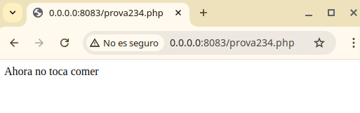
🖼️ Figura 2.12: Ejemplo sentencia condicional switch
No olvides el break
Un error muy común es olvidar la instrucción break tras cada caso. Si no lo ponemos, ejecutará el siguiente caso automáticamente.
La sentencia match fue introducida en la versión 8.0 y es muy similar a la estructura de switch, pero tiene algunas diferencias importantes:
match devuelve un valor.
No requiere usar break al final de cada caso.
Utiliza comparaciones estrictas (===), lo que significa que tanto el tipo como el valor deben coincidir.
<?php$estado='ok';$resultado=match($estado){'ok'=>'Todo está bien.','error'=>'Ha ocurrido un error.','pendiente'=>'Todavía está pendiente.',default=>'Estado desconocido.',// opción por defecto, similar a "default" en switch};echo$resultado;// Imprime: Todo está bien.?>
<?php$numero=10;$resultado=match(true){$numero<0=>'Número negativo',$numero===0=>'Es cero',$numero>0=>'Número positivo',};echo$resultado;// Imprime: Número positivo.?>
El bucle do-while siempre ejecutará el bloque de código al menos una vez, luego verificará la condición y repetirá el bucle mientras la condición especificada sea verdadera.
<?phpdo{$dado=rand(1,6);// rand() devuelve un valor aleatorioecho"Tirando el dado... ";echo"ha salido un ".$dado.".";echo"<br>";}while($dado!=5);echo"¡Bien! Saco una ficha de casa.";?>
🖼️ Figura 2.14: Ejemplo sentencia repetitiva do-while
Para almacenar datos compuestos, podemos utilizar tanto arrays sencillos como arrays asociativos (similares a un mapa). En realidad todos los arrays son mapas ordenados compuestos de pares clave-valor.
Del mismo modo que Java, se definen mediante corchetes, son 0-index, y se puede asignar un valor a un posición determinada:
<?php// crear array: opción 1$frutas=array("naranja","pera","manzana");// crear array: opción 2$frutas2=["naranja","pera","manzana"];// crear array vacía: opción 3$frutas3=[];// asignar valores$frutas3[0]="naranja";$frutas3[1]="pera";$frutas3[]="manzana";// lo añade al final
Cuidado con mezclar tipos
Como el tipado es dinámico, nuestros arrays pueden contener datos de diferentes tipos.
No se recomienda mezclar los tipos.
<?phpfunctionmiFuncion(){echo"Vamos al cole.";}$miArray=array("Alba",3,["manzanas","bananas"],miFuncion());$miArray[3];?>
Podemos obtener el tamaño del array mediante la función count(array). Para recorrer el array haremos uso de un bucle for:
<?php$tam=count($frutas);// tamaño del arrayfor($i=0;$i<count($frutas);$i++){echo"Elemento $i: $frutas[$i] <br />";}
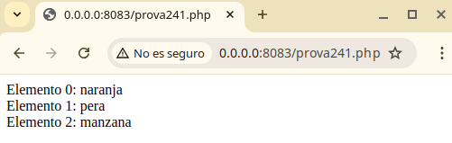
🖼️ Figura 2.18: Ejemplo uso función count() en array para recorrer todos los elementos
Otra forma de recorrer los arrays, incluso más elegante, es hacer uso de foreach. Su sintaxis es foreach (array as elemento):
<?php// mediante foreach no necesitamos saber el tamaño del arrayforeach($frutasas$elemento){echo"$elemento <br />";}
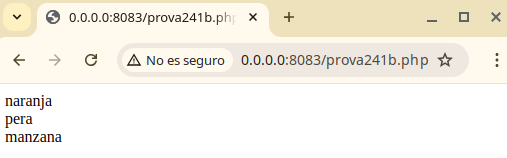
🖼️ Figura 2.19: Ejemplo de recorrido de todos los elementos de un array mediante la función foreach()
Cada elemento es un par clave-valor. En vez de acceder por la posición, lo hacemos mediante una clave. Así pues, para cada clave se almacena un valor.
Se asigna de la siguiente forma dentro de los corchetes: clave => valor.
A la hora de recorrer este tipo de arrays, mediante foreach separamos cada elemento en una pareja clave => valor:
<?php$capitales=["Italia"=>"Roma","Francia"=>"Paris","Portugal"=>"Lisboa"];// 1) Acceder al elemento por la clave, no la posición$capitalFrancia=$capitales["Francia"];// 2) Añadir un elemento$capitales["Alemania"]="Berlín";// 3) Mostrar valor de una variableecho"La capital de Francia es $capitalFrancia <br />";// 4) Mostrar valor de un elemento del array por {}echo"La capital de Francia es {$capitales["Francia"]} <br />";// 5) Añadir con clave 0 ¡¡¡NO ASIGNAR VALORES SIN CLAVE!!!$capitales[]="Madrid";// 6) Recorrer array asociativo y mostrar valoresforeach($capitalesas$valor){echo"$valor <br />";}// 7) Recorrer array asociativo y mostrar clave y valorforeach($capitalesas$pais=>$ciudad){echo"$pais : $ciudad <br />";}
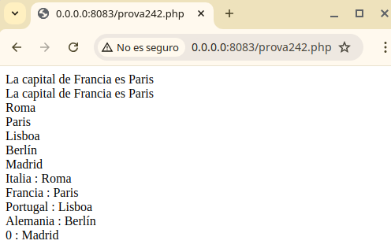
🖼️ Figura 2.20: Ejemplos usos de array asociativos
Consiste en un array de arrays, ya sean arrays secuenciales o asociativos. Puede haber N dimensiones.
<?php$persona["nombre"]="Bruce Wayne";$persona["telefonos"]=["966 123 456","636 636 636"];// array de arrays ordinarios$persona["profesion"]=["dia"=>"filántropo","noche"=>"caballero oscuro"];// array de arrays asociativosecho$persona['nombre']." por la noche trabaja de ".$persona['profesion']['noche'];
🖼️ Figura 2.21: Ejemplo uso array de dos dimensiones
Combinando los arrays asociativos en varias dimensiones podemos almacenar la información como si fuera una tabla:
<?php$menu1=["Plato1"=>"Macarrones con queso","Plato2"=>"Pescado asado","Bebida"=>"Coca-Cola","Postre"=>"Helado de vainilla"];$menu2=["Plato1"=>"Sopa","Plato2"=>"Lomo con patatas","Bebida"=>"Agua","Postre"=>"Arroz con leche"];// Crear un array a partir de arrays asociativos$menus=[$menu1,$menu2];echo"Menú del día<br/>";$cont=0;foreach($menusas$menudeldia){echo"<br />Menú ".++$cont."<br />";foreach($menudeldiaas$platos=>$comida){echo"$platos: $comida <br/>";}}// Para acceder a un elemento concreto se anidan los corchetes$postre0=$menus[0]["Postre"];
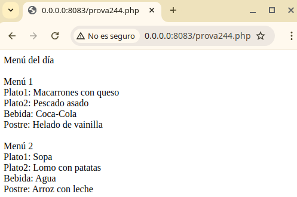
🖼️ Figura 2.22: Ejemplo similitud de arrays asocitivos con tablas
Aunque pueda parecer una buena idea crear este tipo de estructuras, es mejor utilizar objetos conjuntamente con arrays (posiblemente arrays de otros objetos) para crear estructuras complejas que permitan modelar mejor los problemas.
Si queremos pasar un parámetro por referencia, en la declaración de la función, indicaremos los parámetros mediante el operador & para indicar la dirección de memoria de la variable.
<?phpfunctionduplicarPorValor($argumento){$argumento=$argumento*2;echo"Dentro de la función: $argumento.<br>";}functionduplicarPorReferencia(&$argumento){$argumento=$argumento*2;echo"Dentro de la función: $argumento.<br>";}$numero1=5;echo"Paso de parámetros por valor:<br/>";echo"Antes de llamar: $numero1.<br>";duplicarPorValor($numero1);echo"Después de llamar: $numero1.<br>";echo"<br>";$numero2=7;echo"Paso de parámetros por referencia:<br/>";echo"Antes de llamar: $numero2.<br>";duplicarPorReferencia($numero2);echo"Después de llamar: $numero2.<br>";?>
🖼️ Figura 2.24: Ejemplo uso de parámetros por referencia en funciones
Podemos tener funciones donde en la declaración no indiquemos la cantidad de datos de entrada.
$cantidad = func_num_args(); → Obtiene la cantidad de parámetros recibidos.
$arrayArgs = func_get_args(); → Obtiene un array con los parámetros.
$valor = func_get_arg(numArgumento); → Obtiene el parámetro que ocupa la posición numArgumento.
Estas funciones no se pueden pasar como parámetro a otra función (como funciones variable, que veremos más adelante). Para ello, debemos guardar previamente la función en una variable.
Desde PHP 5.6, se puede utilizar el operador ... (variadics) el cual "disfraza" los parámetros como un array. Este operador se coloca delante de un parámetro en la definición de la función, y dicho parámetro se convertirá en un array que contendrá todos los argumentos adicionales pasados a la función:
Desde PHP 8.0 podemos pasar los argumentos con el nombre (además de por posición, como hemos hecho hasta ahora). Los argumentos con nombre se pasan poniendo el nombre como prefijo del parámetro separado por dos puntos: $resultado = funcion( arg1 : valor1, arg2 : valor2 );
Esta característica complementa los parámetros opcionales permitiéndonos saltar su valor:
🖼️ Figura 2.30: Ejemplo uso de parámetros con nombre
Tanto los parámetros opcionales como los obligatorios pueden tener nombre, pero los argumentos con nombre se tienen que poner después de los que no lo tienen.
<?phpfuncionArgumentosNombre(1,c:3);// "1 2 3"
🖼️ Figura 2.31: Orden de los parámetros con nombre (después de los que no tienen nombre)
Desde PHP7 en las funciones, tanto los parámetros como su valor de retorno, permiten la definición de tipos. Esto se conoce como strict_types (tipificación estricta) y hay que definirlo en la primera línea de cada archivo .php para que el propio interprete PHP compruebe los tipos y lance errores si los tipos son incorrectos, mediante la sentencia:
<?phpdeclare(strict_types=1);
Así pues, vamos a definir los tipos de los parámetros y de los valores devueltos mediante los tipos: int, float, string, bool, object y array.
Si una función no devuelve nada se indica mediante el tipo void.
<?phpdeclare(strict_types=1);functionsuma(int$a,int$b):int{return$a+$b;}$num=33;echosuma(10,30)."<br />";echosuma(10,$num)."<br />";echosuma("10",30);// error por tipificación estricta, si no daría 40?>
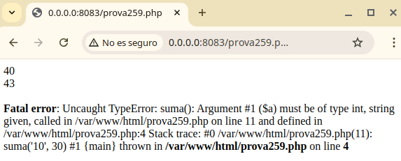
🖼️ Figura 2.32: Ejemplo de función tipada
Ejemplo 1
¿Qué ocurre si enviamos un número y una cadena sin utilizar strict:
<?phpdeclare(strict_types=1);functionsumaNumeros(int$a,int$b){return$a+$b;}// como `strict` no está habilitado la cadena "2 tablas" se convierte en int(2)// y el resultado devolverá 5echosumaNumeros(3,"2 tablas");?>
Ejemplo 2
Si queremos retornar un valor de un tipo diferente al de los argumentos, deberemos asegurarnos que retorna el tipo correcto (en este ejemplo haciendo un cast):
<?phpdeclare(strict_types=1);functionsumaNumeros(float$a,float$b):int{return(int)($a+$b);}// el resultado devolverá 5echosumaNumeros(3.3,2.5);?>
Las variables definidas fuera de las funciones tienen alcance global: accesibles desde cualquier función.
Los parámetros de una función y las variables declaradas dentro de una función (se conocen como variables locales) sólo son accesibles desde dentro de la misma función → alcance de función.
En caso de conflicto, tienen prioridad las variables locales. Para evitar el conflicto, dentro de la función, podemos declarar la variable como global.
<?phpfunctionmiCiudad(){$ciudad="Elche";echo"Dentro de la función: $ciudad.<br>";}$ciudad="Alicante";echo"Antes de la función: $ciudad.<br>";miCiudad();echo"Después de la función: $ciudad.<br>"?>
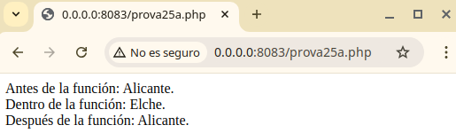
🖼️ Figura 2.33: Ejemplo de alcance local de las variables
<?phpfunctionmiCiudad(){global$ciudad;$ciudad="Elche";echo"Dentro de la función: $ciudad.<br>";}$ciudad="Alicante";echo"Antes de llamar: $ciudad.<br>";miCiudad();echo"Después de llamar: $ciudad.<br>"?>
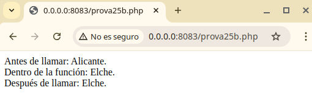
🖼️ Figura 2.34: Ejemplo de alcance global de las variables
No globales
Hay que evitar el uso de variables globales dentro de las funciones. En el caso de necesitarlas, es mejor pasarlas como parámetro a las funciones.
Si necesitas que un parámetro o valor de retorno acepte null, puedes usar el operador ? delante del tipo. Esto indica que el valor puede ser del tipo especificado o null.
Si una variable va seguida de paréntesis, PHP buscará una función con su valor.
<?php$nombreFuncion='nombreDeLaFuncion';$nombreFuncion();// Llama a nombreDeLaFuncion()
<?phpfunctionsumar($a,$b){return$a+$b;}$funcion="sumar";echo$funcion(3,4);// invoca a la función suma?>
Aquí, la variable $operacion almacena el nombre de la función sumar, y al llamarla con los argumentos (3, 4), realiza la operación y devuelve el resultado.
Funciones anónimas
PHP permite la definición y uso de funciones anónimas, es decir, funciones que no tienen nombre, y se utilizan principalmente para gestionar los callbacks. Este tipo de funciones se utiliza mucho en Javascript para gestionar los eventos y promesas.
<?php$anonima=function(){echo"Hola"."<br/>";};$anonima();$anonimaConParametro=function($nombre){echo"Hola ".$nombre."<br/>";};$anonimaConParametro("Aitor");// Uso de variables externas a la función anónima --> `use`$mensaje="Hola";$miClosure=function()use($mensaje){echo$mensaje."<br/>";;};$miClosure();// Uso de parámetros$holaPHP=function($arg)use($mensaje){echo$mensaje." ".$arg;};$holaPHP("PHP");?>
🖼️ Figura 2.35: Ejemplos de uso de función anónima en php
Desde PHP 7.4 se han introducido las funciones flecha (arrow functions) para simplificar su definición y uso.
Mediante el uso de la instrucción include también podemos separar fragmentos de código PHP/HTML que queramos reutilizar en nuestros sitios web y crear un sistema muy sencillo de plantillas.
Por ejemplo, vamos a separar una página en tres partes:
🖼️ Figura 2.39: Ejemplo de acceso a posición en una cadena
Además de echo, podemos mostrar las cadenas mediante la función printf. Esta función viene heredada del lenguaje C, y en la cadena se indica el tipo de dato a formatear y genera una salida formateada. Si queremos guardar el resultado en una variable, podemos utilizar sprintf.
<?php$num=23.2;$nombre="M. Jordan";// %d -> número entero (convierte el float a int), %s -> string// ¿asigna 25 caracteres a la cadena? Noprintf("%25s llevaba el número %d<br/>",$nombre,$num);// %f -> con '- rellenamos hasta los 25 caracteres a la izquierdaprintf("%'-25s llevaba el número %5.2f<br/>",$nombre,$num);// %s -> con '- rellenamos hasta los 25 caracteres a la derecha// %5.2f -> dos dígitos para parte entera + . + dos dígitos para parte decimal$frase=sprintf("%'--25s llevaba el número %5.2f<br/>",$nombre,$num);echo$frase;?>
🖼️ Figura 2.40: Ejemplo de uso de cadenas formateadas mediante printf()
strlen: obtiene la longitud de una cadena y devuelve un número entero.
substr: devuelve una subcadena de la cadena original.
str_replace: reemplaza caracteres en una cadena.
strtolower y strtoupper: Transforman una cadena de caracteres en la misma cadena en minúsculas o mayúsculas respectivamente.
<?php$cadena="El caballero oscuro";$tam=strlen($cadena);echo"La longitud de '$cadena' es: $tam <br />";$oscuro=substr($cadena,13);// desde 13 al final$caba=substr($cadena,3,4);// desde 3, 4 letras$katman=str_replace("c","k",$cadena);echo"$oscuro$caba ahora es $katman";echo"Grande ".strtoupper($cadena);?>
🖼️ Figura 2.41: Ejemplos de usos de funciones básicas sobre cadenas
Si queremos trabajar con caracteres ASCII de forma individual, son útiles las funciones:
🖼️ Figura 2.42: Ejemplo de usos de función ord() y chr()
Si queremos limpiar cadenas, tenemos las funciones:
trim: elimina los espacios al principio y al final.
ltrim / rtrim o chop: Elimina los espacios iniciales / finales de una cadena.
str_pad: rellena la cadenas hasta una longitud especificada y con el carácter o caracteres especificados.
<?php$cadena=" Programando en PHP ";$limpia=trim($cadena);// "Programando en PHP"$sucia=str_pad($limpia,23,".");// "Programando en PHP....."echo$sucia;?>
🖼️ Figura 2.43: Ejemplos de funciones de limpieza de cadenas
La comparación de cadenas puede ser con conversión de tipos mediante == o estricta con ===. También funcionan los operadores < y > si ambas son cadenas.
Al comparar cadenas con valores numéricos podemos utilizar:
strcmp: 0 si las cadenas son iguales, <0 si a es menor que b, o >0 si a es mayor que b.
strcasecmp: las pasa a minúsculas y compara.
strncmp / strncasecmp: compara los N primeros caracteres.
🖼️ Figura 2.44: Ejemplos de uso de funciones para comparar cadenas
Si lo que queremos es buscar dentro de una cadena, tenemos:
strpos / strrpos: busca en una cadena y devuelve la posición de la primera/última ocurrencia.
strstr / strchr (alias): busca una cadena y devuelve la subcadena a partir de donde la ha encontrado.
stristr: ignora las mayúsculas.
<?php$frase="Quien busca encuentra, eso dicen, a veces";$pos1=strpos($frase,",");// encuentra la primera coma$pos2=strrpos($frase,",");// encuentra la última coma$trasComa=strstr($frase,",");// ", eso dicen, a veces"echo$pos1."<br />";echo$pos2."<br />";echo$trasComa."<br />";?>
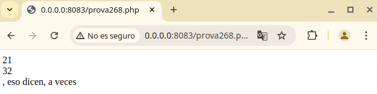
🖼️ Figura 2.45: Ejemplo de uso de funciones buscadoras
Si queremos averiguar qué contienen las cadenas, tenemos un conjunto de funciones de comprobaciones de tipo, se conocen como las funciones ctype que devuelven un booleano:
ctype_alpha → letras
ctype_alnum → alfanuméricos
ctype_digit → dígitos
ctype_punct → caracteres de puntuación, sin espacios
ctype_space → son espacios, tabulador, salto de línea
Si queremos romper las cadenas en trozos, tenemos:
explode: convierte en array la cadena mediante un separador.
implode / join: pasa un array a cadena con un separador.
str_split/ chunk_split: pasa una cadena a una array/cadena cada X caracteres.
<?php$frase="Quien busca encuentra, eso dicen, a veces";$partes=explode(",",$frase);// Salida con bucle for// SALIDA: ["Quien busca encuentra","eso dicen","a veces"]for($i=0;$i<count($partes);$i++){echo$partes[$i]."<br>";}$ciudades=["Elche","Aspe","Alicante"];$cadenaCiudades=implode(">",$ciudades);print_r($cadenaCiudades."<br/>");// salida con print_r// SALIDA: "Elche>Aspe>Alicante";$partes3cadena=chunk_split($frase,3);// SALIDA: un string// "Qui en bus ca enc uen tra , e so dic en, a vec es "$partes3array=str_split($frase,3);print_r($partes3array);// salida con print_// salida con funcion json_encode// SALIDA: un array// ["Qui", "en ", "bus", "ca ", "enc", …]echojson_encode($partes3array);?>
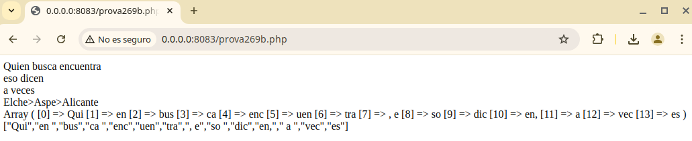
🖼️ Figura 2.47: Ejemplo uso de funciones para obtener subcadenas
Si queremos trabajar con tokens:
strtok(cadena, separador).
y dentro del bucle: strtok(separador).
Finalmente, para separarla en base al formato:
sscanf: al revés que sprintf, crea un array a partir de la cadena y el patrón.
Finalmente, otras operaciones que podemos realizar para trabajar con subcadenas son:
substr_count: número de veces que aparece la subcadena dentro de la cadena.
substr_replace: reemplaza parte de la cadena a partir de su posición, y opcionalmente, longitud.
<?php$batman="Bruce Wayne es Batman";$empresa=substr($batman,6,5);// Wayneecho$empresa."<br />";$bes=substr_count($batman,"B");// 2echo$bes."<br />";// Bruce Wayne es camarero$camarero1=substr_replace($batman,"camarero",15);$camarero2=substr_replace($batman,"camarero",-6);// quita 6 desde el final// Bruno es Batman$bruno=substr_replace($batman,"Bruno",0,11);echo$bruno."<br />";?>
🖼️ Figura 2.48: Ejemplo uso de funciones para obtener subcadenas
También disponemos de una serie de funciones que facilitan las codificaciones desde y hacia HTML:
htmlentities: convierte a entidades HTML, por ejemplo, á por á, ñ por ñ, < por <, etc..
htmlspecialchars: idem pero solo con los caracteres especiales (&, ", ', <, >, ...)
striptags: elimina etiquetas HTML.
nl2br: cambia saltos de línea por <br />.
rawurlencode / rawurldecode: codifica/decodifica una URL (espacios, ...).
Estas funciones las utilizaremos más adelante en la unidad temática 4. Programación Web.
pow, sqrt, log, decbin, bindec, decoct, dechex, base_convert, max, min
Funciones trigonométricas:
sin, cos, tan, deg2rad, rad2deg
Funciones para trabajar con números aleatorios:
rand, mt_rand (más rápida).
Aunque la mayoría de ellas son muy específicas de problemas matemáticos / estadísticos, es muy común que tengamos que redondear y/o formatear los cálculos antes de mostrarlos al usuario.
Mediante la función number_format(numero, cantidadDecimales, separadorDecimales, separadorMiles) podemos pasar números a cadena con decimales y/o separadores de decimales y/o de miles.
Reemplaza por patrón. -1 → sin límite de reemplazos (si pones 1, solo cambia la primera coincidencia).
String
preg_replace_callback($patrón, $callback, $texto)
Permite aplicar una función de callback a cada coincidencia del patrón. De esta forma puedes transformar dinámicamente el valor encontrado.
String
preg_split($patrón, $texto, $lim=-1)
Divide string por patrón. -1 significa que no hay límite de divisiones.
Array
preg_grep($patrón, $array)
Filtra un array por regex
Array
preg_last_error()
Útil tras preg_*. Devuelve un código numérico que indica el último error producido por una función de expresiones regulares. PREG_NO_ERROR → 0, PREG_INTERNAL_ERROR → 1, PREG_BACKTRACK_LIMIT_ERROR → 2, PREG_RECURSION_LIMIT_ERROR → 3, PREG_BAD_UTF8_ERROR → 4, PREG_BAD_UTF8_OFFSET_ERROR → 5, PREG_JIT_STACKLIMIT_ERROR → 6
Constante numérica.
Ejemplos:
<?php$patron='/\d+/';// uno o más dígitos$texto='Tengo 12 perros';if(preg_match($patron,$texto,$m)){echo"Hay un número: {$m[0]}";// "12"}?>
<?php$patron='/\d+/';// uno o más dígitos$texto='Tengo 12 perros, 4 gatos y 7 periquitos';if(preg_match_all($patron,$texto,$coincidencias)){echo"Números encontrados:<br>";foreach($coincidencias[0]as$num){echo$num."<br>";}}?>
<?php$patron='/\d+/';// uno o más dígitos$reemplazo='#';// sustituir números por #$texto='Tengo 12 perros y 4 gatos';$nuevoTexto=preg_replace($patron,$reemplazo,$texto,-1,$count);echo"Texto original: $texto<br>";echo"Texto modificado: $nuevoTexto<br>";echo"Reemplazos realizados: $count";?>
<?php$patron='/\d+/';// uno o más dígitos$texto='Tengo 12 perros y 4 gatos';// Callback: recibe cada coincidencia y devuelve el nuevo valor$nuevoTexto=preg_replace_callback($patron,function($coincidencia){// $coincidencia es un array, el índice [0] es el valor encontrado$numero=(int)$coincidencia[0];return$numero*2;// multiplicamos por 2 cada número encontrado},$texto);echo"Texto original: $texto<br>";echo"Texto modificado: $nuevoTexto";?>
<?php$patron='/\d+/';// dividir por uno o más dígitos$texto='Tengo 12 perros y 4 gatos';// dividimos el texto por los números$partes=preg_split($patron,$texto,-1);echo"Texto original: $texto<br>";echo"Partes obtenidas:<br>";foreach($partesas$p){echo"- $p<br>";}?>
<?php$patron='/^A/';// elementos que empiezan por "A"$array=["Ana","Pedro","Andrés","Lucía","Alba","Juan"];$resultado=preg_grep($patron,$array);echo"Elementos originales:<br>";print_r($array);echo"<br><br>Coincidencias:<br>";print_r($resultado);?>
<?php$texto='camión acción año café';preg_match_all('/\b\p{L}+\b/u',$texto,$m);print_r($m[0]);// reconoce bien tildes y ñ (¡usa 'u'!)?>
Reemplazar solo fuera de etiquetas <code> (avanzado)¶
Para HTML real, mejor un parser (DOMDocument). Ejemplo didáctico:
<?php$txt='Esto es <code>hola</code> y hola fuera';$pat='~(<code>.*?</code>)|hola~s';$out=preg_replace_callback($pat,function($m){if(!empty($m[1]))return$m[1];// bloque code intactoreturn'HOLA';},$txt);// "Esto es <code>hola</code> y HOLA fuera"?>
¿Qué cadenas de texto encontrarían las siguientes regexp?
a) hola
b) h.?a
c) h+b.
d) [2-4]?[3-9ag]
e) aju{2,8}m[-.]z
f) (ad)+juju.[0-9]?-
g) (ho|la)?[4-7zu]
h) [([0-4][0-9]|5[0-2])[0-9]{3} . Códigos Postales España
i) ^.{3,32}#[0-9]{4}$ . Usuario Discord
j) (b25[0-5]|b2[0-4][0-9]|b[01]?[0-9][0-9]?)(.(25[0-5]|2[0-4][0-9]|[01]?[0-9][0-9]?)){3} . Dirección ipv4. b es un delimitador de palabra «boundary».
202tresfrases.php: Muestra 3 frases, cada una en un párrafo distinto, utilizando las tres posibilidades que existen de mostrar contenido. Tras ello, introduce dos comentarios, uno de bloque y otro de una línea.
204datosPersonales.php: Escribe un programa que almacene en variables tu nombre, primer apellido, segundo apellido, email, año de nacimiento y teléfono. Luego muéstralos por pantalla dentro de una tabla.
🖼️ Figura 2.52: Tabla resultante del ejercicio 204
205datosPersonales.html y 205datosPersonales.php: Es el mismo ejercicio que el anterior, pero separando la lógica. En el primer archivo crearemos el formulario para introducir los datos, y luego recogemos los datos y generamos la tabla en el segundo archivo.
206madlib.html y 206madlib.php: A partir de un nombre, un verbo, un adjetivo y un adverbio, crea una historia que contenga dichos elementos. Por ejemplo:
Entrada: perro / caminar / azul / rápidamente
Salida: ¿ Te gusta caminar con tu perro azul rápidamente ?
206madlib2.html y 206madlib2.php Crea un madlib más extenso, leyendo más datos de entrada.
207anyos.php: Tras leer la edad de una persona, mostrar la edad que tendrá dentro de 10 años y hace 10 años. Además, muestra qué año será en cada uno de los casos. Finalmente, muestra el año de jubilación suponiendo que trabajarás hasta los 67 años. En este caso, no hace falta que previamente crees un formulario, puedes probar el ejercicio via URL: 207anyos.php?edad=33.
208dinero.php: A partir de una cantidad de dinero, mostrar su descomposición en billetes (500, 200, 100, 50, 20, 10, 5) y monedas (2, 1), para que el número de elementos sea mínimo. No se utilizar ninguna instrucción condicional. Por ejemplo, al introducir 139 debe mostrar:
1 billete de 1000 billete de 501 billete de 201 billete de 101 billete de 52 moneda de 2
A tener en cuenta
Puedes forzar a realizar la división entera mediante la función intdiv($dividendo, $divisor)o pasar un número flotante a entero puedes usar la función intval().
212reloj.php: Escribe un programa que funcione similar a un reloj, de manera que a partir de los valores de hora, minuto y segundo muestre la hora dentro de un segundo. Tras las 23:59:59 serán las 0:0:0.
213calendario.php: Escribe un programa similar a un calendario de manera que a partir de dia, mes y anyo muestre la fecha dentro de un día después. Debes tener en cuenta que no todos los meses tienen 30 días. En este caso, no vamos a tener en cuenta los años bisiestos.
214ecuacion2g.php: Crea un programa que resuelva una ecuación de 2º grado del tipo ax² + bx + c = 0. Ten en cuenta que puede tener 2, 1 o no tener solución dependiendo del valor del discriminante b²-4ac.
🖼️ Figura 2.53: Ecuación de segundo grado para el ejecicio 214
A tener en cuenta
Para calcular la raíz cuadrada deberás utilizar la función sqrt().
224tablaMultiplicar.php: Muestra dentro de una tabla HTML la tabla de multiplicar del numero que reciba como parámetro. Utiliza <thead> con sus respectivos <th> y <tbody> para dibujar la tabla. Por ejemplo:
226formulario.html y 226tabla.php: A partir de un número de filas y columnas, crear una tabla con ese tamaño. Las celdas deben estar rellenadas con los valores de las coordenadas de cada celda.
227formulario.html y 227cuadrado.php: Basándote en el ejercicio anterior, rellena la tabla de manera que solo los bordes tengan contenido, quedándose el resto de celdas en blanco.
229cuadradoMultiplicar.php: Crea un programa que muestre por pantalla un cuadrado exactamente igual (fíjate bien en los encabezados, tanto de las filas como de las columnas) al de la imagen con las tablas de multiplicar.
232bola8.html: Prepara un formulario con un caja de texto que realice una pregunta al usuario.
232bola8.php: A partir del anterior, crea un programa que muestre la pregunta recibida y genere una respuesta de manera aleatoria entre un conjunto de respuestas predefinidas, almacenadas en un array: Si, no, quizás, claro que sí, por supuesto que no, no lo tengo claro, seguro, yo diría que sí, ni de coña, etc....
Este ejercicio se basa en el juego de la Bola 8 mágica.
234sexos.php: Rellena un array de 100 elementos de manera aleatoria con valores M o F (por ejemplo ["M", "M", "F", "M", ...]). Una vez completado, vuelve a recorrerlo y calcula cuantos elementos hay de cada uno de los valores almacenando el resultado en un array asociativo ['M' => 44, 'F' => 66] (no utilices variables para contar las M o las F). Finalmente, muestra el resultado por pantalla
235monedas.php: Vuelve a realizar el ejercicio 207, el de las monedas (500, 200, 100, 50, 20, 10, 5, 2, 1), pero haciendo uso de arrays y un bucle. Almacena el resultado en un array asociativo. Muestra el resultado en una lista desordenada únicamente con las cantidades que tienen algún valor.
236alturas.php: Mediante un array asociativo, almacena el nombre y la altura de 5 personas (nombre => altura). Posteriormente, recorre el array y muéstralo en una tabla HTML. Finalmente añade una última fila a la tabla con la altura media.
237personas.php: Mediante un array bidimensional, almacena el nombre, altura y email de 5 personas. Para ello, crea un array de personas, siendo cada persona un array asociativo: [ ['nombre'=>'Aitor', 'altura'=>182, 'email'=>'aitor@correo.com'],[…],… ] Posteriormente, recorre el array y muéstralo en una tabla HTML.
238leerCantidad.html y 238leerPersonas.php: a partir de un formulario con un campo de cantidad de personas, generar un nuevo formulario para leer el nombre, altura y email de cantidad personas.
238gestionarPersonas.php: A partir de las personas introducidas, mostrar sus datos en una tabla, y posteriormente, destacar los datos del más alto y el del más bajo.
239tablaDistintos.php: Rellena un array bidimensional de 6 filas por 9 columnas con números aleatorios comprendidos entre 100 y 999 (ambos incluidos). Todos los números deben ser distintos, es decir, no se puede repetir ninguno.
Muestra a continuación por pantalla el contenido del array de tal forma que:
Una función que averigüe si un número es par: esPar(int $num): bool
Una función que devuelva un array de tamaño $tam con números aleatorios comprendido entre $min y $max: arrayAleatorio(int $tam, int $min, int $max) : array
Una función que reciba un $array por referencia y devuelva la cantidad de números pares que hay almacenados: arrayPares(array &$array): int
242parametrosVariables.php: Crea las siguientes funciones:
Una función que devuelva el mayor de todos los números recibidos como parámetros: function mayor(): int. Utiliza las funciones func_get_args(), etc... No puedes usar la función max().
Una función que concatene todos los parámetros recibidos separándolos con un espacio: function concatenar(...$palabras) : string. Utiliza el operador ....
244biblioteca.php: crea un archivo con funciones para sumar, restar, multiplicar y dividir dos números.
244arrayFunciones.php: haciendo uso de un array que almacene el nombre de las funciones del archivo anterior, a partir de dos números recibidos por URL, recorre el array e invoca a las funciones de manera dinámica haciendo uso de funciones variable.
245euros.php: Crea una biblioteca con dos funciones:
peseta2euros: pasa de pesetas a euros
euros2pesetas: pasa de euros a pesetas
Cada función debe recibir dos parámetros:
La cantidad a transformar
La cotización, con un parámetro por defecto con el factor de transformación.
245calculadoraEuros.php: utiliza 244euros.php y prueba las funciones pasando tanto cantidades con la cotización por defecto, como con nuevas cotizaciones. Recuerda que 1 euro son/eran 166.36 pesetas.
246preparaTiquetCompra.php: A partir de una cantidad de productos, leer el nombre y coste de la cantidad de productos indicados (similar al ejercicio 237, pero esta vez no hace falta crear el formulario con la cantidad, se recibe mediante un parámetro GET via URL).
246imprimeTiquetCompra.php: Tras leer los datos del tiquet de compra, enumera en una tabla los productos, con su precio en euros y pesetas, y finalmente, en una última fila, totalizar en ambas monedas.
A partir de los archivos creados en el ejercicio anterior, crea una plantilla mediante includes: 247preparaCompra.php: similar a 246preparaTiquetCompra.php, pero separando el encabezado (Supermercado Severo en h1) y el pie (Tu supermercado de confianza) en ficheros externos y referenciando a ellos mediante include.
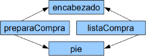
🖼️ Figura 2.55: Uso de plantillas en el Ejercicio 247
247listaCompra.php: recibe los datos del anterior, y reutiliza parte de 246imprimeTiquetCompra.php cambiando la tabla por una lista desordenada de los productos junto a su precio.
248login.php: el formulario de entrada, que solicita el usuario y contraseña.
248compruebaLogin.php: recibe los datos y comprueba si son correctos (los usuarios se guardan en un array asociativo) pasando el control mediante el uso de include a:
248ok.php: El usuario introducido es correcto
248ko.php: El usuario es incorrecto. Informar si ambos están mal o solo la contraseña. Volver a mostrar el formulario de acceso.
Todos los ejercicios se deben realizar creando nuevas funciones para encapsular el código. Además de la propia función, el ejercicio debe contener código para poder probarlo.
255palindromo.php: Escribe una función que devuelva un booleano indicando si una palabra es palíndroma (se lee igual de izquierda a derecha que de derecha a izquierda, por ejemplo, “ligar es ser agil”).
258investiga.php: Investiga las siguientes funciones de cadena (explica para qué sirven mediante comentarios, y programa un pequeño ejemplo de cada una de ellas): ucwords, strrev, str_repeat y md5.
Los siguientes ejercicios se basan en la generación de números aleatorios.
260generaContrasenya.php: Crea una función que a partir de un tamaño, genera una contraseña aleatoria compuesta de letras y dígitos de manera aleatoria.
quinigol() : array → Genera un array multidimensional con 6 resultados aleatorios con combinaciones [012M, 012M].
quiniela() : array → Genera un array con una combinación de quiniela generada de manera aleatoria: 14 resultados con 1X2 y el pleno al quince con [012M, 012M].
tabla(array $quiniela) : string→ transforma un array de una quiniela en una tabla HTML.
Aquí entontrarás ejercicios genéricos de programación para usar con cualquier lenguaje. Son genéricos porque te pueden servir con cualquier lenguaje que quieras aprender.
PHP sigue un paradigma de programación orientada a objetos (POO) basada en clases.
Una clase es una plantilla que define las atributos y métodos para poder crear objetos.
De este manera, un objeto es una instancia de una clase.
Tanto los atributos como los métodos se definen con una visibilidad (quién puede acceder):
Privado - private: Sólo puede acceder la propia clase.
Protegido - protected: Sólo puede acceder la propia clase o sus descendientes.
Público -public: Puede acceder cualquier otra clase.
Para declarar una clase, se utiliza la palabra clave class seguido del nombre de la clase.
Para instanciar un objeto a partir de la clase, se utiliza new.
Todas las clases empiezan por letra mayúscula (UpperCamelCase).
<?php// DeclaraciónclassNombreClase{// atributos// y métodos}// Instanciación$ob=newNombreClase();
Cuando un proyecto crece, es normal modelar las clases mediante UML (¿recordáis Entornos de Desarrollo?). Las clases se representan mediante un cuadrado, separando el nombre, de los atributos y los métodos:
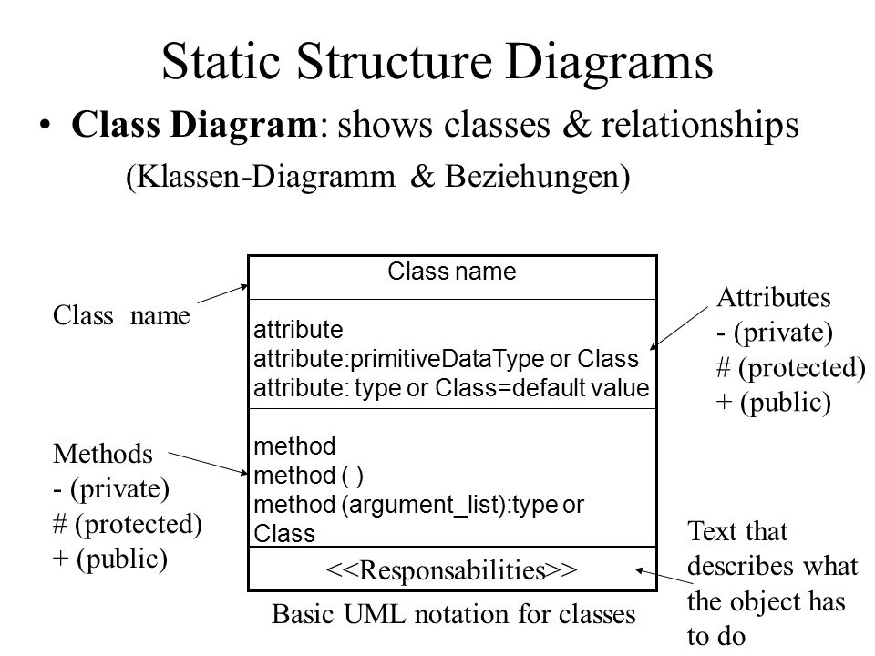
🖼️ Figura 3.1: Estructura de UML básico para las clases
Una vez que hemos creado un objeto, se utiliza el operador -> para acceder a un atributo o un método del objeto:
$objeto->atributo;$objeto->método(parámetros);
Si, desde dentro de la clase, queremos acceder a un atributo o método de la misma clase, utilizaremos la referencia $this;
$this->atributo;$this->método(parámetros);
Ejemplo de clase Persona
Dentro del fichero Persona.php:
<?phpclassPersona{privatestring$nombre;publicfunctionsetNombre(string$nombre){$this->nombre=$nombre;}publicfunctionimprimir(){echo$this->nombre.PHP_EOL;}}$bruno=newPersona();// creamos un objeto$bruno->setNombre("Bruno Díaz");$bruno->imprimir();
Aunque se pueden declarar varias clases en el mismo archivo, es una mala práctica. Así pues, cada fichero:
Las constantes se definen públicas para que sean accesibles por todos los recursos.
<?phpclassMayorMenor{// constantesconstLIMITE_MAXIMO=100;// atributosprivateint$mayor;privateint$menor;// métodos setterspublicfunctionsetMayor(int$may){$this->mayor=$may;}publicfunctionsetMenor(int$men){$this->menor=$men;}// métodos getterspublicfunctiongetMayor():int{return$this->mayor;}publicfunctiongetMenor():int{return$this->menor;}// resto de métodospublicfunctionmostrarLimite():void{echo"El límite máximo permitido es ".self::LIMITE_MAXIMO.PHP_EOL;}}
Una de las grandes novedades que ofrece PHP 8 es la simplificación de los constructores con parámetros, lo que se conoce como promoción de los atributos del constructor.
Para ello, en vez de tener que declarar los atributos como privados o protegidos, y luego dentro del constructor tener que asignar los parámetros a estos atributos, el propio constructor promociona los atributos.
Ejemplo PHP7 o anteriores VS PHP8
Imaginemos una clase Punto donde queramos almacenar sus coordenadas:
Son aquellas que tienen atributos (o propiedades) y/o métodos estáticos (también se conocen como de clase, porque su valor se comparte entre todas las instancias de la misma clase).
Se declaran con static y se referencian con ::.
Si queremos acceder a un método estático, se antepone el nombre de la clase como sigue: Producto::nuevoProducto().
Si desde un método queremos acceder a un atributo estático de la misma clase, se utiliza la referencia self como sigue: self::$numProductos.
También podemos tener clases normales que tengan algun atributo estático:
<?phpclassProducto{constIVA=0.23;privatestatic$numProductos=0;private$codigo;publicfunction__construct(string$cod){self::$numProductos++;$this->codigo=$cod;}publicfunctionmostrarResumen():string{return"El producto ".$this->codigo." es el número ".self::$numProductos;}}$prod1=newProducto("PS5");$prod2=newProducto("XBOX Series X");$prod3=newProducto("Nintendo Switch");echo$prod3->mostrarResumen();
Al trabajar con clases y objetos, existen un conjunto de funciones ya definidas por el lenguaje que permiten obtener información sobre los objetos:
instanceof: permite comprobar si un objeto es de una determinada clase.
get_class: devuelve el nombre de la clase.
get_declared_class: devuelve un array con los nombres de las clases definidas.
class_alias: crea un alias.
class_exists / method_exists / property_exists: devuelve true si la clase/método/atributo está definida.
get_class_methods / get_class_vars / get_object_vars: devuelve un array con los nombres de los métodos/atributos de una clase / atributos de un objeto que son accesibles desde dónde se hace la llamada.
Ejemplo de funciones introspectivas
<?php$p=newProducto("PS5");if($pinstanceofProducto){echo"Es un producto.<br/>";echo"La clase es ".get_class($p)."<br/>";class_alias("Producto","Articulo");$c=newArticulo("Nintendo Switch");echo"Un articulo es un ".get_class($c)."<br/>";print_r(get_class_methods("Producto"));echo"<br/>";print_r(get_class_vars("Producto"));echo"<br/>";print_r(get_object_vars($p));echo"<br/>";if(method_exists($p,"mostrarResumen")){echo$p->mostrarResumen();}}
Al asignar dos objetos no se copian, se crea una nueva referencia.
Si queremos una copia, hay que clonarlo mediante el método clone(object) : object.
PHP nos permite crear un método que se llamará cuando ejecutemos el operador clone. Este método puede entre otras cosas inicializar algunos atributos.
Si no se define el método __clone() se hará una copia idéntica del objeto que le pasamos como parámetro al operador clone.
Ejemplo de clonado
Crearemos una clase Persona que tenga como atributos su nombre y edad, definiremos los métodos para cargar y retornar los valores de sus atributos.
Haremos que cuando clonemos un objeto de dicha clase la edad de la persona se fije con cero.
<?phpclassPersona{private$nombre;private$edad;publicfunctionfijarNombreEdad($nom,$ed){$this->nombre=$nom;$this->edad=$ed;}publicfunctiongetNombre(){return$this->nombre;}publicfunctiongetEdad(){return$this->edad;}publicfunction__clone(){$this->edad=0;}}$persona1=newPersona();$persona1->fijarNombreEdad('Juan',20);echo'Datos de $persona1:';echo$persona1->getNombre().' - '.$persona1->getEdad().'<br>';$persona2=clone($persona1);echo'Datos de $persona2:';echo$persona2->getNombre().' - '.$persona2->getEdad().'<br>';?>
El método __clone se ejecutará cuando llamemos al operador clone para esta clase:
public function __clone() { $this->edad=0;}
Es decir cuando realicemos la asignación:
$persona2 = clone($persona1);
Inicialmente se hace una copia idéntica de $persona1 pero luego se ejecuta el método __clone con lo que el atributo $edad se modifica.
Si queremos que una clase no pueda clonarse simplemente podemos implementar el siguiente código en el método __clone():
public function __clone() { die('No esta permitido clonar objetos de esta clase');}
PHP soporta herencia simple, de manera que una clase solo puede heredar de otra clase, no de dos o más clases a la vez. Para ello se utiliza la palabra clave extends.
Si queremos que la clase A hereda de la clase B haremos:
class A extends B
La clase hija hereda los atributos y métodos públicos y protegidos de la clase madre.
Cada clase en un archivo
Como ya hemos comentado, deberíamos colocar cada clase en un archivo diferente para posteriormente utilizarlo mediante include. En los siguientes ejemplos los hemos colocado juntos para facilitar su legibilidad.
Ejemplo herencia
Por ejemplo, tenemos una clase Producto y una Tv que hereda de Producto:
Podemos utilizar las siguientes funciones para averiguar si hay relación entre dos clases:
get_parent_class(object): string
is_subclass_of(object, string): bool
Ejemplo 2 herencia
<?php$t=newTv();$t->setCodigo(33);if($tinstanceofProducto){echo$t->mostrarResumen();}$madre=get_parent_class($t);echo"<br>La clase madre es: ".$madre;$objetoMadre=new$madre;echo$objetoMadre->mostrarResumen();if(is_subclass_of($t,'Producto')){echo"<br>Soy una hija de Producto";}
Podemos crear métodos en las clase hijas con el mismo nombre que la clase madre, cambiando su comportamiento. Para invocar a los métodos de la clase madre: parent::nombreMetodo().
<?phpclassTvextendsProducto{public$pulgadas;public$tecnologia;publicfunctionmostrarResumen(){parent::mostrarResumen();echo"<p>TV ".$this->tecnologia." de ".$this->pulgadas."</p>";}}
En cambio, si lo definimos en la clase hija, hemos de invocar al de la clase madre de manera explícita.
<?phpclassProducto{publicstring$codigo;publicfunction__construct(string$codigo){$this->codigo=$codigo;}publicfunctionmostrarResumen(){echo"<p>Prod:".$this->codigo."</p>";}}classTvextendsProducto{public$pulgadas;public$tecnologia;publicfunction__construct(string$codigo,int$pulgadas,string$tecnologia){parent::__construct($codigo);$this->pulgadas=$pulgadas;$this->tecnologia=$tecnologia;}publicfunctionmostrarResumen(){parent::mostrarResumen();echo"<p>TV ".$this->tecnologia." de ".$this->pulgadas."</p>";}}
<?phpclassProducto{publicfunction__construct(privatestring$codigo){}publicfunctionmostrarResumen(){echo"<p>Prod:".$this->codigo."</p>";}}classTvextendsProducto{publicfunction__construct(string$codigo,privateint$pulgadas,privatestring$tecnologia){parent::__construct($codigo);}publicfunctionmostrarResumen(){parent::mostrarResumen();echo"<p>TV ".$this->tecnologia." de ".$this->pulgadas."</p>";}}
Las clases abstractas obligan a heredar de estas clases, ya que no se permite su instanciación; sí se permite a las clases heredadas (siempre que no estén también definidas como abstractas).
Se define mediante abstractclass NombreClase {}.
Una clase abstracta puede contener atributos y métodos no-abstractos, y/o métodos abstractos.
Cuando una clase hereda de una clase abstracta, obligatóriamente debe implementar los métodos que tiene la clase madre marcados como abstractos.
<?phpclassTvextendsProducto{public$pulgadas;public$tecnologia;publicfunctionmostrarResumen(){//obligado a implementarloecho"<p>Código ".$this->getCodigo()."</p>";echo"<p>TV ".$this->tecnologia." de ".$this->pulgadas."</p>";}}$t=newTv();echo$t->getCodigo();
Son clases opuestas a las clases abstractas, ya que evitan que se pueda heredar una clase o método para sobreescribirlo.
Se define mediante finalclass NombreClase {}.
<?php// clase ProductoclassProducto{private$codigo;publicfunctiongetCodigo():string{return$this->codigo;}finalpublicfunctionmostrarResumen():string{return"Producto ".$this->codigo;}}// clase Microondas// No podremos heredar de MicroondasfinalclassMicroondasextendsProducto{private$potencia;publicfunctiongetPotencia():int{return$this->potencia;}// No podemos implementar mostrarResumen()}
Permite definir un contrato con las firmas de los métodos a cumplir. Así pues, solo contiene declaraciones de funciones y todas deben ser públicas.
Se declaran con la palabra clave interface.
Las clases que cumplan el contrato lo realizan mediante la palabra clave implements.
<?phpinterfaceNombreable{// declaración de funciones}classNombreClaseimplementsNombreInterfaz{// código de la clase
Se permite la herencia de interfaces. Además, una clase puede implementar varios interfaces (en este caso, sí soporta la herecia múltiple, pero sólo de interfaces).
<?phpinterfaceMostrable{publicfunctionmostrarResumen():string;}interfaceMostrableTodoextendsMostrable{publicfunctionmostrarTodo():string;}interfaceFacturable{publicfunctiongenerarFactura():string;}classProductoimplementsMostrableTodo,Facturable{// Implementaciones de los métodos// Obligatoriamente deberá implementar:// - public function mostrarResumen, // - public function mostrarTodo y // - public function generarFactura}
Proyecto Videoclub a entregar
Crea una carpeta Videoclub para realizar el siguiente proyecto:
Sigue el planteamiento de la programación funcional, y también se conoce como method chaining. Plantea que sobre un objeto se realizan varias llamadas; o sea, consiste en llamar varios métodos de un objeto en una misma línea, basta con añadir al final de cada método: return $this;.
Ejemplo métodos encadenados
Para facilitarlo, vamos a modificar todos sus métodos mutadores (que modifican datos, setters, ...) para que devuelvan una referencia a $this:
<?phpclassCoche{publicfunctionlavar(){echo"Coche lavado.\n";return$this;// retorna el mismo objeto Coche}publicfunctionencerar(){echo"Coche encerado.\n";return$this;// retorna el mismo objeto Coche}}// ejemplo llamada a los métodos encadenados $coche=newCoche;$coche->lavar()->encerar();
//mostrará
Cochelavado.
Cocheencerado.
Otro ejemplo
<?phpclassLibro{privatestring$nombre;privatestring$autor;publicfunctiongetNombre():string{return$this->nombre;}publicfunctionsetNombre(string$nombre):Libro{$this->nombre=$nombre;return$this;}publicfunctiongetAutor():string{return$this->autor;}publicfunctionsetAutor(string$autor):Libro{$this->autor=$autor;return$this;}publicfunction__toString():string{return$this->nombre." de ".$this->autor;}}echo"USO TRADICIONAL:<br/>"$libro=newLibro();$libro->setNombre("Cien años de soledad");$libro->setAutor("Gabriel García Márquez");echo$libro;// Cien años de soledad de Gabriel García Márquezecho"<br/>################<br/>";echo"USO DE MÉTODOS ENCADENADOS:<br/>"$libro=(newLibro())->setNombre("1984")->setAutor("George Orwell");echo$libro;// Retorna el método __toString() . Resultado: 1984 de George Orwell
Todas las clases PHP ofrecen un conjunto de métodos, también conocidos como magic methods que se pueden sobreescribir para sustituir su comportamiento. Algunos de ellos ya los hemos utilizado.
__destruct() → se invoca al perder la referencia. Se utiliza para cerrar una conexión a la BD, cerrar un fichero, ...
__toString() → representación del objeto como cadena. Es decir, cuando hacemos echo $objeto se ejecuta automáticamente este método.
get(atributo), set(atributo, valor) → Permitiría acceder a los atributos privados, aunque siempre es más legible/mantenible codificar los getter/setter.
__isset(atributo), __unset(atributo) → Permite averiguar o quitar el valor a un atributo.
sleep(), wakeup() → Se ejecutan al recuperar (unserialize^) o almacenar un objeto que se serializa (serialize), y se utilizan para permite definir qué atributos se serializan.
call(), callStatic() → Se ejecutan al llamar a un método que no es público. Permiten sobrecargar métodos.
Ejemplo
<?phpclassEjemploMagico{privatestring$nombre;privateint$edad;private?string$conexion=null;// __construct: se ejecuta al crear el objetopublicfunction__construct(string$nombre,int$edad){echo"▶ Constructor ejecutado<br>";$this->nombre=$nombre;$this->edad=$edad;$this->conexion="Conectado a BD";}// __destruct: se ejecuta al destruir el objeto o perder la referenciapublicfunction__destruct(){echo"⏹ Destructor ejecutado: cerrando conexión...<br>";$this->conexion=null;}// __toString: representación del objeto como texto (echo $obj)publicfunction__toString():string{return"Nombre: {$this->nombre}, Edad: {$this->edad}";}// Getters y Setters (acceso controlado a atributos privados)publicfunctiongetNombre():string{return$this->nombre;}publicfunctionsetNombre(string$nombre):self{$this->nombre=$nombre;return$this;}publicfunctiongetEdad():int{return$this->edad;}publicfunctionsetEdad(int$edad):self{$this->edad=$edad;return$this;}// __isset y __unset: permiten verificar o eliminar propiedades privadaspublicfunction__isset($propiedad):bool{echo"¿Existe la propiedad '$propiedad'? ";returnisset($this->$propiedad);}publicfunction__unset($propiedad):void{echo"Eliminando la propiedad '$propiedad'...<br>";unset($this->$propiedad);}// __sleep y __wakeup: controlan la serialización y deserializaciónpublicfunction__sleep():array{echo"💾 Serializando objeto...<br>";// Solo queremos guardar nombre y edad, no la conexiónreturn['nombre','edad'];}publicfunction__wakeup():void{echo"🔄 Objeto restaurado. Reconectando...<br>";$this->conexion="Conectado de nuevo";}// __call: se ejecuta cuando se invoca un método inexistente o privadopublicfunction__call($metodo,$argumentos){echo"⚠️ Intentando llamar a método no definido '$metodo' con args: ";print_r($argumentos);}// __callStatic: igual que __call pero para métodos estáticospublicstaticfunction__callStatic($metodo,$argumentos){echo"⚠️ Llamada estática a '$metodo' con args: ";print_r($argumentos);}}// DEMOSTRACIÓN$obj=newEjemploMagico("Arturo",25);echo"<hr>";// echo → ejecuta automáticamente __toStringecho$obj."<br><hr>";// Getters y setters$obj->setNombre("Ana")->setEdad(30);echo$obj->getNombre()." tiene ".$obj->getEdad()." años.<br><hr>";// isset / unset mágicosvar_dump(isset($obj->nombre));// falsevar_dump(isset($obj->edad));// true (aunque sea privada)unset($obj->edad);var_dump(isset($obj->edad));// falseecho"<hr>";// Serialización (sleep / wakeup)$serializado=serialize($obj);echo"Objeto serializado: $serializado<br>";$restaurado=unserialize($serializado);echo$restaurado."<br><hr>";// call / callStatic$obj->metodoInexistente("dato1","dato2");EjemploMagico::metodoEstaticoInexistente(123,456);echo"<hr>Fin del script<br>";
Desde PHP 5.3 y también conocidos como Namespaces, permiten organizar las clases, interfaces, funciones y constantes en un ámbito separado. Esto evita colisiones o conflictos de nombres entre distintos elementos, como ocurre en otros lenguajes (por ejemplo, los paquetes en Java).
Aquí, al estar en diferentes namespaces, ambas clases Producto pueden coexistir sin problemas.
Los namespaces permiten:
Evitar conflictos de nombre al reutilizar librerías o frameworks.
Mejorar la estructura y organización de tu código.
Facilitar la colaboración en proyectos grandes.
Recomendación
Mantén un solo namespace por archivo y organiza los archivos en una estructura de carpetas que refleje los diferentes niveles de los namespaces, similar a cómo se organizan los paquetes en Java.
Un namespace se declara en la primera línea del archivo usando la palabra clave namespace seguida del nombre del espacio de nombres. Los niveles de un namespace se separan con barras invertidas \.
Ejemplo namespace
En el siguiente ejemplo, la clase Producto que se encuentra en el fichero Producto.php y la constante IVA pertenecen al namespaceDwes\Ejemplos.
Para acceder a recursos dentro de un namespace, es necesario incluirlos primero en el archivo, usando include o require. Dependiendo de la ubicación del recurso, hay tres tipos de acceso:
A) Sin cualificar: Se refiere directamente al recurso si está en el mismo namespace.
Ejemplo acceso sin cualificar
<?phpnamespaceMiNamespace;classMiClase{publicfunctionmostrar(){echo"Esto es MiClase";}}// Como MiClase está en el mismo namespace (MiNamespace),// puedo crear una instancia sin especificar el namespace completo.$miObjeto=newMiClase();// Acceso sin cualificar$miObjeto->mostrar();
B) Cualificado: Usa una ruta relativa dentro del mismo namespace o subnamespace (rutaRelativa\recurso)→ no hace falta poner el namespace completo.
Ejemplo acceso cualificado
<?phpnamespaceMiNamespace\SubNamespace;classClaseSecundaria{publicfunctionmostrar(){echo"Esto es ClaseSecundaria en SubNamespace";}}
<?phpnamespaceMiNamespace;classMiClase{publicfunctionmostrar(){echo"Esto es MiClase en MiNamespace";}}// Como ClaseSecundaria está en un subnamespace de MiNamespace,// puedo usar el nombre cualificado sin poner la barra inicial.$secundaria=newSubNamespace\ClaseSecundaria();// Acceso cualificado$secundaria->mostrar();
C) Totalmente cualificado: Usa la ruta completa desde la raíz del namespace ( \rutaAbsoluta\recurso)
Ejemplo acceso totalmente cualificado
<?phpnamespaceOtroNamespace;classClaseExterna{publicfunctionmostrar(){echo"Esto es ClaseExterna en OtroNamespace";}}
<?phpnamespaceMiNamespace;classMiClase{publicfunctionmostrar(){echo"Esto es MiClase en MiNamespace";}}// Como ClaseExterna está en un namespace completamente diferente,// necesitamos usar el namespace completo y comenzar con una barra invertida.$externa=new\OtroNamespace\ClaseExterna();// Acceso totalmente cualificado$externa->mostrar();
Ejemplo de acceso
<?phpnamespaceDwes\Ejemplos;include_once("Producto.php");// acceso sin cualificar (está en el mismo namespace)echoIVA;// imprime 0,21// acceso cualificado (error si Utilidades no existe)echoUtilidades\IVA;// Error, Utilidades no está definido// acceso totalmente cualificadoecho\Dwes\Ejemplos\IVA;// Correcto$p1=newProducto();// busca la clase en el mismo namespace y// encuentra \Dwes\Ejemplos\Producto$p2=newModel\Producto();// daría error, no existe el namespace Model.// Está buscando \Dwes\Ejemplos\Model\Producto$p3=new\Dwes\Ejemplos\Producto();// \Dwes\Ejemplos\Producto
Para evitar la necesidad de escribir rutas cualificadas o totalmente cualificadas constantemente, PHP permite declarar el uso de recursos de otros namespaces mediante la palabra clave use, similar al import en Java.
Usar constantes: use const nombreCualificadoConstante
Usar funciones: use function nombreCualificadoFuncion
Usar clases: use nombreCualificadoClase
Alias de la clase: use nombreCualificadoClase as NuevoNombre (renombrar para evitar conflictos).
Ejemplo de use
Si queremos utilizar la clase \Dwes\Ejemplos\Producto en un archivo en la raíz, por ejemplo inicio.php, lo haríamos así:
<?phpinclude_once("Dwes\Ejemplo\Producto.php");useconstDwes\Ejemplos\IVA;// uso de constanteuse\Dwes\Ejemplos\Producto;// uso de claseechoIVA;// imprime 0,21$p1=newProducto();// no se necesita la ruta completa, gracias a `use`
El uso de use solo es necesario para acceder a recursos que están en un namespace diferente. Si estás trabajando dentro del mismo namespace, no es necesario.
A medida que un proyecto crece, es fundamental organizar el código fuente de forma estructurada. Una recomendación común es colocar los archivos que interactúan con el navegador en la raíz del proyecto y organizar las clases dentro de un namespace en una carpeta específica, como src o app.
🖼️ Figura 3.2: Ejemplo de organización de proyectos usuando namespace
Reglas de organización:
Un recurso por archivo: Cada clase, función o constante debe estar en su propio archivo.
Incluir namespaces: Declara el namespace en la primera línea del archivo (si no está en el directorio raíz).
Usar include_once: Para cargar los recursos necesarios (clases, interfaces, etc.).
Declarar dependencias: Cada recurso debe incluir las dependencias que necesita, como clases base o interfaces.
Uso de use: Si el recurso está en un namespace diferente, utiliza use para facilitar el acceso sin cualificar.
Para evitar la necesidad de usar include_once o require en cada archivo, PHP ofrece el autoload, que permite cargar clases automáticamente cuando son necesarias. Esto se hace mediante la función spl_autoload_register.
Y ¿cómo organizamos ahora nuestro código aprovechando el autoload?
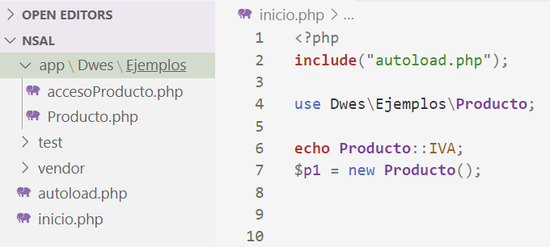
🖼️ Figura 3.3: Ordenar clases en una carpeta (app)e
Una buena práctica es organizar todas las clases dentro de una carpeta como app. Luego, el autoload se configura para buscar clases dentro de esta carpeta:
<?phpspl_autoload_register(function($nombreClase){$ruta=__DIR__."/".$nombreClase.'.php';$ruta=str_replace("\\","/",$ruta);// Verifica si el archivo existe antes de incluirloif(file_exists($ruta)){include_once$ruta;}else{die("No se pudo cargar la clase: $nombreClase");}});
Ejemplo de uso de autoload en el archivo principal
Durante la ejecución de una aplicación pueden aparecer problemas: intentar abrir un archivo que no existe, utilizar una variable sin inicializar o realizar una operación no válida.
Gestionar estos problemas implica detectarlos, conocer su causa y decidir cómo debe responder la aplicación. Ocultar un mensaje no soluciona el error que lo ha provocado.
Conviene distinguir qué errores se notifican, dónde se muestran y cómo reaccionamos ante ellos.
¿Se incluyen sus mensajes en la salida enviada al usuario?
log_errors
¿Se guardan los errores en un registro?
error_log
¿En qué archivo o destino se registran?
Ejemplo
Por ejemplo, podemos registrar los errores sin mostrarlos en la página web. Así, el equipo de desarrollo dispone de información para investigarlos y el visitante no ve detalles internos del servidor.
Estos cambios afectan a la ejecución actual; no modifican permanentemente php.ini. Además, una instrucción del propio archivo no puede ejecutarse si un error de sintaxis impide analizarlo.
Para seleccionar niveles utilizamos operadores a nivel de bits:
// Notificar todos los niveles.error_reporting(E_ALL);// Notificar todos excepto los avisos E_NOTICE.error_reporting(E_ALL & ~E_NOTICE);// Notificar únicamente errores fatales y advertencias.error_reporting(E_ERROR | E_WARNING);// Desactivar el reporte del manejador estándar.error_reporting(0);
En estas expresiones:
| incluye varios niveles.
~ invierte una máscara; junto con &, permite excluir niveles.
& conserva los niveles que coinciden en ambas máscaras.
Ejemplo
E_ALL & ~E_NOTICE
Significa: todos los niveles excepto E_NOTICE. No debe confundirse & con el operador lógico &&.
Durante el desarrollo conviene utilizar E_ALL para detectar también los problemas que no interrumpen el programa.
PHP dispone de un manejador estándar para sus errores. Con set_error_handler() podemos registrar una función propia para determinados niveles, por ejemplo, para cambiar el formato del mensaje o registrarlo de otra manera.
Ejemplo didáctico para desarrollo
<?phperror_reporting(E_ALL);functionmiManejadorErrores(int$nivel,string$mensaje):bool{// Respetar los niveles seleccionados en error_reporting().if((error_reporting()&$nivel)===0){returnfalse;}echo"<strong>Advertencia:</strong> ".htmlspecialchars($mensaje,ENT_QUOTES,"UTF-8")."<br>";returntrue;}// Utilizar nuestra función para las advertencias E_WARNING.set_error_handler("miManejadorErrores",E_WARNING);// Si el archivo no existe, se genera una advertencia.$archivo=fopen("archivo_inexistente.txt","r");if($archivo===false){echo"No se ha podido abrir el archivo.<br>";}echo"El programa continúa.<br>";// Recuperar el manejador anterior.restore_error_handler();
En este ejemplo:
set_error_handler() registra la función; no la ejecuta inmediatamente.
Si fopen() genera un E_WARNING, PHP llama a la función.
$nivel contiene el tipo de error y $mensaje, su descripción.
return true indica que lo hemos gestionado; return false deja actuar al manejador estándar.
restore_error_handler() recupera el manejador anterior.
La comprobación de error_reporting() es necesaria si queremos respetar ese filtro: un manejador personalizado puede recibir niveles excluidos del reporte estándar. Tampoco puede gestionar todos los errores; por ejemplo, no gestiona E_ERROR ni E_PARSE.
Manejadores personalizados y producción
El echo del manejador es una salida escrita por nuestro código: display_errors = Off no lo oculta. En producción, podemos utilizar error_log() para registrar el detalle y mostrar al usuario un mensaje general.
5. Diferencia con las excepciones y los objetos Error¶
set_error_handler() no sustituye a try/catch. En PHP moderno, algunos problemas se comunican mediante objetos lanzados que debemos capturar.
Por ejemplo, en PHP 8, dividir mediante / entre cero lanza un DivisionByZeroError, que no pasa por nuestro manejador de advertencias:
<?php$dividendo=10;$divisor=0;try{$resultado=$dividendo/$divisor;echo"Resultado: $resultado";}catch(DivisionByZeroError$e){echo"No se puede dividir entre cero.";}echo"<br>El programa continúa.";
Capturar el problema permite decidir cómo continuar. En cambio, cambiar error_reporting() solo configura su reporte: no convierte una operación incorrecta en una operación válida.
En el apartado anterior aprendimos a configurar el reporte de errores. Ahora vamos a dar un paso más: decidir cómo responde nuestro programa cuando una operación no puede completarse.
Ejemplo
Pensemos en el proyecto del videoclub. Un cliente puede intentar alquilar un soporte que ya tiene o superar su máximo de alquileres. En esos casos, el programa debe detectar el problema, detener esa operación e informar de lo ocurrido.
Una excepción es un objeto que representa una situación que interrumpe el flujo normal de una operación. Podemos lanzarla con throw y capturarla con catch.
Idea inicial
Una parte del programa detecta el problema y lanza la excepción. Otra parte la captura y decide qué hacer: mostrar un mensaje, solicitar otros datos o cancelar la operación.
Comenzamos con una operación sencilla: dividir dos números. En este ejemplo comprobamos el divisor y lanzamos nosotros una Exception antes de intentar la división.
<?php$dividendo=10;$divisor=0;try{echo"1. Vamos a realizar la división.<br>";if($divisor===0){thrownewException("El divisor no puede ser cero.");}$resultado=$dividendo/$divisor;echo"2. Resultado: ".$resultado."<br>";}catch(Exception$e){echo"3. No se ha podido dividir: ".$e->getMessage()."<br>";}echo"4. El programa continúa.<br>";
1. Vamos a realizar la división.
3. No se ha podido dividir: El divisor no puede ser cero.
4. El programa continúa.
¿Por qué no aparece el mensaje 2?
Cuando se ejecuta throw, se abandona el recorrido normal del try y se busca un catch compatible.
Elemento
¿Qué hace?
try
Contiene la operación que puede lanzar una excepción.
new Exception("mensaje")
Crea el objeto que describe el problema.
throw
Lanza ese objeto e interrumpe el flujo normal de la operación.
catch (Exception $e)
Captura una excepción compatible y la guarda en $e.
$e->getMessage()
Obtiene el mensaje incluido en la excepción.
Crear una excepción y lanzarla son acciones diferentes:
new Exception(...) crea el objeto y
throw lo lanza.
Antes de ejecutar: ¿qué ocurre si el divisor vale 2?
No se ejecuta throw y tampoco se entra en catch.
1. Vamos a realizar la división.
2. Resultado: 5
4. El programa continúa.
Capturar no significa volver al punto del fallo
Después del catch, el programa continúa con la instrucción posterior al conjunto try/catch. No vuelve a ejecutar la división ni las instrucciones que quedaron pendientes dentro del try.
Si no existe ningún catch compatible en la cadena de llamadas, y tampoco se ha configurado un manejador global, el programa termina con un error por excepción no capturada.
2. Lanzar desde una función y capturar al utilizarla¶
Una función puede detectar un problema sin decidir cómo se mostrará al usuario.
Ejemplo
Vamos a calcular el precio de un alquiler:
<?phpfunctioncalcularPrecioAlquiler(float$precioDiario,int$dias):float{if($dias<=0){thrownewException("El alquiler debe durar al menos un día.");}return$precioDiario*$dias;}try{$total=calcularPrecioAlquiler(2.50,0);echo"Precio del alquiler: ".number_format($total,2,",",".")." €<br>";}catch(Exception$e){echo"No se ha registrado el alquiler: ".$e->getMessage()."<br>";}
La función lanza la excepción y el código que la utiliza la captura. La excepción sale de la función y llega al catch que rodea su llamada, se mostrará:
No se ha registrado el alquiler: El alquiler debe durar al menos un día.
Si cambiamos 0 por 3, la función devuelve 7.5 y se muestra:
Precio del alquiler: 7,50 €
Relación con el proyecto Videoclub
Hasta ahora, algunos métodos devolvían false y mostraban un mensaje cuando algo no podía hacerse. Al utilizar excepciones, podemos hacer que el método detecte y lance el problema, mientras que el código que lo llama decide cómo comunicarlo.
No hace falta colocar un try/catch dentro de cada método. Debemos capturar la excepción donde podamos darle una respuesta útil.
El bloque finally contiene las acciones que deben realizarse al salir del try/catch, tanto si la operación ha funcionado como si se ha lanzado una excepción.
Ejemplo
<?php$dias=0;try{echo"Comprobando la solicitud de alquiler...<br>";if($dias<=0){thrownewException("La duración del alquiler no es válida.");}echo"Solicitud válida.<br>";}catch(Exception$e){echo"Problema: ".$e->getMessage()."<br>";}finally{echo"Comprobación finalizada.<br>";}echo"Podemos realizar otra solicitud.<br>";
Comprobando la solicitud de alquiler...
Problema: La duración del alquiler no es válida.
Comprobación finalizada.
Podemos realizar otra solicitud.
Si $dias vale 3, no se ejecuta el catch, pero sí se ejecuta el finally.
Su utilidad práctica es liberar recursos, por ejemplo, cerrar un archivo que hemos abierto. También se ejecuta si hay un return dentro del try o del catch, o si la excepción continúa hacia otro nivel.
Es opcional
No todos los ejemplos necesitan finally. Cada try debe tener al menos un catch o un finally.
El bloque finally no garantiza ejecutarse si se termina abruptamente el proceso, por ejemplo, mediante exit().
La clase Exception ofrece un constructor con tres parámetros:
new Exception($mensaje, $codigo, $excepcionPrevia);
$mensaje: descripción del problema. Por defecto es una cadena vacía.
$codigo: número entero que podemos utilizar para identificarlo. Por defecto es 0.
$excepcionPrevia: otro objeto Throwable que haya originado el problema. Por defecto es null.
Podemos consultar su información mediante estos métodos:
Método
Información que devuelve
getMessage()
Mensaje de la excepción.
getCode()
Código de la excepción.
getFile()
Archivo donde se creó el objeto de excepción.
getLine()
Línea donde se creó.
getPrevious()
Excepción o error previo, si se indicó.
Ejemplo
<?phptry{thrownewException("El soporte no está disponible.",1001);}catch(Exception$e){echo"Mensaje: ".$e->getMessage()."<br>";echo"Código: ".$e->getCode()."<br>";}
Mensaje: El soporte no está disponible.
Código: 1001
La excepción también es un objeto
$e no contiene únicamente un mensaje. Contiene el objeto capturado y podemos invocar sus métodos, igual que en las demás clases que hemos trabajado.
En los ejemplos usamos mensajes fijos. Si un mensaje incorpora datos introducidos por el usuario, debemos prepararlo con htmlspecialchars() antes de mostrarlo en HTML. Las rutas y trazas técnicas son información para depuración; en producción conviene registrarlas sin mostrarlas al visitante.
Podemos crear tipos de excepción propios mediante herencia. En muchos casos basta con una clase vacía que herede de Exception:
<?phpclassCupoSuperadoExceptionextendsException{}
Aunque no añadamos propiedades ni métodos, la clase ya hereda el constructor y los métodos de Exception. Lo que aporta es un tipo específico que podemos capturar por separado.
Podemos utilizarla así, en un archivo independiente de los ejemplos anteriores:
Ejemplo
<?phpclassCupoSuperadoExceptionextendsException{}functioncomprobarCupo(int$alquileresActuales,int$maximo):void{if($alquileresActuales>=$maximo){thrownewCupoSuperadoException("El cliente ha alcanzado su máximo de alquileres.");}}try{comprobarCupo(3,3);echo"El cliente puede alquilar otro soporte.<br>";}catch(CupoSuperadoException$e){echo"Alquiler rechazado: ".$e->getMessage()."<br>";}
Cada clase en su archivo
En los ejemplos reunimos las clases y su uso para facilitar la lectura. En el proyecto, cada excepción debe estar en su propio archivo y cargarse mediante require_once o el autoload que ya hemos trabajado.
No necesitamos sobreescribir el constructor ni __toString() para que una excepción funcione. Si alguna aplicación necesita personalizarlos, podemos hacerlo utilizando las técnicas de herencia y métodos mágicos ya estudiadas.
Una operación puede fallar por varias razones. En el videoclub, por ejemplo:
El cliente ya tiene alquilado el soporte.
El cliente ha alcanzado su cupo.
Ejemplo
Podemos crear una excepción general del videoclub y dos excepciones más específicas:
<?phpclassVideoclubExceptionextendsException{}classSoporteYaAlquiladoExceptionextendsVideoclubException{}classCupoSuperadoExceptionextendsVideoclubException{}functioncomprobarAlquiler(bool$yaAlquilado,int$alquileresActuales,int$maximo):void{if($yaAlquilado){thrownewSoporteYaAlquiladoException("El cliente ya tiene este soporte.");}if($alquileresActuales>=$maximo){thrownewCupoSuperadoException("El cliente ha alcanzado su máximo de alquileres.");}}try{comprobarAlquiler(true,2,3);echo"Podemos registrar el alquiler.<br>";}catch(SoporteYaAlquiladoException$e){echo"Soporte repetido: ".$e->getMessage()."<br>";}catch(CupoSuperadoException$e){echo"Cupo completo: ".$e->getMessage()."<br>";}catch(VideoclubException$e){echo"Otro problema del videoclub: ".$e->getMessage()."<br>";}
PHP ejecuta únicamente el primer catch compatible. Por eso colocamos los tipos más específicos antes que sus clases padre.
Autoevaluación
Prueba estas llamadas cambiando únicamente los argumentos.
Llamada
Resultado
comprobarAlquiler(true, 2, 3)
Se captura SoporteYaAlquiladoException.
comprobarAlquiler(false, 3, 3)
Se captura CupoSuperadoException.
comprobarAlquiler(false, 2, 3)
No se lanza ninguna excepción.
comprobarAlquiler(true, 3, 3)
Se lanza la primera excepción: el soporte ya estaba alquilado.
Si la respuesta es la misma para dos tipos, podemos agruparlos con |.
Ejemplo
En el ejemplo anterior, podemos sustituir su try/catch por este bloque:
<?php//...try{comprobarAlquiler(false,3,3);echo"Podemos registrar el alquiler.<br>";}catch(SoporteYaAlquiladoException|CupoSuperadoException$e){echo"No se ha podido alquilar: ".$e->getMessage()."<br>";}
Aquí agrupamos dos clases hermanas. No hace falta agrupar una clase padre con una hija, porque capturar el padre ya incluye a sus descendientes.
Autoevaluación
¿Qué mensaje se mostrará?
<?phpclassVideoclubExceptionextendsException{}classCupoSuperadoExceptionextendsVideoclubException{}try{thrownewCupoSuperadoException("Máximo de alquileres alcanzado.");}catch(VideoclubException$e){echo"Capturada la excepción general.<br>";}catch(CupoSuperadoException$e){echo"Capturada la excepción específica.<br>";}
Respuesta: se muestra Capturada la excepción general.
La excepción es también una VideoclubException por herencia, y ese es el primer catch compatible. Para tratar el caso específico, hay que intercambiar los dos bloques catch.
En PHP moderno, no todos los objetos que podemos capturar pertenecen a la familia Exception.
Tipo
Papel
Exception
Clase base de las excepciones de aplicación y otras excepciones recuperables.
Error
Clase base de errores lanzados por PHP, como TypeError o DivisionByZeroError.
Throwable
Interfaz común que implementan las familias Exception y Error.
Por tanto, catch (Exception $e) no captura un DivisionByZeroError, porque pertenece a la familia Error.
En el primer ejemplo evitábamos la división por cero y lanzábamos una Exception propia. Si no hacemos esa comprobación, PHP 8 lanza un DivisionByZeroError:
<?phptry{$resultado=10/0;}catch(DivisionByZeroError$e){echo"No se puede dividir entre cero.<br>";}
Cuando queremos un tratamiento común para ambas familias, podemos capturar Throwable:
Ejemplo
<?phptry{$resultado=10/0;}catch(Throwable$e){echo"Se ha capturado un objeto de tipo ".get_class($e).".<br>";}
Se ha capturado un objeto de tipo DivisionByZeroError.
No todo se captura con try/catch
Una advertencia como la generada por fopen() al abrir un archivo inexistente no se convierte automáticamente en una excepción. Su tratamiento corresponde al mecanismo de reporte y manejadores del apartado anterior, salvo que configuremos expresamente una conversión.
Tampoco debemos confundir el nivel E_ERROR con la clase Error: catch (Error $e) no es un mecanismo para capturar cualquier error fatal.
Capturar con intención
Utiliza el tipo específico cuando conozcas el problema que puedes tratar. Capturar Throwable puede ser útil como protección general, pero no debe servir para ocultar fallos de programación y continuar como si todo hubiera funcionado.
Ambas opciones son equivalentes. La declaración namespace no lleva una barra invertida inicial; la barra de \Exception indica que esa clase pertenece al espacio global.
Lo mismo se aplica al utilizar Throwable o Error dentro de un namespace: podemos importarlos con use o escribir \Throwable y \Error.
En ocasiones, una función detecta un problema técnico y queremos comunicarlo con un mensaje más relacionado con la operación de la aplicación. Podemos capturar el problema y lanzar una nueva excepción conservando la causa original.
Ejemplo de ampliación: conservar la causa del fallo
Este ejemplo es independiente de los anteriores. La función interior comprueba la duración; la función que coordina la operación convierte ese problema en una excepción del videoclub.
<?phpclassVideoclubExceptionextendsException{}functioncomprobarDuracion(int$dias):void{if($dias<=0){thrownewException("La duración debe ser mayor que cero.");}}functionprepararAlquiler(int$dias):void{try{comprobarDuracion($dias);}catch(Exception$e){thrownewVideoclubException("No se ha podido preparar el alquiler.",2001,$e);}}try{prepararAlquiler(0);}catch(VideoclubException$e){echo"Mensaje: ".$e->getMessage()."<br>";$causa=$e->getPrevious();if($causa!==null){echo"Causa: ".$causa->getMessage()."<br>";}}
Mensaje: No se ha podido preparar el alquiler.
Causa: La duración debe ser mayor que cero.
El tercer argumento del constructor guarda el objeto anterior. Así conservamos la relación entre el nuevo mensaje y la causa original.
Si solo queremos que siga propagándose el mismo objeto, podemos utilizar throw $e; dentro del catch, sin crear una excepción nueva.
Comprueba lo que has aprendido
En el primer ejemplo, coloca un echo justo después de throw. ¿Se ejecuta cuando el divisor vale 0?
Cambia la llamada del cálculo del alquiler a calcularPrecioAlquiler(2.50, 4). ¿Qué devuelve la función? ¿Se ejecuta el catch?
En el ejemplo de varios tipos, utiliza comprobarAlquiler(true, 3, 3). ¿Por qué no se ejecutan los dos bloques catch?
En el ejemplo de división automática, sustituye catch (DivisionByZeroError $e) por catch (Exception $e). ¿Captura el problema en PHP 8?
No. throw interrumpe el flujo normal y se busca un catch compatible.
Devuelve 10.0; al formatearlo se muestra 10,00 €. No se ejecuta el catch.
Se lanza primero SoporteYaAlquiladoException y se abandona la función. No se llega a la segunda comprobación. Además, para un mismo objeto lanzado se ejecuta únicamente el primer catch compatible.
No. DivisionByZeroError pertenece a la familia Error, no a Exception. Podemos capturarlo por su clase específica o mediante Throwable.
Cómo probar los ejemplos
Los ejemplos completos están pensados para ejecutarse por separado. Algunos repiten nombres de clases y funciones para que puedan entenderse sin depender de los bloques anteriores: no los pegues todos en un mismo archivo.
Cuando un bloque se presenta como sustitución o fragmento, se indica qué código anterior necesita.
SPL significa Standard PHP Library o Biblioteca Estándar de PHP. Incluye clases, interfaces y funciones para resolver problemas habituales sin tener que programarlo todo desde cero.
No es necesario conocer toda la biblioteca. En este apartado veremos qué ofrece y cómo aprovechar algunas de sus clases.
Recorrer colecciones o directorios de forma uniforme.
ArrayIterator y DirectoryIterator.
Excepciones
Identificar problemas mediante tipos ya definidos.
DomainException y RuntimeException.
Además, spl_autoload_register(), que ya utilizamos para cargar clases automáticamente, también forma parte de SPL.
Ejemplo
Una cola de clientes
Una cola funciona como la fila de atención del videoclub: el primero que llega es el primero que sale. Este comportamiento se conoce como FIFO (First In, First Out).
En el apartado anterior creamos excepciones propias. SPL también ofrece excepciones generales que podemos utilizar directamente.
Estas se agrupan en dos familias que heredan de Exception:
LogicException: representa problemas en la lógica o en las condiciones necesarias para realizar una operación.
RuntimeException: representa problemas detectados durante la ejecución de una operación.
Algunos tipos más específicos son:
Excepción
Ejemplo de uso
DomainException
Rechazar un precio negativo porque está fuera de los valores admitidos.
OutOfBoundsException
Informar de que una posición solicitada no existe en una colección.
UnderflowException
Informar de que se intenta extraer un elemento de una estructura vacía.
Ejemplo
Validar el precio de un alquiler
<?phpfunctioncalcularImporte(float$precioDiario,int$dias):float{if($precioDiario<0||$dias<1){thrownewDomainException("El precio no puede ser negativo y la duración debe ser de al menos un día.");}return$precioDiario*$dias;}try{$importe=calcularImporte(2.50,0);echo"Importe: ".number_format($importe,2,",",".")." €<br>";}catch(DomainException$e){echo"No se puede calcular: ".$e->getMessage()."<br>";}
DomainException ya existe en PHP: podemos crearla con new sin definir nuestra propia clase. El funcionamiento de throw y catch es el mismo que ya conocemos.
Elegir un tipo no sustituye la comprobación
En este ejemplo somos nosotros quienes comprobamos los datos y lanzamos la excepción. Escribir una operación con datos no válidos no implica que PHP lance automáticamente el tipo de excepción que hemos elegido.
Prueba rápida
Cambia la llamada por calcularImporte(2.50, 3). ¿Qué se muestra? ¿Se ejecuta el catch?
Respuesta: se muestra Importe: 7,50 € y no se ejecuta el catch, porque los datos son válidos.
Proyecto Videoclub2 a entregar
Las excepciones de SPL describen problemas generales. Para situaciones específicas del proyecto, como superar el cupo de alquileres, crearemos los tipos propios que solicita el enunciado.
Crea una carpeta Videoclub2 para realizar el siguiente proyecto:
En esta página trabajas 4 criterios de evaluación (RA4, RA5, RA9)
RA5.g S'han aplicat els principis i patrons de disseny de la programació orientada a objectes. (Classes, herència i interfícies, Projecte Videoclub, Videoclub 2.0)
RA5.a S'han identificat els avantatges de separar la lògica de negoci dels aspectes de presentació de l'aplicació. (Projecte Videoclub)
RA4.f S'han utilitzat ferramentes i entorns per a facilitar la programació, prova i depuració del codi. (Videoclub 2.0)
RA9.e S'han utilitzat llibreries de codi i frameworks per a incorporar funcionalitats específiques a una aplicació web. (Videoclub 2.0)
303EmpleadoTelefonos.php: copia la clase del ejercicio anterior y modifícala. Añade una propiedad privada que almacene un array de números de teléfonos. Añade los siguientes métodos:
public function anyadirTelefono(int $telefono) : void : añade un teléfono al array.
public function listarTelefonos(): string : muestra los teléfonos separados por comas.
public function vaciarTelefonos(): void : elimina todos los teléfonos.
304EmpleadoConstructor.php: copia la clase del ejercicio anterior y modifícala. Elimina los setters de nombre y apellidos, de manera que dichos datos se asignan mediante el constructor (utiliza la sintaxis de PHP7). Si el constructor recibe un tercer parámetro, será el sueldo del Empleado. Si no, se le asignará 1000€ como sueldo inicial.
304EmpleadoConstructor8.php: modifica la clase y utiliza la sintaxis de PHP 8 de promoción de las propiedades del constructor.
305EmpleadoConstante.php: copia la clase del ejercicio anterior y modifícala. Añade una constante SUELDO_TOPE con el valor del sueldo que debe pagar impuestos, y modifica el código para utilizar la constante.
306EmpleadoSueldo.php: copia la clase del ejercicio anterior y modifícala. Cambia la constante por una variable estática sueldoTope, de manera que mediante getter/setter puedas modificar su valor.
307EmpleadoStatic.php: copia la clase del ejercicio anterior y modifícala.
Completa la clase con el siguiente método que muestre los datos de un empleado dentro de un párrafo y todos los teléfonos mediante una lista ordenada en HTML (para ello, deberás crear un getter para los teléfonos): public static function toHtml(Empleado $emp): string
🖼️ Figura 3.4: La clase Empleado hereda de la clase Persona (ejercicio308)
Copia la clase del ejercicio anterior en 308Empleado.php y modifícala.
Crea una clase Persona (en 308Persona.php) que sea madre de la clase Empleado, de manera que Persona contenga el nombre y los apellidos, y en Empleado quede el salario y los teléfonos.
Copia las clases del ejercicio anterior y modifícalas (309PersonaH.php y 309EmpleadoH.php). Crea en Persona el método estático toHtml(Persona $p) y modifica en Empleado el mismo método toHtml(Persona $p), pero cambia la firma para que reciba una Persona como parámetro.
Para acceder a las propiedades del empleado con la persona que recibimos como parámetro, comprobaremos su tipo:
<?phpclassEmpleadoextendsPersona{// resto del códigopublicstaticfunctiontoHtml(Persona$p):string{if($pinstanceofEmpleado){// Aqui ya podemos acceder a las propiedades y métodos de Empleado}}}
Copia las clases del ejercicio anterior y modifícalas (310PersonaE.php y 310EmpleadoE.php).
Añade en Persona un atributo edad.
A la hora de saber si un empleado debe pagar impuestos, lo hará siempre y cuando tenga más de 21 años y dependa del valor de su sueldo. Modifica todo el código necesario para mostrar y/o editar la edad cuando sea necesario.
Copia las clases del ejercicio anterior y modifícalas (311PersonaS.php y 311EmpleadoS.php).
Añade nuevos métodos que hagan una representación de todas las propiedades de las clases Persona y Empleado, de forma similar a los realizados en HTML, pero sin que sean estáticos, de manera que obtenga los datos mediante $this:
function public __toString(): string
El método __toString() es un método mágico (magic method) que se invoca automáticamente cuando queremos obtener la representación en cadena de un objeto.
Copia las clases del ejercicio anterior y modifícalas (313PersonaX.php y 313EmpleadoX.php) y crea las clases Trabajador (313TrabajadorX.php) y Gerente(313GerenteX.php) tal como se muestra en la figura.
Cambia la estructura de clases conforme al gráfico respetando todos los métodos que ya están hechos.
Trabajador es una clase abstracta que ahora almacena los telefonos y donde calcularSueldo() y debePagarImpuestos(): bool son métodos abstractos de manera que:
El sueldo de un Empleado se calcula a partir de las horas trabajadas y lo que cobra por hora.
Para los Gerentes, su sueldo se incrementa porcentualmente en base a su edad: salario + salario*edad/100
🖼️ Figura 3.5: Estructura de herencia de clases del ejercicio 313
Utilizando las clases de los ejercicios anteriores (para una mejor comprensión copia las clases anteriores a 314PersonaY.php, 314TrabajadorY.php, 314EmpleadoY.php y 314GerenteY.php):
Crea una clase Empresa (314EmpresaY.php) que además del nombre y la dirección, contenga una propiedad con un array de Trabajadores, ya sean Empleados o Gerentes.
Añade getters/setters para el nombre y dirección.
Añade métodos para añadir y listar los trabajadores:
public function anyadirTrabajador(Trabajador $t)
public function listarTrabajadoresHtml() : string (utiliza Trabajador::toHtml(Persona $p)).
Añade un método para obtener el coste total en nóminas.
public function getCosteNominas(): float (recorre los trabajadores e invoca al método calcularSueldo()).
Copia las clases del ejercicio anterior y modifícalas (para una mejor comprensión copia las clases anteriores a 315PersonaI.php, 315TrabajadorI.php, 315EmpleadoI.php y 315GerenteI.php):
a) Crea un interfaz JSerializable (315jSerializable.php), de manera que ofrezca los métodos:
toJSON(): string → utiliza la función json_encode(mixed). Ten en cuenta que como tenemos las propiedades de los objetos privados, debes recorrer las propiedades y colocarlas en un mapa. Por ejemplo:
Antes de nada, crea un repositorio privado en GitHub y sube el proyecto actual de Videoclub. Una vez creado, invita a tu profesor al repositorio como colaborador.
Recuerda los pasos a seguir para crear un repositorio:
Inicializa en local tu repositorio de git, mediante git init.
Añade y sube los cambios a tu repositorio, mediante git add . y luego git commit -m 'Iniciar proyecto'.
Conecta tu repositorio con GitHub y sube los cambios (mira la instrucciones de GitHub: comandos git remote y git push).
Antes de comenzar con este proyecto, crea una etiqueta mediante git tag Videoclub y sube los cambios a GitHub.
A partir de este momento, a cada ejercicio deberás realizar un commit con el nombre del ejercicio (por ejemplo, cuando termines el Ejercicio 320 deberás realizar la orden git commit -m "ejercicio 320").
El siguiente proyecto Videoclub está pensado desde un punto de vista formativo (no es un proyecto real). Algunas de las decisiones que se toman no se deben usar (como hacer echo dentro de las clases) o probar el código comparando el resultado en el navegador.
En los siguientes ejercicios vamos a simular un pequeño proyecto de un Videoclub (basado en la propuesta que hace el tutorial de desarrolloweb.com), el cual vamos a realizar mediante un desarrollo incremental.
Cada clase debe ir en un archivo php separado.
Para facilitar su implementación, se muestra la estructura UML del modelo y un fragmento de código para probar las clases.
🖼️ Figura 3.6: Estructura de la clase Soporte del ejercicio 321
Crea una clase para almacenar soportes (Soporte.php). Esta clase será la clase madre de los diferentes soportes con los que trabaje nuestro videoclub (cintas de vídeo, videojuegos, etc...):
Crea el constructor que inicialice sus propiedades. Fíjate que la clase no tiene métodos setters.
Definir una constante mediante un propiedad privada y estática denominada IVA con un valor del 21%.
Crear un archivo (inicio.php) para usar las clases y copia el siguiente fragmento:
Ejemplo
<?phpinclude_once("Soporte.php");$soporte1=newSoporte("Tenet",22,3);echo"<strong>".$soporte1->titulo."</strong>";echo"<br>Precio: ".$soporte1->getPrecio()." €";echo"<br>Precio con IVA: ".$soporte1->getPrecioConIVA()." €";echo"<br/><br/><br/>";$soporte1->muestraResumen();
🖼️ Figura 3.8: La clase CintaVideo hereda de la clase Soporte (ejercicio322)
Crea la clase CintaVideo la cual hereda de Soporte. Añade el atributo duracion y sobreescribe tanto el constructor como el método muestraResumen (desde CintaVideo deberás llamar al método muestraResumen del padre).
Añade a inicio.php el código para probar la clase:
Ejemplo
<?phpinclude_once"CintaVideo.php";$miCinta=newCintaVideo("Los cazafantasmas",23,3.5,107);echo"<strong>".$miCinta->titulo."</strong>";echo"<br>Precio: ".$miCinta->getPrecio()." €";echo"<br>Precio con IVA: ".$miCinta->getPrecioConIva()." €";echo"<br/><br/><br/>";$miCinta->muestraResumen();
🖼️ Figura 3.10: Las clases CintaVideo y Dvd heredan de la clase Soporte (ejercicio323)
Crea la clase Dvd la cual hereda de Soporte. Añade los atributos idiomas (que se un array como "es", "en", ...) y formatoPantalla. A continuación sobreescribe tanto el constructor como el método muestraResumen.
Añade a inicio.php el código para probar la clase:
Ejemplo
<?phpinclude_once"Dvd.php";$miDvd=newDvd("Origen",24,15,["es","en","fr"],"16:9");echo"<strong>".$miDvd->titulo."</strong>";echo"<br>Precio: ".$miDvd->getPrecio()." €";echo"<br>Precio con IVA: ".$miDvd->getPrecioConIva()." €";echo"<br/><br/><br/>";$miDvd->muestraResumen();
Crea la clase Juego la cual hereda de Soporte. Añade los atributos consola, minNumJugadores y maxNumJugadores.
A continuación añade el método muestraJugadoresPosibles, el cual debe mostrar Para un jugador, Para X jugadores o De X a Y jugadores dependiendo de los valores de las atributos creados.
Finalmente, sobreescribe tanto el constructor como el método muestraResumen.
Añade a inicio.php el código para probar la clase:
Ejemplo
<?phpinclude_once"Juego.php";$miJuego=newJuego("The Last of Us Part II",49.99,"PS4",1,1);echo"<strong>".$miJuego->titulo."</strong>";echo"<br>Precio: ".$miJuego->getPrecio()." €";echo"<br>Precio con IVA: ".$miJuego->getPrecioConIva()." €";echo"<br/><br/><br/>";$miJuego->muestraResumen();
🖼️ Figura 3.12: Resultado página inicio.php
Llegados a este punto, nuestro modelo es similar al siguiente diagrama:
🖼️ Figura 3.13: Estructura de herencia para el ejercicio 324
🖼️ Figura 3.14: Estructura de la clase Cliente para el ejercicio 325
Crear la clase Cliente. El constructor recibirá el nombre, numero y maxAlquilerConcurrente, este último pudiendo ser opcional y tomando como valor por defecto 3.
Tras ello, añade getter/setter únicamente a numero, y un getter a numSoportesAlquilados (este campo va a almacenar un contador del total de alquileres que ha realizado).
El array de soportes alquilados $soportesAlquilados contedrá clases que hereden de Soporte.
Finalmente, añade el método muestraResumen que muestre el nombre y la cantidad de alquileres (tamaño del array soportesAlquilados).
Dentro de Cliente, añade las siguiente operaciones:
tieneAlquilado(Soporte $s): bool : recorre el array de soportes y comprueba si está el soporte alquilado.
alquilar(Soporte $s): bool : debe comprobar si el soporte está alquilado y si no ha superado el cupo de alquileres. Al alquilar, incrementará el numSoportesAlquilados y almacenará el soporte en el array. Para cada caso debe mostrar un mensaje informando de lo ocurrido.
devolver(int $numSoporte): bool : debe comprobar que el soporte estaba alquilado y actualizar la cantidad de soportes alquilados. Para cada caso debe mostrar un mensaje informando de lo ocurrido.
listarAlquileres(): void : informa de cuantos alquileres tiene el cliente y los muestra.
Crea el archivo inicio2.php con el siguiente código fuente para probar la clase:
Ejemplo
<?phpinclude_once"CintaVideo.php";include_once"Dvd.php";include_once"Juego.php";include_once"Cliente.php";//instanciamos un par de objetos cliente$cliente1=newCliente("Bruce Wayne",23);$cliente2=newCliente("Clark Kent",33);echo"<br/>";//mostramos el número de cada cliente creado echo"<br>El identificador del cliente 1 es: ".$cliente1->getNumero();echo"<br>El identificador del cliente 2 es: ".$cliente2->getNumero();//instancio algunos soportes $soporte1=newCintaVideo("Los cazafantasmas",3.5,107);$soporte2=newJuego("The Last of Us Part II",49.99,"PS4",1,1);$soporte3=newDvd("Origen",15,["es","en","fr"],"16:9");$soporte4=newDvd("El Imperio Contraataca",3,["es","en"],"16:9");//alquilo algunos soportes$cliente1->alquilar($soporte1);$cliente1->alquilar($soporte2);$cliente1->alquilar($soporte3);//voy a intentar alquilar de nuevo un soporte que ya tiene alquilado$cliente1->alquilar($soporte1);//el cliente tiene 3 soportes en alquiler como máximo//este soporte no lo va a poder alquilar$cliente1->alquilar($soporte4);//este soporte no lo tiene alquilado$cliente1->devolver(4);//devuelvo un soporte que sí que tiene alquilado$cliente1->devolver(2);//alquilo otro soporte$cliente1->alquilar($soporte4);//listo los elementos alquilados$cliente1->listarAlquileres();//este cliente no tiene alquileres$cliente2->devolver(2);
Llegado a este punto, vamos a relacionar los clientes y los soportes mediante la clase Videoclub. Así pues crea la clase que representa la imagen posterior, teniendo en cuenta que:
productos es un array de Soporte.
socios es una array de Cliente.
Los métodos públicos de incluir algún soporte, crearán la clase y llamarán al método privado de incluirProducto, el cual es el encargado de introducirlo dentro del array.
El modelo completo quedará de la siguiente manera:
🖼️ Figura 3.16: Estructura de herencia de las clases implicadas (ejercicio328)
Y para probar el proyecto, dentro inicio3.php colocaremos:
Ejemplo
<?phpinclude_once"Videoclub.php";// No incluimos nada más$vc=newVideoclub("Videoclub CataDAW");//Incluir unos cuantos soportes de prueba $vc->incluirJuego("God of War",19.99,"PS4",1,1);$vc->incluirJuego("The Last of Us Part II",49.99,"PS4",1,1);$vc->incluirDvd("Torrente",4.5,["es"],"16:9");$vc->incluirDvd("Origen",4.5,["es","en","fr"],"16:9");$vc->incluirDvd("El Imperio Contraataca",3,["es,en"],"16:9");$vc->incluirCintaVideo("Los cazafantasmas",3.5,107);$vc->incluirCintaVideo("El nombre de la Rosa",1.5,140);//Listar los productos $vc->listarProductos();//Crear algunos socios $vc->incluirSocio("Elsa Pato");$vc->incluirSocio("Lola Mento",2);$vc->alquilarSocioProducto(1,1);$vc->alquilarSocioProducto(1,2);$vc->alquilarSocioProducto(1,3);//Alquilar otra vez el soporte 2 al socio 1. // no debe dejarme porque ya lo tiene alquilado $vc->alquilarSocioProducto(1,2);//Alquilar el soporte 6 al socio 1. //no se puede porque el socio 1 tiene 2 alquileres como máximo $vc->alquilarSocioProducto(1,6);//Listar los socios $vc->listarSocios();
Modifica las operaciones de alquilar, tanto en Cliente (métodos alquilar, devolver) como en Videoclub (métodos incluirProducto, incluirCintaVideo, incluirDvd, incluirJuego, incluirSocio, listarProductos, listarSocios, alquilarSocioProducto) , para dar soporte al encadenamiento de métodos.
Posteriormente, modifica el código de prueba para utilizar esta técnica.
Y para probar el proyecto, dentro inicio4.php colocaremos:
Ejemplo
<?phpinclude_once"Videoclub.php";// No incluimos nada más$vc=newVideoclub("Videoclub CataDAW");echo"VIDEOCLUB 2.0:<br/><br/>";// Incluir soportes y crear socios mediante encadenamiento$vc->incluirJuego("God of War",19.99,"PS4",1,1)->incluirJuego("The Last of Us Part II",49.99,"PS4",1,1)->incluirDvd("Torrente",4.5,["es"],"16:9")->incluirDvd("Origen",4.5,["es","en","fr"],"16:9")->incluirDvd("El Imperio Contraataca",3,["es","en"],"16:9")->incluirCintaVideo("Los cazafantasmas",3.5,107)->incluirCintaVideo("El nombre de la Rosa",1.5,140)// Mostrar los productos registrados->listarProductos()// Registrar socios->incluirSocio("Elsa Pato")->incluirSocio("Lola Mento",2)// Alquileres del socio 1->alquilarSocioProducto(1,2)->alquilarSocioProducto(1,3)->alquilarSocioProducto(1,2)// Soporte ya alquilado// Alquileres del socio 2 (máximo 2)->alquilarSocioProducto(2,5)->alquilarSocioProducto(2,6)->alquilarSocioProducto(2,7)// Supera el límite// Comprobar cliente y soporte inexistentes->alquilarSocioProducto(99,1)->alquilarSocioProducto(1,99)// Mostrar socios->listarSocios();
🖼️ Figura 3.18: Resultado página inicio4.php
Git del proyecto
Recuerda, para cada ejercicio, realizar un commit con el nombre de este (por ejemplo, cuando termines este último ejercicio deberás realizar la orden git commit -m "ejercicio 330").
Coloca todas las clases/interfaces en Dwes\ProyectoVideoclub.
Cada clase debe hacer include_once de los recursos que emplea.
Coloca el/los archivos de prueba en el raíz (sin espacio de nombres).
Desde el archivo de pruebas, utiliza use para poder realizar accesos sin cualificar:
<?phpinclude_once"Videoclub.php";useDwes\ProyectoVideoclub\Videoclub;$vc=newVideoclub("Videoclub CataDAW");// Incluir soportes de prueba y crear algunos socios con encadenamiento de métodos$vc->incluirJuego("God of War",19.99,"PS4",1,1)->incluirJuego("The Last of Us Part II",49.99,"PS4",1,1)->incluirDvd("Torrente",4.5,["es"],"16:9")->incluirDvd("Origen",4.5,["es","en","fr"],"16:9")->incluirDvd("El Imperio Contraataca",3,["es","en"],"16:9")->incluirCintaVideo("Los cazafantasmas",3.5,107)->incluirCintaVideo("El nombre de la Rosa",1.5,140)->listarProductos()// Listar productos después de añadirlos->incluirSocio(ElsaPato") ->incluirSocio("LolaMento", 2) ->alquilarSocioProducto(1, 2) ->alquilarSocioProducto(1, 3) ->alquilarSocioProducto(1, 2) // Intento de alquilar un soporte ya alquilado ->alquilarSocioProducto(2, 6) // Intento de alquilar más de lo permitido ->listarSocios(); // Listar socios después de realizar las operaciones de alquiler?>
A continuación vamos a crear un conjunto de excepciones de aplicación. Estas excepciones son simples, no necesitan sobreescribir ningún método. Así pues, crea la excepción de aplicación VideoclubException en el namespaceDwes\ProyectoVideoclub\Util. Posteriormente crea los siguientes hijos (deben heredar de VideoclubException), cada uno en su propio archivo:
En Cliente, modifica los métodos alquilar y devolver, para que hagan uso de las nuevas excepciones (lanzándolas cuando sea necesario) y funcionen como métodos encadenados. Destacar que en estos métodos, no se capturan estás excepciones, sólo se lanzan.
En Videoclub, modifica alquilarSocioProducto para capturar todas las excepciones que ahora lanza Cliente e informar al usuario en consecuencia.
Vamos a modificar el proyecto para que el videoclub sepa qué productos están o no alquilados:
En Soporte, crea una propiedad pública cuyo nombre sea alquilado que inicialmente estará a false. Cuando se alquile, se pondrá a true. Al devolver, la volveremos a poner a false.
En Videoclub, crea dos nuevas propiedades numProductosAlquilados y numTotalAlquileres y sus métodos getters.
Crea un nuevo método en Videoclub llamado alquilarSocioProductos(int numSocio, array numerosProductos), el cual debe recibir un array con los productos a alquilar.
Antes de alquilarlos, debe comprobar que todos los soportes estén disponibles, de manera que si uno no lo está, no se le alquile ninguno.
RA4. Desarrolla aplicaciones Web embebidas en lenguajes de marcas analizando e incorporando funcionalidades según especificaciones.
a) Se han identificado los mecanismos disponibles para el mantenimiento de la información que concierne a un cliente web concreto y se han señalado sus ventajas.
b) Se han utilizado sesiones para mantener el estado de las aplicaciones Web.
c) Se han utilizado cookies para almacenar información en el cliente Web y para recuperar su contenido.
d) Se han identificado y caracterizado los mecanismos disponibles para la autentificación de usuarios.
e) Se han escrito aplicaciones que integren mecanismos de autentificación de usuarios.
f) Se han realizado adaptaciones a aplicaciones Web existentes como gestores de contenidos u otras.
g) Se han utilizado herramientas y entornos para facilitar la programación, prueba y depuración del código.
PATH_INFO: ruta extra tras la petición (p.e. si la URL es http://www.php.com/php/pathInfo.php/algo/cosa?foo=bar, entonces $_SERVER['PATH_INFO'] será /algo/cosa).
REMOTE_HOST: hostname que hizo la petición.
REMOTE_ADDR: IP del cliente.
AUTH_TYPE: tipo de autenticación (p.e. Basic).
REMOTE_USER: nombre del usuario autenticado.
Apache crea una clave para cada cabecera HTTP, en mayúsculas y sustituyendo los guiones por subrayados:
HTTP_USER_AGENT: agente (navegador).
HTTP_REFERER: página desde la que se hizo la petición.
<?phpecho$_SERVER["HTTP_USER_AGENT"]."<br>";// Mozilla/5.0 (Windows NT 10.0; Win64; x64) AppleWebKit/537.36 (KHTML, like Gecko) Chrome/87.0.4280.88 Safari/537.36
A la hora de enviar un formulario, debemos tener claro cuándo usar el método GET o el método POST:
GET: los parámetros se pasan en la URL y son visibles directamente en la barra de direcciones del navegador.
<2048 caracteres (dependiendo de navegador y servidor).
Sólo acepta caracterers ASCII (alfanuméricos, espacios codificados, etc.).
Permite almacenar la dirección completa (guardar la URL en marcadores o historial).
Idempotente: dos llamadas con los mismos datos siempre debe dar el mismo resultado.
El navegador puede cachear las llamadas (para agilizar las visitas repetidas a la misma URL).
Ejemplo
https://ejemplo.com/buscar?nombre=Alba&edad=2
POST: parámetros ocultos (aunque no están visibles en la URL los datos no están encriptados; menos probable que los usuarios manipulen manualmente los datos).
Sin límite de datos.
Permite datos binarios (imágenes, archivos, JSON, etc.).
No se pueden cachear (los navegadores no almacenan las solicitudes POST en caché ni las incluyen en el historial; y así no repetirlas accidentalmente).
No idempotente (generalmente cambian el estado del servidor, como actualizar una base de datos).
Así pues, para recoger los datos accederemos al array dependiendo del método del formulario que nos ha invocado:
Para los siguientes apartados nos vamos a basar en el siguiente formulario de ejemplo:
<formaction="formulario.php"method="GET"><p><labelfor="nombre">Nombre del alumno:</label><inputtype="text"name="nombre"id="nombre"value=""/></p><p><inputtype="checkbox"name="modulos[]"id="modulosDWES"value="DWES"/><labelfor="modulosDWES">Desarrollo web en entorno servidor</label></p><p><inputtype="checkbox"name="modulos[]"id="modulosDWEC"value="DWEC"/><labelfor="modulosDWEC">Desarrollo web en entorno cliente</label></p><inputtype="submit"value="Enviar"name="enviar"/></form>
Respecto a la validación, es conveniente siempre hacer validación doble:
En el cliente mediante JS.
En servidor, antes de llamar a negocio, es conveniente volver a validar los datos.
<?phpif(isset($_GET["parametro"])){$par=$_GET["parametro"];// comprobar si $par tiene el formato adecuado, su valor, etc...}
Librerías de validación
Existen diversas librerías que facilitan la validación de los formularios, como son respect/validation o particle/validator. Cuando estudiemos Laravel profundizaremos en la validación de forma declarativa.
Un sticky form es un formulario que recuerda sus valores. Para ello, hemos de rellenar los atributos value de los elementos HTML con la información que contenían:
<?phpif(!empty($_POST['nombre'])&&!empty($_POST['modulos'])){// Aquí se incluye el código a ejecutar cuando los datos son correctos}else{/* Generamos el formulario: * El operador ?? verifica si el valor a la izquierda existe y no es null. * Si es así, se utiliza ese valor. Si no, se toma el valor a la derecha * como valor predeterminado. */$nombre=$_POST['nombre']??"";$modulos=$_POST['modulos']??[];?> <form action="<?phpecho$_SERVER['PHP_SELF'];?>" method="POST"> <p> <label for="nombre">Nombre alumno:</label> <input type="text" name="nombre" id="nombre" value="<?=$nombre?>" /> </p> <p> <input type="checkbox" name="modulos[]" id="modulosDWES" value="DWES"<?phpif(in_array("DWES",$modulos))echo'checked="checked"';?> /> <label for="modulosDWES">Desarrollo web en entorno servidor</label> </p> <p> <input type="checkbox" name="modulos[]" id="modulosDWEC" value="DWEC"<?phpif(in_array("DWEC",$modulos))echo'checked="checked"';?> /> <label for="modulosDWEC">Desarrollo web en entorno cliente</label> </p> <input type="submit" value="Enviar" name="enviar"/> </form><?php}// cierre del else?>
upload_tmp_dir: directorio temporal. No es necesario configurarlo, cogerá el predeterminado del sistema.
post_max_size: tamaño máximo de los datos POST. Debe ser mayor a upload_max_filesize.
max_file_uploads: número máximo de archivos que se pueden cargar a la vez.
max_input_time: tiempo máximo empleado en la carga (GET/POST y upload → normalmente se configura en 60).
memory_limit: 128M.
max_execution_time: tiempo de ejecución de un script (no tiene en cuenta el upload).
Veamos de qué información disponemos en el array $_FILES para una imagen llamada perfil.png subida mediante nuestro formulario:
<form enctype="multipart/form-data" action="<?phpecho$_SERVER['PHP_SELF'];?>" method="POST"> Archivo: <input name="archivoEnviado" type="file" /> <br /> <input type="submit" name="btnSubir" value="Subir" /></form><?phpif(isset($_POST['btnSubir'])){echo$_FILES['archivoEnviado']['name'];echo"<br>";echo$_FILES['archivoEnviado']['tmp_name'];echo"<br>";echo$_FILES['archivoEnviado']['type'];echo"<br>";echo$_FILES['archivoEnviado']['size'];}else{echo"No se ha pulsado el botón de subir";}?>
🖼️ Figura 4.3: Parámetros de $_FILES
Cada archivo cargado en $_FILES tiene:
name: nombre.
tmp_name: nombre temporal asignado al fichero por el servidor. Este nombre es único y permite identificarlo dentro de la carpeta de temporales.
size: tamaño en bytes.
type: tipo MIME.
error: código de error de la subida, en nuestro caso 0 o UPLOAD_ERR_OK que indica que no se ha producido error alguno. Códigos de error subida de fichero.
Para cargar los archivos, accedemos al array $_FILES:
<?phpif(isset($_POST['btnSubir'])&&$_POST['btnSubir']=='Subir'){if(isset($_FILES['archivoEnviado'])&&is_uploaded_file($_FILES['archivoEnviado']['tmp_name'])){// subido con éxito$nombre=$_FILES['archivoEnviado']['name'];move_uploaded_file($_FILES['archivoEnviado']['tmp_name'],"./uploads/{$nombre}");echo"<p>Archivo $nombre subido con éxito</p>";}}else{echo"<p>Error al subir el archivo: ".$_FILES['archivoEnviado']['error']."</p>";}
Debes tener en cuenta:
que la carpeta ./uploads esté creada préviamente y con permisos de escritura.
PHP tiene un límite en el tamaño de los archivos que se pueden subir, configurado en php.ini mediante las directivas upload_max_filesize y post_max_size.
4.1. Filtrado con php de tipos de ficheros subidos con html¶
Una vez sabemos cómo acceder a la información de los ficheros subidos, vamos a centrarnos en el filtrado de los tipos de ficheros aceptados. Limitar el tipo de fichero subido es recomendable para evitar posibles problemas de seguridad.
Para este ejemplo se comprobará que la imagen subida sea en efecto una imagen con una de las extensiones más comunes y que su tamaño sea menor a 1 MB:
<?php$extensiones=['image/jpg','image/jpeg','image/png'];$max_tamanyo=1024*1024*8;if(in_array($_FILES['archivoEnviado']['type'],$extensiones)){echo'Es una imagen';if($_FILES['archivoEnviado']['size']<$max_tamanyo){echo'Pesa menos de 1 MB';}}?>
4.2. Escritura de imágenes en carpeta del servidor¶
Una vez tengamos nuestros ficheros filtrados vamos a proceder a guardarlos de forma permanente en una carpeta de nuestro servidor.
Las imagenes o ficheros subidos mediante los formularios HTML son almacenados siempre en una carpeta temporal del sistema, por lo tanto deberemos moverlos para poder guardarlos permanentemente.
Para trasladar los ficheros de la carpeta temporal directamente a nuestra carpeta elegida usaremos la función move_uploaded_file (origen, destino).
El siguiente ejemplo sería un script alojado en la carpeta raiz de nuestra web, p.e. index.php:
<?php$ruta_indexphp=dirname(realpath(__FILE__));$ruta_fichero_origen=$_FILES['archivoEnviado']['tmp_name'];$ruta_nuevo_destino=$ruta_indexphp.'/uploads/'.$_FILES['imagen1']['name'];if(in_array($_FILES['archivoEnviado']['type'],$extensiones)){echo'Es una imagen';if($_FILES['archivoEnviado']['size']<$max_tamanyo){echo'Pesa menos de 1 MB';if(move_uploaded_file($ruta_fichero_origen,$ruta_nuevo_destino)){echo'Fichero guardado con éxito';}}}?>
El nombre temporal del fichero subido, que se encuentra en la carpeta de temporales, es $ruta_fichero_origen.
La ruta completa de destino del fichero, que se compone por una parte de la ruta raiz del script donde estamos trabajando (estamos programando en index.php) más el nombre de la carpeta que se ha creado para guardar las imágenes (/uploads) y por último el nombre definitivo que tendrá el fichero (el nombre original del fichero).
4.3. Seguridad de escritura de imagenes en carpeta del servidor¶
Al guardar los archivos subidos por los usuarios en nuestro servidor, puede ocurrir que no filtremos los ficheros introducidos, o guardemos ficheros susceptibles de provocar problemas de seguridad.
Para evitar problemas de este tipo lo mejor será incluir en la carpeta donde almacenamos los archivos (p.e. en la carpeta ./uploads) un pequeño script htaccess que evite la ejecución de código:
Con estas dos líneas en un fichero con extensión .htaccess evitaremos una posible ejecución de código por parte de usuarios malintencionados. Recuerda que debes incluir este fichero en la misma carpeta donde almacenas los ficheros.
Y ya está, con esto tendríamos terminado un formulario para subir imagenes con php totalmente funcional, con comprobaciones de seguridad para evitar subidas de ficheros inesperadas que puedan provocar problemas o hackeos inesperados.
Mostrar las imagenes guardadas en nuestra carpeta de almacenamiento es sencillo, tan solo deberemos incluir la ruta hasta el fichero en una etiqueta IMG html:
<a href="uploads/nombreImagen.jpg"> Descarga de la imagen </a>
Si queremos incluir un enlace de descarga para el fichero almacenado, en vez de utilizar una etiqueta IMG usaremos una etiqueta para enlaces con el atributo HREF la ruta al fichero:
<a href="uploads/nombreImagen.jpg"> Descarga de la imagen </a>
Este enlace producirá que el usuario descargue el fichero en cuestión; no obstante si el archivo es por ejemplo una imagen o pdf, el usuario en vez de lograr una descarga directa visualizará el contenido, teniendo que descargarlo haciendo uso de la opción descargar del menú desplegable con clic derecho.
Evitar la visualización de ficheros es posible gracias a HTML5 y los navegadores más modernos: Chrome, Firefox, Opera. Deberemos incluir el atributo download en la etiqueta de enlace anterior, así, el enlace final para una descarga forzada quedaría así:
<a href="uploads/nombreImagen.jpg" download="nombreImagen">Descarga la imagen</a>
Se devuelven mediante la función header(cadena). Mediante las cabeceras podemos configurar el tipo de contenido, tiempo de expiración, redireccionar el navegador, especificar errores HTTP, etc.
La cabecera debe ser lo primero a devolver
El motivo es que en cuando un programa genera contenido HTML, el servidor genera automáticamente la información de estado y los campos de cabecera, y a continuación envía el contenido generado. Si después el programa contiene una instrucción header(), se produce un error porque las cabeceras ya se han enviado (ni siquiera debes dejar una linea en blanco).
Se puede comprobar en las herramientas del desarrollador de los navegadores web mediante Developer Tools > Network > (doble clic ) > Headers.
Es muy común configurar las cabeceras para evitar consultas a la caché o provocar su renovación.
Ejemplo de uso de header
<?phpheader("Expires: Sun, 31 Jan 2025 23:59:59 GMT");// tres horas$now=time();$horas3=gmstrftime("%a, %d %b %Y %H:%M:%S GMT",$now+60*60*3);// convierte en una cadena formateada en GMT (Tiempo Universal Coordinado)header("Expires: {$horas3}");// un año$now=time();$anyo1=gmstrftime("%a, %d %b %Y %H:%M:%S GMT",$now+365*86440);header("Expires: {$anyo1}");// se marca como expirado (fecha en el pasado)$pasado=gmstrftime("%a, %d %b %Y %H:%M:%S GMT");header("Expires: {$pasado}");// evitamos cache de navegador y/o proxyheader("Expires: Mon, 26 Jul 1997 05:00:00 GMT");// Fecha en el pasadoheader("Last-Modified: ".gmdate("D, d M Y H:i:s")." GMT");// Fecha de última modificaciónheader("Cache-Control: no-store, no-cache, must-revalidate");// Control estricto de la cachéheader("Cache-Control: post-check=0, pre-check=0",false);// Directiva adicional para control de cachéheader("Pragma: no-cache");// Compatibilidad con HTTP 1.0
Estas líneas envían varias cabeceras para evitar completamente que el navegador o el proxy almacenen el recurso en caché:
header("Expires: Mon, 26 Jul 1997 05:00:00 GMT");: Marca el recurso como expirado hace mucho tiempo, lo que fuerza al navegador a solicitar siempre una copia nueva del recurso desde el servidor.
header("Last-Modified: " . gmdate("D, d M Y H:i:s") . " GMT");: Envía la fecha y hora actuales como la última modificación del recurso. Esto ayuda al navegador a saber cuándo fue la última vez que se actualizó el contenido, lo que puede influir en cómo maneja la caché.
header("Cache-Control: no-store, no-cache, must-revalidate");: Esta cabecera tiene tres partes importantes:
no-store: Impide que el navegador almacene el recurso en caché.
no-cache: Obliga al navegador a verificar siempre con el servidor si el recurso ha cambiado antes de usar una copia almacenada.
must-revalidate: El navegador debe validar siempre el recurso con el servidor antes de usar una versión almacenada.
header("Cache-Control: post-check=0, pre-check=0", false);: Esta cabecera es para navegadores y proxies antiguos, indicando que no se debe realizar ninguna verificación de caché antes o después de almacenar el recurso.
header("Pragma: no-cache");: Esta es una directiva utilizada en HTTP 1.0 (anterior a HTTP/1.1) que también impide la caché. Se incluye por compatibilidad con navegadores antiguos.
HTTP es un protocolo stateless (sin estado). Por ello, se simula el estado mediante el uso de cookies, tokens o sesiones. El estado es necesario para procesos tales como el carrito de la compra, operaciones asociadas a un usuario, etc... El mecanismo de PHP para gestionar la sesión emplea cookies de forma interna. Las cookies se almacenan en el navegador, y la sesión en el servidor web.
Las cookies se almacenan en el array global $_COOKIE. Lo que coloquemos dentro de este array, se guardará en el cliente
Aceptar cookies
Hay que tener presente que el cliente puede no querer almacenarlas.
🖼️ Figura 4.4: Tira cómica representando la obligatoriedad de aceptar las cookies en algunas páginas web
La mayoría de navegadores modernos, tienen una limitación de 180-200 cookies por dominio (siendo el tamaño máximo de cada cookie de 4KB) y 4000-8000 en total en el navegador.
En PHP, para crear una cookie se utiliza la función setcookie:
Destacar que el nombre no puede contener espacios ni el caracter ;.
Ejemplo
Por ejemplo, mediante cookies podemos comprobar la cantidad de visitas diferentes que realiza un usuario:
<?php$accesosPagina=0;if(isset($_COOKIE['accesos'])){$accesosPagina=$_COOKIE['accesos'];// recuperamos una cookiesetcookie('accesos',++$accesosPagina);// le asignamos un valor}?>
Inspeccionando las cookies
Si queremos ver que contienen las cookies que tenemos almacenadas en el navegador, se puede comprobar su valor en Dev Tools > Storage
🖼️ Figura 4.5: Ejemplo para mostrar en cookiesEj.html
Creamos fichero cookiesEjTmp.php en el que comprueba si se ha enviado el parámetro idioma, si es así, crea una cookie de nombre idioma, valor $_GET['idioma'], tiempo 1 hora y que trabaja desde la raíz \.
Además, se ha añadido una cabecera que redireccionará a la página cookiesEj.php:
El fichero, por ejemplo, cookiesEjVa.php quedaría:
<h2> idioma en valencià </h2><br /> <br /><a href="cookiesEj2BorrarCookies.php">borrar cookies</a>
El tiempo de vida de las cookies puede ser tan largo como el sitio web en el que residen. Ellas seguirán ahí, incluso si el navegador está cerrado o abierto.
Para borrar una cookie se puede poner que expiren en el pasado:
<?phpsetcookie(nombre,"",1)// pasado
O que caduquen dentro de un periodo de tiempo determinado:
<?phpsetcookie(nombre,valor,time()+3600)// Caducan dentro de una hora
Ejemplo 2
Siguiendo con el ejemplo anterior de idiomas, podríamos crear el fichero cookiesEj2BorrarCookies.php y, desde ahí, eliminar la cookie idioma:
La sesión añade la gestión del estado a HTTP, almacenando en este caso la información en el servidor. Cada visitante tiene un ID de sesión único; el cual por defecto se almacena en una cookie denominada PHPSESSID. Si el cliente no tiene las cookies activas, el ID se propaga en cada URL dentro del mismo dominio. Cada sesión tiene asociado un almacén de datos mediante el array global $_SESSION en el cual podemos almacenar y recuperar información.
La sesión comienza al ejecutar un script PHP. Se genera un nuevo ID y se cargan los datos del almacén:
🖼️ Figura 4.7: Resultado de una segunda petición a servidor con sesiones
El trabajo con sesiones tiene tres partes:
Creación o apertura de la sesión:
Cuando alguna página crea una sesión utilizando la cabecera session_start();(recuerda que las cabeceras deben ir justo después de <?php), el servidor asocia al navegador del usuario un identificador de usuario único. El identificador se guarda en el usuario en forma de cookie o, si el navegador del usuario no permite la creación de cookies, añadiendo el identificador en la dirección de la página.
Utilización de la sesión:
Si ya se ha creado la sesión, las páginas solicitadas por el mismo navegador pueden guardar y recuperar información en el servidor, información que se asocia al identificador de usuario, por lo que no es accesible a otros usuarios. La información se conserva hasta que el usuario o el servidor destruyan la sesión.
Destrucción o cierre de la sesión:
Tanto el usuario como el servidor pueden cerrar la sesión. El usuario puede destruir la sesión cerrando el navegador. El servidor puede destruir la sesión cuando alguna página utilice la función session_destroy(); o al cabo de un tiempo determinado (definido mediante la función session_set_cookie_params()).
Las operaciones que podemos realizar con la sesión son:
<?phpsession_start();// carga la sesiónsession_id()// devuelve el id$_SESSION[clave]=valor;// inserciónsession_destroy();// destruye la sesiónunset($_SESSION[clave]);// borrado
Utilización de sesión
Vamos a ver mediante un ejemplo cómo podemos insertar en un página datos en la sesión para posteriormente en otra página acceder a esos datos.
<?phpsession_start();// inicializamos$_SESSION["ies"]="IES Mestre Ramon Esteve";// asignación$instituto=$_SESSION["ies"];// recuperaciónecho"Estamos en el $instituto";?><br /><a href="sesion2.php">Y luego</a>
<?phpsession_start();$instituto=$_SESSION["ies"];// recuperaciónecho"Otra vez, en el $instituto";?>
Configurando la sesión en php.ini
Las siguientes propiedades de php.ini permiten configurar algunos aspectos de la sesión:
session.save_handler: controlador que gestiona cómo se almacena (valor files).
session.save_path: ruta donde se almacenan los archivos con los datos (si tenemos un cluster, podríamos usar /mnt/sessions en todos los servidores de manera que apuntan a una carpeta compartida).
session.name: nombre de la sesión (PHSESSID).
session.auto_start: Se puede hacer que se autocargue con cada script. Por defecto está deshabilitado.
session.cookie_lifetime: tiempo de vida por defecto.
Más información en la documentación oficial.
Cookie VS session
Las sesiones no deben confundirse con las cookies. Las cookies es un método que permite guardar información en el ordenador del cliente para recuperarla en el futuro; mientras que en las sesiones la información se mantiene en el servidor hasta que se cierra la sesión (por intervención del usuario o por tiempo). En el manual de PHP se ofrece un capítulo dedicado a las sesiones.
Ejemplo
He aquí un ejemplo gráfico de utilización de sesiones. Programa de dos páginas que muestra gráficamente los votos recogidos por dos opciones.
La primera página contiene un formulario con tres botones de tipo submit con el mismo atributo name.
Dos botones permiten votar a una u otra opción.
El tercer botón pone a cero los contadores de votos.
La segunda página recibe el dato, modifica la variable de sesión que contiene el número de votos de la opción elegida (o ambas) y redirige a la primera página.
Los dos números se guardan en dos variables de sesión. Si las variables de sesión no están definidas, se les dará el valor 0.
Las franjas correspondientes a los votos se alargan de 10px en 10px y no tienen límite de tamaño.
<?php// Accedemos a la sesiónsession_name("sesion1");session_start();// Si algún contador no está guardado en la sesión, ponemos ambos a ceroif(!isset($_SESSION["a"])||!isset($_SESSION["b"])){$_SESSION["a"]=$_SESSION["b"]=0;}?><!-- ... --><body><h2>Votar una opción</h2><form action="ps2.php" method="get"> <table> <tr> <td style="vertical-align: top;"> <button type="submit" name="accion" value="a" style="font-size: 60px; line-height: 50px; color: hwb(200 0% 0%);"> ✔ </button> </td> <td><?php// Dibujamos la primera barraprint" <svg width=\"$_SESSION[a]\" height=\"50\">\n";print" <line x1=\"0\" y1=\"25\" x2=\"$_SESSION[a]\" y2=\"25\" stroke=\"hwb(200 0% 0%)\" stroke-width=\"50\" />\n";print" </svg>\n";?> </td> </tr> <tr> <td> <button type="submit" name="accion" value="b" style="font-size: 60px; line-height: 50px; color: hwb(35 0% 0%)">✔ </button> </td><?php// Dibujamos la segunda barraprint" <td>\n";print" <svg width=\"$_SESSION[b]\" height=\"50\">\n";print" <line x1=\"0\" y1=\"25\" x2=\"$_SESSION[b]\" y2=\"25\" stroke=\"hwb(35 0% 0%)\" stroke-width=\"50\" />\n";print" </svg>\n";print" </td>\n";?> </tr> </table> <p> <button type="submit" name="accion" value="cero">Poner a cero</button> </p></form></body></html>
<?phpsession_name("sesion1");session_start();// Si alguno de los números de votos no está guardado en la sesión, redirigimos a la primera páginaif(!isset($_SESSION["a"])||!isset($_SESSION["b"])){header("Location:ps1.php");exit;}$accion=$_GET['accion'];// Dependiendo de la acción recibida, modificamos el número correspondienteif($accion=="a"){$_SESSION["a"]+=10;}elseif($accion=="b"){$_SESSION["b"]+=10;}elseif($accion=="cero"){$_SESSION["a"]=$_SESSION["b"]=0;}// Volvemos al formularioheader("Location:ps1.php");
Una sesión establece una relación anónima con un usuario particular, de manera que podemos saber si es el mismo usuario entre dos peticiones distintas. Si preparamos un sistema de login, podremos saber quién utiliza nuestra aplicación.
Para ello, preparemos un sencillo sistema de autenticación:
Mostrar el formulario login/password.
Comprobar los datos enviados.
Añadir el login a la sesión.
Comprobar el login en la sesión para realizar tareas específicas del usuario.
Eliminar el login de la sesión cuando el usuario la cierra.
Vamos a ver en código cada paso del proceso. Comenzamos con el archivo index.php:
Al hacer submit nos lleva a login.php, el cual hace de controlador:
<?php// Comprobamos si ya se ha enviado el formularioif(isset($_POST['enviar'])){$usuario=$_POST['inputUsuario'];$password=$_POST['inputPassword'];// validamos que recibimos ambos parámetrosif(empty($usuario)||empty($password)){$error="Debes introducir un usuario y contraseña";include"index.php";}else{if($usuario=="admin"&&$password=="admin"){// almacenamos el usuario en la sesiónsession_start();$_SESSION['usuario']=$usuario;// cargamos la página principalinclude"main.php";}else{// Si las credenciales no son válidas, se vuelven a pedir$error="Usuario o contraseña no válidos!";include"index.php";}}}
Dependiendo del usuario que se haya logueado, vamos a ir a una vista o a otra. Por ejemplo, en main.php tendríamos:
<?php// Recuperamos la información de la sesiónif(!isset($_SESSION)){session_start();}// Y comprobamos que el usuario se haya autentificadoif(!isset($_SESSION['usuario'])){die("Error - debe <a href='index.php'>identificarse</a>.<br />");}?><!DOCTYPE html><html lang="es"><head> <meta charset="UTF-8"> <meta name="viewport" content="width=device-width, initial-scale=1.0"> <title>Listado de productos</title></head><body> <h1>Bienvenido <?=$_SESSION['usuario']?></h1> <p>Pulse <a href="logout.php">aquí</a> para salir</p> <p>Volver al <a href="main.php">inicio</a></p> <h2>Listado de productos</h2> <ul> <li>Producto 1</li> <li>Producto 2</li> <li>Producto 3</li> </ul></body></html>
Finalmente, necesitamos la opción de cerrar la sesión que colocamos en logout.php:
<?php// Recuperamos la información de la sesiónsession_start();// Y la destruimossession_destroy();header("Location: index.php");?>
!!!note "Autenticación en producción
En la actualidad la autenticación de usuario no se realiza gestionando la sesión directamente, sino que se realiza mediante algún framekwork que abstrae todo el proceso o la integración de mecanismos de autenticación tipo OAuth, como estudiaremos en el segundo bloque de nuestro temario Laravel.
Ejercicios a realizar
Ejercicio 410
Ejercicio 411
Ejercicio 412
Ejercicio 413
Ejercicio 414
Ejercicio 415
Realizar, además, la actividad proyecto Videoclub 3.0
En esta página trabajas 14 criterios de evaluación (RA3, RA4, RA5, RA8)
RA3.f S'han emprat mètodes per a recuperar la informació introduïda en el formulari. (Variables de servidor i peticions, Formularis, validació i fitxers)
RA8.a S'han identificat les diferències entre l'execució de codi en el servidor i en el client web. (Variables de servidor i peticions)
RA3.e S'han utilitzat formularis web per a interactuar amb l'usuari del navegador web. (Formularis, validació i fitxers)
RA8.e S'han utilitzat estes tecnologies i frameworks, per a generar pàgines web que incloguen verificació de formularis. (Formularis, validació i fitxers)
RA4.a S'han identificat els mecanismes disponibles per al manteniment de la informació que concernix un client web concret i s'han assenyalat els seus avantatges. (Cookies i sessió)
RA4.b S'han utilitzat mecanismes per a mantenir l'estat de les aplicacions web. (Cookies i sessió, Videoclub 3.0)
RA4.c S'han utilitzat mecanismes per a emmagatzemar informació en el client web i per a recuperar el seu contingut. (Cookies i sessió)
RA4.d S'han identificat i caracteritzat els mecanismes disponibles per a l'autenticació d'usuaris. (Autenticació amb controlador i vistes)
RA4.e S'han escrit aplicacions que integren mecanismes d'autenticació d'usuaris. (Autenticació amb controlador i vistes, Videoclub 3.0)
RA5.a S'han identificat els avantatges de separar la lògica de negoci dels aspectes de presentació de l'aplicació. (Autenticació amb controlador i vistes)
RA5.f S'han escrit aplicacions web amb manteniment d'estat i separació de la lògica de negoci. (Autenticació amb controlador i vistes, Videoclub 3.0)
RA5.c S'han utilitzat objectes i controls en el servidor per a generar l'aspecte visual de l'aplicació web en el client. (Videoclub 3.0)
RA5.d S'han utilitzat formularis generats de manera dinàmica per a respondre als esdeveniments de l'aplicació web. (Videoclub 3.0)
RA8.d S'han utilitzat estes tecnologies i frameworks per a generar pàgines web que incloguen interacció amb l'usuari. (Videoclub 3.0)
403validacion.php: a partir del formulario anterior, introduce validaciones en HTML mediante el atributo required de los campos (usa también los tipos adecuados para cada campo), y comprueba los tipos de los datos y que cumplen los valores esperados (por ejemplo, en los checkboxes que los valores recogidos forman parte de todos los posibles).
Prueba a pasarle datos erroneos via URL y comprobar su comportamiento.
404subida.html y 404subida.php: crea un formulario que permita subir un archivo al servidor. Además del fichero, debe pedir en el mismo formulario dos campos numéricos que soliciten la anchura y la altura. Comprueba que tanto el fichero como los datos llegan correctamente.
405subidaImagen.php: modifica el ejercicio anterior para que únicamente permita subir imágenes (comprueba la propiedad type del archivo subido). Si el usuario selecciona otro tipo de archivos, se le debe informar del error y permitir que suba un nuevo archivo.
En el caso de subir el tipo correcto, visualizar la imagen con el tamaño de anchura y altura recibido como parámetro.
406contadorVisitas.php: Mediante el uso de cookies, informa al usuario de si es su primera visita, o si no lo es, muestre su valor (valor de un contador). Además, debes permitir que el usuario reinicialice su contador de visitas.
407fondo.php: Mediante el uso de cookies, crea una página con un desplegable con varios colores, de manera que el usuario pueda cambiar el color de fondo de la página (atributo bgcolor). Al cerrar la página, ésta debe recordar, al menos durante 24h, el color elegido y la próxima vez que se cargue la pagina, lo haga con el último color seleccionado.
408fondoSesion1.php: Modifica el ejercicio anterior para almacenar el color de fondo en la sesión y no emplear cookies. Además, debe contener un enlace al siguiente archivo.
408fondoSesion2.php: Debe mostrar el color y dar la posibilidad de:
volver a la página anterior mediante un enlace
y mediante otro enlace, vaciar la sesión y volver a la página anterior.
Haciendo uso de la sesión, vamos a dividir el formulario del ejercicio 402formulario.php en 2 subformularios:
409formulario1.php envía los datos (nombre y apellidos, email, url y sexo) a 409formulario2.php.
409formulario2.php lee los datos y los mete en la sesión. A continuación, muestra el resto de campos del formulario a rellenar (convivientes, aficiones y menú). Envía estos datos a 409formulario3.php.
409formulario3.php recoge los datos enviados en el paso anterior y junto a los que ya estaban en la sesión, se muestran todos los datos en una tabla/lista desordenada.
411login.php: hace de controlador, por lo que debe comprobar los datos recibidos (solo permite la entrada de usuario / usuario y si todo es correcto, ceder el control a la vista del siguiente ejercicio. No contiene código HTML.
414series.php: Añade un nueva vista similar a 412peliculas.php que muestra un "Listado de Series" con una lista desordenada con tres series. Tanto 412pelicuas.php como la vista recien creadas, deben tener un pequeño menú (sencillo, mediante enlaces) que permita pasar de un listado a otro. Comprueba que si se accede directamente a cualquiera de las vistas sin tener un usuario logueado via URL del navegador, no se muestra el listado.
Para el Videoclub, vamos a crear una página index.php con un formulario que contenga un formulario de login/password. Se comprobarán los datos en login.php. Los posibles usuarios son admin/admin o usuario/usuario
Si el usuario es correcto, en main.php mostrar un mensaje de bienvenida con el nombre del usuario, junto a un enlace para cerrar la sesión, que lo llevaría de nuevo al login.
Si el usuario es incorrecto, debe volver a cargar el formulario dando información al usuario de acceso incorrecto.
Si el usuario es administrador, se cargarán en la sesión los datos de soportes y clientes del videoclub que teníamos en nuestras pruebas. En la siguiente unidad los obtendremos de la base de datos. En mainAdmin.php, además de la bienvenida, debe mostrar:
Vamos a modificar la clase Cliente para almacenar el user y la password de cada cliente. Tras codificar los cambios, modificar el listado de clientes de mainAdmin.php para añadir al listado el usuario.
Si el usuario que accede no es administrador y coincide con alguno de los clientes que tenemos cargados tras el login, debe cargar mainCliente.php donde se mostrará un listado de los alquileres del cliente. Para ello, modificaremos la clase Cliente para ofrecer el método getAlquileres() : array, el cual llamaremos y luego recorreremos para mostrar el listado solicitado.
🖼️ Figura 4.9: Lógica para estructura de páginas del ejercicio 423
Además de mostrar el listado de clientes, vamos a ofrecer la opción de dar de alta a un nuevo cliente en formCreateCliente.php. Los datos se enviarán mediante POST a createCliente.php que los introducirá en la sesión. Una vez creado el cliente, debe volver a cargar mainAdmin.php donde se podrá ver el cliente insertado. Si hay algún dato incorrecto, debe volver a cargar el formulario de alta.
Crea en formUpdateCliente.php un formulario que permita editar los datos de un cliente. Debes recoger los datos en updateCliente.php Los datos de cliente se deben poder modificar desde la propia página de un cliente, así como desde el listado del administrador.
Desde el listado de clientes del administrador debes ofrecer la posibilidad de borrar un cliente. En el navegador, antes de redirigir al servidor, el usuario debe confirmar mediante JS que realmente desea eliminar al cliente. Finalmente, en removeCliente.php elimina al cliente de la sesión. Una vez eliminado, debe volver al listado de clientes.
🖼️ Figura 4.10: Lógica para estructura de páginas del ejercicio 426
En esta unidad aprenderemos a acceder a datos que se encuentran en un servidor; recuperando, editando y creando estos datos a través de una base de datos.
A través de las diferentes capas o niveles, de las cuales dos de ellas ya conocemos (Apache, PHP) y MySQL, la que estudiaremos en este tema.
Duración estimada: 12 sesiones.
Resultados de aprendizaje
Criterios de evaluación
RA6. Desarrolla aplicaciones de acceso a almacenes de datos, aplicando medidas para mantener la seguridad y la integridad de la información.
a) Se han analizado las tecnologías que permiten el acceso mediante programación a la información disponible en almacenes de datos.
b) Se han creado aplicaciones que establezcan conexiones con bases de datos.
c) Se ha recuperado información almacenada en bases de datos.
d) Se ha publicado en aplicaciones web la información recuperada.
e) Se han utilizado conjuntos de datos para almacenar la información.
f) Se han creado aplicaciones web que permiten la actualización y la eliminación de información disponible en una base de datos.
g) Se han utilizado transacciones para mantener la consistencia de la información.
Echando un vistazo al módulo de primer curso Bases de Datos sabemos que una base de datos tiene muchos campos con sus nombres y valores; pero además sabemos que la base de datos debe tener un nombre. Por tanto, tendríamos la siguiente estructura para una base de datos:
Utilizaremos el lenguaje de consulta estructurada (Structured Query Language) SQL para realizar las consultas a nuestras bases de datos y para mostrar el contenido en las distintas interfaces web que creemos a lo largo de la unidad. Si quieres saber más detalles visita Wiki SQL.
Ejemplo de una sentencia SQL donde seleccionamos todas las filas y columnas de nuestra tabla llamada pais:
SELECT*FROMpais
Estas sentencias pueden invocarse desde la consola de comandos mediante el intérprete mysql(previamente instalado en el sistema) o a través de la herramienta phpMyAdmin.
Las sentencias SQL también las podemos usar dentro de nuestro código php; de tal manera que cuando se cargue nuestra interfaz web, lance una sentecia SQL para mostrar los datos que queramos.
<?php// Listado de clientes, ordenados por DNI de manera ASCendente$clientesOrdenadosPorDNI="SELECT * FROM `pasajero` ORDER BY `dni` ASC";?>
Este software funciona bajo Apache y PHP y es una interfaz web para gestionar las bases de datos que tengamos disponibles en nuestro servidor local. Muchos hostings ofrecen esta herramienta por defecto para poder gestionar las BBDD que tengamos configuradas bajo nuestra cuenta.
1. Creando una base de datos dentro de phpMyAdmin¶
Para crear una nueva base de datos debemos entrar en phpMyAdmin como usuario root y pinchar en la opción Nueva del menú de la izquierda.
En la nueva ventana de creación pondremos un nombre a nuestra bd.
También estableceremos el cotejamientoutf8m4_unicode_ci para que nuestra bd soporte todo tipo de caracteres (como los asiáticos e incluso emojis :smile:).
Le damos al botón de Crear para crear la bd y comenzar a creaer las distintas tablas que vayamos a introducir en ella.
🖼️ Figura 5.3: Pasos para crear una base de datos en phpMyAdmin
El sistema generará el código SQL para crear todo lo que le hemos puesto y creará la base de datos con las tablas que le hayamos insertado.
Cuando seleccionamos una base de datos de la lista, el sistema nos muestra varias pestañas con las cuales interactuar con la base de datos en cuestión:
Estructura : podemos ver las distintas tablas que consolidan nuestra base de datos.
SQL : si queremos inyectar código SQL para que el sistema lo interprete.
Buscar : para buscar por términos, en nuestra base de datos, aplicando distintos filtros de búsqueda.
Generar consulta : parecido a SQL pero de forma gráfica, sin tener que saber nada del lenguaje.
Exportar e importar : como su nombre indica, para hacer cualquiera de las 2 operaciones sobre la base de datos.
Operaciones : distintas opciones avanzadas para realizar en nuestra base de datos, de la cual destacaremos la opción Cotejamiento donde podremos cambiar el cotejamiento de nuestra tabla.
Ojo con esto!
Porque podemos eliminar datos sin querer, ya que al cambiar el cotejamiento podemos suprimir caracteres no soportados por el nuevo cotejamiento.
No vamos a profundizar en el resto de opciones, pero, en la pestaña Más, existe la opción Diseñador para poder editar las relaciones entre tablas de una manera gráfica (pinchando y arrastrando) que veremos más adelante.
PHP hace uso de esta extensión mejorada para poder comunicarse con las bases de datos, ya sean MySQL (4.1 o superior) o MariaDB.
Cualquier consulta que queramos hacer a una base de datos necesitaremos hacer uso de la extensión mysqli().
Veamos cómo conectarnos con una base de datos a través del código PHP:
<?php// ▒▒ pruebas.php ▒▒// "SERVIDOR", "USUARIO", "CONTRASEÑA", "BASE DE DATOS"$conexion=mysqli_connect("d939ebf6a741","tuUsuario","tuContraseña","tuBaseDeDatos");// COMPROBAMOS LA CONEXIÓNif(mysqli_connect_errno()){echo"Failed to connect to MySQL: ".mysqli_connect_error();exit();}echo"<h1>Bienvenid@ a MySQL !!</h1>";?>
servidor: el servidor donde se encuentra la base de datos que queremos usar suele ser localhost.
servidor en docker
En nuestro caso, al utilizar Docker será el nombre de la imagen mysql:8.0 que aparece al dejar el ratón encima en el Visual Studio Code.
🖼️ Figura 5.4: l nombre del servidor, en Docker, será el ID o código del contenedor del servidor MySql</figcaption
usuarioDB: el usuario de la base de datos.
passwordDB: la contraseña para ese usuario de la base de datos.
baseDeDatos: nombre de la base de datos que queramos usar.
Si todo ha salido bien habréis visto un mensaje diciendo Bienvenid@ a MySQL !!
Ahora que ya sabemos cómo conectarnos a una base de datos alojada en nuestro servidor, lo que necesitamos saber es cómo recuperar datos almacenados en la base de datos.
Durante la instalación de la imagen de Docker, se ha creado una tabla llamada Pruebas que contiene varios registros de distintas personas.
Vamos a recuperar esos datos para ver de qué forma se hace con PHP.
<?php// ▒▒ pruebas.php ▒▒$conexion=mysqli_connect("d939ebf6a741","usuario","1234","pruebadb");// COMPROBAMOS LA CONEXIÓNif(mysqli_connect_errno()){echo"Failed to connect to MySQL: ".mysqli_connect_error();exit();}// CONSULTA A LA BASE DE DATOS$consulta="SELECT * FROM `productos`";$listaproductos=mysqli_query($conexion,$consulta);// COMPROBAMOS SI EL SERVIDOR NOS HA DEVUELTO RESULTADOSif($listaproductos){// RECORREMOS CADA RESULTADO QUE NOS DEVUELVE EL SERVIDORforeach($listaproductosas$elemento){echo"$elemento[id] - $elemento[descripcion] - $elemento[stock] <br> ";}}?>
Si todo ha salido bien, por pantalla verás el siguiente listado:
De la misma manera que hemos visto con mysqli, PHP Data Objects (o PDO) es un driver de PHP que se utiliza para trabajar bajo una interfaz de objetos con la base de datos. A día de hoy, es lo que más se utiliza para manejar información desde una base de datos, ya sea relacional o no relacional.
De igual manera que pasaba con los objetos en PHP nativos, en la interfaz de MySQL el momento de la conexión es distinta:
Recordar cambiar el valor de host de localhost por ID del contenedor mysql:8.0.
Además, con PDO podemos usar las excepciones con try/catch para gestionar los errores que se produzcan en nuestra aplicación. Para ello, como hacíamos antes, debemos encapsular el código entre bloques try / catch:
<?php$host="localhost";$db="prueba";// dsn (Nombre del Origen de Datos, DSN)$dsn="mysql: host=$host; dbname=$db";$usuario="dwes";$contrasenya="dwes";try{$con=newPDO($dsn,$usuario,$contrasenya);$con->setAttribute(PDO::ATTR_ERRMODE,PDO::ERRMODE_EXCEPTION);}catch(PDOException$e){echo'Fallo en la conexión: '.$e->getMessage();}
Los pasos a seguir han sigo:
1º ) Creamos la conexión con la base de datos a través del constructor PDO pasándole la información de la base de datos.
2º ) Establecemos los parámetros para manejar las excepciones, en este caso hemos utilizado:
PDO::ATTR_ERRMODE indicándole a PHP que queremos un reporte de errores.
PDO::ERRMODE_EXCEPTION con este atributo obligamos a que lance excepciones, además de ser la opción más humana y legible que hay a la hora de controlar errores.
3º ) Cualquier error que se lance a través de PDO, el sistema lanzará una PDOException.
De la misma manera que creamos nuestro archivo de funciones funciones-php y albergamos todas las funciones que se usan de manera global en la aplicación, podemos establecer un archivo de constantes donde definamos los parámetros de conexión con la base de datos.
Se trata de sentencias que se establecen como si fueran plantillas de la SQL que vamos a lanzar, aceptando parámetros que son establecidos a posteriori de la declaración de la sentencia preparada.
Las sentencias preparadas evitan la injección de SQL (SQL Injection) y mejoran el rendimiento de nuestras aplicaciónes o páginas web.
<?php$sql="INSERT INTO productos VALUES (?, ?, ?)";
Cada interrogante es un parámetro que estableceremos después unas cuantas líneas más abajo.
Una vez tenemos la plantilla de nuestra consulta, debemos seguir con la preparación junto con 3 métodos más de PHP para su completa ejecución:
1º ) prepare: prepara la sentencia antes de ser ejecutada.
2º ) bind: el tipo de unión (bind) de dato. Puede ser mediante ? o :parametro .
3º ) execute: se ejecuta la consulta uniendo la plantilla con las variables o parámetros que hemos establecido.
Ejemplo parámetros
<?php// Borrado con parámetrosinclude"config/database.inc.php";$conexion=null;try{$cantidad=$_GET["cantidad"];$conexion=newPDO(DSN,USUARIO,PASSWORD);$conexion->setAttribute(PDO::ATTR_ERRMODE,PDO::ERRMODE_EXCEPTION);$sql="DELETE FROM productos WHERE stock = ?";$sentencia=$conexion->prepare($sql);$isOk=$sentencia->execute([$cantidad]);$cantidadAfectada=$sentencia->rowCount();echo$cantidadAfectada." fila(s) afectada(s).";}catch(PDOException$e){echo$e->getMessage();}$conexion=null;
Ejemplo bindParam
Muy parecido a utilizar parámetros pero esta vez la variable está dentro de la sentencia SQL, en este caso la hemos llamado :cant
<?phpinclude"config/database.inc.php";$conexion=null;try{$cantidad=$_GET["cantidad"]??0;$conexion=newPDO(DSN,USUARIO,PASSWORD);$conexion->setAttribute(PDO::ATTR_ERRMODE,PDO::ERRMODE_EXCEPTION);$sql="DELETE FROM productos WHERE stock = :cant";$sentencia=$conexion->prepare($sql);$sentencia->bindParam(":cant",$cantidad);$isOk=$sentencia->execute();$cantidadAfectada=$sentencia->rowCount();echo$cantidadAfectada." fila(s) afectada(s).";}catch(PDOException$e){echo$e->getMessage();}$conexion=null;
Utilizaremos bindValue() cuando tengamos que insertar datos sólo una vez. En cambio, deberemos usar bindParam() cuando tengamos que pasar datos múltiples, como por ejemplo, un array.
<?php// ▒▒▒ FALTA CONEXIÓN A BD ▒▒▒▒// se asignan nombre a los parametros$sql="DELETE FROM productos WHERE stock = :cant";$sentencia=$conexion->prepare($sql);// bindValue enlaza por VALOR$cantidad=0;$sentencia->bindValue(":cant",$cantidad);$cantidad=1;// se eliminan con cant = 0$isOk=$sentencia->execute();// bindParam enlaza por REFERENCIA$cantidad=0;$sentencia->bindParam(":cant",$cantidad);$cantidad=1;// se eliminan con cant = 1$isOk=$sentencia->execute();
A la hora de insertar registros en una base de datos, debemos tener en cuenta que en la tabla puede haber valores autoincrementados. Para salvaguardar esto, lo que debemos hacer es dejar vacío ese campo autoincrementado; pero a la hora de hacer la conexión, debemos recuperarlo con el método lastInsertId().
<?phpinclude"config/database.inc.php";try{$descripcion=$_GET["descripcion"]??"PRODUCTO X";$stock=$_GET["stock"]??0;$conexion=null;$conexion=newPDO(DSN,USUARIO,PASSWORD);$conexion->setAttribute(PDO::ATTR_ERRMODE,PDO::ERRMODE_EXCEPTION);$sql="insert into productos (descripcion, stock) values (:desc, :stock)";$sentencia=$conexion->prepare($sql);$sentencia->bindParam(":desc",$descripcion);$sentencia->bindParam(":stock",$stock);$isOk=$sentencia->execute();$idGenerado=$conexion->lastInsertId();}catch(PDOException$e){echo$e->getMessage();}
A la hora de recuperar los resultados de una consulta, bastará con invocar al método PDOStatement::fetch para listar las filas generadas por la consulta.
Pero debemos elegir el tipo de dato que queremos recibir entre los 3 que hay disponibles:
PDO::FETCH_ASSOC : array indexado cuyos keys son el nombre de las columnas.
PDO::FETCH_NUM : array indexado cuyos keys son números.
PDO::FETCH_BOTH : valor por defecto. Devuelve un array indexado cuyos keys son tanto el nombre de las columnas como números.
🖼️ Figura 5.5: Resultado de un FETCH_NUM, un FETCH_ASSOC y un FETCH_BOTH
<?php// consulta con array asociativo.phpinclude"config/database.inc.php";$conexion=null;try{$conexion=newPDO(DSN,USUARIO,PASSWORD);$conexion->setAttribute(PDO::ATTR_ERRMODE,PDO::ERRMODE_EXCEPTION);$sql="select * from productos";$sentencia=$conexion->prepare($sql);$sentencia->setFetchMode(PDO::FETCH_ASSOC);$sentencia->execute();while($fila=$sentencia->fetch()){echo"Id:".$fila["id"]."<br />";echo"Descripción:".$fila["descripcion"]."<br />";echo"Stock:".$fila["stock"]."<br /><br />";}}catch(PDOException$e){echo$e->getMessage();}$conexion=null;
Recuperando datos con una matriz como resultado de nuestra consulta:
<?php// consulta con array asociativoinclude"config/database.inc.php";$conexion=null;try{$conexion=newPDO(DSN,USUARIO,PASSWORD);$conexion->setAttribute(PDO::ATTR_ERRMODE,PDO::ERRMODE_EXCEPTION);$sql="SELECT * FROM productos";$sentencia=$conexion->prepare($sql);$sentencia->setFetchMode(PDO::FETCH_ASSOC);$sentencia->execute();// recuperado en la matriz $productos$productos=$sentencia->fetchAll();foreach($productosas$elemento){echo"Id:".$elemento["id"]."<br />";echo"Descripción:".$elemento["descripcion"]."<br />";echo"Stock:".$elemento["stock"]."<br /><br />";}}catch(PDOException$e){echo$e->getMessage();}$conexion=null;
Pero si lo que queremos es leer datos con forma de objeto utilizando PDO::FETCH_OBJ, debemos crear un objeto con propiedades públicas con el mismo nombre que las columnas de la tabla que vayamos a consultar.
<?php// consulta con formato de objetoinclude"config/database.inc.php";$conexion=null;try{$conexion=newPDO(DSN,USUARIO,PASSWORD);$conexion->setAttribute(PDO::ATTR_ERRMODE,PDO::ERRMODE_EXCEPTION);$sql="SELECT * FROM productos";$sentencia=$conexion->prepare($sql);$sentencia->setFetchMode(PDO::FETCH_OBJ);$sentencia->execute();while($p=$sentencia->fetch()){echo"Id:".$p->id."<br />";echo"Descripción:".$p->descripcion."<br />";echo"Stock:".$p->stock."<br />";}}catch(PDOException$e){echo$e->getMessage();}$conexion=null;
Llevamos tiempo creando clases en PHP y las consultas también admiten este tipo de datos mediante el uso de PDO::FETCH_CLASS.
Si usamos este método, debemos tener en cuenta que los nombres de los atributos privados deben coincidir con los nombres de las columnas de la tabla que vayamos a manejar.
Así pues, si por lo que sea cambiamos la estructura de la tabla DEBEMOS CAMBIAR nuestra clase para que todo siga funcionando.
<?php// clase ProductoclassProducto{privateint$id;privatestring$descripcion;private?int$stock;publicfunctiongetId():int{return$this->id;}publicfunctiongetDescripcion():string{return$this->descripcion;}publicfunctiongetStock():?int{return$this->stock;}}?><?php// Consultar a través de la clase Producto$sql="SELECT * FROM productos";$sentencia=$conexion->prepare($sql);// Aquí 'Tienda' es el nombre de nuestra clase$sentencia->setFetchMode(PDO::FETCH_CLASS,"Producto");$sentencia->execute();while($p=$sentencia->fetch()){echo"Id: ".$p->getId()."<br />";echo"Descripcion: ".$p->getDescripcion()."<br />";echo"Stock: ".$p->getStock()."<br /><br />";//var_dump($p);}
Pero ¿qué pasa si nuestras clases tienen constructor? pues que debemos indicarle, al método FECTH, que rellene las propiedades después de llamar al constructor y para ello hacemos uso de PDO::FETCH_PROPS_LATE.
<?php// clase ProductoclassProducto{publicfunction__construct(publicint$id=1,publicstring$descripcion="x",publicint$stock=1){}publicfunctiongetId():int{return$this->id;}publicfunctiongetDescripcion():string{return$this->descripcion;}publicfunctiongetStock():int{return$this->stock;}}?><?php// consulta con array asociativo.phpinclude"config/database.inc.php";$conexion=null;try{$conexion=newPDO(DSN,USUARIO,PASSWORD);$conexion->setAttribute(PDO::ATTR_ERRMODE,PDO::ERRMODE_EXCEPTION);$sql="SELECT * FROM productos";$sentencia=$conexion->prepare($sql);$sentencia->setFetchMode(PDO::FETCH_CLASS|PDO::FETCH_PROPS_LATE,"Producto");$sentencia->execute();//$productos = $sentencia -> fetchAll();while($p=$sentencia->fetch()){echo"Id:".$p->id."<br />";echo"Descripción:".$p->descripcion."<br />";echo"Stock:".$p->stock."<br /><br />";}}catch(PDOException$e){echo$e->getMessage();}$conexion=null;
🖼️ Figura 5.6: Ejemplo de introducción de usuario y contraseña
Para manejar un sistema completo de login y password con contraseñas cifradas, necesitamos un método que cifre esos strings que el usuario introduce como contraseña; tanto en el formulario de registro como en el del login, ya que al codificar una contraseña, después tenemos que decodificarla para comprobar que ambas contrasñeas (la que instroduce el usuario en el login y la que tenemos en la base de datos) coincidan.
Necesitamos pues:
1º ) password_hash() para almacenar la contraseña en la base de datos a la hora de hacer el INSERT.
PASSWORD_DEFAULT almacenamos la contraseña usando el método de encriptación bcrypt.
PASSWORD_BCRYPT almacenamos la contraseña usando el algoritmo CRYPT_BLOWFISH compatible con crypt().
2º ) password_verify() para verificar el usuario y la contraseña.
Ahora que tenemos el usuario codificado y guardado en la base de datos, vamos a recuperarlo para poder loguearlo correctamente.
<?php// Recuperar usuario y password en BDinclude"config/database.inc.php";$conexion=null;try{$conexion=newPDO(DSN,USUARIO,PASSWORD);$conexion->setAttribute(PDO::ATTR_ERRMODE,PDO::ERRMODE_EXCEPTION);$usu=$_POST["usuario"]??"";$sql="select * from usuarios where usuario = :usu";$sentencia=$conexion->prepare($sql);$sentencia->bindParam(':usu',$usu);$sentencia->execute();$usuario=$sentencia->fetch();if($usuario&&password_verify($_POST['password'],$usuario['password'])){echo"OK!";}else{echo"Usuario y/o contraseña no son correctos.";}}catch(PDOException$e){echo$e->getMessage();}$conexion=null;
Ejercicios a realizar
Ejercicio 508
Realizar, además, la actividad proyecto CholloCenter
r : Modo lectura. Puntero al principio del archivo.
r+ : Apertura para lectura y escritura. Puntero al principio del archivo.
w : Apertura para escritura. Puntero al principio del archivo y lo sobreescribe. Si no existe se intenta crear.
w+ : Apertura para lectura y escritura. Puntero al principio del archivo y lo sobreescribe. Si no existe se intenta crear.
a : Apertura para escritura. Puntero al final del archivo. Si no existe se intenta crear.
a+ : Apertura para lectura y escritura. Puntero al final del archivo. Si no existe se intenta crear.
x : Creación y apertura para sólo escritura. Puntero al principio del archivo. Si el archivo ya existe dará error E_WARNING. Si no existe se intenta crear.
x+ : Creación y apertura para lectura y escritura. Mismo comportamiento que x.
c : Apertura para escritura. Si no existe se crea. Si existe no se sobreescribe ni da ningún error. Puntero al principio del archivo.
c+ : Apertura para lectura y escritura. Mismo comportamiento que C.
b : Cuando se trabaja con archivos binarios como jpg, pdf, png y demás. Se suele colocar al final del modo, es decir rb, r+b, x+b, wb...
Para poder leer un archivo necesitamos usar la función fread() de PHP:
<?php// ▒▒ Abriendo un archivo y leyendo su contenido ▒▒$file="miarchivo.txt";$fp=fopen($file,"r");// $contents guardará el contenido// filesize() nos devuelve el tamaño del archivo en cuestión$contents=fread($fp,filesize($file));print$contents;// Cerramos la conexión con el archivofclose($fp)?>
Si lo que queremos es escribir en un archivo, deberemos hacer uso de la funciónfwrite() :
<?php// ▒▒ Escribiendo en un archivo ▒▒$file="miarchivo.txt";$texto="Hola qué tal";$fp=fopen($file,"w");fwrite($fp,$texto);fclose($fp);?>
Con PHP y su método stat() podemos obtener información sobre los archivos que le indiquemos. Este método devuelve hasta un total de 12 elementos con información acerca de nuestro archivo.
0 dev número de dispositivo
1 ino número de i-nodo
2 mode modo de protección del i-nodo
3 nlink número de enlaces
4 uid ID de usuario del propietario
5 gid ID de grupo del propietario
6 rdev tipo de dispositivo, si es un dispositivo i-nodo
7 size tamaño en bytes
8 atime momento del último acceso (tiempo Unix)
9 mtime momento de la última modificación (tiempo Unix)
10 ctime momento de la última modificación del i-nodo (tiempo Unix)
11 blksize tamaño del bloque E/S del sistema de ficheros
12 blocks número de bloques de 512 bytes asignados
Unos ejemplos...
<?php// ▒▒ Información del archivo ▒▒$file="miarchivo.txt";$texto="Todos somos muy ignorantes, lo que ocurre es que no todos ignoramos las mismas cosas.";$fp=fopen($file,"w");fwrite($fp,$texto);$datos=stat($file);echo$datos[3]."<br>";// Número de enlaces, 1echo$datos[7]."<br>";// Tamaño en bytes, 85echo$datos[8]."<br>";// Momento de último acceso, 1444138104echo$datos[9]."<br>";// Momento de última modificación, 1444138251?>
Con PHP podemos manejar todo tipo de archivos como ya hemos visto pero, ¿qué pasa si queremos generar ficheros PDF con datos sacados de una base de datos?
Gracias a una clase escrita en PHP, podemos generar archivos PDF sin necesidad de instalar librerías adicionales en nuestro servidor.
Para ello, como tenemos composer dentro de nuestro proyecto en XAMPP o dentro de nuestra imagen de Docker, usaremos composer para instalar esta dependencia.
Instalar biblioteca desde Composer
1º inicia Composer
Ejecuta el comando para inicializar un archivo composer.json en tu proyecto.
/opt/lampp/bin/php/usr/local/bin/composerinit
2º instala una biblioteca para PDF como puede ser FPDF (existen otras como Dompdf):
3º Verifica la Instalación
Composer descargará la biblioteca en la carpeta vendor/ y actualizará el archivo composer.json con las dependencias.
Confirma que la carpeta vendor/ y el archivo composer.lock se hayan creado.
1º inicia Composer
Ejecuta el comando para inicializar un archivo composer.json en tu proyecto.
phpC:\xampp\php\composer.pharinit
O si Composer está configurado globalmente en tu sistema, puedes ejecutar simplemente:
composerinit
2º Instala setasign/fpdf Si Composer está configurado globalmente, ejecuta:
composerrequiresetasign/fpdf
Si estás usando composer.phar en el directorio de PHP de XAMPP, utiliza:
phpC:\xampp\php\composer.pharrequiresetasign/fpdf
3º Verifica la Instalación
Composer descargará la biblioteca en la carpeta vendor/ y actualizará el archivo composer.json con las dependencias.
Confirma que la carpeta vendor/ y el archivo composer.lock se hayan creado.
Ejemplo de Hola Mundo convertido a PDF
<?phprequire_once__DIR__.'/vendor/autoload.php';// Instanciamos la clase// P = Portrait | mm = unidades en milímetros | A4 = formato$pdf=newFPDF('P','mm','A4');// Añadimos una página$pdf->AddPage();// Establecemos la fuente y el tamaño de letra$pdf->SetFont('Arial','B',18);// Imprimimos una celda con el texto que nosotros queramos$pdf->Cell(60,20,'Hola clase DWES!');// Terminamos el PDF$pdf->Output();?>
Hay muchos ejemplos y tutoriales, así como documentación de la clase FPDF en la página oficial.
<?phprequire_once__DIR__.'/vendor/autoload.php';classMiPdfextendsFPDF{// CabecerafunctionHeader(){// Añadimos un logotipo$this->Image('logo.png',10,7,22);// establecemos la fuente y el tamaño$this->SetFont('Arial','B',18);// Movemos el contenido un poco a la derecha$this->Cell(60);// Pintamos la celda$this->Cell(80,10,'IES Mestre Ramon Esteve',1,3,'C');// Pasamos a la siguiente línea$this->Ln(15);}// Pie de páginafunctionFooter(){// Nos posicionamos a 1.5 cm desde abajo del todo de la página$this->SetY(-15);// Arial italic 8$this->SetFont('Arial','I',8);// Número de página$this->Cell(0,10,'pagina '.$this->PageNo().' | {nb}',0,0,'C');}}// Instanciamos la clase$pdf=newMiPdf();// Definimos un alias para la numeración de páginas$pdf->AliasNbPages();$pdf->AddPage();$pdf->SetFont('Times','',14);for($i=1;$i<=30;$i++){$pdf->Cell(0,10,'Numero de linea: '.$i,0,1);}//$pdf->Output();$pdf->Output('documento.pdf','I');?>
🖼️ Figura 5.7: Ejemplo de creación de un fichero pdf
En esta página trabajas 13 criterios de evaluación (RA4, RA5, RA6, RA8, RA9)
RA6.a S'han analitzat les tecnologies que permeten l'accés mitjançant programació a la informació disponible en magatzems de dades. (Base de dades lol)
RA6.b S'han creat aplicacions que establisquen connexions amb bases de dades. (CRUD amb PDO)
RA6.c S'ha recuperat informació emmagatzemada en bases de dades. (CRUD amb PDO)
RA6.d S'ha publicat en aplicacions web la informació recuperada. (CRUD amb PDO, Projecte CholloCenter)
RA6.f S'han creat aplicacions web que permeten l'actualització i l'eliminació d'informació disponible en una base de dades (CRUD amb PDO, Projecte CholloCenter)
RA8.d S'han utilitzat estes tecnologies i frameworks per a generar pàgines web que incloguen interacció amb l'usuari. (CRUD amb PDO)
RA4.e S'han escrit aplicacions que integren mecanismes d'autenticació d'usuaris. (Filtres i login xifrat, Projecte CholloCenter)
RA6.e S'han utilitzat conjunts de dades per a emmagatzemar la informació. (Filtres i login xifrat)
RA8.f S'han utilitzat estes tecnologies i frameworks per a generar pàgines web que incloguen modificació dinàmica del seu contingut i la seua estructura. (Filtres i login xifrat)
RA9.c S'ha creat una aplicació web que recupere i processe repositoris d'informació ja existents. (Fitxers TXT i CSV)
RA9.d S'han creat repositoris específics a partir d'informació existent en magatzems d'informació. (Fitxers TXT i CSV)
RA5.f S'han escrit aplicacions web amb manteniment d'estat i separació de la lògica de negoci. (Projecte CholloCenter)
RA6.h S'han provat i documentat les aplicacions web. (Projecte CholloCenter)
En nuestra base de datos lol que se ha creado en el ejercicio anterior, vamos a crear la tabla campeon con los siguientes campos (no olvides poner el tipo de datos de cada uno de los campos):
Rellena la tabla campeon con, al menos 10 registros, con los datos que tú quieras o si lo prefieres, puedes basarte en la página oficial del juego pero ¡¡ NO TE PONGAS A JUGAR !!
Ayuda sql
Para la creación de la tabla campeon y sus tuplas de ejemplo (Ejercicio 502 y Ejercicio 503), aquí te dejo el sql a importar en la base de datos lol: lol_campeon.sql
Crea 504campeones.php y lista todos los campeones del LOL que has metido en tu base de datos (1º conexión a BD y 2º foreach para cada campeón que tengas en la tabla campeon).
Modifica el archivo 504campeones.php y guárdalo como 505campeones.php. Pon al lado de cada uno de los campeones listados un botón para editar y otro para borrar. Cada uno de esos botones hará la correspondiente función dependiendo del id del campeón seleccionado:
Al clicar en el botón editar, el usuario será redirigido al archivo 505editando.php donde mostrará un formulario con los campos rellenos por los datos del campeón seleccionado. Al darle al botón de guardar los datos se guardarán en la base de datos y el usuario será redirigido a la lista de campeones para poder ver los cambios.
Al clicar en el botón borrar, el usuario será preguntado a través de un mensaje de JavaScript (prompt) si está seguro de que quiere borrar al campeón seleccionado. En el mensaje de confirmación debe aparecer el nombre del campeón seleccionado. Si el usuario pincha en Aceptar el campeón será eliminado de la base de datos y el usuario será redirigido nuevamente al listado de campeones para comprobar que, efectivamente dicho campeón se ha eliminado de la lista.
Modifica el archivo 504campeones.php y guárdalo como 506campeones.php para que se muestre como una tabla con las columnas de la propia tabla de la base de datos; es decir; id, nombre, rol, dificultad, descripción. Al lado de cada nombre de cada columna, pon 2 iconos que sean ˄˅ y que cada uno de ellos ordene el listado en función de cuál se haya pinchado.
Si se ha pulsado en Nombre el icono de ˄, el listado debe aparecer ordenado por nombre ascendente. Si por el contrario se ha pulsado ˅ tendrá que ordenarse por nombre descendente.
Ten en cuenta que cada icono debe llevar consigo un enlace al listado que contenga parámetros en la URL que satisfagan las opciones seleccionadas así que haced uso de $_GET para poder capturarlos y escribid las consultas SQL que sean necesarias para hacer cada uno de los filtros.
iconos
Puedes usar Font Awesome para los iconos pero es algo opcional.
Crea una tabla nueva dentro de la base de datos lol que ya tienes y crea un sistema de login con usuarios. Introduce en la base de datos al menos 3 usuarios diferentes con sus contraseñas distintas. Recuerda que:
La tabla nueva ha de llamarse usuario.
Los campos a crear en la nueva tabla deben ser:
- id [*]
- nombre
- usuario
- password
- email
Las contraseñas deben ser cifradas antes de guardar el datos en la base de datos.
Crea el formulario 508registro.php donde el usuario introduzca los datos de registro y vincúlalo con 508nuevoUsuario.php para que recoja los datos mediante POST y los inserte en la base de datos si todo ha ido bien.
Queda PROHIBIDÍSIMO acceder a 608nuevoUsuario.php sin el formulario rellenado.
La sentencia de INSERT debe estar controlada para que no pueda introducirse ningún dato en blanco. Ten en cuenta que estás modificando la base de datos y no queremos campos mal rellenados.
Si todo ha ido bien, muestra un mensaje por pantalla diciendo El usuario XXX ha sido introducido en el sistema con la contraseña YYY.
Entra en loremipsum.com y genera un texto de 3 párrafos. Copia el texto generado y guárdalo en un archivo nuevo llamado 509loremIpsum.txt. Genera un archivo php llamado 509loremIpsum.php y muestra por pantalla el texto del archivo txt que acabas de crear, su tamaño en Kilobytes , la fecha de su última modificación y el ID de usuario que creó el archivo.
Vuelve a cargar el archivo 506campeones.php y renómbralo a 510campeones.php pero en vez de mostrar la tabla por pantalla, genera un archivo CSV 510campeones.csv y otro 510campeonesCSV.php donde saques por pantalla el contenido del archivo 510campeones.csv.
Vamos a trabajar con una base de datos donde almacenaremos la información relacionada con ofertas que publiquen los usuarios y los listaremos en función de varios filtros, nuevos, más votados, más vistos, más comentados entre otros, al más puro estilo Chollometro.
Estructura el proyecto y piensa en las tablas y bases de datos que necesitéis para crear el proyecto. Crea los UML necesarios con nombres como 515UMLnombreTabla metiendo todos los campos que se necesiten así como las relaciones que creas necesarias. Establece un sistema de archivos para el proyecto, teniendo en cuenta que van a haber imágenes, css, funciones php, constantes e incluso javaScript (pero algo básico) para controlar los eventos del usuario a lo largo de la interfaz.
Crea un sistema de login/password con los roles administrador y usuario. De momento que se validen los usuarios correctamente utilizando encriptación en la contraseña.
Administrador: Puede ver todos los usuarios registrados así como los administradores y los chollos creados en la base de datos.
Usuario: Puede ver sus propios chollos, editarlos y borrarlos, además de crear nuevos.
Crea la vista donde se muestren todos los chollos creados. Esta vista puede verla cualquier usuario, registrado o no en el sistema. Ten en cuenta que esta vista será la vista general de la web así que puedes llamarla index.php donde después aplicaremos filtros por $_GET.
Introducción a Laravel Descubre qué es Laravel, su filosofía como framework "opinado" y el ecosistema completo que lo rodea. Aprenderás sobre Artisan (CLI), Tinker (REPL interactivo) y el Service Container como cerebro organizador de Laravel.
Arquitectura Cliente-Servidor Comprende cómo se comunican las aplicaciones web modernas. Explorarás el modelo cliente-servidor, los puertos de comunicación, el protocolo HTTP/HTTPS, los métodos HTTP (GET, POST, PUT, DELETE) y el concepto de stateless.
El Hogar de Laravel Conoce dónde vive y se ejecuta tu aplicación: servidores web (Nginx/Apache) como "porteros" de la aplicación, y tipos de hosting (Compartido, VPS, Dedicado, IaaS/Nube) para alojar aplicaciones Laravel.
Herramientas del Desarrollador Configura tu entorno de desarrollo profesional con las herramientas esenciales: CLI/Terminal (WSL2 en Windows), editores de código (VS Code/PHPStorm), gestores de dependencias (Composer y npm), control de versiones (Git), gestores de versiones (NVM), entornos con Docker y Laravel Sail, y herramientas de calidad de código (PHPStan, PHP_CodeSniffer, Laravel Pint) y depuración (Laravel Telescope).
Introducción al Frontend con Vite y Tailwind Aprende a integrar herramientas modernas de frontend con Laravel: Vite como compilador ultrarrápido (modos desarrollo y producción), y Tailwind CSS como framework "utility-first" con proceso de purge para CSS ultra-optimizado.
Anatomía de Laravel Explora la estructura de directorios esencial (app/, routes/, resources/, database/, public/), archivos clave (.env, index.php), el patrón MVC (Modelo-Vista-Controlador).
Objetivo 1: Comprender qué es Laravel como framework "opinado" de PHP, su filosofía de desarrollo, identificando sus ventajas y componentes del ecosistema (Artisan, Tinker, Service Container).
Objetivo 2: Entender la arquitectura cliente-servidor, los puertos de comunicación, el protocolo HTTP/HTTPS, los métodos HTTP (CRUD), el concepto stateless y cómo Laravel procesa peticiones web.
Objetivo 3: Identificar dónde se ejecutan las aplicaciones Laravel: servidores web (Nginx/Apache) y tipos de hosting (Compartido, VPS, Dedicado, IaaS/Nube).
Objetivo 4: Configurar un entorno de desarrollo profesional con CLI/Terminal, editores (VS Code/PHPStorm), gestores de dependencias (Composer/npm), control de versiones (Git), Docker con Laravel Sail y herramientas de calidad de código (PHPStan, PHP_CodeSniffer, Laravel Pint, Telescope).
Objetivo 5: Conocer las herramientas modernas de frontend: Vite como compilador ultrarrápido (desarrollo vs producción) y Tailwind CSS como framework utility-first con proceso de purge.
Objetivo 6: Explorar la estructura de directorios de Laravel, archivos clave (.env, public/), el patrón MVC y el flujo completo de petición-respuesta.
Objetivos Generales del Curso
Objetivos de la Sesión 1
Objetivo General 2
Objetivo 1: Comprender Laravel como framework "opinado" y su ecosistema
Objetivo General 2
Objetivo 2: Entender cliente-servidor, HTTP/HTTPS y métodos CRUD
Objetivo General 2
Objetivo 3: Identificar servidores web y tipos de hosting
Objetivo General 1
Objetivo 4: Configurar entorno con CLI, editores, Composer, npm, Git y Docker/Sail
Objetivo General 1
Objetivo 5: Conocer Vite y Tailwind CSS con optimización frontend
Objetivo General 2
Objetivo 6: Explorar estructura, patrón MVC y flujo petición-respuesta
Configurar un entorno de desarrollo profesional completo con Docker, Laravel Sail y herramientas de calidad de código, creando un proyecto Laravel funcional con página de bienvenida personalizada y verificando el correcto funcionamiento de todos los servicios.
Laravel es un framework de aplicaciones web basado en PHP, diseñado con una sintaxis expresiva y elegante. Su filosofía es eliminar la necesidad de desarrollar funcionalidades que ya existen, proporcionando herramientas para tareas comunes como el enrutamiento, la autenticación, las sesiones y la gestión de la caché. El objetivo de Laravel es permitir al desarrollador enfocarse en construir funcionalidades nuevas sin necesidad de "reinventar la rueda".
Un framework es como un conjunto de herramientas y reglas preestablecidas que permiten construir aplicaciones web de forma más rápida y organizada. En lugar de escribir todo el código desde cero (lo que sería como construir una casa ladrillo por ladrillo), un framework te proporciona los "cimientos" y las "estructuras" básicas ya preparadas.
¿Para qué sirve esto? Si se pretende crear una aplicación web para gestionar un blog. Sin framework, se tendría que programar manualmente cómo manejar las peticiones del navegador, cómo conectarse a la base de datos, cómo validar formularios, etc. Con Laravel, todas estas tareas comunes ya están resueltas y optimizadas, permitiendo realizar en la lógica específica del blog.
Se considera un framework "opinado". Esto significa que, basándose en años de experiencia de la comunidad, toma decisiones bien fundamentadas sobre la mejor manera de estructurar una aplicación. Esta característica proporciona una base sólida y convenciones claras para tener un código limpio, mantenible y escalable.
Laravel tiene muchas similitudes con otros frameworks modernos como Django (Python) o Rails (Ruby). Los conceptos de MVC, migraciones de base de datos y sistemas de rutas son algunos de los conceptos comunes entre ellos.
Laravel es mucho más que su núcleo; es un conjunto de herramientas y servicios diseñados para trabajar en perfecta armonía. Para empezar, nos centraremos en dos de los componentes más importantes que se usarán desde el primer día.
1.1.1. Artisan: El asistente de comandos personal (CLI)¶
Artisan es la interfaz de línea de comandos (CLI) que se incluye con cada aplicación Laravel.
Qué es una CLI (Command Line Interface)?
Una CLI es una forma de interactuar con programas escribiendo comandos de texto en lugar de hacer clic en botones. Es como tener una conversación directa con la aplicación Laravel a través de la terminal. Aunque puede parecer intimidante al principio, es increíblemente potente y rápida al acostumbrarse.
Sirve para acelerar drásticamente el desarrollo y reducir errores. Con un simple comando, Artisan puede generar la estructura base de componentes clave de la aplicación, asegurando que el código se ubique en el lugar correcto y siga las convenciones del framework.
Algunos ejemplos de acciones que se ejecutan a diario son:
# Iniciar el servidor de desarrollo local para ver la aplicación en el navegador.
phpartisanserve
# Crear un nuevo controlador para gestionar la lógica de las peticiones.# Este comando creará el fichero 'EjemploController.php' en app/Http/Controllers/
phpartisanmake:controllerEjemploController
# Crear un modelo para interactuar con la base de datos y, a la vez,# generar el archivo de migración para definir la estructura de su tabla.
phpartisanmake:modelEjemplo-m
# Ejecutar las migraciones para construir la estructura de la base de datos.
phpartisanmigrate
Laravel Tinker es una consola interactiva REPL (Read-Eval-Print Loop) que viene incluida con Laravel y permite interactuar con la aplicación en tiempo real. Es una herramienta fundamental para probar código, consultar la base de datos y experimentar sin necesidad de crear archivos temporales.
Un REPL es un entorno interactivo donde puedes escribir código PHP línea por línea y ver los resultados inmediatamente. Es como tener una conversación en vivo con tu aplicación Laravel: escribes un comando, presionas Enter, y ves el resultado al instante.
El Service Container es el mecanismo que permite a Laravel crear automáticamente los objetos que el código necesita, sin tener que instanciarlos manualmente.
En lugar de escribir $procesador = new ProcesadorDePagos() en cada función, el código simplemente declara que necesita ese objeto en el constructor de la clase. Laravel se encarga automáticamente de crearlo e inyectarlo cuando sea necesario.
Ahora que se ha presentado a Laravel como el "Chef", se necesita entender el "restaurante" donde trabaja: la web. Toda aplicación Laravel vive dentro de un ecosistema de comunicación bien definido conocido como la arquitectura Cliente-Servidor. Comprender este flujo es fundamental, porque es el camino exacto que recorre cada petición desde el usuario hasta el código y de vuelta.
Este modelo de comunicación es la espina dorsal de la web. En él, las responsabilidades se dividen claramente entre dos actores principales:
El Cliente: Es quien inicia la comunicación. Su trabajo es solicitar recursos o servicios. En este contexto, el cliente por excelencia es el navegador web del usuario (Chrome, Firefox, Safari).
El Servidor: Es quien está permanentemente escuchando y esperando esas peticiones. Se encarga de procesarlas, ejecutar la lógica necesaria y devolver una respuesta.
Dentro de un servidor pueden existir diferentes programas que están pendientes de las llamadas de los clientes. A estos programas, aunque suene redundante, también se les llama "servidores" o servicios. Algunos ejemplos podrían ser el servidor FTP, servidor DNS o servidor web.
Pero si un servidor (la máquina) tiene solo una dirección IP, ¿cómo sabe a qué programa se le envía la petición del cliente?
Para saber a qué servidor "programa" debe dirigirse cada petición del cliente, se establecen los puertos. Los puertos son un número que se asigna a cada servicio de modo que si una petición llega a dicho puerto, solo dicho servicio la atenderá.
Laravel se encuentra dentro de un servidor web que siempre está atendiendo peticiones de los clientes web, habitualmente por los puertos 80 y 443.
Cuando alguien visita la página web, en realidad está enviando una petición a este servidor, que procesa la solicitud y devuelve la respuesta correspondiente.
graph LR
subgraph "Servidor"
subgraph "Puerto 21"
SF[📁 Servidor FTP<br/>Transferencia Archivos]
end
subgraph "Puerto 80/443"
SW[🖥️ Servidor Web<br/>Nginx/Apache] --> L[⚡ Laravel<br/>Aplicación PHP]
end
end
subgraph "Clientes"
subgraph "Cliente 1"
C1[📂 Cliente FTP<br/>Gestor Archivos]
end
subgraph "Cliente 2"
C2[🌐 Navegador Web<br/>Cliente HTTP]
end
end
C1 -->|FTP<br/>Puerto 21| SF
C2 -->|HTTP/HTTPS<br/>Puerto 80/443| SW
SW -->|Respuesta HTTP| C2
SF -->|Archivos| C1
L -->|Datos procesados| SW
🖼️ Figura 6.1: Peticiones a servidores los cuales procesan petición y envian respuesta
Esta separación es lo que permite que la aplicación Laravel pueda atender a miles de usuarios simultáneamente. Cada conversación es un ciclo de petición y respuesta.
Cliente y servidor necesitan un idioma común para entenderse. Ese idioma es el Protocolo de Transferencia de Hipertexto (HTTP). Un protocolo es como un conjunto de reglas de etiqueta para la comunicación. Imagina que estás en una reunión internacional: todos deben seguir las mismas reglas sobre cuándo hablar, cómo saludar, etc., para que la comunicación funcione. HTTP es el "protocolo de etiqueta" que permite que los navegadores y servidores se entiendan perfectamente.
Hoy en día, la versión segura de este protocolo, HTTPS (HTTP Secure), no es una opción, sino el estándar absoluto. HTTPS simplemente añade una capa de cifrado (TLS) a la comunicación, garantizando que los datos viajen de forma privada e íntegra. La aplicación Laravel, por defecto, funcionará sobre HTTPS.
HTTPS cifra toda la comunicación entre el navegador y el servidor Laravel. Esto significa que si alguien intercepta los datos (como una contraseña o información personal), no podrá leerlos. Los navegadores modernos marcan como "no seguras" las páginas que no usan HTTPS, y Google penaliza en sus resultados de búsqueda a los sitios sin cifrado.
Dentro del idioma HTTP, los métodos son los "verbos" que le indican al servidor la intención de la petición del cliente. En lugar de inventar acciones, REST aprovecha estos verbos estándar.
Cuando se trabaje con Laravel, se asociarán estos métodos a las operaciones CRUD (Crear, Leer, Actualizar, Borrar) de forma constante:
GET: Leer un recurso. Es la acción más común. Cuando se escribe midominio.com/usuarios en el navegador, este envía una petición GET. Le está diciendo a Laravel: "Dame la lista de usuarios".
POST: Crear un nuevo recurso. Cuando un usuario rellena un formulario de registro y pulsa "Enviar", el navegador envía una petición POST con los datos del nuevo usuario en el cuerpo. Le dice a Laravel: "Crea este usuario".
PUT / PATCH: Actualizar un recurso existente. PUT reemplaza el recurso completo, mientras que PATCH aplica una modificación parcial. Le dicen a Laravel: "Actualiza los datos de este usuario".
DELETE: Eliminar un recurso. Le dice a Laravel: "Borra este usuario".
CRUD es un acrónimo que significa Create (Crear), Read (Leer), Update (Actualizar) y Delete (Eliminar). Son las cuatro operaciones básicas que puedes realizar con cualquier recurso (como usuarios, productos, artículos, etc.). Laravel está diseñado para manejar estas operaciones de forma muy elegante y consistente.
Estos métodos son el corazón del sistema de Enrutamiento de Laravel. En el fichero routes/web.php del proyecto, se definirá explícitamente qué ruta y qué método HTTP debe ejecutar una porción del código. Por ejemplo: Route::get('/usuarios', ...) le dice a Laravel que escuche peticiones GET en la URL /usuarios.
2.3. El ciclo de vida completo de una petición a Laravel¶
Desde que un usuario pulsa "Enter" hasta que ve la página, ocurren una serie de pasos a la velocidad de la luz. Entender este viaje dará un contexto inmenso sobre cómo funciona todo.
Escenario: Un usuario escribe https://miapplaravel.com/productos en su navegador.
Fase 1: Resolución (Cliente)
Resolución DNS: El navegador no sabe dónde está miapplaravel.com. Pregunta al DNS (Sistema de Nombres de Dominio), que actúa como la "agenda de contactos" de Internet, y este le responde con la dirección IP del servidor donde se aloja tu aplicación.
Conexión TCP y TLS: El navegador establece una conexión fiable (TCP) con esa IP en el puerto 443 (el estándar para HTTPS) y negocia una conexión cifrada (TLS handshake). Ya hay un canal seguro.
Fase 2: La Petición (Cliente → Servidor)
Construcción de la Petición HTTP: El navegador crea el mensaje de petición. Lo fundamental es:
* Este mensaje viaja por Internet hasta tu servidor.
Fase 3: Procesamiento (Servidor Laravel)
Recepción: Un software servidor web (como Nginx o Apache) recibe la petición y, sabiendo que es para una aplicación PHP, la pasa al punto de entrada de Laravel (public/index.php).
El Kernel de Laravel: La petición entra al corazón de Laravel, que la dirige a través de una serie de middlewares (filtros de seguridad, autenticación, etc.).
Enrutamiento: Laravel consulta su "mapa" de rutas (routes/web.php) y ve que la petición GET /productos debe ser gestionada por el método index de la clase ProductoController.
Lógica de Negocio: El ProductoController se ejecuta. Le pide al ModeloProducto que recupere todos los productos de la base de datos.
Generación de la Respuesta: El controlador toma la lista de productos y la pasa a una Vista (una plantilla de Blade). Blade genera el HTML final.
Los middlewares
Son como filtros de seguridad que revisan cada petición antes de que llegue al código. Pueden verificar si el usuario está autenticado, si tiene permisos para acceder a cierta página, etc.
Fase 4: La Respuesta (Servidor → Cliente)
Construcción de la Respuesta HTTP: Laravel empaqueta el HTML generado en una respuesta HTTP, encabezada por un código de estado:
El código 200 OK le dice al navegador que todo ha ido bien.
Fase 5: Renderizado (Cliente)
Interpretación: El navegador recibe la respuesta, lee el HTML y renderiza la página visualmente para el usuario.
Recursos Adicionales: Si el HTML incluye referencias a archivos CSS, JavaScript o imágenes, el navegador iniciará nuevos ciclos de petición/respuesta para cada uno de ellos, hasta que la página esté completa.
HTTP es stateless, lo que significa que cada petición es un evento aislado e independiente. El servidor no guarda ningún recuerdo de las peticiones anteriores de un mismo cliente. Para gestionar "estados" como un inicio de sesión o un carrito de la compra, Laravel construye una capa por encima de HTTP, usando mecanismos como las sesiones y las cookies, que sí recuerdan al usuario entre peticiones.
Se ha explorado la arquitectura de una aplicación Laravel, el flujo de una petición y el formato de los datos. Se entiende la lógica de la comunicación, pero falta una pieza crucial del puzle: ¿dónde se ejecuta físicamente todo este código? Una aplicación Laravel no vive en el vacío; necesita un hogar en Internet.
Como se vio en el apartado 2 - La Arquitectura Cliente-Servidor, cuando una petición HTTP llega desde Internet a la dirección IP del servidor, no es Laravel quien la recibe directamente. La primera línea de defensa y gestión es un software especializado llamado servidor web.
Laravel es una aplicación PHP que necesita ser ejecutada por un intérprete de PHP. El servidor web se encarga de recibir las peticiones HTTP y decidir qué hacer con ellas: si es un archivo estático (como una imagen), lo sirve directamente; si es una petición que requiere procesamiento PHP (como una página dinámica), pasa la petición a Laravel para que la procese.
Los servidores web más populares en el mundo profesional son:
Nginx: Conocido por su altísimo rendimiento y eficiencia, especialmente bajo altas cargas de trabajo. Es una elección extremadamente popular para desplegar aplicaciones Laravel.
Apache HTTP: Un servidor robusto, flexible y con una enorme comunidad. Durante años fue el estándar y sigue siendo muy utilizado.
Conexión con Laravel:
Como se verá más adelante, Laravel usa una libreria preparada para desplegarse automáticamente llamada Sail. Esta levanta un contenedor de Docker que ya incluye un servidor web Nginx preconfigurado para funcionar a la perfección con la aplicación. Sail se encarga de esta complejidad, pero es vital que se sepa que este "portero" siempre está ahí, trabajando en segundo plano.
El "hogar" físico de una aplicación es un ordenador potente y permanentemente conectado a Internet, conocido como servidor (hardware). Aunque es posible tener un PC propio haciendo estas funciones, a la larga resulta costoso y complejo de mantener.
Mantener un servidor propio para alojar páginas web requiere de una conexión eléctrica y a Internet constante, además de los correspondientes mantenimientos de seguridad y estabilidad del software. Por ello, la mejor opción es contratar un servicio externo dedicado al Hosting.
El Hosting es el servicio que proporciona espacio en un servidor para alojar una aplicación web. Es como alquilar un espacio en un edificio de oficinas: en lugar de construir un edificio propio, se alquila un espacio en uno que ya existe y está equipado con todo lo necesario (electricidad, internet, seguridad, etc.).
Elegir el tipo de hosting adecuado depende de las necesidades del proyecto (tráfico esperado, presupuesto, nivel de control). Estas son las tres opciones principales:
Servidor Compartido (Shared Hosting): Es la opción más económica. La aplicación "convive" en el mismo servidor y comparte los recursos (CPU, RAM) con muchas otras páginas web.
Servidor Dedicado (Dedicated Server): Se alquila una máquina física completa para uso exclusivo. Se tiene control total sobre el hardware y el software, y todos los recursos son exclusivamente para la aplicación.
Servidor Virtual Privado (VPS): Es el punto intermedio y la opción más popular para aplicaciones Laravel serias. Un servidor físico se divide en varias máquinas virtuales aisladas. Cada VPS tiene sus propios recursos (CPU, RAM) garantizados, aunque compartan la misma máquina física.
La virtualización es una tecnología que permite ejecutar múltiples sistemas operativos "virtuales" en una sola máquina física. Es como tener varios ordenadores funcionando dentro de un solo ordenador. Esto permite que un servidor físico pueda alojar múltiples aplicaciones de forma aislada y segura.
Infraestructura como Servicio IaaS (Infrastructure as a Service) y la Nube: Es la evolución de los hostings anteriores. En lugar de alquilar un servidor con recursos fijos, se alquila capacidad de computación bajo demanda.
Esto significa que el servidor puede adaptarse automáticamente: si de repente recibe mucho tráfico, la plataforma puede asignar más recursos al instante y, cuando el tráfico baja, los libera. Se paga solo por lo que se usa. Actualmente los proveedores que lideran este tipo de servicio son Amazon Web Services (AWS), Google Cloud y Microsoft Azure.
Se ha explorado qué es Laravel, cómo funciona la arquitectura cliente-servidor y dónde se alojan las aplicaciones web. Antes de comenzar a desarrollar con Laravel, es fundamental conocer el conjunto de herramientas que todo desarrollador profesional debe dominar. Estas herramientas permiten trabajar de manera eficiente, colaborativa y consistente.
La terminal es la herramienta más fundamental en el desarrollo moderno. Aunque las interfaces gráficas son intuitivas, la CLI ofrece potencia, velocidad y capacidad de automatización incomparables.
En entornos Windows, WSL2 (Windows Subsystem for Linux) permite ejecutar un sistema Linux completo (como Ubuntu) sin máquinas virtuales pesadas. Esto proporciona acceso directo a herramientas Unix/Linux, que son el estándar en desarrollo web.
Docker Desktop en Windows requiere WSL2 para funcionar. WSL2 actúa como motor para ejecutar contenedores de forma nativa. Por eso se introduce desde el principio del curso.
En macOS y Linux, Docker funciona directamente sobre el sistema operativo sin necesidad de WSL.
apt, Homebrew, winget: Son herramientas de línea de comandos que automatizan la instalación, actualización y eliminación de software. Cada sistema operativo tiene el suyo: apt (en Ubuntu/WSL), Homebrew (en macOS) o winget (en Windows).
Un editor de código moderno o un Entorno de Desarrollo Integrado (IDE) es indispensable. Las dos opciones estándar en la industria para el desarrollo con PHP y Laravel son:
Visual Studio Code (VS Code): Un editor de código gratuito, ligero y extremadamente versátil. Se ha convertido en el estándar de facto gracias a su enorme ecosistema de extensiones que permite personalizarlo para cualquier lenguaje o tarea.
PHPStorm: Un IDE de pago especializado en PHP, preferido en muchos entornos profesionales por sus potentes herramientas de análisis y refactorización de código.
Las aplicaciones modernas no se construyen desde cero. Se apoyan en cientos de librerías (paquetes de código reutilizable) desarrolladas por la comunidad. Los gestores de dependencias automatizan la descarga, instalación y actualización de estas librerías.
Composer es el gestor de dependencias estándar para PHP y es absolutamente esencial en el ecosistema Laravel. Permite declarar las librerías que el proyecto necesita y se encarga de instalarlas automáticamente.
Algunos comandos fundamentales:
# Crear un nuevo proyecto Laravel
composercreate-projectlaravel/laravelnombre-proyecto
# Instalar todas las dependencias definidas en composer.json
composerinstall
# Añadir una nueva librería al proyecto
composerrequirenombre/paquete
# Actualizar todas las dependencias a sus últimas versiones compatibles
composerupdate
El archivo composer.json en la raíz del proyecto Laravel define todas las dependencias de PHP que la aplicación necesita. Composer las descarga del repositorio central Packagist.
Para el frontend (CSS, JavaScript), Laravel utiliza herramientas del ecosistema Node.js. npm (Node Package Manager) es el gestor de paquetes que viene incluido con Node.js y permite instalar librerías JavaScript.
Algunos comandos esenciales:
# Instalar todas las dependencias de Node.js definidas en package.json
npminstall
# Añadir una nueva librería JavaScript
npminstallnombre-paquete
# Compilar assets de desarrollo con Vite (con recarga automática)
npmrundev
# Compilar assets para producción (optimizados)
npmrunbuild
El archivo package.json define todas las dependencias de JavaScript/Node.js del proyecto. npm las descarga del repositorio npm registry.
¿Por qué Laravel necesita Node.js si es PHP?
Laravel (backend) está escrito en PHP, pero las herramientas modernas de frontend (Vite, Tailwind CSS, etc.) están construidas con JavaScript/Node.js. npm gestiona estas herramientas y librerías de frontend que compilan y optimizan los assets (CSS, JS) de la aplicación.
El control de versiones es un sistema que registra los cambios en los archivos a lo largo del tiempo, permitiendo volver a una versión anterior si algo sale mal. Es la red de seguridad de todo desarrollador.
El sistema de control de versiones distribuido más utilizado del mundo es Git. Aprender Git no es opcional, es una habilidad fundamental.
¿Qué sucede cuando un proyecto antiguo necesita Node.js 16 y uno nuevo requiere Node.js 20? Instalar y desinstalar versiones manualmente sería un caos. Aquí es donde entran los gestores de versiones.
NVM (Node Version Manager) es una herramienta de línea de comandos que permite instalar y cambiar entre múltiples versiones de Node.js en la misma máquina con un simple comando. Esto es crucial para mantener la compatibilidad de cada proyecto sin que interfieran entre sí.
# Instalar la última versión LTS (Long Term Support) de Node.js
nvminstall--lts
# Listar todas las versiones instaladas
nvmlist
# Cambiar a una versión específica de Node.js
nvmuse20
Cada versión de Node.js instalada con NVM incluye su propia versión de npm, garantizando compatibilidad total.
4.6. El entorno de desarrollo: Docker y Laravel Sail¶
Para que una aplicación Laravel funcione, necesita una pila de software: un sistema operativo, un servidor web (como Nginx), una base de datos (como MySQL) y PHP.
El enfoque tradicional era instalar estas herramientas directamente en el ordenador (usando paquetes como XAMPP). Esto creaba inconsistencias: un desarrollador podía tener PHP 8.1 y otro PHP 8.2, provocando errores difíciles de rastrear.
Para resolver esto, la industria adoptó la contenedorización. La herramienta por excelencia para esto es Docker.
Docker es una tecnología que permite empaquetar una aplicación junto con todas sus dependencias en un "contenedor". Este contenedor es una unidad aislada y portátil que se ejecuta de la misma manera en cualquier sistema.
Laravel Sail: El Asistente de Docker para Laravel¶
Configurar Docker desde cero requiere escribir archivos de configuración (docker-compose.yml). Para simplificar radicalmente este proceso, el equipo de Laravel creó Sail.
Laravel Sail es una interfaz de línea de comandos que actúa como un "asistente" para Docker. Al crear un nuevo proyecto, Laravel genera automáticamente el archivo docker-compose.yml con todos los servicios necesarios (PHP, Nginx, MySQL, etc.), preconfigurados para funcionar en perfecta armonía.
Con Sail, en lugar de ejecutar php artisan migrate, se ejecuta sail artisan migrate. Este simple cambio indica a la máquina que ejecute el comando artisandentro del contenedor Docker, usando la versión exacta de PHP y las extensiones que el proyecto necesita, garantizando un entorno 100% consistente.
Junto a un potente backend como Laravel, las aplicaciones web modernas necesitan herramientas de frontend eficientes para construir interfaces de usuario atractivas y rápidas. Las dos herramientas clave en el ecosistema actual de Laravel son Vite y Tailwind CSS.
Antiguamente, las aplicaciones Laravel usaban una herramienta llamada laravel-mix para compilar los archivos de frontend (CSS y JavaScript). Sin embargo, a partir de Laravel 9, el framework adoptó Vite como su compilador por defecto.
Vite es una herramienta de construcción de frontend moderna que mejora significativamente la experiencia de desarrollo. Su principal ventaja es la velocidad. Durante el desarrollo, Vite utiliza el soporte nativo del navegador para módulos de JavaScript (ESM) para servir el código. Esto significa que los cambios en los archivos CSS o JS se reflejan en el navegador de forma casi instantánea, sin necesidad de esperar largos tiempos de recarga.
En un proyecto Laravel, Vite se configura a través del archivo vite.config.js en la raíz del proyecto. Este archivo define qué recursos deben ser procesados:
La directiva @vite es inteligente: en desarrollo enlaza al servidor de Vite, en producción enlaza a los archivos compilados en public/build/.
5.2. Tailwind CSS: Enfoque revolucionario para el CSS¶
Tailwind CSS es un framework de CSS "utility-first" (centrado en utilidades). En lugar de escribir CSS semántico en archivos separados (por ejemplo, creando una clase .product-card), construyes tus diseños aplicando directamente clases predefinidas en tu HTML.
Desarrollo Rápido: No es necesario inventar nombres de clases ni cambiar constantemente entre el HTML y los archivos CSS. El diseño se construye directamente en el marcado.
Consistencia: Al usar un sistema de diseño predefinido (colores, espaciado, tamaños de fuente), las interfaces son visualmente consistentes por defecto.
Optimización: En producción, Tailwind escanea los archivos y genera un CSS que contiene únicamente las clases utilizadas, resultando en archivos increíblemente pequeños.
Esta configuración permite usar todas las clases de utilidad de Tailwind en las vistas de Laravel, facilitando la creación de interfaces modernas y responsivas.
Una de las características más poderosas de Tailwind es su sistema de purge (purga o limpieza). El problema con frameworks CSS tradicionales es que incluyen miles de clases, aunque solo uses unas pocas, haciendo que el archivo CSS final sea enorme.
Tailwind resuelve esto de forma brillante:
Durante desarrollo: Tailwind genera un CSS con todas sus clases de utilidad disponibles (varios MB). Esto permite usar cualquier clase sin preocupaciones.
Durante el build de producción:
Tailwind escanea todos los archivos especificados en content del tailwind.config.js (*.blade.php, *.js, etc.)
Busca todas las clases de Tailwind que realmente se están usando (ej: bg-blue-500, text-center)
Elimina todas las clases que NO aparecen en ningún archivo
Genera un CSS final que contiene únicamente las clases utilizadas
Resultado: Un archivo CSS de producción que puede pesar solo 10-20 KB en lugar de varios MB, incluso en aplicaciones grandes.
La primera vez que se abre un proyecto Laravel, la cantidad de carpetas y archivos puede resultar intimidante. Sin embargo, la estructura es lógica y predecible. No es necesario conocer cada archivo para comenzar a desarrollar; con entender los directorios principales es suficiente.
Estas son las principales carpetas que se deben conocer:
app/: El Centro Neurálgico. Aquí vive la mayor parte del código, la lógica de negocio de la aplicación.
Http/Controllers: Los Controladores, que actúan como "gestores de tráfico". Reciben las peticiones del usuario, procesan la lógica y deciden qué respuesta enviar.
Models: Los Modelos, que representan las tablas de la base de datos. Un modelo User, por ejemplo, se corresponde con la tabla users y permite interactuar con ella de forma sencilla.
routes/: El Mapa de Carreteras. Aquí se definen todas las URLs (rutas) de la aplicación y a qué método de qué controlador deben llamar. El archivo principal para aplicaciones web es web.php.
resources/: La Fachada y los Activos. Contiene todo lo que ve el usuario final.
views: Aquí se guardan las plantillas Blade, que son los archivos "HTML con superpoderes" de la aplicación.
css, js: Los archivos de estilos y JavaScript sin compilar.
database/: Los Cimientos. Todo lo relacionado con la base de datos.
migrations: Son como "planos de construcción" para la base de datos. Cada archivo define la estructura de una tabla (columnas, tipos de datos, etc.).
seeders: Clases que permiten "poblar" la base de datos con datos de prueba o iniciales.
public/: La Puerta de Entrada. Es la única carpeta públicamente accesible de la aplicación. Contiene el archivo index.php, que inicia todo el proceso, así como los recursos ya compilados (CSS, JS, imágenes).
.env: El Panel de Control Secreto. Este es el archivo de configuración del entorno. Aquí se guarda información sensible que varía entre máquinas, como las credenciales de la base de datos o las claves de APIs externas. ¡Este archivo nunca debe subirse al control de versiones (Git)!.
La estructura básica de Laravel sigue el patrón de diseño MVC (Modelo-Vista-Controlador), que separa la aplicación en tres componentes con responsabilidades bien definidas:
Modelo (Model): Maneja los datos y la lógica de negocio
Vista (View): Se encarga de la presentación (lo que ve el usuario)
Controlador (Controller): Actúa como intermediario entre el modelo y la vista
graph TD
subgraph "🎯 Laravel"
subgraph "🏗️ Estructura de Base de Datos"
A[📋 Migraciones] -->|Definen estructura| B[🗄️ Tablas en BD]
C[🌱 Seeders] -->|Pueblan con datos| B
D[🏭 Factories] -->|Generan datos de prueba| C
end
subgraph "🎯 Patrón MVC"
E[📊 Modelo<br/>Lógica de datos] -->|Interactúa con| B
F[🎮 Controlador<br/>Lógica de negocio] -->|Utiliza el| E
E -->|Recibe datos| G[🖼️ Vista<br/>Interfaz de usuario]
F -->|Utiliza la vista con los datos| G
J[🛣️ Rutas<br/>web.php]
end
end
subgraph "👤 Usuario"
J -->|Dirige petición a| F
I[🌐 Navegador] -->|Envía petición HTTP a| J
F -->|📤 Respuesta HTML con la Vista| I
end
🖼️ Figura 6.2: Diagrama del modelo-vista-controlador (MVC) que sigue Laravel
Conjunto de herramientas y reglas preestablecidas que permiten construir aplicaciones web de forma más rápida y organizada.
Framework "Opinado"
Framework que toma decisiones bien fundamentadas sobre la mejor manera de estructurar una aplicación basándose en experiencia de la comunidad.
Laravel
Framework de aplicaciones web basado en PHP, diseñado con sintaxis expresiva y elegante.
Artisan
Interfaz de línea de comandos (CLI) incluida con Laravel para acelerar el desarrollo generando componentes automáticamente.
Tinker
Consola interactiva REPL (Read-Eval-Print Loop) para probar código PHP en tiempo real con Laravel.
Service Container
Mecanismo que permite a Laravel crear automáticamente los objetos que el código necesita mediante inyección de dependencias.
Cliente-Servidor
Modelo de comunicación donde el cliente (navegador) solicita recursos y el servidor (Laravel) los procesa y responde.
Puerto
Número que identifica servicios específicos en un servidor (80 para HTTP, 443 para HTTPS, 8000 para desarrollo).
HTTP
Protocolo de Transferencia de Hipertexto, el idioma común para la comunicación web.
HTTPS
Versión segura de HTTP que añade cifrado TLS a la comunicación para privacidad e integridad de datos.
Stateless
HTTP no guarda memoria entre peticiones; cada petición es independiente. Laravel usa sesiones/cookies para mantener estado.
CRUD
Create, Read, Update, Delete - las 4 operaciones básicas correspondientes a POST, GET, PUT/PATCH, DELETE en HTTP.
Nginx/Apache
Servidores web que actúan como "porteros" recibiendo peticiones HTTP y pasándolas a Laravel para procesamiento PHP.
Hosting
Servicio que proporciona espacio en un servidor para alojar una aplicación web (Compartido, VPS, Dedicado, IaaS/Nube).
Composer
Gestor de dependencias estándar para PHP, esencial en el ecosistema Laravel.
npm
Node Package Manager, gestor de paquetes para JavaScript y herramientas de frontend.
Git
Sistema de control de versiones distribuido que registra cambios en archivos a lo largo del tiempo.
Docker
Tecnología que permite empaquetar aplicaciones con sus dependencias en contenedores aislados y portátiles.
Laravel Sail
Interfaz de línea de comandos que simplifica Docker para Laravel, generando configuración automáticamente.
Vite
Herramienta de compilación moderna para frontend adoptada por Laravel con velocidad de desarrollo instantánea.
Tailwind CSS
Framework CSS "utility-first" que construye diseños con clases predefinidas directamente en HTML.
Purge
Proceso de Tailwind que elimina clases no utilizadas en producción, generando CSS ultra-optimizado (10-20 KB).
MVC
Patrón de diseño que separa la aplicación en Modelo (datos), Vista (presentación) y Controlador (coordinador).
.env
Archivo de configuración del entorno que contiene información sensible (credenciales BD, claves APIs). ¡Nunca subir a Git!
Laravel Telescope
Herramienta de depuración que permite monitorear solicitudes, excepciones, consultas de base de datos, eventos y más en tiempo real.
PHPStan
Herramienta de análisis estático de código PHP que encuentra errores sin ejecutar el código, mejorando la calidad del software.
PHP_CodeSniffer
Herramienta que detecta y puede corregir automáticamente violaciones de estándares de codificación como PSR-12.
Laravel Pint
Herramienta de formateo de código PHP oficial de Laravel, diseñada para mantener un estilo de código limpio y consistente.
PSR-12
Estándar de codificación PHP que define reglas de formato para escribir código PHP consistente y legible.
FAQ (Preguntas Frecuentes sobre la práctica)
Al ejecutar wsl --install me dice que WSL ya está instalado. ¿Qué hago?
Esto es normal si ya habías instalado WSL antes. Puedes verificar qué distribuciones tienes con wsl -l -v. Si no tienes Ubuntu 24.04, instálala con wsl --install -d Ubuntu-24.04. Si ya la tienes, simplemente abre Windows Terminal y selecciona Ubuntu.
Docker Desktop no arranca o muestra errores relacionados con WSL2
Asegúrate de que WSL2 está correctamente instalado ejecutando wsl --status en PowerShell. Si ves errores, intenta:
Actualizar WSL con wsl --update,
Reiniciar el servicio con wsl --shutdown y volver a abrir Ubuntu,
Verificar en Docker Desktop Settings > Resources > WSL Integration que Ubuntu está habilitado.
El comando sail up -d --build falla con "port is already allocated"
El puerto 80 o 3306 está siendo usado por otro servicio (Apache, MySQL local, otro proyecto Docker). Soluciones:
Detén los servicios locales: sudo systemctl stop apache2 mysql en Ubuntu/WSL,
Cambia los puertos en .env de tu proyecto (por ejemplo: APP_PORT=8000),
Verifica proyectos Docker anteriores con docker ps y detenlos con sail down.
Veo "Connection refused" al intentar acceder a la aplicación
Verifica que los contenedores estén corriendo con sail ps. Si están "Up", el problema puede ser:
Espera 30-60 segundos tras ejecutar sail up, los contenedores tardan en estar listos,
Verifica que no tengas Apache local usando el puerto 80: sudo systemctl status apache2,
Intenta acceder a http://localhost:80 explícitamente o al puerto configurado en tu .env.
Las migraciones fallan con "Access denied for user"
Verifica tu archivo .env:
DB_HOST debe ser mysql (no 127.0.0.1),
DB_USERNAME debe ser sail,
DB_PASSWORD debe ser password,
DB_DATABASE debe coincidir con la base inicializada. Ejecuta sail artisan config:clear tras cambiar la configuración. Reiniciar no cambia las credenciales guardadas en un volumen MySQL existente; consulta la fase 5 de la Opción A.
El comando sail no se encuentra después de crear el alias
Debes recargar el archivo de configuración del shell:
En Ubuntu/WSL ejecuta source ~/.bashrc,
En macOS ejecuta source ~/.zshrc,
O simplemente cierra y vuelve a abrir la terminal. Verifica que estás en el directorio del proyecto antes de usar sail.
npm install o npm run build fallan con errores de permisos
Esto puede ocurrir por permisos de archivos entre Windows/WSL. Soluciones:
Ejecuta los comandos con sail npm install en lugar de npm install directamente,
Si el proyecto está en una carpeta Windows (/mnt/c/...), múevelo a tu home de WSL (~/development/),
Ejecuta sail down y sail up -d para reiniciar contenedores.
Telescope muestra "419 Page Expired" o errores CSRF
Esto suele pasar después de reiniciar contenedores. Soluciones:
Limpia la caché con sail artisan config:clear y sail artisan cache:clear,
Borra las cookies del navegador para localhost,
Verifica que el archivo .env tenga una APP_KEY generada (si no, ejecuta sail artisan key:generate).
Los estilos de Tailwind no se aplican en la página de bienvenida
Verifica:
Ejecutaste sail npm install para instalar dependencias,
Ejecutaste sail npm run build para compilar assets,
El archivo resources/css/app.css tiene el contenido correcto,
En welcome.blade.php está la directiva @vite(['resources/css/app.css']),
Limpia caché del navegador (Ctrl+F5 o Cmd+Shift+R).
PHPStan o PHP_CodeSniffer muestran muchos errores en archivos que no he modificado
Es normal. Estás analizando código generado por Laravel que sigue sus propias convenciones. Puedes:
Ignorar estos archivos añadiéndolos a la configuración de exclusión,
Enfocarte solo en analizar tu código en app/ con comandos específicos,
PHPStan y PHPCS son ampliaciones opcionales en la Opción A. Para PHPStan se pide un análisis sin errores: revisa cada diagnóstico y corrige o configura el análisis con criterio. En PHPCS se admite mostrar las diferencias de estilo detectadas.
¿Puedo detener los contenedores cuando no estoy trabajando?
Sí, es recomendable para liberar recursos. Usa sail down para detener contenedores (los datos persisten en volúmenes). Para volver a trabajar, ejecuta sail up -d. Si quieres eliminar TODO incluyendo datos: sail down -v (¡cuidado, esto borra la base de datos!).
Al personalizar la tienda, ¿qué archivos debo modificar?
Solo necesitas modificar resources/views/welcome.blade.php cambiando los textos y datos estáticos (nombre de tienda, productos, contacto, redes sociales). NO modifiques la estructura HTML ni el CSS en resources/css/app.css. El objetivo es personalizar el contenido, no el diseño.
El proyecto va de desarrollar una página web de una tienda online hecha con Laravel, donde el objetivo es mostrar un catálogo de productos de forma clara y ordenada. La web tendrá una portada con secciones típicas de e-commerce: productos destacados, novedades o “lo más vendido”, y un bloque de ofertas o productos con descuento para atraer la atención. La idea es que el usuario pueda entrar y, en pocos segundos, entender qué vende la tienda y qué merece la pena ver primero.
Además, el catálogo se organizará por categorías (por ejemplo: informática, accesorios, hogar, etc.), de manera que el usuario pueda filtrar o navegar por ellas para encontrar lo que busca. Cada producto tendrá su ficha con información básica (nombre, precio, descripción, imagen, stock si se trabaja) y se plantea también una lógica de negocio sencilla: marcar productos como “destacados”, aplicar descuentos/ofertas, y mostrar listados coherentes (por categoría, por oferta, por destacados).
En resumen: un mini-ecommerce realista para practicar el flujo completo de Laravel (rutas, controladores, vistas, base de datos y datos de ejemplo).
Para esta primera práctica guiada consistente en la configuración del entorno para el proyecto en Laravel, podremos realizarla de dos formas:
Opción A: Práctica a Entregar de Entorno Moderno con Docker
El objetivo de esta práctica es configurar un entorno de desarrollo profesional y desacoplado, utilizando herramientas modernas como un entorno de línea de comandos potente, Docker y Laravel Sail. Este enfoque aísla las dependencias de cada proyecto, evita conflictos en nuestro sistema anfitrión y nos prepara para un flujo de trabajo similar al que se encuentra en la industria del desarrollo de software.
Esta guía se dirige a Windows con WSL2 y Ubuntu 24.04, con Laravel 12, PHP 8.4 y Tailwind CSS 4. macOS y otras distribuciones Linux requieren instrucciones propias para instalar herramientas y configurar el shell.
Antes de comenzar, es fundamental entender por qué adoptamos este modelo:
Sistema Anfitrión Limpio: Mantenemos nuestro sistema operativo principal (Windows) limpio, utilizándolo para aplicaciones de interfaz gráfica como el navegador, Visual Studio Code y Docker Desktop.
Entorno de Desarrollo Unificado: Todas las herramientas de línea de comandos (CLI), lenguajes y servidores residirán en un entorno Unix-like (Ubuntu 24.04 dentro de WSL2). Esto nos brinda potencia y compatibilidad.
Docker y Laravel Sail para Proyectos Aislados: Cada proyecto se ejecutará en su propio conjunto de contenedores Docker. Esto aísla sus dependencias y proporciona un entorno de desarrollo reproducible entre los miembros del equipo. Los puertos publicados deben estar disponibles en el anfitrión. Sail está pensado para desarrollo local; producción requiere su propia configuración.
FASE 1: Cimentando las bases (terminal, herramientas y Docker)¶
En esta fase instalaremos el software fundamental en nuestro sistema anfitrión.
1.1. Preparar el entorno base: Terminal y Gestor de paquetes¶
Necesitamos una terminal potente y un gestor de paquetes para instalar software fácilmente.
Usaremos PowerShell como Administrador para estos comandos. WSL2 nos proporciona un entorno Linux completo dentro de Windows.
Instala WSL2 y Ubuntu 24.04 LTS:
wsl--install-dUbuntu-24.04
Reinicia el equipo si se solicita. Al volver, se abrirá una terminal de Ubuntu pidiéndote que crees un usuario y una contraseña. ¡Anótalos!
Instala Windows Terminal utilizando winget:
wingetinstallMicrosoft.WindowsTerminal
Atención
Si winget no está disponible, instala o actualiza App Installer (Instalador de aplicación) desde la Microsoft Store. Windows Terminal y WinGet son herramientas diferentes.
1.2. Instalar Visual Studio Code y Docker Desktop¶
Estas son nuestras herramientas principales de desarrollo.
Ejecuta estos comandos en PowerShell como Administrador:
wingetinstallMicrosoft.VisualStudioCode
Para Docker-Desktop, descárgalo e instálalo desde su página oficial. Asegúrate de que la opción "Use WSL 2 based engine" esté marcada durante la instalación.
1.3. Configurar la Integración de Docker (Solo Windows)¶
Si estás en Windows, debemos asegurarnos de que Docker y WSL2 se comunican correctamente.
Abre Docker Desktop.
Ve a Settings > Resources > WSL Integration.
Asegúrate de que la integración con Ubuntu-24.04 está activada.
🖼️ Figura 6.3: Check de integración activado
FASE 2: Preparando nuestro taller (dentro del entorno de desarrollo)¶
Atención
A partir de ahora, todos los comandos se ejecutan dentro de tu entorno de desarrollo:
Abre Windows Terminal y selecciona Ubuntu-24.04. Utilizaremos Bash dentro de WSL2.
Usaremos el PPA de Ondřej Surý para instalar PHP 8.4. PHP y Composer en WSL permiten crear el proyecto y preparar Sail; después ejecutaremos los comandos del proyecto dentro de los contenedores.
Abre VS Code desde VS Code directamente: Es fundamental para conectar VS Code con tu entorno Ubuntu y ejecútalo bajo WSL.
🖼️ Figura 6.4: Conectar a WSL
Ve al panel de Extensiones: VS Code te pedirá instalar extensiones "en el servidor WSL".
🖼️ Figura 6.5: Acceso desde WSL: UbuntuXX.XX
Instala las siguientes:
Laravel Extra Intellisense (Amir)
PHP Intelephense (Ben Mewburn)
Laravel Blade Snippets (Winnie Lin)
Tailwind CSS IntelliSense (Tailwind Labs)
PHP Debug (xdebug)
DBCode - Database Management (dbcode.io)
MySQL: para conectarte a la base de datos y ejecutar scripts.
🖼️ Figura 6.6: Extensión MySQL de Visual Studio Code para conectarse a las bbdd
FASE 3: Creación y vinculación del proyecto "Tenda"¶
Esta fase se realiza en Ubuntu dentro de WSL2. Guarda el proyecto en ~/development, dentro del sistema de archivos de Linux, para evitar problemas de rendimiento y permisos con /mnt/c.
Crear el proyecto de la práctica
Vamos a crear un proyecto, de nombre tenda, que vamos a seguir a lo largo de las siguientes unidades prácticas.
Ahora que el proyecto está creado vamos a darle vida con los contenedores de Sail. Todos los comandos se ejecutan desde la terminal, dentro del directorio de tu proyecto (tenda).
El flag -d (detached mode) ejecuta los contenedores en segundo plano, liberando tu terminal para otros comandos. Sin este flag, la terminal quedaría ocupada mostrando los logs de los contenedores.
Realiza una captura de pantalla de tu terminal mostrando el comando sail up -d --build ejecutándose correctamente con todos los contenedores iniciados.
La captura debe incluir tu prompt usuario@equipo:~/ruta/proyecto$ visible.
Problemas de arranque
Consulta primero el estado y los registros para identificar el servicio que falla:
sailps
saillogsmysql
Si el problema corresponde a MySQL, prueba a reiniciarlo:
sailrestartmysql
Si necesitas recrear los contenedores conservando los datos:
saildown
sailup-d
Reinicializar solo si es necesario
sail down -v elimina los volúmenes del proyecto, incluidos los datos de MySQL. Úsalo únicamente si quieres empezar desde cero y puedes perder esos datos. Después, sail up -d inicializará los servicios con la configuración de .env.
Evita docker system prune -f como solución rutinaria: limpia recursos sin usar de todo el motor Docker y puede afectar a otros proyectos. Sin --volumes, no elimina volúmenes. Consulta la documentación de Docker.
Problemas de Permisos en Linux (Ubuntu)
Si después de ejecutar sail up te encuentras con errores de "Permission Denied" (Permiso denegado) al intentar ejecutar comandos o al cargar la web, es muy probable que los archivos de tu proyecto tengan permisos incorrectos.
Para solucionarlo, ejecuta estos comandos en la terminal de tu sistema (no dentro de Sail):
Detener los contenedores:
saildown
Cambiar el propietario de los archivos (sitúate en la carpeta de tu proyecto):
En el primer arranque con un volumen vacío, MySQL crea la base indicada en DB_DATABASE (tenda) y el usuario de DB_USERNAME (sail), con su contraseña y permisos. No hace falta crear la base manualmente ni conectarse como root.
Espera a que MySQL aparezca como healthy en sail ps y comprueba la conexión:
La base seleccionada debe ser tenda. No tiene por qué existir otra llamada laravel: el nombre depende de la configuración usada al inicializar el volumen.
Si ya tenías un volumen de MySQL
Cambiar .env y reiniciar no vuelve a crear usuarios, contraseñas o bases de datos en un volumen existente. Revisa los registros y la configuración original. Si necesitas conservar los datos, realiza una copia de seguridad y adapta la base y sus permisos con las credenciales de administración originales. Si puedes descartar los datos del proyecto, puedes reinicializar los volúmenes como se explica en «Problemas de arranque».
El comando ejecuta las migraciones pendientes y los datos de ejemplo del seeder. No uses migrate:refresh para comprobar la conexión: revierte y vuelve a ejecutar las migraciones y puede eliminar datos existentes.
En la columna PORTS, busca la línea de mysql. Verás algo como 0.0.0.0:3306->3306/tcp, donde el primer número (antes de ->), en este caso 3306, es el puerto expuesto en tu máquina local.
Puerto por defecto
Por defecto, Laravel Sail expone MySQL en el puerto 3306. Si el puerto está ocupado, Sail no selecciona otro automáticamente. Añade FORWARD_DB_PORT=3307 en .env y recrea los contenedores con sail down y sail up -d. Laravel seguirá usando DB_HOST=mysql y DB_PORT=3306; el cliente externo utilizará el puerto publicado, en este caso 3307.
Configura DBCode con host 127.0.0.1, el puerto publicado, base tenda, usuario sail y contraseña password. Comprueba la conexión desde la sesión de VS Code en WSL:
🖼️ Figura 6.7: Configuración de a conexión a DBCode
Revisamos si se han realizado las migraciones:
🖼️ Figura 6.8: Tablas de las migraciones en BD > tables
Una vez completada la configuración, es importante verificar que todos los servicios estén funcionando correctamente. Ejecuta los siguientes comandos para confirmar:
Verificar Estado de los Contenedores
sailps
El comando sail ps muestra el estado actual de los contenedores Docker que utiliza tu entorno de desarrollo de Laravel Sail. Al ejecutarlo, verás una tabla con información como el nombre del contenedor, la imagen utilizada, el servicio que representa (por ejemplo, laravel.test, mysql, redis), el tiempo que llevan en ejecución y los puertos expuestos. Si todo está funcionando correctamente, los contenedores aparecerán con el estado "Up" o "running", lo que indica que los servicios (aplicación Laravel, base de datos MySQL, Redis, etc.) están activos y listos para usarse.
Utilizaremos Tailwind CSS 4 mediante Vite, sin cargar Tailwind desde CDN. Conserva el @import 'tailwindcss'; y las directivas @source del app.css generado por Laravel 12. Los colores y el modo oscuro se configuran en CSS. Consulta la documentación de temas y modo oscuro.
Añadir estilos personalizados: Abre el archivo resources/css/app.css y añade al final del archivo (después del contenido existente) los siguientes estilos personalizados:
/* Tailwind CSS 4: modo oscuro mediante la clase .dark */@custom-variantdark(&:where(.dark,.dark*));@theme{--color-primary-500:#6997ca;--color-primary-600:#4b7db2;--color-primary-700:#316298;--color-secondary-500:#63d1c1;--color-secondary-600:#41b8a5;}/* Estilos personalizados para la tienda */.hero-gradient{background:linear-gradient(135deg,#6997ca0%,#4b7db2100%);}.product-card{transition:all0.3sease;}.product-card:hover{transform:translateY(-5px);box-shadow:010px25pxrgba(0,0,0,0.1);}.category-badge{background:linear-gradient(135deg,#63d1c10%,#41b8a5100%);}.stock-indicator{position:relative;}.stock-indicator::before{content:'';position:absolute;left:-8px;top:50%;transform:translateY(-50%);width:6px;height:6px;border-radius:50%;}.stock-indicator.in-stock::before{background-color:#10b981;}.stock-indicator.low-stock::before{background-color:#ef4444;}.dark-mode-toggle{transition:all0.3sease;}.dark-mode-toggle:hover{transform:scale(1.1);}.mobile-menu{animation:slideDown0.3sease-out;}@keyframesslideDown{from{opacity:0;transform:translateY(-10px);}to{opacity:1;transform:translateY(0);}}
No modifiques el contenido existente
El archivo app.css ya contiene configuración importante de Tailwind CSS. Solo añade estos estilos al final del archivo, sin modificar las líneas que ya están.
Abrir el archivo Blade principal: Abre resources/views/welcome.blade.php y sustituye todo su contenido por el siguiente código:
Compilar los assets:
Para que se cargue el CSS personalizado, ejecuta el siguiente comando para compilar los assets:
sailnpmrunbuild
Comandos de compilación para desarrollo continuo
Si se están haciendo cambios frecuentes en CSS/JS, se necesitaría mantener una consola abierta y ejecutar sail npm run dev. De este modo, se compilan los assets y se actualizan los cambios automáticamente.
Si vuelves a ir al localhost, deberías ver tu aplicación Laravel en funcionamiento con los estilos personalizados aplicados.
🖼️ Figura 6.10: Tienda personalizada (en Sail: http://localhost)
Práctica: (3) Captura de pantalla requerida
Personaliza tu Welcome:
Elige una temática para tu tienda online (por ejemplo: librería, tienda de ropa, electrónica, productos ecológicos, etc.).
Sustituye todos los datos estáticos del ejemplo (nombre de la tienda, secciones, productos, datos de contacto, redes sociales, etc.) por información relacionada con la temática que hayas elegido.
No modifiques la estructura HTML ni el CSS, solo cambia los textos, imágenes y datos para que reflejen tu tienda personalizada.
Ejemplo: Si eliges una tienda de libros, cambia "Mi Tienda" por el nombre de tu librería, los productos por libros, los datos de contacto por los tuyos, etc.
Así, tu página Welcome será única y adaptada a tu proyecto.
Laravel Telescope es una herramienta de depuración para Laravel que te permite monitorear solicitudes, excepciones, consultas de base de datos, eventos y más. Aquí te explico cómo integrarlo en tu proyecto:
Ejecuta este comando en la terminal dentro del directorio de tu proyecto:
Una vez configurado, accede a Telescope en una nueva pestaña o ventana de tu navegador visitando Telescope.
🖼️ Figura 6.11: Menú de Telescope
Al recargar la página inicial de Laravel verás cómo en la pantalla de Telescope te proporciona información sobre las rutas visitadas.
🖼️ Figura 6.12: Desde Telecope > Requests podremos ver las rutas visitadas
Práctica: (4) Captura de pantalla requerida
Realiza una captura de pantalla de Telescope mostrando las rutas visitadas después de recargar la página inicial. La captura debe incluir tu terminal con el prompt usuario@equipo:~/ruta/proyecto$ visible.
Tómate tu tiempo para revisar las diferentes opciones que tiene Telescope. Es una herramienta muy útil y potente que puede que te ayude durante la realización de las futuras prácticas.
Herramientas de calidad: itinerario y ampliaciones¶
La entrega básica incluye el entorno, la tienda, Telescope y Laravel Pint (apartado 6.5). Pint unifica el formato con las convenciones de Laravel.
Los apartados 6.3 (PHPStan) y 6.4 (PHP_CodeSniffer) son ampliaciones opcionales; sus capturas (5 y 6) solo se entregan si se realizan. PHPStan busca problemas mediante análisis estático; PHPCS comprueba un estándar de estilo como PSR-12. PHPCS y Pint pueden aplicar convenciones distintas: no se exige que ambos validen simultáneamente el mismo código. Usa Pint como formateador de referencia del proyecto.
6.3. Ampliación opcional: PHPStan para análisis de código estático¶
Abre una terminal en la raíz de tu proyecto.
Ejecuta el siguiente comando para instalar PHPStan:
Realiza una captura de pantalla de tu terminal mostrando el comando sail php vendor/bin/phpstan analyse ejecutado correctamente sin errores. La captura debe incluir tu prompt usuario@equipo:~/ruta/proyecto$ visible.
6.4. Ampliación opcional: PHP_CodeSniffer para validación de estilo¶
Realiza una captura de pantalla de tu terminal mostrando el comando sail php vendor/bin/phpcs --standard=PSR12 app --report=summary ejecutado. La captura debe incluir tu prompt usuario@equipo:~/ruta/proyecto$ visible.
Para corregir automáticamente los errores de estilo, puedes usar el siguiente comando:
Laravel Pint detecta como un problema de estilo cuando se usan varios use de traits dentro de una clase y no se deja una línea en blanco entre ellos. Es decir, cada declaración use de un trait debe estar separada por al menos una línea en blanco para cumplir con el estándar de estilo.
Ejemplo de código incorrecto
class User extends Authenticatable{ /** @use HasFactory<\Database\Factories\UserFactory> */ use HasFactory; use Notifiable; // El resto del código}
Ejemplo de código correcto
class User extends Authenticatable{ /** @use HasFactory<\Database\Factories\UserFactory> */ use HasFactory; use Notifiable; // El resto del código}
La línea en blanco entre los use de traits es la que soluciona el error reportado por Pint.
Puedes ejecutar Pint para formatear tu código en cualquier momento con el siguiente comando:
Realiza una captura de pantalla de tu terminal mostrando el comando sail php vendor/bin/pint ejecutado correctamente. La captura debe incluir tu prompt usuario@equipo:~/ruta/proyecto$ visible.
Opción B: Práctica a Entregar de Entorno Moderno con Laragon
Laragon es un entorno de desarrollo local para Windows (tipo “servidor local”)
pensado para crear y probar proyectos web en tu PC sin subirlos a Internet.
Qué trae normalmente (y para qué sirve):
Apache o Nginx: el servidor web.
PHP (con varias versiones, fácil de cambiar).
MySQL/MariaDB (base de datos).
Herramientas extra habituales: Composer, Git, Node.js, etc. (según cómo lo instales/configures).
Por qué se usa mucho:
Instalación y uso muy rápido (Start/Stop del servidor).
Permite tener proyectos en C:\laragon\www... y acceder en el navegador.
Suele crear “dominios” locales cómodos (por ejemplo, miproyecto.test) si activas esa opción.
Va muy bien para Laravel, WordPress, PHP “a pelo”, etc.
Ejemplo típico con Laravel:
Creas el proyecto dentro de C:\laragon\www\miapp
Arrancas Laragon
Entras a http://localhost/miapp/public o a un dominio local si lo has configurado.
Una vez instalado, lo podemos encontrar en el systray:
🖼️ Figura 6.19: Laragon en systray
Antes de nada, vamos a configurar los servicios que queremos que están en marcha en nuestro servidor y los puertos que usarán. Para ello, accedemos al botón de Preferencias:
🖼️ Figura 6.20: Menú Laragon
En la pestaña General observamos aspectos como dónde se guardan los proyectos, dónde se guarda la información y cómo se nombran los hosts virtuales (por ejemplo nuestroProyecto.test).
En la pestaña Servicios&Puertos marcaremos MySQL, con el puerto 3307 por ejemplo, y Nginx, con el puerto 80:
🖼️ Figura 6.21: Menú Preferencias: Pestaña General | Pestaña Servicios&Puertos
Nos quedaría de la siguiente forma:
🖼️ Figura 6.22: Menú de Laragon resultante
🖼️ Figura 6.24: Ejecutar: composer create-project laravel/laravel nombreProyecto
Instalación:
🖼️ Figura 6.25: Recién instalado.
Opción B: Desde Menú
La segunda opción sería desde Menú > Creación rápida de sitio web > Laravel:
🖼️ Figura 6.26: Creación rápido de un proyecto Laravel.
🖼️ Figura 6.27: Nombre del proyecto.
En cualquiera de las dos opciones, cuando hayamos terminado la instalación, podemos acceder al proyecto mediante la URL de nombre nombreDelProyecto.test:
🖼️ Figura 6.28: Página incial de proyecto laravel.
Cuidado
Algunas veces, después de crear el proyecto e intentar poner la url nombreDelProyecto.test, no la reconoce. Para ello:
Cierra el terminal
Reinicia, desde el panel de Laragon, los servidores Nginx y MySQL
Vuelve a introducir, o refrescar, la url
Accede dentro el proyecto y ejecuta Visual Studio Code:
🖼️ Figura 6.29: Acceso a la carpeta del proyecto desde terminal.
Si es la primera vez que ejecutas este comando, es posible que veas un mensaje indicando que no hay migraciones ejecutadas, o que veas las migraciones por defecto de Laravel (usuarios, tokens, etc.). Esto es normal y significa que la conexión funciona correctamente.
Añadir estilos personalizados: abre el archivo resources/css/app.css y añade al final del archivo (después del contenido existente) los siguientes estilos personalizados:
/* Estilos personalizados para la tienda */.hero-gradient{background:linear-gradient(135deg,#6997ca0%,#4b7db2100%);}.product-card{transition:all0.3sease;}.product-card:hover{transform:translateY(-5px);box-shadow:010px25pxrgba(0,0,0,0.1);}.category-badge{background:linear-gradient(135deg,#63d1c10%,#41b8a5100%);}.stock-indicator{position:relative;}.stock-indicator::before{content:'';position:absolute;left:-8px;top:50%;transform:translateY(-50%);width:6px;height:6px;border-radius:50%;}.stock-indicator.in-stock::before{background-color:#10b981;}.stock-indicator.low-stock::before{background-color:#ef4444;}.dark-mode-toggle{transition:all0.3sease;}.dark-mode-toggle:hover{transform:scale(1.1);}.mobile-menu{animation:slideDown0.3sease-out;}@keyframesslideDown{from{opacity:0;transform:translateY(-10px);}to{opacity:1;transform:translateY(0);}}
No modifiques el contenido existente
El archivo app.css ya contiene configuración importante de Tailwind CSS. Solo añade estos estilos al final del archivo, sin modificar las líneas que ya están.
Abrir el archivo Blade principal: abre resources/views/welcome.blade.php y sustituye todo su contenido por el siguiente código:
Compilar los assets:
Para que se cargue el CSS personalizado, ejecuta el siguiente comando para compilar los assets:
npmrunbuild
Ejemplo de respuesta
🖼️ Figura 6.32: npm run build
Comandos de compilación para desarrollo continuo
Si se están haciendo cambios frecuentes en CSS/JS, se necesitaría mantener una consola abierta y ejecutar npm run dev. De este modo, se compilan los assets y se actualizan los cambios automáticamente.
Si vuelves a ir al tenda.test, deberías ver tu aplicación Laravel en funcionamiento con los estilos personalizados aplicados.
🖼️ Figura 6.33: Página tenda.test
Práctica: (2) Captura de pantalla requerida
Personaliza tu Welcome:
Elige una temática para tu tienda online (por ejemplo: librería, tienda de ropa, electrónica, productos ecológicos, etc.).
Sustituye todos los datos estáticos del ejemplo (nombre de la tienda, secciones, productos, datos de contacto, redes sociales, etc.) por información relacionada con la temática que hayas elegido.
No modifiques la estructura HTML ni el CSS, solo cambia los textos, imágenes y datos para que reflejen tu tienda personalizada.
Ejemplo: Si eliges una tienda de libros, cambia "Mi Tienda" por el nombre de tu librería, los productos por libros, los datos de contacto por los tuyos, etc.
Así, tu página Welcome será única y adaptada a tu proyecto.
Laravel Telescope es una herramienta de depuración para Laravel que te permite monitorear solicitudes, excepciones, consultas de base de datos, eventos y más. Aquí te explico cómo integrarlo en tu proyecto:
Ejecuta este comando en la terminal dentro del directorio de tu proyecto:
🖼️ Figura 6.34: Comprobación de migraciones ejecutadas y pendientes
🖼️ Figura 6.35: Ejecutar migraciones pendientes
Una vez configurado, accede a Telescope en una nueva pestaña o ventana de tu navegador visitando Telescope.
🖼️ Figura 6.36: Menú de Telescope
Al recargar la página inicial de Laravel verás cómo en la pantalla de Telescope te proporciona información sobre las rutas visitadas.
🖼️ Figura 6.37: Desde Telecope > Requests podremos ver las rutas visitadas
Práctica: (3) Captura de pantalla requerida
Realiza una captura de pantalla de Telescope mostrando las rutas visitadas después de recargar la página inicial. La captura debe incluir tu terminal con el prompt usuario@equipo:~/ruta/proyecto$ visible.
Tómate tu tiempo para revisar las diferentes opciones que tiene Telescope. Es una herramienta muy útil y potente que puede que te ayude durante la realización de las futuras prácticas.
6.3. Instalación de PHPStan para análisis de código estático:¶
Abre una terminal en la raíz de tu proyecto.
Ejecuta el siguiente comando para instalar PHPStan:
Realiza una captura de pantalla de tu terminal mostrando el comando php vendor/bin/phpstan analyse ejecutado correctamente sin errores. La captura debe incluir tu prompt usuario@equipo:~/ruta/proyecto$ visible.
6.4. Instalación de PHP_CodeSniffer para validación de estilo¶
Realiza una captura de pantalla de tu terminal mostrando el comando php vendor/bin/phpcs --standard=PSR12 app --report=summary ejecutado. La captura debe incluir tu prompt usuario@equipo:~/ruta/proyecto$ visible.
Para corregir automáticamente los errores de estilo, puedes usar el siguiente comando:
Laravel Pint detecta como un problema de estilo cuando se usan varios use de traits dentro de una clase y no se deja una línea en blanco entre ellos. Es decir, cada declaración use de un trait debe estar separada por al menos una línea en blanco para cumplir con el estándar de estilo.
Ejemplo de código incorrecto
class User extends Authenticatable{ /** @use HasFactory<\Database\Factories\UserFactory> */ use HasFactory; use Notifiable; // El resto del código}
Ejemplo de código correcto
class User extends Authenticatable{ /** @use HasFactory<\Database\Factories\UserFactory> */ use HasFactory; use Notifiable; // El resto del código}
La línea en blanco entre los use de traits es la que soluciona el error reportado por Pint.
Puedes ejecutar Pint para formatear tu código en cualquier momento con el siguiente comando:
Realiza una captura de pantalla de tu terminal mostrando el comando php vendor/bin/pint ejecutado correctamente. La captura debe incluir tu prompt usuario@equipo:~/ruta/proyecto$ visible.
Instrucciones de Entrega
Formato: Entregar un único archivo PDF con todas las capturas.
Organización: Incluir un título para cada captura explicando qué muestra.
Calidad: Las capturas deben ser claras y legibles.
Completitud: Todas las capturas deben mostrar el funcionamiento correcto.
Personalización: La tienda online debe reflejar claramente la temática elegida con contenido específico y realista.
En esta sesión se exploran los fundamentos arquitectónicos de Laravel. Se estudia el ciclo de vida completo de las peticiones HTTP, desde index.php hasta la respuesta final, pasando por el Service Container, middleware y el flujo de procesamiento. Se domina el sistema de rutas y controladores RESTful, aplicando el principio de Separación de Responsabilidades.
Se construyen interfaces dinámicas con Blade: el motor de plantillas de Laravel, layouts maestros reutilizables, herencia de plantillas con directivas avanzadas (@parent, @show, @append), y stacks para acumulación de contenido. Se aprende a integrar datos en vistas usando múltiples métodos (compact(), with(), View Composers), manejar datos flash, y aplicar operadores null-safe para vistas robustas.
Finalmente, se trabaja con datos mock organizados usando traits reutilizables (LoadsMockData), transformando datos con array_map() y array_filter(), y preparando la transición a base de datos real (Sesión 3). El objetivo es comprender el flujo completo request-response, crear aplicaciones MVC profesionales y dominar el patrón de ejemplos progresivos (Layout → Vista → HTML final).
Ciclo de Vida de las Peticiones HTTP: Se estudia el viaje completo de una petición HTTP en Laravel: desde index.php hasta la respuesta final. Se explora el rol del middleware, el Service Container, y cómo cada componente procesa la petición en el framework.
Sistema de Rutas y Controladores: Se domina el enrutamiento de Laravel para gestionar las peticiones web. Se aprende a definir rutas (web.php, api.php), manejar parámetros dinámicos, crear controladores resource, aplicar middleware y organizar código profesionalmente.
Introducción a Blade: Se descubre el motor de plantillas Blade de Laravel para generar HTML dinámico. Se aprende sintaxis de escapado ( vs {!! !!}), directivas de control de flujo (@if, @foreach, @empty), la variable $loop, directivas de autenticación y formularios para crear vistas dinámicas seguras.
Layouts y Herencia en Blade: Se construyen layouts maestros reutilizables para estructurar las aplicaciones. Se domina la herencia con @extends, @section, @yield, directivas avanzadas (@parent, @show, @append), stacks para acumulación de contenido (@push/@stack), y layouts anidados para arquitecturas complejas.
Integración de Datos con Vistas: Se conectan controladores con vistas para crear interfaces dinámicas. Se aprenden métodos de paso de datos (view([]), with(), compact()), redirección con datos flash, ejemplos completos controlador→vista→HTML, View Composers para datos compartidos, y buenas prácticas de separación de responsabilidades.
Datos Mock para Desarrollo: Se aprende a trabajar con datos mock para desarrollo sin base de datos real. Se organizan datos en database/data/, se crean traits reutilizables (LoadsMockData), se transforman datos con array_map() y array_filter(), y se prepara la transición a base de datos real en Sesión 3.
Objetivo 1: Comprender el ciclo de vida completo de las peticiones HTTP en Laravel: desde index.php, pasando por el Service Container y middleware, hasta la respuesta final renderizada.
Objetivo 2: Dominar el sistema de rutas y controladores RESTful, organizando código con el principio de Separación de Responsabilidades, aplicando middleware y creando controladores resource profesionales.
Objetivo 3: Dominar el motor de plantillas Blade con sintaxis de escapado seguro ( vs {!! !!}), directivas de control de flujo, autenticación, formularios y la variable $loop para HTML dinámico.
Objetivo 4: Construir layouts maestros reutilizables con herencia de plantillas (@extends, @section, @yield), directivas avanzadas (@parent, @show, @append), stacks y layouts anidados.
Objetivo 5: Integrar datos en vistas usando múltiples métodos (view([]), with(), compact()), manejar datos flash, implementar View Composers para datos compartidos y aplicar operadores null-safe.
Objetivo 6: Trabajar con datos mock organizados usando traits reutilizables (LoadsMockData), transformar datos con array_map() y array_filter(), y preparar la transición a base de datos real.
Objetivo 7: Aplicar el patrón de ejemplos progresivos (Layout → Vista → HTML final) para comprender la integración completa de componentes Blade.
Objetivo 8: Seguir buenas prácticas Laravel: separación de responsabilidades, nomenclatura consistente, seguridad CSRF, validación y preparación para escalabilidad.
Objetivos Generales del Curso
Objetivos de la Sesión 2
Objetivo General 2
Objetivo 1: Comprender el ciclo de vida de peticiones HTTP
Objetivo General 2
Objetivo 2: Dominar enrutamiento y controladores RESTful
Objetivo General 2
Objetivo 3: Dominar el motor Blade con directivas completas
Objetivo General 2
Objetivo 4: Construir layouts y directivas avanzadas
Objetivo General 2
Objetivo 5: Integrar datos con View Composers y buenas prácticas
Objetivo General 2
Objetivo 6: Trabajar con datos mock y traits reutilizables
Objetivo General 2
Objetivo 7: Aplicar patrón de ejemplos progresivos
En la sesión 1 se sentaron las bases fundamentales del desarrollo web con Laravel. Se exploró la arquitectura cliente-servidor, comprendiendo cómo funciona el protocolo HTTP/HTTPS, los métodos HTTP (GET, POST, PUT, DELETE) que corresponden a operaciones CRUD, y el concepto de stateless. También se conocieron los servidores web (Nginx/Apache) que actúan como "porteros" de las aplicaciones y los diferentes tipos de hosting (Compartido, VPS, Dedicado, IaaS/Nube).
Se introdujo Laravel como framework "opinado" de PHP, explorando su ecosistema completo: Artisan (la CLI para generar componentes), Tinker (la consola interactiva REPL) y el Service Container (el cerebro organizador que resuelve dependencias automáticamente). Se configuró un entorno de desarrollo profesional con herramientas esenciales como CLI/Terminal (WSL2 en Windows), editores de código, gestores de dependencias (Composer y npm), control de versiones (Git), gestores de versiones (NVM) y contenerización con Docker y Laravel Sail. También se integraron herramientas de calidad de código (PHPStan, PHP_CodeSniffer, Laravel Pint) y depuración (Laravel Telescope).
Además, se conocieron las herramientas modernas de frontend: Vite como compilador ultrarrápido (con sus modos de desarrollo y producción) y Tailwind CSS como framework "utility-first" con su proceso de purge para CSS ultra-optimizado. Finalmente, se exploró la anatomía de Laravel: su estructura de directorios (app/, routes/, resources/, database/, public/), archivos clave como .env, y el patrón MVC (Modelo-Vista-Controlador) con el flujo completo de petición-respuesta.
Ahora es momento de profundizar en el ciclo de vida de las peticiones. Se explorará en detalle cómo Laravel procesa cada petición HTTP desde que llega al servidor hasta que devuelve la respuesta al cliente, comprendiendo el middleware, profundizando en el Service Container y la inyección de dependencias, y analizando el flujo completo interno que transforma una simple URL en una página web dinámica.
Cuando un usuario accede a una URL en una aplicación Laravel, se inicia un proceso que transforma una simple petición HTTP en una respuesta HTML completa. Este proceso se conoce como el ciclo de vida de una petición.
El proceso comienza cuando el navegador del usuario envía una petición HTTP al servidor web (Apache, Nginx, etc.). Esta petición contiene información crucial:
Todas las peticiones HTTP en Laravel pasan por un único punto de entrada: el archivo public/index.php. Este archivo actúa como el "portero" de la aplicación:
// public/index.php<?php// 1. Cargar el autoloader de Composerrequire_once__DIR__.'/../vendor/autoload.php';// 2. Crear la instancia de la aplicación Laravel$app=require_once__DIR__.'/../bootstrap/app.php';// 3. Procesar la petición y obtener la respuesta$response=$app->handle($request=Illuminate\Http\Request::capture());// 4. Enviar la respuesta al navegador$response->send();// 5. Finalizar la petición$app->terminate($request,$response);
index.php accesible
El archivo index.php es el único archivo PHP accesible directamente desde el navegador. Todos los demás archivos de la aplicación están protegidos por estar fuera del directorio public, lo que añade una capa esencial de seguridad.
2. El Service Container y la inyección de dependencias¶
Una de las características más potentes de Laravel es su Service Container, también conocido como contenedor de dependencias. Este sistema gestiona automáticamente la creación y resolución de objetos en toda la aplicación.
En la Sesión 1: Introducción a Laravel se introdujo el concepto básico del Service Container como "asistente personal". Cuando Laravel necesita crear un objeto (como un controlador, un modelo, o cualquier clase), el contenedor se encarga de:
Crear la instancia del objeto.
Resolver sus dependencias automáticamente.
Gestionar el ciclo de vida del objeto.
<?php// Ejemplo: Laravel resuelve automáticamente las dependenciasclassProductControllerextendsController{publicfunction__construct(privateLogger$logger// Laravel crea e "inyecta" un objeto de tipo Logger){}publicfunctionindex(){$this->logger->info('Accediendo a la lista de productos');}}
Funcionamiento del Service Container:
flowchart TD
A[Petición HTTP] --> B[Laravel necesita ProductController]
B --> C[Service Container]
C --> D{¿ProductController existe?}
D -->|No| E[Crear ProductController]
D -->|Sí| F[Devolver instancia existente]
E --> G[Analizar constructor]
G --> J[Necesita Logger]
J --> K[Crear Logger]
K --> L[Inyectar dependencias]
L --> M[ProductController listo]
M --> N[Devolver a Laravel]
F --> N
N --> O[Ejecutar método index]
🖼️ Figura 7.1: Funcionamiento de Service Container
Una vez que la petición llega a index.php, Laravel carga la aplicación desde bootstrap/app.php, que se encarga de configurar y procesar la petición. En este proceso, Laravel determina a qué ruta debe dirigirse la petición, si debe pasar por algún middleware y cómo manejar las excepciones.
El middleware es una capa de software que procesa las peticiones HTTP antes de que lleguen a los controladores. Es como una serie de "filtros" que cada petición debe atravesar.
El middleware permite ejecutar código antes y después de que una petición sea procesada por la aplicación. Algunos ejemplos comunes incluyen:
A continuación se presenta el flujo completo de una petición HTTP en Laravel:
flowchart TD
A[Usuario] --> B[Navegador]
B --> C[Servidor Web]
C --> D[index.php]
D --> E[bootstrap/app.php]
E --> F[Service Container]
F --> G[Middleware Global]
G --> H[Resolución de Ruta]
H --> I[Middleware de Ruta]
I --> J[Controlador]
J --> K[Vista Blade]
K --> L[Respuesta HTTP]
L --> B
B --> A
🖼️ Figura 7.2: Diagrama del Flujo Completo de una petición en Laravel
Este patrón, que separa las responsabilidades y procesa las peticiones a través de capas bien definidas, es la base del desarrollo web moderno y será el pilar sobre el que se construirán las aplicaciones.
Cuando un usuario accede a una URL en una aplicación Laravel, el framework necesita saber exactamente qué hacer con esa solicitud. Esta responsabilidad recae en dos pilares fundamentales: el Sistema de Rutas y los Controladores.
En esta sección se explorará el sistema de enrutamiento de Laravel, aprendiendo a definir rutas, manejar parámetros dinámicos y crear controladores profesionales siguiendo el patrón MVC. Se comprenderá cómo separar claramente la lógica de negocio de la presentación, siguiendo las mejores prácticas del framework.
Laravel está diseñado para funcionar en inglés. Todos los nombres de archivos, clases, métodos, variables y rutas deben estar en inglés, siguiendo las convenciones del idioma.
Laravel deduce automáticamente nombres usando reglas del inglés.
ProductController → busca en resources/views/products/
Modelo Product → busca tabla products
<?php// Controladores (singular, PascalCase)ProductController,CategoryController,UserController,OfferController// Rutas (plural, kebab-case)/products,/categories,/users,/offers// Métodos (verbos en inglés, camelCase)index(),show(),create(),store(),edit(),update(),destroy()// Variables (descriptivas en inglés, camelCase)$product,$category,$totalPrice,$isActive
Seguir convenciones
A partir de ahora, todo el código de este curso seguirá estas convenciones.
Las rutas son las encargadas de dirigir cada solicitud HTTP a la parte correspondiente de la aplicación. Laravel utiliza un sistema de enrutamiento que permite definir rutas de manera clara y mantenible.
Las rutas que responden a peticiones del navegador se definen principalmente en estos archivos:
routes/web.php: Es el archivo de rutas de la aplicación web. Estas rutas gestionan sesiones, cookies y protección CSRF, lo que las hace ideales para cualquier interfaz con la que un usuario interactúe.
routes/api.php: Se utiliza para definir las rutas de las API RESTful de la aplicación. Estas rutas no incluyen middleware de sesión ni CSRF por defecto.
routes/console.php: Para definir comandos de Artisan personalizados.
Como se vió en la unidad 1, la web funciona con diferentes métodos o "verbos" HTTP para distintas acciones. Laravel permite registrar rutas para cada uno de ellos de forma muy sencilla.
Los más comunes son:
Route::get($uri, $callback): para solicitar y mostrar datos (ej. ver productos, categorías).
Route::post($uri, $callback): para enviar y crear datos nuevos (ej. crear un producto).
Route::put($uri, $callback): para actualizar un recurso completo (ej. actualizar un producto).
Route::patch($uri, $callback): para actualizar parcialmente un recurso (ej. cambiar solo el precio).
Route::delete($uri, $callback): para eliminar un recurso (ej. eliminar un producto).
Las rutas definen las páginas que los usuarios pueden visitar relacionadas con productos.
Ejemplo de cómo se podrían definir estas rutas en routes/web.php
<?php// Fichero: routes/web.phpuseIlluminate\Support\Facades\Route;useApp\Http\Controllers\ProductController;// Página de lista de productos - muestra todos los productosRoute::get('/products',[ProductController::class,'index'])->name('home');// Página de detalle de un productoRoute::get('/products/{id}',[ProductController::class,'show'])->name('products.show');// Página de creación de un nuevo productoRoute::get('/products/create',[ProductController::class,'create'])->name('products.create');Route::post('/products',[ProductController::class,'store'])->name('products.store');// Página de edición de un producto existenteRoute::get('/products/{id}/edit',[ProductController::class,'edit'])->name('products.edit');Route::put('/products/{id}',[ProductController::class,'update'])->name('products.update');// Eliminar un productoRoute::delete('/products/{id}',[ProductController::class,'destroy'])->name('products.destroy');
Laravel también permite definir rutas que respondan a múltiples verbos HTTP:
<?php// Responde a GET, POST y ambos se dirigen al mismo métodoRoute::match(['get','post'],'/products/search',[ProductController::class,'search']);// Responde a cualquier verbo HTTP y todas las rutas se dirigen al mismo métodoRoute::any('/tags',[ProductController::class,'handle']);
Para casos muy simples donde una ruta solo debe mostrar una vista sin ninguna lógica adicional, se puede usar un atajo. Las permiten definir una función anónima (o closure) que devuelve una vista directamente:
<?php// Fichero: routes/web.php// En lugar de esto:Route::get('/about',function(){returnview('about');});Route::get('/contact',function(){returnview('contact');});// Puedes usar esto:Route::view('/about','about');Route::view('/contact','contact');
A menudo, se necesitará enviar y capturar parámetros por la URL. Por ejemplo, para mostrar un producto específico se puede enviar el identificador del producto: /products/123 donde 123 es el ID del producto. Laravel facilita la definición y captura de estos parámetros.
Se definen encerrando el nombre del parámetro entre llaves {}. Este valor se pasará automáticamente como argumento a la función del controlador.
<?php// En routes/web.phpuseApp\Http\Controllers\ProductController;// Definir una ruta con un parámetro obligatorio {id}Route::get('/products/{id}',[ProductController::class,'show']);
<?php// En app/Http/Controllers/ProductController.php// El método show recibe el ID del producto como argumentopublicfunctionshow(string$id):View{// Implementación del método}
Para que un parámetro sea opcional, se añade un signo de interrogación ? después de su nombre y se proporciona un valor por defecto en el método del controlador.
<?php// En routes/web.php// Definir una ruta con un parámetro opcional {category?}Route::get('/products/{category?}',[ProductController::class,'index']);
<?php// En app/Http/Controllers/ProductController.php// El parámetro $category es opcional y puede ser nullpublicfunctionindex(string$category=null):View{// Si no se especifica categoría, mostrar todos los productosreturnview('products.index',['category'=>$category]);}
<!-- En el fichero blade (vista): --><h1>
@if ($category)
Mostrando productos de {{ $category }}
@else
Mostrando todos los productos
@endif
</h1>
Según si llega o no la categoría:
/products/electronics mostrará productos de electrónica
Se puede asegurar que un parámetro de ruta tenga un formato específico usando el método where(). Esto es especialmente útil para validar que los parámetros cumplan con el formato esperado.
<?php// Solo acepta IDs numéricos para los productosRoute::get('/products/{id}',[ProductController::class,'show'])->where('id','[0-9]+');// Solo aceptará categorías con letras y guionesRoute::get('/category/{slug}',[CategoryController::class,'show'])->where('slug','[A-Za-z-]+');// Múltiples restriccionesRoute::get('/products/{id}/offer/{offerId}',[ProductController::class,'showOffer'])->where(['id'=>'[0-9]+','offerId'=>'[0-9]+']);
Laravel también permite el model binding, donde automáticamente resuelve un modelo Eloquent basado en el parámetro de la ruta:
<?php// Laravel automáticamente busca el modelo Product con el ID proporcionadoRoute::get('/products/{product}',[ProductController::class,'show']);
<?php// En el controlador, recibirás directamente el modelopublicfunctionshow(Product$product):View{// $product ya está resuelto automáticamentereturnview('products.show',['product'=>$product]);}
Avance: Modelos
Para entender completamente el model binding, es necesario conocer los modelos Eloquent, que se verán en detalle más adelante en el curso.
Asignar un nombre a una ruta es una de las mejores prácticas en Laravel. En lugar de "hardcodear" (escribir directamente) las URLs en las vistas y redirecciones, se llama a las rutas por un nombre. Si en el futuro se cambia la URL, no se tendrá que modificar nada más en el código.
Se definen encadenando el método name() y es habitual poner un prefijo que indique el recurso (como products) y la acción (como index):
<?php// En routes/web.phpRoute::get('/products',[ProductController::class,'index'])->name('products.index');Route::get('/products/{id}',[ProductController::class,'show'])->name('products.show');
Luego, en las vistas de Blade, se puede generar la URL fácilmente con añadiendo la función route() en la referencia de los enlaces y en lugar de escribir la URL directamente se usa el nombre de la ruta:
<!-- Enlace a todos los productos: --><ahref="{{ route('products.index') }}">Todos los productos</a><!-- Enlace a un producto específico: --><ahref="{{ route('products.show', ['id' => $product->id]) }}">Ver detalles</a>
Cuando varias rutas comparten características comunes, se pueden agrupar para mantener el archivo de rutas limpio y organizado:
<?php// Agrupar rutas con un prefijo comúnRoute::prefix('admin')->group(function(){Route::get('/dashboard',[AdminController::class,'dashboard']);Route::get('/users',[AdminController::class,'users']);Route::get('/settings',[AdminController::class,'settings']);});// Agrupar rutas con middleware comúnRoute::middleware(['auth'])->group(function(){Route::get('/profile',[UserController::class,'profile']);Route::get('/settings',[UserController::class,'settings']);});// Agrupar rutas con un namespace comúnRoute::namespace('Admin')->group(function(){Route::get('/admin/users','UserController@index');Route::get('/admin/posts','PostController@index');});
Hasta ahora se ha visto cómo definir rutas en Laravel y en estas añadir lógica directamente en el archivo de rutas usando funciones anónimas (closures), pero esto se convierte rápidamente en un problema:
<?phpRoute::get('/products/{id}',function(string$id){// Implementación de la lógica aquíreturnview('products.show',['product'=>$products[$id]]);});// ... y así con cada ruta
Los controladores resuelven todos estos problemas organizando la lógica en clases especializadas, separando claramente las responsabilidades y facilitando el mantenimiento del código.
Un controlador es una clase de PHP cuya responsabilidad es agrupar la lógica relacionada con las peticiones HTTP. Actúa como un intermediario que recibe la petición desde la ruta, interactúa con otras partes de la aplicación (como los modelos, que se verán más adelante) y finalmente prepara y devuelve una respuesta, que normalmente es una vista.
Los controladores permiten separar la lógica de negocio de la presentación, siguiendo el patrón MVC (Modelo-Vista-Controlador).
Este es el tipo de controlador más potente y común para gestionar entidades de la aplicación (como usuarios, productos, posts, etc.). Un controlador de recursos agrupa toda la lógica CRUD (Crear, Leer, Actualizar, Borrar) para un modelo.
Aunque las rutas resource son muy convenientes, a veces se necesitan rutas adicionales específicas para funcionalidades que no encajan en el patrón CRUD estándar. Cuando se combina Route::resource() con rutas personalizadas adicionales, el orden de declaración se vuelve crucial.
El orden es importante
Las rutas custom DEBEN definirse ANTES de la ruta resource. Laravel procesa las rutas en el orden en que aparecen en el archivo, y la primera que coincida con la URL será la que se ejecute.
<?php// La ruta resource captura "on-sale" como un {id} de la ruta showRoute::resource('products',ProductController::class);Route::get('/products/on-sale',[ProductController::class,'onSale']);// ¡Nunca se ejecuta!
Usuario visita /products/on-sale
Laravel comprueba las primeras rutas creadas con resource: Route::resource('products', ...)
Las rutas resource tienen GET /products/{id}, donde {id} puede ser cualquier cosa
Laravel interpreta "on-sale" como un ID y ejecuta show('on-sale')
El controlador busca un producto con ID "on-sale" y falla
La ruta custom nunca se alcanza
<?php// La ruta custom se define primeroRoute::get('/products/on-sale',[ProductController::class,'onSale'])->name('products.on-sale');Route::resource('products',ProductController::class);
4. Creando nuestra primera conexión (paso a paso)¶
Se va a definir la primera ruta y asociarla a un método en un controlador. Se reemplazará la ruta de bienvenida por defecto para que sea gestionada por el propio controlador.
Ahora, se abre el archivo app/Http/Controllers/HomeController.php y se añade un método público, que se llamará index. Este método se encargará de la lógica para la página de inicio. Por ahora, simplemente devolverá la vista de bienvenida.
<?phpnamespaceApp\Http\Controllers;useIlluminate\Http\Request;useIlluminate\View\View;// Es buena práctica importar la clase ViewclassHomeControllerextendsController{/** * Muestra la página de inicio del blog. */publicfunctionindex():View{returnview('welcome');}}
Nota de PHP 8.4
Observa que hemos añadido : View al método. Esto se llama tipado de retorno y le indica a PHP que esta función siempre debe devolver un objeto de tipo View. Es una práctica moderna que hace el código más robusto y fácil de entender.
Finalmente, se vuelve al archivo routes/web.php y se modifica la ruta raíz para que, en lugar de usar una función, "llame" al método index del nuevo HomeController (además, se ha creado un nombre a la ruta para una posterior utilización en vistas).
<?php// Fichero: routes/web.phpuseIlluminate\Support\Facades\Route;useApp\Http\Controllers\HomeController;// ¡No olvides importar el controlador!/*|--------------------------------------------------------------------------| Web Routes|--------------------------------------------------------------------------*/// La sintaxis es: Route::verbo('url', [Controlador::class, 'metodo']);Route::get('/',[HomeController::class,'index'])->name('home');
Laravel incluye una gran cantidad de funciones auxiliares (helpers) que hacen el desarrollo más eficiente y seguro. Estas funciones están disponibles globalmente en toda la aplicación y son especialmente útiles en controladores y vistas.
La función abort() permite detener la ejecución de la aplicación y devolver una respuesta HTTP de error de forma inmediata. Es muy útil para validaciones de seguridad y manejo de casos edge.
<?php// En un controladorpublicfunctionshow(string$id):View{$product=$this->find($id);// Si el producto no existe, devolver error 404if(!$product){abort(404,'Producto no encontrado');}// Si el usuario no tiene permisos, devolver error 403if(!$this->userCanView($product)){abort(403,'No tienes permisos para ver este producto');}returnview('products.show',['product'=>$product]);}
En aplicaciones reales, se necesita manejar situaciones donde algo sale mal: un usuario intenta acceder a un producto que no existe, o alguien sin permisos intenta ver contenido privado. abort() permite manejar estos casos de forma elegante y consistente.
La función dd() (dump and die) es una herramienta de depuración que imprime información sobre variables y detiene la ejecución del script. Es extremadamente útil durante el desarrollo para inspeccionar datos.
<?phppublicfunctionindex():View{$products=$this->all();// Durante el desarrollo, puedes inspeccionar los datosdd($products);// Esto mostrará el contenido y detendrá la ejecuciónreturnview('products.index',['products'=>$products]);}
Durante el desarrollo, se necesita verificar que los datos tienen la estructura correcta antes de pasarlos a las vistas. dd() permite inspeccionar arrays, objetos, y cualquier variable de forma clara y estructurada, evitando errores en tiempo de ejecución.
Laravel proporciona funciones helper para construir rutas de archivos de forma segura y consistente, independientemente del sistema operativo.
database_path()
Esta función devuelve la ruta completa al directorio database de la aplicación Laravel.
<?php// Cargar datos mock desde la carpeta database$products=requiredatabase_path('data/mock-products.php');// Acceder a un archivo de migración$migrationFile=database_path('migrations/2025_01_15_create_products_table.php');
base_path()
Esta función devuelve la ruta completa al directorio raíz de la aplicación Laravel.
<?php// Acceder a archivos en la raíz del proyecto$configFile=base_path('config/app.php');// Acceder a archivos en subdirectorios$envFile=base_path('.env');$composerFile=base_path('composer.json');
En lugar de escribir rutas como '../database/data/mock-products.php' o __DIR__ . '/../../database/data/mock-products.php', estos helpers dan rutas absolutas y seguras. Esto es especialmente importante cuando la aplicación se despliega en diferentes entornos (desarrollo, producción) donde las rutas relativas pueden fallar.
En esta sección se descubrirá el motor de plantillas Blade, aprendiendo su sintaxis especial, las directivas básicas de control de flujo y cómo crear vistas dinámicas profesionales.
Blade es el motor de plantillas de Laravel que compila las vistas a PHP puro y las cachea para un rendimiento óptimo. A diferencia de escribir HTML mezclado con PHP, Blade proporciona una sintaxis más corta y segura.
Escapar significa convertir caracteres especiales en una representación segura para prevenir que sean interpretados como código ejecutable. Es una técnica fundamental de seguridad web.
{{ $product->description }}
Por qué es necesario escapar?
Imagina que un usuario malicioso ingresa la siguiente cadena como "nombre" en un formulario:
<script>alert('Sitio hackeado!');</script>
Si no escapas esta entrada y la muestras directamente:
// ❌ SIN escapar - PELIGROSO<?phpecho$user_name;?>// Resultado: // <script>alert('Sitio hackeado!');</script>// El navegador ejecutará el JavaScript malicioso
Qué hace escapar
Escapar consiste en convertir caracteres especiales en entidades que el navegador no ejecuta. Por ejemplo:
< → <
> → >
" → "
' → '
Así el navegador muestra el contenido como texto y no como HTML ni JavaScript.
Herencia de plantillas:
header.phpfooter.php// product.php (incluye header y footer)
@extends('layouts.app')@section('content') <!-- contenido específico del producto -->@endsection
Para mostrar HTML sin escapar (usar con precaución), utiliza {!! !!}:
<!-- Escapado automático (seguro) --><p>{{ $product->description }}</p><!-- Si $product->description contiene <script>alert('hack')</script> --><!-- Se mostrará como texto: <script>alert('hack')</script> --><!-- Sin escapar (peligroso si no confías en el contenido) --><div>{!! $product->html_description !!}</div>
Además de las directivas condicionales más comunes como @if, @elseif y @else, Blade ofrece otras directivas útiles para controlar el flujo en las vistas:
@isset: Permite comprobar si una variable está definida y no es null. Es útil para evitar errores cuando no estás seguro de si una variable existe.
@empty: Verifica si una variable está vacía. Es práctico para mostrar mensajes alternativos cuando, por ejemplo, una colección no tiene elementos.
Estas directivas hacen que el código Blade sea más expresivo y fácil de leer, permitiendo manejar casos especiales de forma sencilla y elegante.
<!-- @if, @elseif, @else -->
@if($user->isAdmin())
<divclass="admin-panel">Panel de administración</div>
@elseif($user->isModerator())
<divclass="moderator-panel">Panel de moderador</div>
@else
<divclass="user-panel">Panel de usuario</div>
@endif
<!-- @isset (verificar si existe) -->
@isset($product->brand)
<p>Marca: {{ $product->brand }}</p>
@endisset
<!-- @empty (verificar si está vacío) -->
@empty($products)
<p>No hay productos disponibles</p>
@endempty
A continuación se muestran ejemplos de las directivas de bucle en Blade.
Las más habituales son @foreach y @for, pero Blade también ofrece otras directivas muy útiles:
@forelse: Es similar a @foreach, pero permite definir un bloque @empty que se ejecuta si la colección está vacía. Es muy útil para mostrar un mensaje cuando no hay elementos que recorrer.
@while: Permite ejecutar un bloque de código mientras una condición sea verdadera, igual que en PHP puro, pero con la sintaxis de Blade.
Blade proporciona directivas útiles para trabajar con formularios:
@csrf inserta automáticamente un token secreto dentro del formulario.
Evita ataques del tipo CSRF (Cross-Site Request Forgery), que consisten en engañar a un usuario autenticado para que envíe peticiones maliciosas a tu sitio.
@method('PUT | PATCH | DELETE') Los navegadores solo permiten enviar formularios con GET o POST. Pero Laravel (y el estándar HTTP) admite más métodos: PUT, PATCH, DELETE.
@error / @enderror Cuando validas datos en un controlador y hay errores, Laravel redirige de nuevo al formulario con mensajes de error. La directiva @error('campo') comprueba si hay un error para ese campo y, si lo hay, muestra su mensaje.
Los layouts son la columna vertebral de cualquier aplicación web profesional, permitiendo mantener una estructura visual consistente y realizar cambios globales desde un único punto de control.
¿Por qué son esenciales los layouts? En aplicaciones reales, todas las páginas comparten elementos estructurales comunes: la barra de navegación, el footer, los enlaces a hojas de estilo CSS y scripts JavaScript, los meta tags de SEO. Sin un sistema de layouts, cambiar algo tan simple como el logo de la empresa requeriría editar manualmente cientos de archivos individuales.
Los layouts eliminan esta pesadilla, centralizando la estructura común y permitiendo que cada página se enfoque únicamente en su contenido específico.
La herencia de plantillas es una de las características más potentes de Blade. Permite crear un layout base que define la estructura común de todas las páginas, y luego extender ese layout en páginas específicas.
<!-- resources/views/layouts/app.blade.php --><!DOCTYPE html><htmllang="es"><head><metacharset="utf-8"><title>@yield('title', 'Mi Tienda')</title><!-- CSS común cargado SIEMPRE --><linkrel="stylesheet"href="/css/app.css"><!-- Stack para CSS específico de cada página -->
@stack('styles')
</head><body><header><nav><!-- Navegación común --></nav></header><main>
@yield('content')
</main><footer><!-- Footer común --></footer><!-- JavaScript común cargado SIEMPRE --><scriptsrc="/js/app.js"></script><!-- Stack para JavaScript específico de cada página -->
@stack('scripts')
</body></html>
<!-- resources/views/products/show.blade.php -->
@extends('layouts.app')
@section('title', $product->name)
<!-- PUSH #1: Añade CSS específico de productos -->
@push('styles')
<linkrel="stylesheet"href="/css/products.css">
@endpush
@section('content')
<articleclass="product-card"><!-- Detalles del producto --></article>
@endsection
<!-- PUSH #2: Añade JavaScript específico de productos -->
@push('scripts')
<!-- Librería externa para la galería de imágenes --><scriptsrc="https://cdn.example.com/image-gallery.js"></script><!-- Script específico de productos --><scriptsrc="/js/products.js"></script>
@endpush
<!DOCTYPE html><htmllang="es"><head><metacharset="utf-8"><title>Portátil HP 15</title><!-- CSS común (del layout) --><linkrel="stylesheet"href="/css/app.css"><!-- ⬇️ TODO EL CONTENIDO DEL STACK 'styles' SE RENDERIZA AQUÍ ⬇️ --><linkrel="stylesheet"href="/css/products.css"><!-- ⬆️ FIN DEL STACK 'styles' ⬆️ --></head><body><header><nav><!-- Navegación común --></nav></header><main><articleclass="product-card"><!-- Detalles del producto --></article></main><footer><!-- Footer común --></footer><!-- JavaScript común (del layout) --><scriptsrc="/js/app.js"></script><!-- ⬇️ TODO EL CONTENIDO DEL STACK 'scripts' SE RENDERIZA AQUÍ ⬇️ --><scriptsrc="https://cdn.example.com/image-gallery.js"></script><scriptsrc="/js/products.js"></script><!-- ⬆️ FIN DEL STACK 'scripts' ⬆️ --></body></html>
Ventajas de los Stacks
💡1. Carga selectiva de recursos:
La página de productos carga products.css y la librería de galería.
La página de categorías NO carga esos recursos (solo los suyos).
¡Mejor rendimiento! No cargas código innecesario.
💡2. Múltiples push al mismo stack:
Puedes hacer @push('scripts') varias veces en la misma vista.
Todos los push se acumulan en orden.
Útil cuando tienes código HTML mezclado con código Blade.
💡3. Sin acoplamiento:
El layout NO sabe qué recursos necesita cada página.
Cada vista declara sus propias dependencias.
Fácil añadir/quitar funcionalidades sin tocar el layout.
La directiva @include permite incluir una vista dentro de otra. Es útil para componentes reutilizables que suelen ser fijos en todas las páginas, como barras laterales, footers, menús, etc.
<!-- resources/views/layouts/app.blade.php --><!DOCTYPE html><htmllang="es"><head><metacharset="utf-8"><title>@yield('title', 'Mi Tienda')</title></head><body>
@include('partials.header') <!-- Incluye el header común --><main>
@yield('content')
</main>
@include('partials.footer') <!-- Incluye el footer común --></body></html>
El contenido de partials/header.blade.php podría ser:
Para crear aplicaciones web dinámicas, es fundamental integrar datos desde el backend (controladores) hacia las vistas.
1. El arte de pasar datos: del controlador a la vista¶
El controlador actúa como preparador de información: busca los datos necesarios, los procesa, los estructura y los empaqueta para que la vista pueda consumirlos de forma sencilla. Laravel proporciona múltiples métodos para realizar esta transferencia de datos, cada uno con sus ventajas según el contexto.
A veces, después de procesar una solicitud, es necesario redirigir al usuario a otra ruta o acción. Laravel facilita esto con el método redirect().
public function store(Request $request){ // Implementación para guardar un nuevo producto // ... // Redirigir al usuario a la página del producto recién creado return redirect()->route('products.show', ['id' => $product->id]);}
Laravel permite pasar datos temporales (flash data) durante una redirección, que estarán disponibles en la siguiente solicitud. Esto es útil para mensajes de éxito o error.
public function store(Request $request){ // Implementación para guardar un nuevo producto // ... if ($error) { return redirect()->back() ->withInput() ->with('error', 'Hubo un problema al crear el producto.'); } // Redirigir al usuario a la página del producto recién creado return redirect()->route('products.show', ['id' => $product->id]) ->with('success', 'Producto creado exitosamente!');}
A veces necesitas que ciertos datos estén disponibles en todas las vistas sin pasarlos manualmente en cada controlador.
Caso de uso: Nombre de la aplicación, usuario autenticado, configuración global
<?php// app/Providers/AppServiceProvider.phpnamespaceApp\Providers;useIlluminate\Support\ServiceProvider;useIlluminate\Support\Facades\View;classAppServiceProviderextendsServiceProvider{publicfunctionboot():void{// Compartir datos con TODAS las vistasView::share('appName','Mi Tienda Online');View::share('appVersion','1.0.0');View::share('currentYear',date('Y'));}}
En el desarrollo de aplicaciones web, especialmente durante las fases iniciales de un proyecto, es una práctica profesional trabajar con datos mock (datos de prueba simulados) en lugar de depender inmediatamente de una base de datos real. Los datos mock permiten desarrollar y probar funcionalidades de forma ágil, sin la complejidad inicial de configurar y mantener una base de datos completa.
Los datos mock ofrecen múltiples beneficios durante el desarrollo:
💡Desarrollo rápido: No requiere configuración de base de datos.
💡Datos consistentes: Mismos datos para todos los desarrolladores del equipo.
💡Fácil testing: Datos predecibles para pruebas.
💡Simplicidad: Estructura simple y fácil de entender.
💡Versionado: Los datos mock se pueden versionar con Git.
💡Centralización: Un solo lugar para modificar los datos de toda la aplicación.
💡Sin duplicación: Evita repetir datos en cada controlador.
👥 Cuando varios desarrolladores trabajan en el mismo proyecto:
Sin datos mock centralizados: Cada desarrollador crea sus propios datos de prueba. Ana tiene 5 productos, Carlos tiene 8, y María tiene 3. Caos total cuando intentan integrar su código.
Con datos mock centralizados: Todos comparten mock-products.php con los mismos 10 productos. El código de Ana funciona en el ordenador de Carlos sin cambios.
Cambios coordinados: Si Ana actualiza el precio de un producto en el mock, automáticamente Carlos y María ven ese cambio en su próximo git pull.
Testing consistente: Las pruebas funcionan igual para todos porque usan los mismos datos base.
¡Los datos mock centralizados son como tener un "idioma común" para todo el equipo!
En Laravel, los datos mock se organizan típicamente en el directorio database/data/. Aquí es donde se almacenan los archivos PHP que devuelven arrays con los datos simulados.
Cada archivo mock devuelve un array PHP con la estructura de datos correspondiente. A veces puede ser útil tener un array asociativo con IDs como claves para facilitar búsquedas rápidas.
Array de elementos simples:
<?phpreturn[['id'=>1,'name'=>'Categoría 1','description'=>'Descripción de la categoría 1'],['id'=>2,'name'=>'Categoría 2','description'=>'Descripción de la categoría 2'],];
* Array asociativo con IDs como claves:
<?phpreturn[1=>['name'=>'Producto 1','description'=>'Descripción del producto 1''category_id'=>1],2=>['name'=>'Producto 2','description'=>'Descripción del producto 2''category_id'=>1],];
Dependiendo de las necesidades, puedes elegir el formato que mejor se adapte a tu caso.
Helper database\_path()
Laravel proporciona el helper database_path() que devuelve la ruta completa al directorio database/ de la aplicación. Esto permite cargar archivos de forma segura independientemente del sistema operativo.
2. Traits: reutilizando código entre controladores¶
Un trait es un mecanismo de reutilización de código en PHP que permite compartir métodos entre múltiples clases. Es especialmente útil cuando varias clases necesitan la misma funcionalidad pero no pueden heredar de una clase común.
Los traits ofrecen múltiples ventajas cuando se trabaja con datos mock:
💡DRY (Don't Repeat Yourself): Elimina la duplicación de código.
💡Mantenimiento centralizado: Un solo lugar para modificar la lógica de carga.
💡Consistencia: Todos los controladores usan los mismos métodos.
💡Escalabilidad: Fácil añadir nuevos métodos al trait.
💡Legibilidad: Los controladores se enfocan en su lógica específica.
💡Testing: Más fácil probar la lógica de carga de datos.
Los traits son ideales para centralizar los métodos de carga de datos mock que varios controladores necesitan.
Si varios controladores necesitan cargar datos desde archivos mock, en lugar de repetir los mismos métodos en cada controlador, se puede crear un trait LoadsMockData que contenga todos estos métodos.
<?php// Fichero: app/Traits/LoadsMockData.phpnamespaceApp\Traits;traitLoadsMockData{/** * Load categories from mock file */protectedfunctiongetCategories():array{returnrequiredatabase_path('data/mock-categories.php');}/** * Load products from mock file */protectedfunctiongetProducts():array{returnrequiredatabase_path('data/mock-products.php');}/** * Load all mock data at once */protectedfunctiongetAllMockData():array{return['categories'=>$this->getCategories(),'offers'=>$this->getOffers(),'cart'=>$this->getCart(),'products'=>$this->getProducts(),];}}
Los traits se incluyen en una clase usando la palabra clave use. Esto hace que todos los métodos del trait estén disponibles en la clase.
<?phpnamespaceApp\Http\Controllers;useApp\Traits\LoadsMockData;useIlluminate\Http\Request;useIlluminate\View\View;classProductControllerextendsController{useLoadsMockData;// ¡Una línea da acceso a todos los métodos!publicfunctionindex():View{// Implementación para listar productos$products=$this->getProducts();// Método del trait// ... lógica adicional ...}// Otros métodos del controlador...}
El operador ?? (null coalescing) es perfecto para buscar elementos por ID:
// Buscar producto con ID 5$product = $products[3] ?? null;// Si existe: $product tiene los datos// Si no existe: $product es null// Luego validarif (!$product) { abort(404, 'Producto no encontrado');}
En esta página trabajas 4 criterios de evaluación (RA5, RA8)
RA5.b S'han analitzat i utilitzat mecanismes i frameworks que permeten realitzar esta separació i les seues característiques principals. (Tenda: rutes, controladors i Blade)
RA5.c S'han utilitzat objectes i controls en el servidor per a generar l'aspecte visual de l'aplicació web en el client. (Tenda: rutes, controladors i Blade)
RA8.c S'han identificat les tecnologies i frameworks relacionades amb la generació per part del servidor de pàgines web amb guions embeguts. (Tenda: rutes, controladors i Blade)
RA8.g S'han aplicat estes tecnologies i frameworks en la programació d'aplicacions web. (Tenda: rutes, controladors i Blade)
El objetivo de esta práctica es construir una tienda online completa utilizando Laravel, implementando el patrón MVC (Modelo-Vista-Controlador). Se crearán rutas públicas, controladores para manejar la lógica de negocio y vistas Blade para mostrar los datos de forma dinámica.
Esta práctica está diseñada para ser genérica y personalizable. A partir de la temática elegida en la práctica anterior se adaptaran todos los nombres, categorías y productos según el tipo de tienda.
Hemos decidido estructurar los datos mock como un array de arrays (una Matriz) en PHP porque esta estructura es sencilla y fácil de manipular. Cada elemento del array principal representa una entidad (por ejemplo, una categoría o un producto) y se identifica por su clave numérica o por su ID. Dentro de cada elemento, se utiliza un array asociativo para almacenar los diferentes atributos de la entidad (como id, name, description, etc.). Esta forma de organización facilita la lectura, la búsqueda y la modificación de los datos mock durante el desarrollo.
En este proyecto, vamos a crear varios archivos de datos mock para centralizar la información de prueba. Los principales mocks que vamos a crear son:
mock-categories.php: Contendrá las categorías de productos.
mock-products.php: Incluirá los productos de la tienda.
mock-offers.php: Definirá las ofertas disponibles para los productos.
mock-cart.php: Simulará el estado del carrito de compras.
Crea el directorio database/data/
Todos estos archivos estarán ubicados en el directorio database/data/ para mantenerlos organizados y accesibles.
Los diferentes atributos de una categoría suelen ser:
id: Identificador único de la categoría.
name: Nombre de la categoría.
slug: Identificador amigable para URLs (por ejemplo, "electronica", "ropa-hombre").
description: Descripción breve de la categoría.
Opcionalmente, se pueden añadir otros atributos como:
image: Ruta o URL de una imagen representativa de la categoría.
parent_id: Si la categoría es hija de otra, este campo indica la categoría padre.
created_at / updated_at: Fechas de creación y actualización (si se requiere control de cambios).
Crea el fichero database/data/mock-categories.php
Este podría ser un ejemplo:
<?phpreturn[1=>['id'=>1,'name'=>'Categoría 1','slug'=>'categoria-1','description'=>'Descripción de la categoría 1'],2=>['id'=>2,'name'=>'Categoría 2','slug'=>'categoria-2','description'=>'Descripción de la categoría 2'],3=>['id'=>3,'name'=>'Categoría 3','slug'=>'categoria-3','description'=>'Descripción de la categoría 3'],4=>['id'=>4,'name'=>'Categoría 4','slug'=>'categoria-4','description'=>'Descripción de la categoría 4'],5=>['id'=>5,'name'=>'Categoría 5','slug'=>'categoria-5','description'=>'Descripción de la categoría 5']];
Los atributos principales de una oferta suelen ser:
id: Identificador único de la oferta.
name: Nombre de la oferta (por ejemplo, "Descuento Primavera").
slug: Identificador amigable para URLs (por ejemplo, "descuento-primavera").
discount_percentage: Porcentaje de descuento que aplica la oferta (por ejemplo, 20 para un 20% de descuento).
description: Descripción breve de la oferta, explicando sus condiciones o beneficios.
Opcionalmente, puedes añadir otros atributos como:
start_date: Fecha de inicio de la oferta.
end_date: Fecha de finalización de la oferta.
active: Indica si la oferta está activa o no.
product_ids: Lista de IDs de productos a los que aplica la oferta.
Crea el fichero database/data/mock-offers.php
Este podría ser un ejemplo:
<?phpreturn[1=>['id'=>1,'name'=>'Oferta 1','slug'=>'oferta-1','discount_percentage'=>20,'description'=>'Descuento especial del 20%'],2=>['id'=>2,'name'=>'Oferta 2','slug'=>'oferta-2','discount_percentage'=>15,'description'=>'Descuento del 15% en productos seleccionados'],3=>['id'=>3,'name'=>'Oferta 3','slug'=>'oferta-3','discount_percentage'=>30,'description'=>'Gran oferta del 30%']];
En esta práctica, vamos a simular un carrito de compras sencillo donde todos los items pertenecen a un único usuario/sesión global. Esto simplifica la lógica y permite centrarnos en el patrón MVC sin añadir complejidad de gestión de usuarios.
Estructura del carrito:
id: Identificador único del item en el carrito.
product_id: ID del producto añadido al carrito.
quantity: Cantidad de unidades de ese producto.
added_at: Fecha y hora en la que se añadió el producto.
Importante
En esta práctica NO gestionamos usuarios ni sesiones. En la práctica de autenticación se añadirá user_id para gestionar carritos de múltiples usuarios.
Crea el fichero database/data/mock-cart.php
Este podría ser un ejemplo:
<?php// Simulación de items en el carrito (carrito único/global)// Todos los items pertenecen al mismo carritoreturn[1=>['id'=>1,'product_id'=>1,'quantity'=>2,'added_at'=>'2025-01-15 10:30:00'],2=>['id'=>2,'product_id'=>3,'quantity'=>1,'added_at'=>'2025-01-15 11:15:00'],3=>['id'=>3,'product_id'=>5,'quantity'=>4,'added_at'=>'2025-01-15 12:00:00']];
Crear el archivo de Productos
A continuación se explican los atributos que debe tener cada producto en el archivo mock-products.php:
id: Identificador único del producto
name: Nombre del producto que se mostrará en la tienda
description: Breve descripción del producto
price: Precio del producto (puede ser decimal)
category_id: Identificador de la categoría a la que pertenece el producto
offer_id: ID de la oferta aplicable a este producto (puede ser null si no tiene oferta)
Puedes añadir más atributos personalizados según la temática de tu tienda, por ejemplo: autor, ISBN, talla, color, marca, stock, imagen, etc.
Reglas de negocio importantes
Una oferta puede aplicarse a múltiples productos (relación 1:N).
Un producto solo puede tener una oferta activa a la vez (o ninguna).
No todos los productos tienen ofertas (en ese caso offer_id es null).
Crea el fichero database/data/mock-products.php
Este podría ser un ejemplo:
<?phpreturn[1=>['id'=>1,'name'=>'Producto 1','description'=>'Descripción del producto 1','price'=>29.99,'category_id'=>1,'offer_id'=>1// Tiene la oferta 1 (20% descuento)],2=>['id'=>2,'name'=>'Producto 2','description'=>'Descripción del producto 2','price'=>39.99,'category_id'=>1,'offer_id'=>null// No tiene oferta],3=>['id'=>3,'name'=>'Producto 3','description'=>'Descripción del producto 3','price'=>19.99,'category_id'=>2,'offer_id'=>2// Tiene la oferta 2 (15% descuento)],4=>['id'=>4,'name'=>'Producto 4','description'=>'Descripción del producto 4','price'=>49.99,'category_id'=>2,'offer_id'=>null// No tiene oferta],5=>['id'=>5,'name'=>'Producto 5','description'=>'Descripción del producto 5','price'=>34.99,'category_id'=>3,'offer_id'=>3// Tiene la oferta 3 (30% descuento)],6=>['id'=>6,'name'=>'Producto 6','description'=>'Descripción del producto 6','price'=>24.99,'category_id'=>3,'offer_id'=>1// Tiene la oferta 1 (20% descuento)]];
Captura de pantalla requerida
Realiza una captura de pantalla de tus archivos de datos mock (database/data/products.php, categories.php, offers.php, etc.) ajustados a la temática que elegiste (por ejemplo, libros, ropa, electrónica, etc.). La captura debe mostrar claramente cómo personalizaste los nombres, descripciones y campos de los productos, categorías y ofertas según tu temática. Incluye tu terminal con el prompt usuario@equipo:~/ruta/proyecto$ visible.
En esta sección vamos a crear un Trait llamado LoadsMockData que nos permitirá cargar fácilmente los datos simulados (mock) de categorías, ofertas, productos y carrito desde los archivos PHP ubicados en database/data/.
Este Trait será utilizado en los controladores para acceder a los datos de ejemplo sin necesidad de una base de datos real, facilitando así el desarrollo y las pruebas de la tienda online.
El objetivo es centralizar la carga de datos mock y reutilizar este código en cualquier controlador que lo necesite.
Además, este Trait incluirá un método helper llamado enrichProductsWithOffers() que será fundamental para preparar los datos antes de enviarlos a las vistas. Este método:
Enriquece cada producto con los datos completos de su oferta (nombre, porcentaje de descuento).
Calcula el precio final aplicando el descuento correspondiente.
Evita hardcodear valores en las vistas y componentes.
De esta forma, el componente ProductCard recibirá toda la información necesaria sin necesidad de hacer cálculos ni búsquedas en la vista.
<?phpnamespaceApp\Traits;traitLoadsMockData{/** * Load categories from mock file */protectedfunctiongetCategories():array{returnrequiredatabase_path('data/mock-categories.php');}/** * Load offers from mock file */protectedfunctiongetOffers():array{returnrequiredatabase_path('data/mock-offers.php');}/** * Load cart from mock file */protectedfunctiongetCart():array{returnrequiredatabase_path('data/mock-cart.php');}/** * Load products from mock file */protectedfunctiongetProducts():array{returnrequiredatabase_path('data/mock-products.php');}/** * Load all mock data at once */protectedfunctiongetAllMockData():array{return['categories'=>$this->getCategories(),'offers'=>$this->getOffers(),'cart'=>$this->getCart(),'products'=>$this->getProducts(),];}/** * Enrich products with their offer data and calculate final price * This method adds 'offer' and 'final_price' to each product that has an offer */protectedfunctionenrichProductsWithOffers(array$products):array{$offers=$this->getOffers();returnarray_map(function($product)use($offers){// Add offer data if product has an offerif($product['offer_id']!==null&&isset($offers[$product['offer_id']])){$offer=$offers[$product['offer_id']];$product['offer']=$offer;// Calculate final price with discount$discount=$product['price']*($offer['discount_percentage']/100);$product['final_price']=$product['price']-$discount;}else{$product['offer']=null;$product['final_price']=$product['price'];}return$product;},$products);}}
En esta fase vamos a crear los siguientes controladores, cada uno con una responsabilidad clara dentro de la arquitectura MVC de nuestra tienda online:
WelcomeController: Este controlador gestionará la página de inicio (welcome) de la tienda online. Mostrará contenido destacado, información general y enlaces a las diferentes secciones principales de la tienda.
ProductController: Se encargará de gestionar todo lo relacionado con los productos. Mostrará la página principal con el listado de productos, el detalle de un producto concreto y permitirá filtrar productos por categoría si es necesario.
CategoryController: Este controlador gestionará las categorías de productos. Permitirá mostrar todos los productos de una categoría específica y navegar entre diferentes categorías.
OfferController: Su función será mostrar la información de las ofertas disponibles y, si se desea, filtrar productos que tengan una oferta concreta.
CartController: Se encargará de la gestión del carrito de la compra. Mostrará el estado actual del carrito, los productos añadidos, cantidades y permitirá ver el detalle de un carrito específico.
Cada uno de estos controladores nos ayudará a organizar la lógica de la aplicación, facilitando el mantenimiento y la escalabilidad del proyecto.
Este controlador maneja la página de bienvenida (/) que ya creamos en la práctica 1. Su función principal es cargar los datos necesarios para mostrar:
Categorías destacadas: Las primeras 4 categorías de productos
Productos destacados: Los primeros 3 productos con datos de ofertas para mostrar en la sección de destacados
Reemplaza el código de app/Http/Controllers/WelcomeController.php
Abre el archivo app/Http/Controllers/WelcomeController.php y reemplaza su contenido:
<?phpnamespaceApp\Http\Controllers;useApp\Traits\LoadsMockData;useIlluminate\Http\Request;useIlluminate\View\View;classWelcomeControllerextendsController{useLoadsMockData;/** * Show the welcome page with featured content */publicfunctionindex():View{$products=$this->getProducts();$categories=$this->getCategories();// Enrich products with offer data before slicing$enrichedProducts=$this->enrichProductsWithOffers($products);// Get featured products (first 3 products for the featured section)$featuredProducts=array_slice($enrichedProducts,0,3,true);// Get featured categories (first 4 categories for the categories section)$featuredCategories=array_slice($categories,0,4,true);returnview('welcome',compact('featuredProducts','featuredCategories'));}}
El ProductController es un controlador de recurso en Laravel que gestiona todas las operaciones relacionadas con los productos de la tienda online. Al ser un controlador de recurso, implementa los métodos estándar del patrón CRUD (Crear, Leer, Actualizar, Eliminar).
Métodos implementados en ProductController:
index(): Muestra un listado de todos los productos. Optimizado: Carga solo productos y los enriquece con ofertas usando enrichProductsWithOffers(). No carga categorías ni carrito innecesarios.
onSale(): Muestra solo los productos que tienen una oferta activa. Enriquece productos con ofertas y filtra donde offer !== null. Este método se usa para el botón "🏷️ Ofertas Especiales".
create(): Muestra el formulario para crear un nuevo producto. En este ejemplo, simplemente redirige a la lista de productos con un mensaje simulado.
store(Request $request): Procesa el formulario de creación de un producto. Por ahora, solo redirige a la lista de productos sin guardar nada realmente.
show($id): Muestra el detalle de un producto específico. Optimizado: Carga solo el producto específico y su categoría. El producto se enriquece con datos de su oferta.
edit($id): Muestra el formulario para editar un producto existente. En este ejemplo, solo redirige a la lista de productos con un mensaje simulado.
update(Request $request, $id): Procesa el formulario de edición de un producto. Actualmente, solo redirige a la lista de productos sin modificar nada.
destroy($id): Elimina un producto. En este ejemplo, simplemente redirige a la lista de productos con un mensaje simulado.
Nota
En esta fase, la mayoría de los métodos no tienen lógica real de persistencia, ya que los datos se gestionan mediante archivos mock y no se guardan cambios. Más adelante, cuando se conecte con una base de datos real, estos métodos implementarán la funcionalidad completa.
A continuación, se muestra la implementación completa del ProductController con todos los métodos mencionados, utilizando los datos mock para simular el comportamiento de la tienda.
Reemplaza el código de app/Http/Controllers/ProductController.php
Abre el archivo app/Http/Controllers/ProductController.php y reemplaza su contenido:
<?phpnamespaceApp\Http\Controllers;useApp\Traits\LoadsMockData;useIlluminate\Http\Request;useIlluminate\View\View;classProductControllerextendsController{useLoadsMockData;/** * Display a listing of the resource. */publicfunctionindex():View{$products=$this->getProducts();// Enrich products with offer data and calculate final prices$enrichedProducts=$this->enrichProductsWithOffers($products);returnview('products.index',['products'=>$enrichedProducts]);}/** * Display only products that have an active offer */publicfunctiononSale():View{$products=$this->getProducts();$enrichedProducts=$this->enrichProductsWithOffers($products);// Filter only products with offers$productsOnSale=array_filter($enrichedProducts,function($product){return$product['offer']!==null;});returnview('products.index',['products'=>$productsOnSale]);}/** * Show the form for creating a new resource. */publicfunctioncreate(){// En una aplicación real, aquí se mostraría un formulario para crear un nuevo producto.// En este ejemplo, simplemente redirigimos a la lista de productos.returnredirect()->route('products.index')->with('success','Formulario de creación de producto (simulado)');}/** * Store a newly created resource in storage. */publicfunctionstore(Request$request){// En una aplicación real, aquí se guardaría en la base de datos// Por ahora, solo redirigimos a la lista de productosreturnredirect()->route('products.index')->with('success','Producto creado exitosamente');}/** * Display the specified resource. */publicfunctionshow(string$id):View{// Validate ID formatif(!is_numeric($id)||$id<1){abort(404,'ID de producto inválido');}$products=$this->getProducts();// Find product by ID$product=$products[$id]??null;if(!$product){abort(404,'Producto no encontrado');}// Enrich product with offer data$enrichedProducts=$this->enrichProductsWithOffers([$id=>$product]);$product=$enrichedProducts[$id];// Get product category$categories=$this->getCategories();$category=$categories[$product['category_id']]??null;returnview('products.show',compact('product','category'));}/** * Show the form for editing the specified resource. */publicfunctionedit(string$id){// En una aplicación real, aquí se obtendrían los datos del producto correspondiente al id recibido,// así como las listas necesarias (por ejemplo, categorías, ofertas, etc.) para mostrarlas en un formulario de edición.// En este ejemplo, simplemente redirigimos al detalle del producto.returnredirect()->route('products.show',$id)->with('success','Producto editado');}/** * Update the specified resource in storage. */publicfunctionupdate(Request$request,string$id){// En una aplicación real, aquí se actualizaría en la base de datos// Por ahora, solo redirigimos al detalle del productoreturnredirect()->route('products.show',$id)->with('success','Producto actualizado exitosamente');}/** * Remove the specified resource from storage. */publicfunctiondestroy(string$id){// En una aplicación real, aquí se eliminaría de la base de datos// Por ahora, solo redirigimos a la lista de productosreturnredirect()->route('products.index')->with('success','Producto eliminado exitosamente');}}
El CategoryController es el encargado de gestionar todas las operaciones relacionadas con las categorías de productos en la tienda online. Su función principal es mostrar el listado de categorías y los productos asociados a cada una de ellas.
Métodos implementados en CategoryController:
index(): Este método muestra un listado de todas las categorías disponibles en la tienda. Es útil para que el usuario pueda navegar por las diferentes categorías.
show($id): Muestra todos los productos de una categoría específica. Si la categoría no existe, devuelve un error 404.
En resumen, el CategoryController organiza y facilita la navegación por categorías y sus productos. Esto mejora la experiencia del usuario al explorar el catálogo de la tienda online.
Reemplaza el código de app/Http/Controllers/CategoryController.php
Abre el archivo app/Http/Controllers/CategoryController.php y reemplaza su contenido:
<?phpnamespaceApp\Http\Controllers;useApp\Traits\LoadsMockData;useIlluminate\Http\Request;useIlluminate\View\View;classCategoryControllerextendsController{useLoadsMockData;/** * Show all categories */publicfunctionindex():View{$categories=$this->getCategories();returnview('categories.index',['categories'=>$categories]);}/** * Show products from a specific category */publicfunctionshow(string$id):View{// Validate ID formatif(!is_numeric($id)||$id<1){abort(404,'ID de categoría inválido');}$categories=$this->getCategories();// Find category by ID$category=$categories[$id]??null;if(!$category){abort(404,'Categoría no encontrada');}// Load and enrich products$products=$this->getProducts();// Filter products by category$categoryProducts=array_filter($products,function($product)use($id){return$product['category_id']==$id;});$categoryProducts=$this->enrichProductsWithOffers($categoryProducts);returnview('categories.show',compact('category','categoryProducts'));}}
El OfferController es el encargado de gestionar las operaciones relacionadas con las ofertas disponibles en la tienda online. Su función principal es mostrar el listado de todas las ofertas y permitir visualizar los productos asociados a una oferta concreta.
Métodos implementados en OfferController:
index(): Muestra un listado de todas las ofertas disponibles.
show($id): Muestra el detalle de una oferta específica y los productos que tienen esa oferta.
A continuación, se muestra la implementación completa del OfferController con los métodos mencionados, utilizando los datos mock para simular el comportamiento de la tienda.
Reemplaza el código de app/Http/Controllers/OfferController.php
Abre el archivo app/Http/Controllers/OfferController.php y reemplaza su contenido:
<?phpnamespaceApp\Http\Controllers;useApp\Traits\LoadsMockData;useIlluminate\Http\Request;useIlluminate\View\View;classOfferControllerextendsController{useLoadsMockData;/** * Show all offers */publicfunctionindex():View{$offers=$this->getOffers();returnview('offers.index',['offers'=>$offers]);}/** * Show products with a specific offer */publicfunctionshow(string$id):View{// Validate ID formatif(!is_numeric($id)||$id<1){abort(404,'ID de oferta inválido');}$offers=$this->getOffers();// Find offer by ID$offer=$offers[$id]??null;if(!$offer){abort(404,'Oferta no encontrada');}// Load and enrich products$products=$this->getProducts();// Filter products by offer (un producto solo puede tener una oferta)$offerProducts=array_filter($products,function($product)use($id){return$product['offer_id']==$id;});$offerProducts=$this->enrichProductsWithOffers($offerProducts);returnview('offers.show',compact('offer','offerProducts'));}}
El CartController es el encargado de gestionar todas las operaciones relacionadas con el carrito de la compra en la tienda online. Su función principal es mostrar el estado actual del carrito, permitiendo al usuario ver los productos añadidos, sus cantidades y detalles, así como visualizar la información de un producto específico dentro del carrito.
Métodos implementados en CartController:
index(): Este método muestra un resumen del carrito de la compra, incluyendo los productos añadidos, sus nombres y precios. Es útil para que el usuario pueda revisar el contenido de su carrito antes de finalizar la compra.
store(Request $request): Este método añade un nuevo producto al carrito. Valida que la cantidad sea un número entre 0 y 99. En una aplicación real, guardaría el producto en la sesión o base de datos del carrito.
update(Request $request, $id): Este método actualiza la cantidad de un producto existente en el carrito. Valida que la cantidad sea un número entre 0 y 99. Si la cantidad es 0, se eliminaría el producto del carrito.
En resumen, el CartController facilita la gestión del carrito de la compra, permitiendo añadir productos y actualizar cantidades con validación adecuada.
Reemplaza el código de app/Http/Controllers/CartController.php
Abre el archivo app/Http/Controllers/CartController.php y reemplaza su contenido:
<?phpnamespaceApp\Http\Controllers;useApp\Traits\LoadsMockData;useIlluminate\Http\Request;useIlluminate\View\View;classCartControllerextendsController{useLoadsMockData;/** * Show cart overview */publicfunctionindex():View{$cart=$this->getCart();$products=$this->getProducts();// Add product names to cart data$cartWithProducts=[];foreach($cartas$item){$product=$products[$item['product_id']]??null;$cartWithProducts[]=array_merge($item,['name'=>$product?$product['name']:'Producto no encontrado','price'=>$product?$product['price']:0]);}returnview('cart.index',['cartItems'=>$cartWithProducts]);}/** * Store a newly created cart item */publicfunctionstore(Request$request){// En una aplicación real, aquí se guardaría el producto en el carrito// Por ahora, solo redirigimos al carrito con un mensajereturnredirect()->route('cart.index')->with('success','Producto añadido al carrito exitosamente');}/** * Update the specified cart item */publicfunctionupdate(Request$request,string$id){// En una aplicación real, aquí se actualizaría la cantidad del producto en el carrito// Por ahora, solo redirigimos al carrito con un mensajereturnredirect()->route('cart.index')->with('success','Cantidad actualizada exitosamente');}}
Controladores Resource vs Individuales
En esta práctica mostramos ambos enfoques:
ProductController: Es un controlador resource con todos los métodos CRUD (index, create, store, show, edit, update, destroy).
CategoryController, OfferController, CartController: Son controladores individuales con métodos específicos para funcionalidades concretas.
WelcomeController: Es un controlador individual para la página de bienvenida.
¿Cuándo usar cada uno?
Resource: Cuando necesitas operaciones CRUD completas (como productos).
Individual: Cuando solo necesitas funcionalidades específicas (como mostrar categorías o ofertas).
En el futuro algunos controladores cambiarán completando los métodos para convertirse en un controlador resource.
En esta práctica, vamos a definir varias rutas públicas en el archivo routes/web.php para cubrir las necesidades básicas de una tienda online. Cada ruta conecta una URL con un controlador específico que se encargará de la lógica correspondiente.
Las rutas que vamos a crear son:
Ruta principal (/): Muestra la página de inicio con productos y categorías destacados.
Lista de productos (/products): Muestra todos los productos disponibles.
Productos en oferta (/products-on-sale): Muestra solo los productos que tienen oferta activa.
Detalle de producto (/products/{id}): Permite ver la información completa de un producto concreto.
Lista de categorías (/categories): Muestra todas las categorías disponibles.
Detalle de categoría (/categories/{id}): Muestra todos los productos de una categoría específica.
Lista de ofertas (/offers): Muestra todas las ofertas disponibles.
Detalle de oferta (/offers/{id}): Muestra información sobre una oferta específica y sus productos.
Carrito de la compra (/cart): Permite ver y gestionar el carrito.
Abre el archivo routes/web.php y reemplaza el contenido por las siguientes rutas:
<?phpuseIlluminate\Support\Facades\Route;useApp\Http\Controllers\WelcomeController;useApp\Http\Controllers\ProductController;useApp\Http\Controllers\CategoryController;useApp\Http\Controllers\OfferController;useApp\Http\Controllers\CartController;/*|--------------------------------------------------------------------------| Web Routes|--------------------------------------------------------------------------*/// Welcome page - shows home page with featured contentRoute::get('/',[WelcomeController::class,'index'])->name('welcome');// Contact pageRoute::get('/contact',function(){returnview('contact');})->name('contact');// Category routesRoute::get('/categories',[CategoryController::class,'index'])->name('categories.index');Route::get('/categories/{id}',[CategoryController::class,'show'])->name('categories.show');// Cart routesRoute::get('/cart',[CartController::class,'index'])->name('cart.index');Route::post('/cart',[CartController::class,'store'])->name('cart.store');Route::put('/cart/{id}',[CartController::class,'update'])->where('id','[0-9]+')->name('cart.update');// Special route for products on sale (must be BEFORE resource routes to avoid conflicts)Route::get('/products-on-sale',[ProductController::class,'onSale'])->name('products.on-sale');// Resource routes - Example with products (creates all CRUD routes automatically)Route::resource('products',ProductController::class);// OfferController: only index y showRoute::resource('offers',OfferController::class)->only(['index','show']);
Vamos a implementar un sistema híbrido moderno que combina lo mejor de tres enfoques complementarios:
Layout maestro: Define la estructura general de la página (HTML, head, body) y permite incluir contenido dinámico mediante secciones (@yield, @section). Es como el "esqueleto" de todas las páginas.
Partials: Son fragmentos HTML simples para elementos fijos como el head, header, footer, navegación, etc. Útiles para elementos que no necesitan lógica compleja.
Componentes Blade: Permiten encapsular bloques de interfaz reutilizables y parametrizables (tarjetas de producto, alertas, botones, etc.). Son como "piezas de LEGO" que se pueden combinar y personalizar.
Primero creamos los partials para los elementos que se mantienen fijos en todas las páginas. Los partials son fragmentos HTML simples que se incluyen en el layout maestro.
Este partial head.blade.php contendrá las etiquetas meta principales, el título de la página (usando @yield('title') para que cada vista pueda cambiarlo), la inclusión de TailwindCSS y la configuración de colores personalizados, así como un stack para estilos adicionales (@stack('styles')). Es decir, aquí se centralizan los elementos del <head> que serán comunes a todas las páginas.
Crea el fichero resources/views/partials/head.blade.php
Este partial header.blade.php contendrá el encabezado principal del sitio, incluyendo el logo, la navegación principal (que se incluirá mediante el partial navigation.blade.php) y el acceso al carrito de compras. Su objetivo es proporcionar una barra superior consistente en todas las páginas, facilitando la navegación y el acceso rápido al carrito.
Crea el fichero resources/views/partials/header.blade.php
Este partial navigation.blade.php contendrá la barra de navegación principal del sitio. Incluirá enlaces a las secciones más importantes como Inicio, Productos, Categorías, Ofertas y Contacto. Además, resaltará el enlace activo según la ruta actual, facilitando la navegación y mejorando la experiencia del usuario.
Crea el fichero resources/views/partials/navigation.blade.php
Este partial contendrá el pie de página (footer) del sitio web. Incluirá información sobre la tienda, enlaces rápidos a las secciones principales (Inicio, Productos, Categorías, Contacto) y datos de contacto. Además, mostrará un mensaje de derechos reservados en la parte inferior.
Crea el fichero resources/views/partials/footer.blade.php
Este componente ProductCard es el componente más importante de la tienda. Contendrá la presentación de un producto individual en forma de tarjeta y se adaptará visualmente según si el producto tiene oferta o no.
Crea el componente ProductCard
phpartisanmake:componentProductCard
Esto creará dos archivos:
app/View/Components/ProductCard.php (lógica del componente)
resources/views/components/product-card.blade.php (vista del componente)
Archivo app/View/Components/ProductCard.php
En este archivo se define la lógica del componente ProductCard. Aquí se especifica qué propiedades (props) debe recibir el componente para funcionar correctamente. Por ejemplo, espera recibir un array con los datos del producto (product). Además, puede recibir una cadena (class) para personalizar las clases CSS y así adaptar el estilo del componente según sea necesario.
<?phpnamespaceApp\View\Components;useClosure;useIlluminate\Contracts\View\View;useIlluminate\View\Component;classProductCardextendsComponent{/** * Create a new component instance. */publicfunction__construct(publicarray$product,publicstring$class=''){}/** * Get the view / contents that represent the component. */publicfunctionrender():View|Closure|string{returnview('components.product-card');}}
Este archivo resources/views/components/product-card.blade.php contendrá la vista del componente Blade ProductCard. Aquí se define la estructura HTML y el diseño visual de la tarjeta de producto, utilizando las propiedades ($product, $class) que recibe el componente.
Este componente CategoryCard contendrá la presentación de una categoría individual en forma de tarjeta. Mostrará información relevante de la categoría, como el nombre, la descripción, un icono representativo, y permitirá personalizar su apariencia mediante la prop class.
Crea el componente CategoryCard
phpartisanmake:componentCategoryCard
Archivo app/View/Components/CategoryCard.php
En este archivo se define la lógica del componente CategoryCard que tendrá un comportamiento similar al de producto visto previamente.
<?phpnamespaceApp\View\Components;useClosure;useIlluminate\Contracts\View\View;useIlluminate\View\Component;classCategoryCardextendsComponent{/** * Create a new component instance. */publicfunction__construct(publicarray$category,publicstring$class=''){}/** * Get the view / contents that represent the component. */publicfunctionrender():View|Closure|string{returnview('components.category-card');}}
Ahora que tenemos nuestro sistema de layouts, partials y componentes, es el momento de refactorizar la vista welcome.blade.php para que aproveche toda esta nueva arquitectura. Esto nos permitirá:
Eliminar el código HTML duplicado (header, footer, etc.).
Usar los componentes reutilizables que hemos creado.
Mantener un código más limpio y mantenible.
Integrar los datos dinámicos que vienen del controlador.
Vamos a reemplazar el contenido completo del archivo welcome.blade.php para que use el layout maestro, los componentes y los datos dinámicos del controlador.
Reemplaza el contenido del archivo resources/views/welcome.blade.php
@extends('layouts.app')
@section('title', 'Bienvenido - Mi Tienda')
@push('styles')
<style>.hero-gradient{background:linear-gradient(135deg,#667eea0%,#764ba2100%);}</style>
@endpush
@section('content')
<!-- Hero Section --><sectionclass="hero-gradient text-white py-20"><divclass="container mx-auto px-6 text-center"><h2class="text-4xl md:text-6xl font-extrabold leading-tight mb-6">
Bienvenido a Mi Tienda
</h2><pclass="text-xl md:text-2xl text-blue-100 mb-8 max-w-3xl mx-auto">
Descubre una amplia variedad de productos de calidad.
Encuentra lo que buscas al mejor precio.
</p><divclass="flex flex-wrap justify-center gap-4"><ahref="{{ route('products.index') }}"class="bg-white text-primary-600 font-bold py-4 px-8 rounded-full hover:bg-gray-100 transition duration-300 ease-in-out transform hover:scale-105">
Ver Productos
</a><ahref="{{ route('products.on-sale') }}"class="border-2 border-white text-white font-bold py-4 px-8 rounded-full hover:bg-white hover:text-primary-600 transition duration-300 ease-in-out">
🏷️ Ofertas Especiales
</a></div></div></section><!-- Categorías Destacadas --><sectionclass="py-16"><divclass="container mx-auto px-6"><h3class="text-3xl font-bold mb-12 text-center text-gray-900">
Nuestras Categorías
</h3><divclass="grid grid-cols-1 md:grid-cols-2 lg:grid-cols-4 gap-8">
@forelse($featuredCategories as $category)
<x-category-card:category="$category"/>
@empty
<divclass="col-span-full text-center py-12"><pclass="text-gray-500 text-lg">No hay categorías disponibles.</p></div>
@endforelse
</div></div></section><!-- Productos Destacados --><sectionclass="py-16 bg-gray-100"><divclass="container mx-auto px-6"><h3class="text-3xl font-bold mb-12 text-center text-gray-900">
Productos Destacados
</h3><divclass="grid grid-cols-1 md:grid-cols-2 lg:grid-cols-3 gap-8">
@forelse($featuredProducts as $product)
<x-product-card:product="$product"/>
@empty
<divclass="col-span-full text-center py-12"><pclass="text-gray-500 text-lg">No hay productos destacados.</p></div>
@endforelse
</div></div></section>
@endsection
Una vez refactorizada la vista, verifica que todo funciona correctamente:
Accede a http://localhost en tu navegador.
Deberías ver la página de inicio con:
Header y navegación funcional.
Hero section con botones que funcionan.
Las 4 primeras categorías de tus datos mock.
Los 3 primeros productos de tus datos mock.
Productos con oferta destacados visualmente.
Footer con enlaces.
Haz clic en los enlaces de navegación para verificar que funcionan.
Nota importante
Si tu vista welcome.blade.php tenía personalizaciones adicionales (colores, iconos, textos específicos de tu temática), asegúrate de mantenerlas en la versión refactorizada. La estructura debe ser la misma, pero el contenido debe reflejar tu tienda personalizada.
Ahora que tenemos nuestro sistema de layouts y componentes, y hemos refactorizado la vista principal, vamos a crear las vistas específicas para cada funcionalidad de la tienda. Cada vista se extiende del layout maestro y utiliza los componentes que hemos creado.
Objetivo: Organizar las vistas por funcionalidad para mantener el código limpio y fácil de mantener. Cada directorio corresponde a una entidad específica.
Vamos a crear la vista principal del catálogo, encargada de mostrar todos los productos disponibles en la tienda. Esta vista aprovecha el sistema de layouts y componentes para mantener una estructura coherente y un código reutilizable y limpio.
Extiende el layout maestro: Utiliza @extends('layouts.app') para heredar la estructura base de la aplicación, incluyendo el encabezado, pie de página y los estilos globales. Así, todas las páginas mantienen una apariencia uniforme.
Define un título personalizado: Mediante @section('title', 'Todos los Productos - Mi Tienda'), cada página puede establecer su propio título, mejorando la experiencia de usuario y el SEO.
Permite añadir estilos propios: Utiliza la directiva @push('styles') para incluir CSS específico de esta página, sin afectar a otras vistas.
Muestra datos dinámicos: Recibe la lista de productos desde el controlador y la recorre para mostrar cada uno. Así, el contenido se adapta automáticamente a los datos disponibles.
Utiliza componentes Blade: Cada producto se representa mediante el componente <x-product-card>, lo que facilita la reutilización y el mantenimiento del código, además de asegurar una presentación consistente.
Gestiona el caso de lista vacía: Si no hay productos para mostrar, la vista presenta un mensaje amigable al usuario, evitando espacios vacíos o confusión.
Crea el fichero resources/views/products/index.blade.php
@extends('layouts.app')
@section('title', 'Todos los Productos - Mi Tienda')
@push('styles')
<style>.product-grid{display:grid;grid-template-columns:repeat(auto-fill,minmax(300px,1fr));gap:2rem;}</style>
@endpush
@section('content')
<divclass="container mx-auto px-6 py-8"><divclass="mb-8"><h1class="text-3xl font-bold text-gray-900 mb-4">Todos los Productos</h1><pclass="text-gray-600">Descubre nuestra amplia gama de productos de calidad.</p></div><divclass="product-grid">
@forelse($products as $product)
<x-product-card:product="$product"/>
@empty
<divclass="col-span-full text-center py-12"><pclass="text-gray-500 text-lg">No hay productos disponibles.</p></div>
@endforelse
</div></div>
@endsection
Esta vista está diseñada para mostrar de manera completa y atractiva toda la información relevante de un producto específico. Permite al usuario conocer en detalle las características del producto, visualizar las ofertas disponibles y realizar acciones relacionadas con la compra.
Crea el fichero resources/views/products/show.blade.php
Esta vista permite a los usuarios descubrir y explorar todas las categorías disponibles en la tienda, facilitando la navegación y el acceso a los productos organizados por temática o tipo.
Cada categoría se representa mediante el componente CategoryCard, lo que garantiza coherencia visual y facilita el mantenimiento del código.
Crea el fichero resources/views/categories/index.blade.php
@extends('layouts.app')
@section('title', 'Categorías - Mi Tienda')
@section('content')
<divclass="container mx-auto px-6 py-8"><divclass="mb-8"><h1class="text-3xl font-bold text-gray-900 mb-4">Nuestras Categorías</h1><pclass="text-gray-600">Explora nuestros productos por categoría.</p></div><divclass="grid grid-cols-1 md:grid-cols-2 lg:grid-cols-4 gap-6">
@forelse($categories as $category)
<x-category-card:category="$category"/>
@empty
<divclass="col-span-full text-center py-12"><pclass="text-gray-500 text-lg">No hay categorías disponibles.</p></div>
@endforelse
</div></div>
@endsection
Esta vista está diseñada para mostrar todos los productos que pertenecen a una categoría específica, facilitando que los usuarios puedan explorar el catálogo de la tienda de manera temática o por tipo de producto.
Cada producto se representa mediante el componente ProductCard, lo que garantiza coherencia visual, facilita el mantenimiento y promueve la reutilización del código.
Crea el fichero resources/views/categories/show.blade.php
@extends('layouts.app')
@section('title', $category['name'] . ' - Mi Tienda')
@section('content')
<divclass="container mx-auto px-6 py-8"><divclass="mb-8"><h1class="text-3xl font-bold text-gray-900 mb-4">{{ $category['name'] }}</h1><pclass="text-gray-600 mb-4">{{ $category['description'] }}</p><ahref="{{ route('categories.index') }}"class="text-primary-600 hover:text-primary-700 transition">
← Volver a Categorías
</a></div>
@if(!empty($categoryProducts))
<divclass="grid grid-cols-1 md:grid-cols-2 lg:grid-cols-3 gap-6">
@foreach($categoryProducts as $product)
<x-product-card:product="$product"/>
@endforeach
</div>
@else
<divclass="text-center py-12"><pclass="text-gray-500 text-lg">No hay productos en esta categoría.</p></div>
@endif
</div>
@endsection
Esta vista está diseñada para mostrar todas las ofertas especiales activas en la tienda, permitiendo a los usuarios identificar rápidamente descuentos y promociones vigentes.
Crea el fichero resources/views/offers/index.blade.php
Esta vista muestra el detalle de una oferta específica y todos los productos que tienen aplicada esa oferta. Es útil para que los usuarios puedan ver de un vistazo todos los productos con descuento de una promoción concreta.
Crea el fichero resources/views/offers/show.blade.php
@extends('layouts.app')
@section('title', $offer['name'] . ' - Mi Tienda')
@section('content')
<divclass="container mx-auto px-6 py-8"><!-- Header de la Oferta --><divclass="bg-gradient-to-r from-orange-500 to-red-500 rounded-lg shadow-lg p-8 mb-8 text-white"><divclass="flex items-center justify-between"><div><h1class="text-4xl font-bold mb-2">{{ $offer['name'] }}</h1><pclass="text-xl">{{ $offer['description'] }}</p></div><divclass="bg-white text-orange-600 rounded-full w-32 h-32 flex items-center justify-center"><divclass="text-center"><divclass="text-4xl font-bold">{{ $offer['discount_percentage'] }}%</div><divclass="text-sm">OFF</div></div></div></div></div><!-- Productos con esta oferta --><divclass="mb-8"><h2class="text-2xl font-bold text-gray-900 mb-6">Productos en Oferta</h2>
@if(!empty($offerProducts))
<divclass="grid grid-cols-1 md:grid-cols-2 lg:grid-cols-3 gap-6">
@foreach($offerProducts as $product)
<x-product-card:product="$product"/>
@endforeach
</div>
@else
<divclass="text-center py-12 bg-gray-100 rounded-lg"><pclass="text-gray-500 text-lg">No hay productos con esta oferta actualmente.</p></div>
@endif
</div><!-- Botón volver --><divclass="mt-8"><ahref="{{ route('offers.index') }}"class="inline-block bg-gray-600 text-white px-6 py-3 rounded-lg hover:bg-gray-700 transition">
← Volver a Ofertas
</a></div></div>
@endsection
Esta vista está diseñada para ofrecer al usuario una experiencia completa de gestión del carrito de compras. Permite visualizar de manera clara todos los productos que ha añadido, y realizar acciones sobre ellos antes de finalizar la compra.
Crea el fichero resources/views/cart/index.blade.php
Asegurar que todos los enlaces y botones funcionen correctamente, creando una experiencia de usuario fluida.
Verifica que la navegación funcione correctamente:
Los enlaces del header te llevan a las páginas correctas.
Los botones "Ver Detalles" funcionan.
Los enlaces de categorías filtran los productos.
Los componentes se muestran correctamente en todas las páginas.
El layout maestro se aplica consistentemente.
La navegación muestra el estado activo correctamente.
Entrega de la práctica
Requisitos de entrega
Para completar esta práctica, debes entregar un PDF que incluya las siguientes capturas de pantalla:
1. Archivo de rutas configurado
Captura de tu terminal mostrando el archivo routes/web.php editado con las nuevas rutas
La captura debe incluir tu prompt usuario@equipo:~/ruta/proyecto$ visible
2. Datos Mock personalizados
Captura de tus archivos de datos mock (database/data/mock-products.php, mock-categories.php, mock-offers.php, etc.) ajustados a la temática que elegiste (por ejemplo, libros, ropa, electrónica, etc.)
La captura debe mostrar claramente cómo personalizaste los nombres, descripciones y campos de los productos, categorías y ofertas según tu temática
Incluye tu terminal con el prompt usuario@equipo:~/ruta/proyecto$ visible
3. Página de inicio funcionando
Captura de http://localhost mostrando la página de bienvenida
Debe mostrar la temática elegida para tu tienda
Los productos destacados deben mostrar:
Badge naranja en esquina superior derecha con porcentaje de descuento (si tiene oferta)
Borde naranja en la tarjeta (si tiene oferta)
Precio original tachado y precio final en naranja (si tiene oferta)
Nombre de la oferta dinámico (no hardcodeado)
El botón "🏷️ Ofertas Especiales" debe estar visible
La captura debe incluir tu terminal con el prompt usuario@equipo:~/ruta/proyecto$ visible
4. Página de detalle de Producto
Captura de http://localhost/products/1 (o cualquier ID)
Debe mostrar la información completa del producto
Si tiene oferta, debe mostrar:
Precio original tachado
Precio final con descuento en grande
Mensaje "¡Ahorra €X.XX!"
Badge con nombre y porcentaje de la oferta
El botón "Añadir al carrito" debe estar visible
La captura debe incluir tu terminal con el prompt usuario@equipo:~/ruta/proyecto$ visible
5. Página de lista de Productos
Captura de http://localhost/products mostrando todos los productos
Debe mostrar la temática elegida para tu tienda
Los productos deben tener nombres, descripciones y precios personalizados
Debe mostrar las ofertas de cada producto (badge naranja en esquina)
Los productos con oferta deben tener borde naranja
La captura debe incluir tu terminal con el prompt usuario@equipo:~/ruta/proyecto$ visible
6. Página de Productos en Oferta
Captura de http://localhost/products-on-sale mostrando solo productos con oferta
Debe mostrar el banner rojo/naranja con "🏷️ ¡Productos en Oferta!"
CRÍTICO: Solo deben aparecer productos que tengan offer_id !== null
Debe mostrar el contador: "Mostrando X productos en oferta"
Todos los productos deben tener destacado visual (badges, bordes, precios tachados)
NO debe haber productos sin oferta en esta vista
La captura debe incluir tu terminal con el prompt usuario@equipo:~/ruta/proyecto$ visible
7. Página de lista de Categorías
Captura de http://localhost/categories mostrando todas las categorías
Debe mostrar las categorías personalizadas según tu temática
Cada categoría debe tener nombre y descripción personalizados
Los enlaces "Ver Productos" deben funcionar correctamente
La captura debe incluir tu terminal con el prompt usuario@equipo:~/ruta/proyecto$ visible
8. Página de Productos por Categoría
Captura de http://localhost/categories/1 (o cualquier ID)
Debe mostrar solo los productos de esa categoría
Navegación entre categorías funcionando
Los productos con ofertas deben mostrar destacado visual completo:
Badge de descuento dinámico en esquina
Precio tachado + precio final
Nombre de oferta desde los mocks (no hardcodeado)
La captura debe incluir tu terminal con el prompt usuario@equipo:~/ruta/proyecto$ visible
9. Página de lista de Ofertas
Captura de http://localhost/offers mostrando todas las ofertas
Debe mostrar las ofertas personalizadas según tu temática
Cada oferta debe tener nombre, descripción y porcentaje de descuento
Los enlaces "Ver Productos" deben funcionar correctamente
La captura debe incluir tu terminal con el prompt usuario@equipo:~/ruta/proyecto$ visible
10. Página de detalle de Oferta
Captura de http://localhost/offers/1 (o cualquier ID)
Debe mostrar el header destacado con el porcentaje de descuento
Debe mostrar todos los productos que tienen aplicada esa oferta
Los productos deben mostrarse usando el componente ProductCard con destacado visual
La captura debe incluir tu terminal con el prompt usuario@equipo:~/ruta/proyecto$ visible
11. Página del Carrito
Captura de http://localhost/cart mostrando el carrito de compras
Debe mostrar los productos añadidos al carrito
Debe mostrar precios, cantidades y totales
La captura debe incluir tu terminal con el prompt usuario@equipo:~/ruta/proyecto$ visible
12. Página de contacto
Captura de http://localhost/contact mostrando la página de contacto
Debe mostrar el mensaje "En construcción" con diseño atractivo
El botón "Volver al inicio" debe funcionar correctamente
La captura debe incluir tu terminal con el prompt usuario@equipo:~/ruta/proyecto$ visible
13. Navegación completa
Captura mostrando la navegación entre páginas
Enlaces del menú funcionando
Breadcrumbs mostrando la ruta actual
Estado activo de navegación funcionando correctamente
📤 Instrucciones de entrega
Formato: Entregar un único archivo PDF con todas las capturas
Organización: Incluir un título para cada captura explicando qué muestra
Calidad: Las capturas deben ser claras y legibles
Personalización: La tienda debe reflejar claramente la temática elegida con datos personalizados
Funcionalidad: Todas las rutas y navegación deben funcionar correctamente
Terminal: Todas las capturas deben incluir el prompt del terminal visible
Completitud: Deben mostrarse todas las vistas creadas (inicio, productos, categorías, ofertas, carrito, contacto)
Datos personalizados: Los productos, categorías y ofertas deben estar adaptados a tu temática específica
En esta sesión se explora la gestión de datos con Laravel, dominando las herramientas más importantes del framework para trabajar con bases de datos de manera profesional. Se aprende a diseñar y gestionar la estructura de la base de datos como código a través de Migraciones. Se domina Eloquent ORM, el sistema de mapeo objeto-relacional de Laravel, realizando operaciones CRUD (Crear, Leer, Actualizar, Borrar) de manera intuitiva. Se exploran Seeders y Factories para poblar la base de datos con datos de prueba de forma automatizada. El objetivo es diseñar esquemas de base de datos escalables e interactuar con los datos de manera elegante.
Migraciones y Estructura de Base de Datos Se estudian los conceptos fundamentales de las bases de datos relacionales y el sistema de migraciones de Laravel. Se aprende a crear, modificar y eliminar tablas y columnas como código, diseñando esquemas eficientes con relaciones apropiadas.
Introducción a Eloquent ORM Se descubre Eloquent, el ORM de Laravel, aprendiendo cómo los modelos representan las tablas de la base de datos y facilitan la interacción con los datos de manera orientada a objetos.
Operaciones CRUD con Eloquent Se dominan las operaciones básicas de base de datos: Crear, Leer, Actualizar y Borrar registros usando métodos intuitivos de Eloquent, aprendiendo mejores prácticas y optimizaciones.
Relaciones en Eloquent Se implementan relaciones entre modelos (uno a uno, uno a muchos, muchos a muchos), aprendiendo a navegar entre datos relacionados de manera elegante y eficiente.
Seeders y Factories Se crean seeders para poblar la base de datos con datos iniciales y se utilizan factories para generar datos de prueba realistas de forma automatizada, facilitando el desarrollo.
Objetivo 1: Comprender los conceptos fundamentales de las bases de datos relacionales y dominar el sistema de migraciones de Laravel para gestionar la estructura como código versionado.
Objetivo 2: Dominar Eloquent ORM, comprendiendo cómo los modelos representan las tablas y facilitan la interacción con los datos.
Objetivo 3: Realizar operaciones CRUD completas con Eloquent, aplicando mejores prácticas y optimizaciones de rendimiento.
Objetivo 4: Implementar relaciones entre modelos Eloquent, navegando entre datos relacionados de manera eficiente.
Objetivo 5: Crear seeders y utilizar factories para poblar la base de datos con datos iniciales y de prueba realistas de forma automatizada.
Objetivos Generales del Curso
Objetivos de la Sesión 3
Objetivo General 2
Objetivo 1: Comprender bases de datos y migraciones
Se diseña e implementa un esquema de base de datos completo con migraciones, se crean modelos Eloquent con relaciones, se implementan operaciones CRUD completas y se puebla la base de datos con seeders y factories, demostrando el dominio de la gestión de datos con Laravel.
Ahora que se ha introducido Laravel y su arquitectura MVC, es momento de profundizar en cómo gestionar la estructura de la base de datos utilizando migraciones y modelos Eloquent. En este apartado se exploran los conceptos fundamentales de las bases de datos relacionales y el sistema de migraciones de Laravel. Se aprende a diseñar, crear y modificar la estructura de las tablas, construyendo esquemas con relaciones definidas que garantizan la integridad de los datos.
1. Conceptos fundamentales de bases de datos relacionales¶
Para entender como se relacionan los datos en una aplicación Laravel, es crucial comprender los principios básicos de las bases de datos relacionales.
Una base de datos relacional es un sistema de gestión de datos que organiza la información en tablas relacionadas entre sí. Cada tabla representa una entidad del mundo real y las relaciones entre tablas permiten navegar entre datos relacionados.
Una entidad se relaciona con exactamente una entidad de otra tabla. Un producto tiene una única oferta especial y esa oferta pertenece a un único producto.
erDiagram
products {
int id PK "Clave Primaria"
string name
string description
}
offers {
int id PK "Clave Primaria"
decimal discount_price
date start_date
int product_id FK "Clave Foránea"
}
products ||--|| offers : "tiene"
Una entidad se relaciona con múltiples entidades de otra tabla. Una categoría puede tener muchos productos, pero un producto pertenece a una sola categoría.
erDiagram
categories {
int id PK "Clave Primaria"
string name
string slug
}
products {
int id PK "Clave Primaria"
string name
decimal price
int category_id FK "Clave Foránea"
}
categories ||--o{ products : "tiene"
Múltiples entidades se relacionan con múltiples entidades de otra tabla, a través de una tabla pivote intermedia. Un producto puede estar en la lista de favoritos de muchos usuarios y un usuario puede tener muchos productos favoritos.
erDiagram
products {
int id PK "Clave Primaria"
string name
text description
}
users {
int id PK "Clave Primaria"
string name
string email
}
product_user {
int product_id PK, FK "Clave Primaria y Foránea"
int user_id PK, FK "Clave Primaria y Foránea"
}
products ||--|{ product_user : "favorito de"
users ||--|{ product_user : "tiene favorito"
🖼️ Figura 8.3: Ejemplo de Entidad/Relación N:MEjemplo
Las migraciones son archivos que definen en primer lugar la estructura de la base de datos y posteriormente los cambios que se realizan en ella de manera versionada y reversible. De este modo, permiten gestionar la evolución del esquema de la base de datos como código.
Las migraciones son clases PHP que extienden Migration y contienen dos métodos principales: up() y down().
El método up() define los cambios a aplicar (crear tablas, añadir columnas, etc.), mientras que down() especifica cómo revertir esos cambios (eliminar tablas, quitar columnas, etc.).
<?phpuseIlluminate\Database\Migrations\Migration;useIlluminate\Database\Schema\Blueprint;useIlluminate\Support\Facades\Schema;returnnewclassextendsMigration{/** * Run the migrations. */publicfunctionup():void{// Definir cambios a aplicar}/** * Reverse the migrations. */publicfunctiondown():void{// Definir cómo deshacer los cambios}};
Cuando se crea una migración para una tabla, el archivo generado contendrá un esquema básico.
Aquí hay un ejemplo de una migración para crear una tabla products con varios tipos de columnas y una relación con la tabla categories.
<?phpuseIlluminate\Database\Migrations\Migration;useIlluminate\Database\Schema\Blueprint;useIlluminate\Support\Facades\Schema;returnnewclassextendsMigration{publicfunctionup():void{Schema::create('products',function(Blueprint$table){$table->id();// Clave primaria auto-incremental$table->string('name');// Campo de texto$table->text('description');// Campo de texto largo$table->decimal('price',10,2);// Campo decimal (10 dígitos, 2 decimales)$table->foreignId('category_id')// Clave foránea->constrained()// Referencia a tabla categories->onDelete('cascade');// Eliminar en cascada$table->timestamps();// created_at y updated_at});}publicfunctiondown():void{Schema::dropIfExists('products');}};
Esta es una tabla con los tipos de columnas más comunes en migraciones:
Tipo
Descripción
Ejemplo
id()
Clave primaria auto-incremental
$table->id()
string('name')
Campo de texto (255 caracteres)
$table->string('name')
text('description')
Campo de texto largo
$table->text('description')
integer('quantity')
Número entero
$table->integer('quantity')
decimal('price', 8, 2)
Número decimal
$table->decimal('price', 8, 2)
boolean('is_active')
Valor booleano
$table->boolean('is_active')
date('birth_date')
Fecha
$table->date('birth_date')
timestamp('deleted_at')
Fecha y hora
$table->timestamp('deleted_at')
Importante
id() es un atajo para $table->bigIncrements('id'), que crea una columna de clave primaria auto-incremental de tipo BIGINT. Los BIGINT permiten un rango mucho mayor de valores que INT, lo cual es útil para tablas con muchos registros. Esto afecta a todas las claves primarias y foráneas que uses en tus tablas.
Además, los tipos de columnas pueden tener modificadores adicionales como nullable(), default(), unique(), etc.
Ejemplo
$table->string('email')->unique(); // crea una columna de texto única.
Es mejor usar foreignId() por su simplicidad y legibilidad. Pero si necesitas más control (como referenciar una columna diferente o una tabla distinta), foreign() es la opción adecuada.
Importante
Laravel busca automáticamente la tabla relacionada asumiendo que el nombre de la columna foránea sigue la convención {tabla_singular}_id.
Por ejemplo, category_id se asume que referencia a la tabla categories. Si tu columna no sigue esta convención, debes especificar la tabla y columna manualmente usando el método 2 foreign() con references() y on().
4.2. Tabla pivote para relaciones Muchos a Muchos¶
Como se mencionó antes, las relaciones muchos a muchos requieren una tabla pivote intermedia que contenga las claves foráneas de ambas tablas relacionadas.
La tabla pivote debe tener un nombre que combine ambas tablas en orden alfabético, separadas por un guion bajo _.
En este caso, product_user es correcto porque "product" viene antes que "user" alfabéticamente. Esto permite que Laravel reconozca automáticamente la tabla pivote al definir las relaciones en los modelos.
A medida que la aplicación evoluciona, es común necesitar modificar la estructura de la base de datos. En lugar de editar migraciones antiguas (lo cual es una mala práctica), se crean nuevas migraciones que describen los cambios.
Si necesitas añadir una nueva columna stock a la tabla products, se crea una nueva migración así:
# crear una nueva migración para añadir una columna
sailartisanmake:migrationadd_stock_to_products_table--table=products
En esta migración, se define el cambio en el método up() y cómo revertirlo en down(). Por tanto, los metodos solo contienen la modificación:
<?phpuseIlluminate\Database\Migrations\Migration;useIlluminate\Database\Schema\Blueprint;useIlluminate\Support\Facades\Schema;returnnewclassextendsMigration{publicfunctionup():void{Schema::table('products',function(Blueprint$table){$table->integer('stock')->default(0);// Nueva columna stock});}publicfunctiondown():void{Schema::table('products',function(Blueprint$table){$table->dropColumn('stock');// Eliminar columna stock});}};
Regla de oro de las migraciones
NUNCA modifiques una migración que ya ha sido ejecutada en producción. Si necesitas hacer cambios, crea una nueva migración.
Una vez que se ha establecido la estructura de la base de datos con migraciones, el siguiente paso es interactuar con los datos almacenados. Aquí es donde entra en juego Eloquent ORM, el sistema de mapeo objeto-relacional (ORM) de Laravel.
ORM (Object-Relational Mapping) es una técnica de programación que permite mapear objetos de un lenguaje de programación a tablas de una base de datos relacional. Facilita la interacción con la base de datos usando objetos en lugar de SQL directo.
Eloquent es el ORM incluido en Laravel que facilita la interacción con la base de datos usando modelos PHP. Cada modelo representa una tabla de la base de datos y permite realizar operaciones de manera intuitiva.
// En lugar de escribir SQL:// SELECT * FROM products WHERE category_id = 1// Con Eloquent escribes:$products = Product::where('category_id', 1)->get();
Para empezar a usar Eloquent, primero se crean modelos que representan las tablas de la base de datos.
Cada tabla tiene un modelo correspondiente, que es una clase PHP que extiende Illuminate\Database\Eloquent\Model. Este modelo contiene la lógica para interactuar con esa tabla específica.
Las tablas pivote no tienen un modelo propio, sino que se manejan a través de las relaciones definidas en los modelos principales.
Excepción: La Agregación
Es posible definir una tabla pivote con un modelo propio si encuentras una agregación. La agregación se utiliza cuando la relación (la tabla pivote) necesita participar en otra relación con una tercera entidad.
Por ejemplo, si tienes una tabla pivote product_user para la relación muchos a muchos entre products y users, pero además supongamos que la plataforma necesita que un Agente de Soporte agents revise y verifique ciertos productos del usuario para sacar estadísticas o ofrecerle mejores recomendaciones.
El agente de soporte no está verificando al usuario por un lado y al producto por otro. Está verificando la relación que une al usuario y al producto (la tabla pivote), por lo que en este caso sí tendría sentido crear un modelo ProductUser para manejar esa lógica adicional.
<?phpnamespaceApp\Models;useIlluminate\Database\Eloquent\Factories\HasFactory;useIlluminate\Database\Eloquent\Model;classProductextendsModel{useHasFactory;// El modelo está listo para usar}
Por defecto, Eloquent asume ciertas convenciones, pero estas pueden ser personalizadas:
<?phpnamespaceApp\Models;useIlluminate\Database\Eloquent\Factories\HasFactory;useIlluminate\Database\Eloquent\Model;classProductextendsModel{useHasFactory;// Nombre de la tabla (opcional si sigue convenciones)protected$table='products';// Clave primaria (opcional si es 'id')protected$primaryKey='id';// Tipo de clave primariaprotected$keyType='int';// Si la clave primaria es auto-incrementalpublic$incrementing=true;// Campos que se pueden asignar masivamenteprotected$fillable=['name','description','price','category_id'];// Campos que NO se pueden asignar masivamenteprotected$guarded=['id','created_at','updated_at'];// Campos que deben ser tratados como fechasprotected$dates=['created_at','updated_at','deleted_at'];}
La asignación masiva (Mass Assignment) permite crear o actualizar modelos usando arrays de datos. Para proteger contra asignaciones no autorizadas, se usan las propiedades $fillable y $guarded.
La propiedad $fillable define qué campos pueden ser asignados masivamente, mientras que $guarded define qué campos no pueden ser asignados. Solo se necesita usar una de las dos.
Siempre define $fillable o $guarded para proteger contra asignación masiva no autorizada. Esto previene que usuarios maliciosos modifiquen campos sensibles.
Los accessors y mutators son características de Eloquent que permiten transformar datos automáticamente cuando se leen o escriben en el modelo, manteniendo la lógica de negocio dentro del modelo (principio "Fat Models, Skinny Controllers").
¡Los accessors y mutators son tus traductores automáticos que mantienen los datos limpios en la base de datos pero los presentan elegantemente al usuario!
Un accessor es un método que transforma un atributo del modelo cuando se accede a él. Se utiliza para formatear, calcular o modificar datos antes de mostrarlos.
Sintaxis en Laravel 11+:
<?phpnamespaceApp\Models;useIlluminate\Database\Eloquent\Model;useIlluminate\Database\Eloquent\Casts\Attribute;classProductextendsModel{/** * Get the product's final price after applying discounts. */protectedfunctionfinalPrice():Attribute{returnAttribute::make(get:function(){if($this->offer&&$this->offer->discount_percentage>0){$discount=$this->price*($this->offer->discount_percentage/100);returnround($this->price-$discount,2);}return$this->price;},);}}
Uso del Accessor:
// En el controlador$product = Product::with('offer')->find(1);echo $product->final_price; // 799.99 (calculado automáticamente)
// Base de datos: "1234567890"echo $user->phone; // Muestra: "+34 123 456 7890"
2.5.2. Mutators: transformar datos al escribirlos¶
Un mutator es un método que transforma un atributo del modelo cuando se asigna un valor. Se utiliza para normalizar, limpiar o procesar datos antes de guardarlos en la base de datos.
Sintaxis en Laravel 11+:
<?phpnamespaceApp\Models;useIlluminate\Database\Eloquent\Model;useIlluminate\Database\Eloquent\Casts\Attribute;useIlluminate\Support\Str;classProductextendsModel{/** * Get/Set the product's name. */protectedfunctionname():Attribute{returnAttribute::make(get:fn($value)=>ucfirst($value),// Capitalizar al leerset:fn($value)=>strtolower($value),// Minúsculas al escribir);}}
Uso del Mutator:
// Al escribir$product = new Product();$product->name = 'iPHONE 15 PRO'; // Escribes en mayúsculas$product->save();// En la base de datos se guarda: "iphone 15 pro" (minúsculas)// Al leerecho $product->name; // Muestra: "Iphone 15 pro" (primera letra mayúscula)
$user->email = "GUILLERMO@EXAMPLE.COM"; // Escribes en mayúsculas// Base de datos guarda: "guillermo@example.com" ✨
Nota sobre rendimiento
Los accessors se ejecutan cada vez que accedes al atributo. Si tienes un accessor costoso y lo usas en un bucle con muchos registros, puede afectar el rendimiento. En esos casos, considera:
Los accessors y mutators son herramientas poderosas que mantienen tus modelos inteligentes y tus controladores simples, siguiendo las mejores prácticas de Laravel para un código limpio y mantenible.
Para gestionar los datos en una aplicación, es fundamental dominar las operaciones CRUD: Crear (Create), Leer (Read), Actualizar (Update) y Eliminar (Delete). Eloquent ORM de Laravel simplifica enormemente estas operaciones, proporcionando métodos intuitivos y potentes para interactuar con la base de datos.
Como se vio en la sesión 2, con los controladores de tipo resource, Laravel ya proporciona una estructura básica para manejar las operaciones CRUD. Sin embargo, Eloquent lleva esto al siguiente nivel al ofrecer métodos específicos y optimizados para cada operación.
Los modelos cuentan con métodos integrados que facilitan la interacción con la base de datos, permitiendo realizar operaciones CRUD de manera sencilla y elegante.
Algunas de las operaciones CRUD más comunes incluyen:
operación
Método Eloquent
SQL Equivalente
Create
Model::create()
INSERT INTO
Read
Model::find(), Model::all()
SELECT
Update
Model::update()
UPDATE
Delete
Model::delete()
DELETE
flowchart TB
RESULT[Modelo Eloquent]
subgraph " "
direction TB
CREATE[📝 CREATE<br/>Model::create]
READ[🔍 READ<br/>Model::find/all/where]
UPDATE[✏️ UPDATE<br/>Model::update]
DELETE[🗑️ DELETE<br/>Model::delete]
CREATE --> DB[(🗄️ Base de Datos<br/>products)]
READ --> DB
UPDATE --> DB
DELETE --> DB
DB --> RESULT
RESULT --> CREATE
RESULT --> READ
RESULT --> UPDATE
RESULT --> DELETE
end
USER[👤 Controlador] --> |Usa| RESULT
USER --> | Envia el modelo a | VIEW[🖼️ Vista Blade]
style CREATE fill:#4ade80
style READ fill:#60a5fa
style UPDATE fill:#fbbf24
style DELETE fill:#f87171
style DB fill:#a78bfa
style RESULT fill:#34d399
La operación CREATE permite insertar nuevos registros en la base de datos. Para esto, Eloquent proporciona varios métodos que facilitan la creación de nuevos registros.
Si solo se necesita crear un registro, se pueden usar los siguientes métodos:
<?php// Método 1: crear y guardar manualmente$product=newProduct();$product->name='iPhone 15';$product->description='Último modelo de iPhone';$product->price=999.99;$product->category_id=1;$product->save();// Hasta que no se llame a save(), no se guarda en la base de datos
<?php// Método 2: crear directamente y guardar (create)$product=Product::create(['name'=>'iPhone 15','description'=>'Último modelo de iPhone','price'=>999.99,'category_id'=>1]);
<?php// Método 3: crear sin guardar (make)$product=Product::make(['name'=>'iPhone 15','description'=>'Último modelo de iPhone','price'=>999.99,'category_id'=>1]);$product->save();// Guardar cuando sea necesario
Asignación masiva y seguridad
Se debe asegurar que el modelo tenga la propiedad $fillable o $guarded correctamente configurada para permitir la asignación masiva cuando se usa create() o make().
<?php// Obtener todos los registros$products=Product::all();// Obtener un registro por ID$product=Product::find(1);// Obtener un registro o fallar. Lanza una excepción si no existe$product=Product::findOrFail(1);// Obtener el primer registro$product=Product::first();// Se posiciona en el último registro y lo obtiene$product=Product::latest()->first();// Contar registros$count=Product::count();
Lo más habitual en las consultas es filtrar los resultados con condiciones. Eloquent también proporciona métodos intuitivos para esto:
<?php// WHERE básico$products=Product::where('category_id',1)->get();// WHERE con múltiples condiciones con AND$products=Product::where('category_id',1)->where('price','>',100)->get();// WHERE con OR$products=Product::where('category_id',1)->orWhere('category_id',2)->get();// WHERE IN$products=Product::whereIn('category_id',[1,2,3])->get();// WHERE LIKE$products=Product::where('name','like','%iPhone%')->get();// WHERE BETWEEN$products=Product::whereBetween('price',[100,500])->get();// WHERE NULL$products=Product::whereNull('deleted_at')->get();// Verificar si existe$exists=Product::where('name','iPhone 15')->exists();
Por otro lado, es común ordenar y limitar los resultados:
<?php// Ordenar por un campo$products=Product::orderBy('price','desc')->get();$products=Product::orderBy('name','asc')->get();// Ordenar por múltiples campos$products=Product::orderBy('category_id')->orderBy('price','desc')->get();// Devolver un número limitado de registros$products=Product::take(10)->get();// Saltar un número de registros (offset)$products=Product::skip(10)->get();
Encadenamiento de métodos
Eloquent permite encadenar múltiples métodos para construir consultas complejas de manera legible y fluida.
Laravel ofrece dos métodos de paginación para manejar grandes conjuntos de datos. La diferencia reside en la cantidad de información que se obtiene según el método utilizado.
<?php// Paginación completa con enlaces (anterior, siguiente, números de página)$products=Product::paginate(15);// Paginación simple (solo anterior/siguiente, más rápida)$products=Product::simplePaginate(15);
Característica
paginate()
simplePaginate()
Números de página
✅ Todos los números
❌ Solo anterior/siguiente
Conteo total
✅ Muestra total de registros
❌ No cuenta
Rendimiento
Más lento (cuenta registros)
Más rápido
Uso recomendado
Listados completos
Feeds infinitos, móviles
Para mostrar los enlaces de paginación en la vista Blade, se utiliza el método links():
Eloquent también soporta consultas más avanzadas como selecciones específicas, agrupamientos, uniones y subconsultas. Aunque estas son menos comunes, son muy útiles en casos específicos.
<?php// SELECT específico$products=Product::select('name','price')->get();// GROUP BY$products=Product::groupBy('category_id')->selectRaw('category_id, count(*) as total')->get();// HAVING$products=Product::groupBy('category_id')->having('count','>',5)->get();// JOIN$products=Product::join('categories','products.category_id','=','categories.id')->select('products.*','categories.name as category_name')->get();// Subconsultas$products=Product::where('price','>',function($query){$query->selectRaw('AVG(price)')->from('products');})->get();
Para actualizar registros existentes, Eloquent proporciona métodos que permiten modificar uno o varios registros de manera sencilla.
Basicamente, es muy similar a la operación CREATE, pero en este caso se trabaja con registros ya existentes. La principal diferencia al llamar al método save() es que Eloquent detecta si el modelo ya existe en la base de datos (tiene un ID) y realiza una operación UPDATE en lugar de INSERT.
<?php// Actualizar múltiples registrosProduct::where('category_id',1)->update(['is_active'=>true]);// Actualizar con incremento/decrementoProduct::where('category_id',1)->increment('price',10);Product::where('category_id',1)->decrement('price',5);// Actualizar con condicionesProduct::where('price','<',100)->update(['is_discounted'=>true]);
Esta función combina la creación y actualización en una sola operación. Si el registro existe (basado en condiciones), se actualiza; si no, se crea uno nuevo.
<?php// crear o actualizar basado en condiciones$product=Product::updateOrCreate(['name'=>'iPhone 15'],// Condiciones para buscar['price'=>999.99,'category_id'=>1]// Datos para crear o actualizar);// crear o actualizar múltiples registrosProduct::upsert([['name'=>'iPhone 15','price'=>999.99],['name'=>'Samsung Galaxy','price'=>899.99]],['name'],['price']);// name es la clave única, price se actualiza
<?php// Método 1: Eliminar por instancia$product=Product::find(1);$product->delete();// Método 2: Eliminar directamenteProduct::destroy(1);// Método 3: Eliminar múltiples por IDProduct::destroy([1,2,3]);// Método 4: Eliminar con condicionesProduct::where('price','<',50)->delete();
Soft Deletes (eliminación suave)
Los Soft Deletes permiten "eliminar" registros sin borrarlos físicamente (se marcan con deleted_at). Esto es útil para mantener un historial y poder restaurar datos si es necesario. Para usar Soft Deletes, se debe agregar el trait SoftDeletes al modelo y asegurarse de que la tabla tenga una columna deleted_at.
Cuando se trabaja con relaciones, es importante manejar las eliminaciones de manera adecuada para mantener la integridad referencial.
Se debe definir el comportamiento de las relaciones en los modelos (por ejemplo, onDelete('cascade') en las migraciones) para que al eliminar un registro, se eliminen o actualicen los registros relacionados según sea necesario.
<?php// Eliminar en cascada (definido en migración)$category=Category::find(1);$category->delete();// Elimina todos los productos relacionados// Eliminar con verificación$product=Product::find(1);if($product->orders()->count()==0){$product->delete();}else{// No se puede eliminar, tiene pedidos}
En ocasiones, las consultas pueden volverse ineficientes si no se optimizan correctamente. Por ejemplo, el problema N+1 ocurre cuando se realizan múltiples consultas adicionales para cargar relaciones.
En este se están recogiendo todos los productos y luego, para cada producto, se hace una consulta adicional para obtener su categoría. Esto puede generar muchas consultas innecesarias.
La solución es usar Eager Loading con el método with() para cargar las relaciones de manera anticipada en una sola consulta. En este caso, se carga la categoría de todos los productos en una sola consulta adicional.
Ademas se puede optimizar aún más seleccionando solo los campos necesarios en lugar de cargar todos los datos ya que esto reduce la cantidad de datos transferidos, mejora el rendimiento y asegura la privacidad de los datos.
<?php$products=Product::all();foreach($productsas$product){echo$product->category->name;// Consulta adicional por cada producto}
<?php$products=Product::with('category')->get();foreach($productsas$product){echo$product->category->name;// Sin consultas adicionales}
Cuando se realizan consultas con Eloquent, el resultado no es un array simple, sino una Collection (colección). Las Collections son objetos potentes que ofrecen métodos útiles para manipular y verificar datos.
<?php// Obtener productos (devuelve una Collection)$products=Product::all();// Verificar si la colección está vacíaif($products->isEmpty()){echo"No hay productos";}// Verificar si la colección tiene elementos (MUY USADO EN VISTAS)if($products->isNotEmpty()){echo"Hay productos disponibles";}// Contar elementos$total=$products->count();// Obtener el primer elemento$firstProduct=$products->first();// Obtener el último elemento$lastProduct=$products->last();// Filtrar elementos$expensiveProducts=$products->filter(function($product){return$product->price>100;});// Mapear/transformar elementos$productNames=$products->map(function($product){return$product->name;});// Verificar si contiene un elemento$hasProduct=$products->contains('id',1);// Sumar valores$totalPrice=$products->sum('price');// Obtener valores únicos$uniqueCategories=$products->pluck('category_id')->unique();
Como se vio en el primer apartado se implementan relaciones entre modelos (uno a uno, uno a muchos, muchos a muchos), aprendiendo a navegar entre datos relacionados de manera elegante y eficiente.
Eloquent ORM facilita la definición y gestión de relaciones entre modelos, permitiendo acceder a datos relacionados con una sintaxis intuitiva y expresiva.
Las relaciones en Eloquent definen cómo los modelos están conectados entre sí, permitiendo navegar entre datos relacionados de manera elegante y eficiente sin escribir SQL complejo.
¡Las relaciones Eloquent son como el sistema de referencias cruzadas que conecta toda la información de la biblioteca!
Además de las relaciones básicas, Eloquent también soporta relaciones polimórficas. Estas permiten que un modelo se relacione con múltiples tipos de modelos (ej: Comentarios → Posts/Videos). Para ello utiliza una estructura especial en la base de datos con campos *_type y *_id para identificar el modelo relacionado y su identificador.
erDiagram
COMMENTS {
bigint id PK "Identificador único"
text content "Contenido del comentario"
string commentable_type "Tipo de modelo (Post, Video, etc.)"
bigint commentable_id "ID del registro relacionado"
bigint user_id FK "Usuario que comenta"
timestamp created_at "Fecha de creación"
timestamp updated_at "Fecha de actualización"
}
POSTS {
bigint id PK
string title
text content
}
VIDEOS {
bigint id PK
string title
string url
}
COMMENTS ||--o{ POSTS : "commentable_type = 'Post'"
COMMENTS ||--o{ VIDEOS : "commentable_type = 'Video'"
🖼️ Figura 8.5: Ejemplo de estructura de Tabla Polimórfica - Comentarios
Este tipo de relación es mas compleja y durante el curso no se verá en detalle. Pero es bueno saber que existe.
Para definir una relación uno a uno, se utilizan los métodos hasOne() y belongsTo() en los modelos correspondientes.
Se añadirá hasOne() en el modelo que "tiene" la relación y belongsTo() en el modelo que "pertenece" a otro.
<?phpnamespaceApp\Models;useIlluminate\Database\Eloquent\Model;classProductextendsModel{// Un producto tiene una ofertapublicfunctionoffer(){return$this->hasOne(Offer::class);}}
<?phpnamespaceApp\Models;useIlluminate\Database\Eloquent\Model;classOfferextendsModel{// Una oferta pertenece a un productopublicfunctionproduct(){return$this->belongsTo(Product::class);}}
La relación uno a muchos es una de las más comunes. Un registro en una tabla puede estar relacionado con múltiples registros en otra tabla.
Para definir una relación uno a muchos, se utilizan los métodos hasMany() y belongsTo() en los modelos correspondientes.
Como en la relación uno a uno, se añade hasMany() en el modelo que "tiene" la relación y belongsTo() en el modelo que "pertenece" a otro.
<?phpnamespaceApp\Models;useIlluminate\Database\Eloquent\Model;classCategoryextendsModel{// Una categoría tiene muchos productospublicfunctionproducts(){return$this->hasMany(Product::class);}}
<?phpnamespaceApp\Models;useIlluminate\Database\Eloquent\Model;classProductextendsModel{// Un producto pertenece a una categoríapublicfunctioncategory(){return$this->belongsTo(Category::class);}}
La relación muchos a muchos permite que múltiples registros en una tabla estén relacionados con múltiples registros en otra tabla.
Para definir una relación muchos a muchos, se utilizan los métodos belongsToMany() en ambos modelos.
<?phpnamespaceApp\Models;useIlluminate\Database\Eloquent\Model;classProductextendsModel{// Un producto puede estar en el carrito de muchos usuariospublicfunctionusers(){return$this->belongsToMany(User::class);}}
<?phpnamespaceApp\Models;useIlluminate\Database\Eloquent\Model;classUserextendsModel{// Un usuario puede tener muchos productos en su carrito/favoritospublicfunctionproducts(){return$this->belongsToMany(Product::class);}}
Si no se especifica, Eloquent asume que la tabla pivot se llama con los nombres de las tablas en orden alfabético (ej: product_user). Si la tabla tiene un nombre diferente, se puede pasar como segundo parámetro a belongsToMany().
Frecuentemente, las tablas pivot necesitan almacenar información adicional más allá de las claves foráneas. Por ejemplo, en un carrito de compras, se necesita saber la cantidad de cada producto.
Para ello, se pueden definir campos adicionales en la migración de la tabla pivot y luego acceder a ellos usando el método withPivot() en la definición de la relación.
<?php// Modelo User con acceso a campos pivotclassUserextendsModel{publicfunctionproducts(){return$this->belongsToMany(Product::class,'product_user')->withPivot('quantity')// Incluir campo quantity->withTimestamps();// Incluir created_at y updated_at}}
Para obtener datos de las relaciones solo hay que llamarla como si fuese una propiedad más.
<?php$category=Category::find(1);// Se obtiene la categoría con ID 1$products=$category->products;// Llama a la relación 1:N$product=$products::first();// Se obtiene el primer producto de la categoría$offer=$product->offer;// Llama a la relación 1:1$users=$product->users;// Llama a la relación N:N
Si se quiere filtrar la consulta de la relación, se puede llamar como un método (con paréntesis) para obtener el constructor de consultas y aplicar condiciones.
<?php$category=Category::find(1);$products=$category->products()->where('price','>',100)->get();// Necesita el parentesis
Si se quiere modificar la información de los datos relacionados, con las relaciones 1:1 y 1:N se puede usar el método save() o create() en la relación. Pero con las relaciones N:N se usan los métodos attach(), detach() y sync().
<?php// Añadir productos a la pivot (product_user)$user=User::find(1);$user->products()->attach([1,2,3]);// Se añaden productos con ID 1, 2 y 3 al usuario// Sincronizar carrito (elimina los que no están en el array). Si no existe, lo añade.$user->products()->sync([1,2,3]);// Añadir producto con datos adicionales (cantidad)$user->products()->attach(1,['quantity'=>2]);// Añadir productos con datos adicionales (cantidad)$user->products()->attach([2=>['quantity'=>1],3=>['quantity'=>5]]);// Actualizar la cantidad de un producto en el carrito$user->products()->updateExistingPivot($productId,['quantity'=>3]);
El método updateExistingPivot() solo actualiza los datos adicionales en la tabla pivot. No sincroniza la existencia del registro. Si el registro no existe, no se crea.
Una vez que se ha aprendido a gestionar la estructura de la base de datos con migraciones y a interactuar con los datos mediante Eloquent ORM, el siguiente paso es poblar la base de datos con datos iniciales y de prueba. Esto se logra utilizando seeders y factories, herramientas que permiten automatizar la creación de grandes cantidades de datos realistas para facilitar el desarrollo y las pruebas.
Los seeders son clases que definen datos iniciales para poblar la base de datos con información fija o de prueba. Permiten establecer un estado inicial consistente de la base de datos para desarrollo y testing.
¡Los seeders son como el plan de adquisición inicial que asegura que tu biblioteca tenga todo lo esencial desde el día uno!
Una vez creado, un seeder tiene una estructura básica con un método run() donde se define la lógica para insertar datos en la base de datos.
<?phpnamespaceDatabase\Seeders;useIlluminate\Database\Seeder;useApp\Models\Category;classCategorySeederextendsSeeder{/** * Run the database seeds. */publicfunctionrun():void{// Lógica para poblar la base de datos}}
Dentro del método run(), se pueden insertar datos manualmente utilizando los modelos Eloquent. Para ello lo mas conveniente es tener un arreglo con los datos y luego iterar sobre él para crear los registros.
<?phpnamespaceDatabase\Seeders;useIlluminate\Database\Seeder;useApp\Models\Category;classCategorySeederextendsSeeder{publicfunctionrun():void{$categories=[['name'=>'Electrónica','slug'=>'electronica','description'=>'Dispositivos electrónicos de última generación'],['name'=>'Ropa','slug'=>'ropa','description'=>'Moda y accesorios para todas las estaciones'],['name'=>'Hogar','slug'=>'hogar','description'=>'Artículos para el hogar y decoración']];foreach($categoriesas$category){Category::create($category);}}}
Los seeders también pueden crear datos que dependan de otros registros, respetando las relaciones definidas en la base de datos.
Por ejemplo, un ProductSeeder que crea productos asociados a categorías y ofertas existentes. Se muestra a continuación un ejemplo de un seeder que crea categorías, productos y ofertas, respetando las relaciones entre ellos.
<?phpnamespaceDatabase\Seeders;useIlluminate\Database\Seeder;useApp\Models\Category;useApp\Models\Product;useApp\Models\Offer;classProductSeederextendsSeeder{publicfunctionrun():void{// Crear categorías$electronics=Category::create(['name'=>'Electrónica','slug'=>'electronica']);$clothing=Category::create(['name'=>'Ropa','slug'=>'ropa']);// Crear productos$iphone=Product::create(['name'=>'iPhone 15','description'=>'Último modelo de iPhone','price'=>999.99,'category_id'=>$electronics->id]);// Crear oferta para el iPhoneOffer::create(['product_id'=>$iphone->id,'discount_price'=>799.99,'start_date'=>now(),'end_date'=>now()->addDays(7)]);$shirt=Product::create(['name'=>'Camiseta Premium','description'=>'Camiseta de algodón orgánico','price'=>29.99,'category_id'=>$clothing->id]);}}
Atención
Este seeder crea multiples entidades en un mismo seeder. En aplicaciones reales, es recomendable separar cada entidad en su propio seeder para mantener el código limpio y modular.
Cuando los seeders necesitan crear grandes cantidades de datos que no son fijos, las factories son la herramienta ideal para generar estos datos ya que permiten definir patrones y variaciones en los datos generados.
Las factories son clases que generan datos de prueba realistas de forma automatizada. Utilizan la librería Faker para crear datos variados y creíbles para desarrollo y testing.
¡Las factories son tu imprenta automática que llena la biblioteca con contenido realista para probar todo el sistema!
Los factories tienen una estructura básica que incluye un método definition() donde se definen los atributos del modelo y cómo se generan sus valores utilizando Faker.
<?phpnamespaceDatabase\Factories;useIlluminate\Database\Eloquent\Factories\Factory;useApp\Models\Category;classProductFactoryextendsFactory{/** * Define the model's default state. */publicfunctiondefinition():array{// Definir los atributos con datos generados por Faker}}
Los factories deben definir atributos con datos generados por Faker para crear registros variados y realistas.
Por ejemplo, una factory para el modelo Product podría verse así:
<?phpnamespaceDatabase\Factories;useIlluminate\Database\Eloquent\Factories\Factory;useApp\Models\Category;classProductFactoryextendsFactory{publicfunctiondefinition():array{return['name'=>$this->faker->randomElement(['iPhone 15 Pro','Samsung Galaxy S24','MacBook Air M3','iPad Pro 12.9"','AirPods Pro','Apple Watch Series 9']),'description'=>$this->faker->paragraph(3),'price'=>$this->faker->randomFloat(2,99,1999),'category_id'=>Category::factory(),'image'=>$this->faker->imageUrl(400,300,'products'),'is_active'=>$this->faker->boolean(90),// 90% activos];}}
Faker es una librería que genera datos falsos pero realistas, como nombres, direcciones, textos, números, fechas, etc. Laravel la integra para facilitar la creación de datos de prueba.
Se pueden crear registros individuales o múltiples utilizando las factories. A continuación se muestran ejemplos de cómo utilizar las factories.
// Crear un producto$product = Product::factory()->create();// Crear un producto con datos específicos$product = Product::factory()->create([ 'name' => 'iPhone 15', 'price' => 999.99]);// Crear 10 productos$products = Product::factory(10)->create();// Crear productos con datos específicos$products = Product::factory(5)->create([ 'category_id' => 1]);// Crear productos sin guardar en base de datos$products = Product::factory(10)->make();
Las factories se utilizan dentro de los seeders para crear registros en la base de datos. Por tanto lo más común es ver su uso dentro del método run() de los seeders.
En este ejemplo se muestra un seeder que utiliza factories para crear categorías, productos, ofertas y asignar productos a usuarios.
<?phpnamespaceDatabase\Seeders;useIlluminate\Database\Seeder;useApp\Models\Product;useApp\Models\Category;useApp\Models\Offer;useApp\Models\User;classProductSeederextendsSeeder{publicfunctionrun():void{// Crear categorías$categories=Category::factory(5)->create();// Crear productos$products=Product::factory(50)->create();// Crear ofertas para algunos productos$products->random(10)->each(function($product){Offer::factory()->create(['product_id'=>$product->id]);});// Asignar productos a usuarios (carrito/favoritos)$users=User::factory(10)->create();$users->each(function($user)use($products){$user->products()->attach($products->random(rand(1,5))->pluck('id')->toArray(),['quantity'=>rand(1,3)]);});}}
La función each() permite iterar sobre una colección y aplicar una función a cada elemento, facilitando la creación de relaciones y datos adicionales de forma dinámica.
Por otro lado, pluck() extrae un array con los valores de una columna específica de la colección, útil para obtener IDs u otros atributos.
Cuando se trabaja con bases de datos relacionales con claves foráneas, el orden de ejecución de los seeders es crucial. Se deben crear primero las entidades "padre" antes que las entidades "hijo" que dependen de ellas.
Para ello hay que asegurarse de que las tablas que no tengan claves foráneas deben ejecutarse primero, y las tablas que dependan de otras (por ejemplo, productos que dependen de categorías) deben ejecutarse después.
Para ejecutar los seeders y poblar la base de datos, se utiliza el seeder principal DatabaseSeeder, que a su vez llama a los demás seeders en el orden definido.
En el siguiente diagrama se muestra un ejemplo de cómo los seeders y factories trabajan juntos para poblar la base de datos. Estos deben ejecutarse en un orden específico para respetar las relaciones de claves foráneas entre tablas.
graph TD
A[👨💻 Desarrollador] -->|sail artisan db:seed| B[🎯 DatabaseSeeder]
B -->|1. Primero| C[👥 UserSeeder]
B -->|2. Segundo| D[📁 CategorySeeder]
B -->|3. Tercero| E[🎁 OfferSeeder]
B -->|4. Cuarto| F[📦 ProductSeeder]
B -->|5. Quinto| G[🔗 ProductUserSeeder]
C -->|usa| H[🏭 UserFactory]
D -->|crea manual| I[(🗄️ categories)]
E -->|usa| J[🏭 OfferFactory]
F -->|usa| K[🏭 ProductFactory]
G -->|crea manual| L[(🗄️ product_user)]
H -->|genera 10 registros| M[(🗄️ users)]
I -->|inserta 3 categorías| I
J -->|genera ofertas| N[(🗄️ offers)]
K -->|genera 20 productos| O[(🗄️ products)]
L -->|inserta relaciones N:M| L
M -->|✅ foreign_key| L
I -->|✅ foreign_key| O
O -->|✅ foreign_key| N
O -->|✅ foreign_key| L
style A fill:#e3f2fd
style B fill:#fff3e0
style C fill:#e8f5e9
style D fill:#e8f5e9
style E fill:#e8f5e9
style F fill:#e8f5e9
style G fill:#e8f5e9
style H fill:#f3e5f5
style J fill:#f3e5f5
style K fill:#f3e5f5
style M fill:#ffebee
style I fill:#ffebee
style N fill:#ffebee
style O fill:#ffebee
style L fill:#ffebee
🖼️ Figura 8.6: El orden de ejecución de los seeders debe ser concreto
En esta página trabajas 6 criterios de evaluación (RA6)
RA6.a S'han analitzat les tecnologies que permeten l'accés mitjançant programació a la informació disponible en magatzems de dades. (Tenda: dades amb Eloquent)
RA6.b S'han creat aplicacions que establisquen connexions amb bases de dades. (Tenda: dades amb Eloquent)
RA6.c S'ha recuperat informació emmagatzemada en bases de dades. (Tenda: dades amb Eloquent)
RA6.d S'ha publicat en aplicacions web la informació recuperada. (Tenda: dades amb Eloquent)
RA6.e S'han utilitzat conjunts de dades per a emmagatzemar la informació. (Tenda: dades amb Eloquent)
RA6.f S'han creat aplicacions web que permeten l'actualització i l'eliminació d'informació disponible en una base de dades (Tenda: dades amb Eloquent)
El objetivo de esta práctica es migrar la tienda online de la Práctica 2 de datos mock a una base de datos real usando Laravel. Se implementarán migraciones para definir la estructura de la base de datos, modelos Eloquent para interactuar con los datos, operaciones CRUD completas, relaciones entre modelos y seeders para poblar la base de datos con datos iniciales.
Esta práctica está basada en la tienda online creada en la Práctica 2. Se migrarán los datos mock (categorías, productos, ofertas, carrito) a una base de datos real manteniendo la misma funcionalidad y estructura.
Base de datos: Se utilizará MySQL a través de Laravel Sail para la persistencia de datos.
Datos Mock: Los archivos mock creados en la Práctica 2 (mock-categories.php, mock-products.php, mock-offers.php, mock-cart.php) se reutilizarán en los seeders para poblar la base de datos.
erDiagram
USERS {
int id_usuario PK
string nombre
string email
string password
string rol
}
CATEGORIES {
int id_categoria PK
string nombre
string descripcion
}
PRODUCTS {
int id_producto PK
string nombre
text descripcion
decimal precio
int id_categoria FK
int id_fabricante FK
int id_usuario FK
}
OFFERS {
int id_oferta PK
string nombre
date fecha_inicio
date fecha_fin
decimal descuento
int id_producto FK
int id_usuario FK
}
%% Relaciones
USERS ||--o{ PRODUCTS : crea
USERS ||--o{ OFFERS : gestiona
CATEGORIES ||--o{ PRODUCTS : contiene
PRODUCTS ||--o{ OFFERS : tiene
1. Verificar la Configuración de la base de datos¶
Antes de empezar a trabajar con la base de datos, es fundamental asegurarse de que Laravel Sail esté configurado correctamente para trabajar con MySQL.
Como ya se vio en la prácica 1, Laravel utiliza el archivo .env para almacenar la configuración de la aplicación, incluyendo los datos de conexión a la base de datos.
Abre el archivo .env y verifica que contenga la siguiente configuración:
DB_CONNECTION: El tipo de base de datos que usaremos (MySQL en este caso).
DB_HOST: La dirección del servidor de base de datos (127.0.0.1 es localhost).
DB_PORT: El puerto donde MySQL está escuchando (3306 es el puerto por defecto).
DB_DATABASE: El nombre de la base de datos que usaremos.
DB_USERNAME: El usuario para conectarse a MySQL.
DB_PASSWORD: La contraseña del usuario.
2. Iniciar Laravel Sail (para opción A de la práctica 1)¶
Opcional
Si has realizado la instalación de Laravel en Docker en la primera práctica guiada.
Laravel Sail utiliza Docker para crear contenedores que incluyen todos los servicios necesarios (PHP, MySQL, Redis, etc.). Antes de trabajar con la base de datos, necesitamos asegurarnos de que estos servicios estén en funcionamiento.
Ejecuta el siguiente comando para iniciar los contenedores
Las migraciones son como un "control de versiones" para la base de datos; permiten definir y modificar la estructura de las tablas de forma programática, manteniendo un historial de cambios.
Anteriormente, en la Práctica 2, creamos archivos mock (mock-categories.php, mock-products.php, mock-offers.php) que contenían arrays con datos de prueba.
Ahora vamos a crear migraciones que definirán las tablas reales en MySQL con la misma estructura que tenían esos arrays.
La tabla categories almacenará las categorías de productos (esta tabla corresponde al archivo database/data/mock-categories.php que creaste en la Práctica 2).
Los atributos de la tabla serán los mismos que tenías en el array mock:
id: Identificador único de la categoría.
name: Nombre de la categoría.
slug: Identificador amigable para URLs (por ejemplo, "electronica", "ropa-hombre").
description: Descripción breve de la categoría (puede ser null).
timestamps: Laravel añade automáticamente created_at y updated_at.
Ejecuta el siguiente comando para crear la migración
Reemplazar contenido del fichero de database/migrations/
Abre el archivo generado en database/migrations/ (el nombre incluirá la fecha y hora) y reemplaza su contenido:
<?phpuseIlluminate\Database\Migrations\Migration;useIlluminate\Database\Schema\Blueprint;useIlluminate\Support\Facades\Schema;returnnewclassextendsMigration{/** * Run the migrations. */publicfunctionup():void{Schema::create('categories',function(Blueprint$table){$table->id();$table->string('name');$table->string('slug')->unique();$table->text('description')->nullable();$table->timestamps();});}/** * Reverse the migrations. */publicfunctiondown():void{Schema::dropIfExists('categories');}};
Métodos up() y down()
up(): define qué hacer cuando se ejecuta la migración (crear la tabla).
down(): define cómo revertir la migración (eliminar la tabla).
Esto permite hacer y deshacer cambios en la base de datos fácilmente.
La tabla offers almacenará las ofertas especiales con descuentos (esta tabla corresponde al archivo database/data/mock-offers.php que creaste en la Práctica 2).
En la Práctica 2 una oferta tenía los siguientes atributos:
id: Identificador único de la oferta.
name: Nombre de la oferta (por ejemplo, "Descuento Primavera").
slug: Identificador amigable para URLs.
discount_percentage: Porcentaje de descuento (por ejemplo, 20 para un 20%).
description: Descripción breve de la oferta.
Ejecuta el siguiente comando para crear la migración
<?phpuseIlluminate\Database\Migrations\Migration;useIlluminate\Database\Schema\Blueprint;useIlluminate\Support\Facades\Schema;returnnewclassextendsMigration{/** * Run the migrations. */publicfunctionup():void{Schema::create('offers',function(Blueprint$table){$table->id();$table->string('name');$table->string('slug')->unique();$table->integer('discount_percentage');$table->text('description')->nullable();$table->timestamps();});}/** * Reverse the migrations. */publicfunctiondown():void{Schema::dropIfExists('offers');}};
Tipos de datos en migraciones:
id(): Crea un campo auto-incremental (equivalente a BIGINT UNSIGNED).
string(): Crea un campo VARCHAR (por defecto 255 caracteres).
integer(): Crea un campo INT.
text(): Crea un campo TEXT (para textos largos).
nullable(): Permite valores NULL en el campo.
unique(): Añade un índice único al campo.
timestamps(): Crea automáticamente created_at y updated_at.
La tabla products es el corazón de nuestra tienda. Almacenará todos los productos con sus detalles y relaciones con categorías y ofertas (esta tabla corresponde al archivo database/data/mock-products.php que creaste en la Práctica 2).
En la Práctica 2, un producto tenía estos atributos:
id: Identificador único del producto.
name: Nombre del producto.
description: Descripción del producto.
price: Precio del producto.
category_id: ID de la categoría a la que pertenece.
offer_id: ID de la oferta aplicable (puede ser null si no tiene oferta).
Reglas de Negocio (de la Práctica 2):
Una oferta puede aplicarse a múltiples productos (relación 1:N).
Un producto solo puede tener una oferta activa a la vez (o ninguna).
No todos los productos tienen ofertas (en ese caso offer_id es null).
Ejecuta el siguiente comando para crear la migració
<?phpuseIlluminate\Database\Migrations\Migration;useIlluminate\Database\Schema\Blueprint;useIlluminate\Support\Facades\Schema;returnnewclassextendsMigration{/** * Run the migrations. */publicfunctionup():void{Schema::create('products',function(Blueprint$table){$table->id();$table->string('name');$table->text('description');$table->decimal('price',10,2);$table->foreignId('category_id')->constrained()->onDelete('cascade');$table->foreignId('offer_id')->nullable()->constrained()->onDelete('set null');$table->timestamps();});}/** * Reverse the migrations. */publicfunctiondown():void{Schema::dropIfExists('products');}};
Claves foráneas y restricciones:
foreignId('category_id'): crea un campo BIGINT UNSIGNED para la relación.
constrained(): crea automáticamente la clave foránea a la tabla categories.
onDelete('cascade'): si se elimina la categoría, se eliminan todos sus productos.
nullable(): permite que offer_id sea NULL (productos sin oferta).
onDelete('set null'): si se elimina la oferta, el campo se pone a NULL.
Importante
Las migraciones deben ejecutarse en orden. Por eso creamos primero categories y offers, y luego products que las referencia.
5. Crear la migración de la tabla pivot Product-User¶
La tabla product_user implementa una relación N:M directa entre productos y usuarios (esta tabla corresponde al archivo database/data/mock-cart.php que creaste en la Práctica 2, pero ahora con una estructura más clara siguiendo las convenciones de Laravel).
En la Práctica 2, el carrito tenía esta estructura:
Relación N:M: un producto puede estar en múltiples carritos (diferentes usuarios) y un usuario puede tener múltiples productos en su carrito.
La tabla product_user actúa como tabla pivot enriquecida entre productos y usuarios:
product_id: referencia al producto (primero por orden alfabético).
user_id: identifica el usuario propietario del carrito.
quantity: cantidad específica de ese producto en ese carrito (campo adicional).
Recuerda la convención de Laravel
Las tablas pivot siguen el orden alfabético de los nombres de las tablas en singular: product_user (no user_product).
Tabla pívot enriquecida
¿Por qué no es una tabla pivot simple? Una tabla pivot básica solo tendría product_id y user_id. Pero necesitamos el campo adicional quantity, por eso product_user es una tabla pivot enriquecida.
Ejecuta el siguiente comando para crear la migración
<?phpuseIlluminate\Database\Migrations\Migration;useIlluminate\Database\Schema\Blueprint;useIlluminate\Support\Facades\Schema;returnnewclassextendsMigration{/** * Run the migrations. */publicfunctionup():void{Schema::create('product_user',function(Blueprint$table){$table->id();$table->foreignId('product_id')->constrained()->onDelete('cascade');$table->foreignId('user_id')->constrained()->onDelete('cascade');$table->integer('quantity')->default(1);$table->timestamps();});}/** * Reverse the migrations. */publicfunctiondown():void{Schema::dropIfExists('product_user');}};
Valores por Defecto y Tabla Pivot Enriquecida:
default(1): si no se especifica cantidad, se asigna 1.
useCurrent(): usa la fecha/hora actual como valor por defecto.
timestamp(): similar a timestamps() pero para un solo campo.
product_id: clave foránea que referencia al producto (primero por orden alfabético).
user_id: clave foránea que identifica el usuario propietario del carrito.
Ahora que hemos creado todas las migraciones, es el momento de aplicarlas a la base de datos para crear las tablas reales.
Las migraciones se ejecutan en el orden en que fueron creadas (según la fecha en el nombre del archivo). Laravel se encarga de mantener un registro de qué migraciones ya se han ejecutado.
Ejecuta el siguiente comando para aplicar todas las migraciones
Los modelos Eloquent son la capa de abstracción que Laravel proporciona para interactuar con la base de datos. Cada modelo representa una tabla y permite realizar operaciones CRUD (Crear, Leer, Actualizar, Eliminar) de forma sencilla.
En la Práctica 2 usabas el trait LoadsMockData para cargar arrays desde archivos PHP. Ahora, los modelos Eloquent reemplazarán esa funcionalidad, permitiendo trabajar con datos reales de la base de datos.
De Arrays a Modelos:
Antes (práctica 2):
// Cargar datos mock$categories = $this->getCategories(); // Array desde archivo PHP
Ahora (práctica 3):
// Cargar datos reales$categories = Category::all(); // Consulta a la base de datos
El modelo User ya existe en Laravel por defecto, pero necesitamos actualizarlo para incluir la relación con el carrito. Este modelo representa a los usuarios de la tienda.
Abre el archivo app/Models/User.php y añade la relación con el carrito
<?phpnamespaceApp\Models;useIlluminate\Database\Eloquent\Factories\HasFactory;useIlluminate\Foundation\Auth\UserasAuthenticatable;useIlluminate\Notifications\Notifiable;useIlluminate\Database\Eloquent\Relations\HasMany;classUserextendsAuthenticatable{useHasFactory,Notifiable;protected$fillable=['name','email','password',];protected$hidden=['password','remember_token',];protectedfunctioncasts():array{return['email_verified_at'=>'datetime','password'=>'hashed',];}/** * Get the products in the user's cart (N:M relationship). */publicfunctionproducts(){return$this->belongsToMany(Product::class,'product_user')->withPivot('quantity')->withTimestamps();}}
Relaciones del modelo User:
products(): relación N:M con productos a través de la tabla pivot product_user.
withPivot('quantity'): incluye el campo adicional quantity de la tabla pivot.
withTimestamps(): incluye los timestamps de la tabla pivot (created_at, updated_at).
Acceso al carrito: $user->products devuelve los productos en el carrito del usuario.
El modelo Category representa la tabla categories y define la relación con los productos. Este modelo reemplazará el uso del array mock mock-categories.php de la Práctica 2.
Abre el archivo app/Models/Category.php y reemplaza su contenido
<?phpnamespaceApp\Models;useIlluminate\Database\Eloquent\Factories\HasFactory;useIlluminate\Database\Eloquent\Model;useIlluminate\Database\Eloquent\Relations\HasMany;classCategoryextendsModel{useHasFactory;protected$fillable=['name','slug','description',];/** * Get the products for the category. */publicfunctionproducts():HasMany{return$this->hasMany(Product::class);}}
Propiedades del modelo:
$fillable: define qué campos pueden ser asignados masivamente (importante para seguridad).
HasFactory: permite usar factories para generar datos de prueba.
products(): define la relación "una categoría tiene muchos productos".
Relación HasMany: Una categoría puede tener múltiples productos, pero cada producto pertenece a una sola categoría.
El modelo Offer representa la tabla offers y define la relación con los productos. Este modelo reemplazará el uso del array mock mock-offers.php de la Práctica 2.
Abre el archivo app/Models/Offer.php y reemplaza su contenido
<?phpnamespaceApp\Models;useIlluminate\Database\Eloquent\Factories\HasFactory;useIlluminate\Database\Eloquent\Model;useIlluminate\Database\Eloquent\Relations\HasMany;classOfferextendsModel{useHasFactory;protected$fillable=['name','slug','discount_percentage','description',];/** * Get the products that have this offer. */publicfunctionproducts():HasMany{return$this->hasMany(Product::class);}}
Relación con Productos (según las reglas de negocio de la Práctica 2):
Una oferta puede aplicarse a múltiples productos (relación 1:N).
Un producto solo puede tener una oferta activa a la vez.
El modelo Product es el más importante de nuestra tienda. Representa la tabla products y define todas las relaciones con categorías, ofertas y usuarios. Este modelo reemplazará el uso del array mock mock-products.php de la Práctica 2.
Abre el archivo app/Models/Product.php y reemplaza su contenido
<?phpnamespaceApp\Models;useIlluminate\Database\Eloquent\Casts\Attribute;useIlluminate\Database\Eloquent\Factories\HasFactory;useIlluminate\Database\Eloquent\Model;useIlluminate\Database\Eloquent\Relations\BelongsTo;useIlluminate\Database\Eloquent\Relations\HasMany;classProductextendsModel{useHasFactory;protected$fillable=['name','description','price','category_id','offer_id',];/** * Get the attributes that should be cast. */protectedfunctioncasts():array{return['price'=>'decimal:2',];}/** * Get the category that owns the product. */publicfunctioncategory():BelongsTo{return$this->belongsTo(Category::class);}/** * Get the offer that applies to this product. */publicfunctionoffer():BelongsTo{return$this->belongsTo(Offer::class);}/** * Get the users who have this product in their cart (N:M relationship). */publicfunctionusers(){return$this->belongsToMany(User::class,'product_user')->withPivot('quantity')->withTimestamps();}/** * Get the product's final price after applying discounts. */protectedfunctionfinalPrice():Attribute{returnAttribute::make(get:function(){if($this->offer&&$this->offer->discount_percentage>0){$discount=$this->price*($this->offer->discount_percentage/100);returnround($this->price-$discount,2);}return$this->price;},);}}
Accessor finalPrice()
Hemos añadido un accessorfinalPrice() que calcula automáticamente el precio final del producto aplicando el descuento de la oferta si existe. Esto simplifica enormemente el código en las vistas, eliminando la necesidad de bloques @php para calcular precios.
Relaciones del modelo Product:
category(): cada producto pertenece a una categoría (BelongsTo).
offer(): cada producto puede tener una oferta (BelongsTo, nullable).
users(): relación N:M con usuarios a través de la tabla pivot product_user.
$casts: convierte automáticamente el campo price a decimal con 2 decimales.
Acceso a carritos: $product->users devuelve los usuarios que tienen este producto en su carrito.
Los seeders son clases que permiten poblar la base de datos con datos iniciales. En lugar de insertar datos manualmente en MySQL, los seeders automatizan este proceso.
En la Práctica 2 creaste archivos mock con datos de prueba (mock-categories.php, mock-products.php, mock-offers.php, mock-cart.php). Ahora vamos a reutilizar esos mismos datos en los seeders para poblar la base de datos real.
Reutilizando Datos Mock
En lugar de duplicar los datos en los seeders, reutilizaremos el trait LoadsMockData creado en la Práctica 2. Esto mantiene la consistencia de datos y evita duplicación de código.
Ventajas:
Consistencia: los mismos datos en desarrollo y en la base de datos.
Mantenimiento: un solo lugar para modificar los datos.
DRY: no se duplica código ni información.
Migración suave: transición transparente de mock a base de datos real.
Como no tenemos datos mock de usuarios en la Práctica 2, crearemos algunos usuarios de prueba para la funcionalidad del carrito usando el sistema de Factories de Laravel.
Abre el archivo database/seeders/UserSeeder.php y reemplaza su contenidor
<?phpnamespaceDatabase\Seeders;useApp\Models\User;useIlluminate\Database\Seeder;classUserSeederextendsSeeder{/** * Run the database seeds. */publicfunctionrun():void{// Crear un usuario específico con datos conocidosUser::factory()->create(['name'=>'Usuario Demo','email'=>'demo@example.com',]);// Crear usuarios adicionales con datos aleatoriosUser::factory(2)->create();}}
¿Cómo funciona?
User::factory(): usa la factory predefinida de Laravel para generar usuarios.
create([...]): crea un usuario con datos específicos (sobrescribe los valores por defecto).
factory(2)->create(): crea 2 usuarios adicionales con datos aleatorios generados por Faker.
Resultado: Se crean 3 usuarios en total (1 con email conocido + 2 aleatorios)
Ejemplo de UserFactory (ya incluida en Laravel)
Laravel incluye por defecto una factory para usuarios en database/factories/UserFactory.php:
El CategorySeeder poblará la tabla categories con datos iniciales reutilizando los datos del archivo database/data/mock-categories.php de la Práctica 2.
Abre el archivo database/seeders/CategorySeeder.php y reemplaza su contenido
<?phpnamespaceDatabase\Seeders;useApp\Models\Category;useApp\Traits\LoadsMockData;useIlluminate\Database\Seeder;useApp\Models\Category;classCategorySeederextendsSeeder{useLoadsMockData;/** * Run the database seeds. */publicfunctionrun():void{$categories=$this->getCategories();foreach($categoriesas$category){Category::create($category);}}}
¿Cómo funciona?
use LoadsMockData: reutiliza el trait de la Práctica 2.
$this->getCategories(): carga los datos desde database/data/mock-categories.php.
Category::create($category): inserta cada categoría en la base de datos.
Resultado: Las categorías de tu archivo mock se insertan automáticamente en la tabla categories.
Abre el archivo database/seeders/OfferSeeder.php y reemplaza su contenido
<?phpnamespaceDatabase\Seeders;useApp\Models\Offer;useApp\Traits\LoadsMockData;useIlluminate\Database\Seeder;classOfferSeederextendsSeeder{useLoadsMockData;/** * Run the database seeds. */publicfunctionrun():void{$offers=$this->getOffers();foreach($offersas$offer){Offer::create($offer);}}}
¿Cómo funciona?
use LoadsMockData: reutiliza el trait de la Práctica 2.
$this->getOffers(): carga los datos desde database/data/mock-offers.php.
Offer::create($offer): inserta cada oferta en la base de datos.
Resultado: Las ofertas de tu archivo mock se insertan automáticamente en la tabla offers.
Abre el archivo database/seeders/ProductSeeder.php y reemplaza su contenido
<?phpnamespaceDatabase\Seeders;useApp\Models\Product;useApp\Traits\LoadsMockData;useIlluminate\Database\Seeder;classProductSeederextendsSeeder{useLoadsMockData;/** * Run the database seeds. */publicfunctionrun():void{$products=$this->getProducts();foreach($productsas$product){Product::create($product);}}}
¿Cómo funciona?
use LoadsMockData: reutiliza el trait de la Práctica 2.
$this->getProducts(): carga los datos desde database/data/mock-products.php.
Product::create($product): inserta cada producto en la base de datos.
Resultado: Los productos de tu archivo mock se insertan automáticamente en la tabla products con sus relaciones a categorías y ofertas.
Importante
Laravel maneja automáticamente las claves foráneas (category_id, offer_id) basándose en los IDs de los datos mock.
El ProductUserSeeder poblará la tabla product_user con datos iniciales reutilizando los datos del archivo database/data/mock-cart.php de la Práctica 2, pero adaptándolos para usar la relación N:M entre usuarios y productos.
Importante
Los items del carrito deben crearse después de los usuarios y productos, ya que la tabla pivot referencia ambas tablas.
Abre el archivo database/seeders/ProductUserSeeder.php y reemplaza su contenido
<?phpnamespaceDatabase\Seeders;useApp\Models\User;useApp\Traits\LoadsMockData;useIlluminate\Database\Seeder;classProductUserSeederextendsSeeder{useLoadsMockData;/** * Run the database seeds. */publicfunctionrun():void{$cartItems=$this->getCart();// Obtener el primer usuario$user=User::first();foreach($cartItemsas$item){// Usar attach() para añadir productos al carrito del usuario$user->products()->attach($item['product_id'],['quantity'=>$item['quantity'],]);}}}
¿Cómo funciona?
use LoadsMockData: reutiliza el trait de la Práctica 2.
$this->getCart(): carga los datos desde database/data/mock-cart.php.
User::first(): obtiene el primer usuario creado.
attach(): método de Laravel para añadir registros a una tabla pivot.
Campo adicional: quantity se pasa como segundo parámetro.
Resultado: Los items del carrito de tu archivo mock se insertan automáticamente en la tabla product_user usando la relación N:M.
DatabaseSeeder es el seeder principal que ejecuta todos los demás seeders en el orden correcto. Es importante ejecutarlos en el orden adecuado para respetar las claves foráneas.
Abre el archivo database/seeders/DatabaseSeeder.php y reemplaza su contenido
<?phpnamespaceDatabase\Seeders;useIlluminate\Database\Seeder;classDatabaseSeederextendsSeeder{/** * Seed the application's database. */publicfunctionrun():void{$this->call([UserSeeder::class,CategorySeeder::class,OfferSeeder::class,ProductSeeder::class,ProductUserSeeder::class,]);}}
Orden de ejecución
Los seeders se ejecutan en este orden para respetar las claves foráneas:
UserSeeder: crea los usuarios.
CategorySeeder: crea las categorías.
OfferSeeder: crea las ofertas.
ProductSeeder: crea los productos (referencia categorías y ofertas).
ProductUserSeeder: puebla la tabla pivot product_user (referencia usuarios y productos).
Ahora que tenemos todos los seeders configurados, es el momento de poblar la base de datos con datos iniciales reutilizando los datos mock de la Práctica 2.
Ejecuta el siguiente comando para ejecutar todos los seeders
En la Práctica 2, los controladores usaban el trait LoadsMockData para cargar datos desde archivos PHP. Ahora que tenemos una base de datos real con modelos Eloquent, necesitamos eliminar completamente el uso del trait LoadsMockData en los controladores y usar consultas a la base de datos.
Eliminación del Trait en Controladores
El trait LoadsMockDataSOLO debe usarse en los seeders para reutilizar los datos mock. Los controladores deben usar exclusivamente modelos Eloquent. Elimina use App\Traits\LoadsMockData; y use LoadsMockData; de los controladores.
El ProductController es el controlador más importante de nuestra tienda. Necesitamos reemplazar el uso del trait LoadsMockData por consultas Eloquent directas.
Abre el archivo app/Http/Controllers/ProductController.php y reemplaza su contenido
<?phpnamespaceApp\Http\Controllers;useApp\Models\Product;useApp\Models\Category;useApp\Models\Offer;useIlluminate\Http\Request;useIlluminate\View\View;classProductControllerextendsController{/** * Display a listing of the resource. */publicfunctionindex():View{$products=Product::with(['category','offer'])->get();returnview('products.index',['products'=>$products]);}/** * Display only products that have an active offer */publicfunctiononSale():View{$products=Product::with(['category','offer'])->whereNotNull('offer_id')->get();returnview('products.index',['products'=>$products]);}/** * Show the form for creating a new resource. */publicfunctioncreate(){// En una aplicación real, aquí se mostraría un formulario para crear un nuevo producto.// En este ejemplo, simplemente redirigimos a la lista de productos.returnredirect()->route('products.index')->with('success','Formulario de creación de producto (simulado)');}/** * Store a newly created resource in storage. */publicfunctionstore(Request$request){// En una aplicación real, aquí se guardaría en la base de datos// Por ahora, solo redirigimos a la lista de productosreturnredirect()->route('products.index')->with('success','Producto creado exitosamente');}/** * Display the specified resource. */publicfunctionshow(string$id):View{// Validate ID formatif(!is_numeric($id)||$id<1){abort(404,'ID de producto inválido');}$product=Product::with(['category','offer'])->find($id);if(!$product){abort(404,'Producto no encontrado');}$category=$product->category;returnview('products.show',compact('product','category'));}/** * Show the form for editing the specified resource. */publicfunctionedit(string$id){// En una aplicación real, aquí se obtendrían los datos del producto correspondiente al id recibido,// así como las listas necesarias (por ejemplo, categorías, ofertas, etc.) para mostrarlas en un formulario de edición.// En este ejemplo, simplemente redirigimos al detalle del producto.returnredirect()->route('products.show',$id)->with('success','Producto editado');}/** * Update the specified resource in storage. */publicfunctionupdate(Request$request,string$id){// En una aplicación real, aquí se actualizaría en la base de datos// Por ahora, solo redirigimos al detalle del productoreturnredirect()->route('products.show',$id)->with('success','Producto actualizado exitosamente');}/** * Remove the specified resource from storage. */publicfunctiondestroy(string$id){// En una aplicación real, aquí se eliminaría de la base de datos// Por ahora, solo redirigimos a la lista de productosreturnredirect()->route('products.index')->with('success','Producto eliminado exitosamente');}}
Cambios Principales:
Eliminado: use App\Traits\LoadsMockData; y use LoadsMockData; (trait completamente removido).
Añadido: use App\Models\Product;, use App\Models\Category;, use App\Models\Offer;
Reemplazado: $this->getProducts() por Product::with(['category', 'offer'])->get()
Eliminado: $this->enrichProductsWithOffers() (método innecesario con Eloquent).
Mantenido: la misma lógica de negocio y estructura de métodos.
with(['category', 'offer']): carga las relaciones de forma eficiente (Eager Loading) para evitar el problema N+1.
El CategoryController gestiona las categorías de productos. Necesitamos actualizarlo para usar consultas Eloquent en lugar del trait LoadsMockData.
Abre el archivo app/Http/Controllers/CategoryController.php y reemplaza su contenido
<?phpnamespaceApp\Http\Controllers;useApp\Models\Category;useApp\Models\Product;useIlluminate\Http\Request;useIlluminate\View\View;classCategoryControllerextendsController{/** * Show all categories */publicfunctionindex():View{$categories=Category::all();returnview('categories.index',['categories'=>$categories]);}/** * Show products from a specific category */publicfunctionshow(string$id):View{// Validate ID formatif(!is_numeric($id)||$id<1){abort(404,'ID de categoría inválido');}$category=Category::find($id);if(!$category){abort(404,'Categoría no encontrada');}$categoryProducts=$category->products()->with(['offer'])->get();returnview('categories.show',compact('category','categoryProducts'));}}
Cambios Principales:
Eliminado: use App\Traits\LoadsMockData; y use LoadsMockData; (trait completamente removido).
Añadido: use App\Models\Category;, use App\Models\Product;
Reemplazado: $this->getCategories() por Category::all()
Reemplazado: $this->getProducts() por $category->products()->with(['offer'])->get()
Mantenido: la misma lógica de validación y manejo de errores.
$category->products(): Utiliza la relación definida en el modelo Category para obtener los productos de esa categoría.
El OfferController gestiona las ofertas especiales. Necesitamos actualizarlo para usar consultas Eloquent en lugar del trait LoadsMockData.
Abre el archivo app/Http/Controllers/OfferController.php y reemplaza su contenido
<?phpnamespaceApp\Http\Controllers;useApp\Models\Offer;useApp\Models\Product;useIlluminate\Http\Request;useIlluminate\View\View;classOfferControllerextendsController{/** * Show all offers */publicfunctionindex():View{$offers=Offer::all();returnview('offers.index',['offers'=>$offers]);}/** * Show products with a specific offer */publicfunctionshow(string$id):View{// Validate ID formatif(!is_numeric($id)||$id<1){abort(404,'ID de oferta inválido');}$offer=Offer::find($id);if(!$offer){abort(404,'Oferta no encontrada');}$offerProducts=$offer->products()->with(['category'])->get();returnview('offers.show',compact('offer','offerProducts'));}}
Cambios principales
Eliminado: use App\Traits\LoadsMockData; y use LoadsMockData; (trait completamente removido).
Añadido: use App\Models\Offer;, use App\Models\Product;
Reemplazado: $this->getOffers() por Offer::all()
Reemplazado: $this->getProducts() por $offer->products()->with(['category'])->get()
Mantenido: la misma lógica de validación y manejo de errores.
$offer->products(): Utiliza la relación definida en el modelo Offer para obtener los productos con esa oferta.
El WelcomeController gestiona la página de inicio. Necesitamos actualizarlo para usar consultas Eloquent en lugar del trait LoadsMockData.
Abre el archivo app/Http/Controllers/WelcomeController.php y reemplaza su contenido
<?phpnamespaceApp\Http\Controllers;useApp\Models\Product;useApp\Models\Category;useIlluminate\Http\Request;useIlluminate\View\View;classWelcomeControllerextendsController{/** * Show the welcome page with featured content */publicfunctionindex():View{// Get featured products (first 3 products with offers for the featured section)$featuredProducts=Product::with(['category','offer'])->whereNotNull('offer_id')->take(3)->get();// Get featured categories (first 4 categories for the categories section)$featuredCategories=Category::take(4)->get();returnview('welcome',compact('featuredProducts','featuredCategories'));}}
Cambios Principales:
Eliminado: use App\Traits\LoadsMockData; y use LoadsMockData; (trait completamente removido).
Añadido: use App\Models\Product;, use App\Models\Category;
Reemplazado: $this->getProducts() por Product::with(['category', 'offer'])->whereNotNull('offer_id')->take(3)->get()
Reemplazado: $this->getCategories() por Category::take(4)->get()
Mantenido: la misma lógica de negocio para mostrar productos destacados y categorías.
El CartController gestiona el carrito de compras. Necesitamos actualizarlo para usar consultas Eloquent en lugar del trait LoadsMockData.
Abre el archivo app/Http/Controllers/CartController.php y reemplaza su contenido
<?phpnamespaceApp\Http\Controllers;useApp\Models\User;useIlluminate\Http\Request;useIlluminate\View\View;classCartControllerextendsController{/** * Show cart overview */publicfunctionindex():View{// Por ahora, mostramos el carrito del primer usuario// En la Práctica 4 se implementará la autenticación$userId=1;// Usuario por defecto$user=User::find($userId);$cartProducts=$user->products;// Obtiene productos con datos pivotreturnview('cart.index',['cartProducts'=>$cartProducts]);}/** * Store a newly created cart item */publicfunctionstore(Request$request){// En una aplicación real, aquí se guardaría el producto en el carrito// Por ahora, solo redirigimos al carrito con un mensajereturnredirect()->route('cart.index')->with('success','Producto añadido al carrito exitosamente');}/** * Update the specified cart item */publicfunctionupdate(Request$request,string$id){// En una aplicación real, aquí se actualizaría la cantidad del producto en el carrito// Por ahora, solo redirigimos al carrito con un mensajereturnredirect()->route('cart.index')->with('success','Cantidad actualizada exitosamente');}}
Cambios Principales:
Eliminado: use App\Traits\LoadsMockData; y use LoadsMockData; (trait completamente removido).
Añadido: use App\Models\User;
Reemplazado: $this->getCart() por $user->products (relación N:M).
Simplificado: usa directamente la relación belongsToMany sin modelo intermedio.
Mantenido: la misma lógica de negocio y estructura de métodos.
$user->products: Obtiene los productos del carrito del usuario usando la relación N:M. Los datos pivot (quantity) están disponibles en $product->pivot.
En la Práctica 2, la ruta de contacto se definió como una función anónima. Para mantener la consistencia, vamos a crear un controlador para la página de contacto.
Crea el controlador de contacto
phpartisanmake:controllerContactController
Abre el archivo app/Http/Controllers/ContactController.php y reemplaza su contenido
<?phpnamespaceApp\Http\Controllers;useIlluminate\Http\Request;useIlluminate\View\View;classContactControllerextendsController{/** * Show the contact page */publicfunctionindex():View{returnview('contact');}}
Ahora actualiza routes/web.php
Ahora actualiza (borra la ruta a /contact y añade el siguiente código) la ruta en routes/web.php:
// use para CartControlleruse App\Http\Controllers\ContactController;// Contact pageRoute::get('/contact', [ContactController::class, 'index'])->name('contact');
Cambios en la Ruta de Contacto
Antes: función anónima function () { return view('contact'); }
En la Práctica 2, las vistas recibían arrays desde los controladores (datos mock). Ahora que los controladores usan modelos Eloquent, las vistas necesitan adaptarse para trabajar con objetos en lugar de arrays.
De Arrays a Objetos Eloquent
Antes (práctica 2):
// En el controlador$products = $this->getProducts(); // Array$enrichedProducts = $this->enrichProductsWithOffers($products); // ❌ Método innecesarioreturn view('products.index', ['products' => $enrichedProducts]);
<!-- En la vista -->
@foreach($products as $product)
<h4>{{ $product['name'] }}</h4><!-- ❌ Array access --><p>€{{ $product['final_price'] }}</p><!-- ❌ Campo calculado manualmente -->
@endforeach
Ahora (práctica 3):
// En el controlador$products = Product::with(['category', 'offer'])->get(); // ✅ Collection de objetosreturn view('products.index', ['products' => $products]);
<!-- En la vista -->
@foreach($products as $product)
<h4>{{ $product->name }}</h4><!-- ✅ Object property --><p>€{{ $product->price }}</p><!-- ✅ Precio directo del modelo -->
@endforeach
La vista del carrito necesita actualizarse para trabajar con la relación N:M. Ahora $cartProducts contiene productos con datos pivot en lugar de un array de items.
Abre el archivo resources/views/cart/index.blade.php y actualiza el contenido
Abre el archivo app/View/Components/ProductCard.php y actualiza el tipo de dato
<?phpnamespaceApp\View\Components;useApp\Models\Product;useClosure;useIlluminate\Contracts\View\View;useIlluminate\View\Component;classProductCardextendsComponent{/** * Create a new component instance. */publicfunction__construct(publicProduct$product,publicstring$class=''){}/** * Get the view / contents that represent the component. */publicfunctionrender():View|Closure|string{returnview('components.product-card');}}
Abre el archivo app/View/Components/CategoryCard.php y actualiza el tipo de dato
<?phpnamespaceApp\View\Components;useApp\Models\Category;useClosure;useIlluminate\Contracts\View\View;useIlluminate\View\Component;classCategoryCardextendsComponent{/** * Create a new component instance. */publicfunction__construct(publicCategory$category,publicstring$class=''){}/** * Get the view / contents that represent the component. */publicfunctionrender():View|Closure|string{returnview('components.category-card');}}
Cambio Importante
Antes: public array $category
Ahora: public Category $category
Se importa el modelo: use App\Models\Category;
4. Actualizar las vistas Blade de los componentes¶
Ahora que las clases PHP están actualizadas, podemos actualizar las vistas Blade.
4.1. Actualizar la vista del componente CategoryCard¶
El componente CategoryCard necesita actualizarse para trabajar con objetos Eloquent en lugar de arrays.
Abre el archivo resources/views/components/category-card.blade.php y actualiza el contenido
Antes de probar la aplicación en el navegador, es importante verificar que los seeders se ejecutaron correctamente y que la base de datos contiene los datos esperados.
Laravel Tinker es una herramienta interactiva que permite ejecutar código PHP directamente en el contexto de la aplicación, ideal para probar consultas y verificar datos.
Ejecuta el siguiente comando para abrir Tinker
phpartisantinker
En Tinker, ejecuta los siguientes comandos para verificar que los datos se insertaron correctamente:
Cuando ejecutas comandos o consultas largas en la consola de Tinker, a veces no se muestra todo el contenido de inmediato. Si ves el símbolo :, significa que hay más contenido por mostrar. Pulsa Enter para seguir viendo el resto hasta llegar a la etiqueta (END), que indica que ya se mostró todo.
Para salir de la visualización y volver a la línea de comandos de Tinker, simplemente pulsa la tecla q.
3. Verificar los datos de un producto y carrito del usuario
Ahora que hemos verificado que la base de datos está poblada correctamente, es el momento de probar la aplicación en el navegador para asegurarnos de que todo funciona como se espera.
Visita las siguientes URLs y verifica que cada página carga correctamente:
Página de inicio: http://localhost (WelcomeController)
Lista de productos: http://localhost/products
Productos en oferta: http://localhost/products-on-sale
CRUD es un acrónimo que significa Create, Read, Update, Delete (Crear, Leer, Actualizar, Eliminar). Estas son las operaciones básicas que se pueden realizar sobre cualquier entidad en una aplicación.
Hasta ahora, en esta práctica solo hemos implementado la operación Read (leer datos) en los controladores. Las operaciones de escritura (Create, Update, Delete) se pueden probar usando Tinker.
Gracias a las claves foráneas definidas en las migraciones con ->onDelete('cascade'), cuando eliminas una entidad, se eliminan automáticamente las entidades relacionadas:
Ejemplos de eliminación en cascada
// Si eliminas una categoría, se eliminan todos sus productos$category = App\Models\Category::find(1);$category->delete(); // Elimina la categoría y todos sus productos// Si eliminas un producto, se eliminan sus relaciones en el carrito$product = App\Models\Product::find(1);$product->delete(); // Elimina el producto y sus entradas en product_user// Si eliminas una oferta, los productos quedan sin oferta (set null)$offer = App\Models\Offer::find(1);$offer->delete(); // Los productos quedan con offer_id = null
Cuidado con las eliminaciones
La eliminación en cascada es potente pero peligrosa:
Eliminar una categoría borra TODOS sus productos.
Eliminar un usuario borra TODOS los items de su carrito.
Siempre verifica las relaciones antes de eliminar.
Esta sesión se enfoca en la interacción segura y eficiente entre la aplicación Laravel y los usuarios finales, dominando las técnicas más importantes para crear interfaces robustas y seguras.
Se aprende a diseñar y gestionar formularios HTML seguros que protejan contra ataques como CSRF, implementando validación robusta de datos en múltiples capas.
Se domina el sistema de sesiones para mantener el estado del usuario entre peticiones, implementando carritos de compra y notificaciones flash.
Se implementa autenticación completa con Laravel Breeze para proteger rutas y recursos sensibles.
Se explora el almacenamiento de archivos para gestionar imágenes de productos de forma segura. Se crean middleware personalizados para logging y validaciones específicas.
Se comprende la coexistencia de layouts tradicionales y componentes Blade en proyectos reales.
El objetivo es crear aplicaciones web completas y seguras que manejen la entrada del usuario de manera profesional.
Formularios Seguros con Laravel Se estudian los conceptos básicos de los formularios HTML y se crean formularios seguros usando las herramientas de Laravel, implementando protección CSRF automática y mejores prácticas de seguridad.
Sistema de Validación Se domina el sistema de validación robusto de Laravel, aprendiendo a crear reglas personalizadas, manejar errores y proporcionar mensajes claros al usuario tanto en frontend como backend.
Manejo de Sesiones y Estado Se gestionan sesiones de usuario y cookies para mantener el estado entre peticiones, implementando sistemas de notificaciones y manejo de errores elegantes.
Autenticación Básica Se implementan sistemas de autenticación simples, aprendiendo sobre login, logout, registro de usuarios y protección de rutas sensibles.
Middleware Personalizado Se crea middleware personalizado para aplicar lógica común como logging, rate limiting y validaciones específicas, manteniendo el código organizado y reutilizable.
Blade Components para Layouts Se exploran las dos sintaxis de layouts en Laravel (tradicional con @extends y moderna con componentes), comprendiendo el concepto de $slot, slots nombrados, y cómo ambas sintaxis conviven en proyectos reales.
Sistema de Almacenamiento de Archivos Se domina el sistema de almacenamiento de Laravel para gestionar archivos de forma segura. Se aprende a configurar discos de almacenamiento, crear enlaces simbólicos, validar y guardar archivos subidos, y eliminar archivos antiguos.
Objetivo 1: Comprender los fundamentos de los formularios web y crear formularios seguros con Laravel, implementando protección CSRF y mejores prácticas de seguridad.
Objetivo 2: Dominar el sistema de validación de Laravel, creando reglas personalizadas, validando archivos subidos y manejando errores de manera elegante tanto en frontend como backend.
Objetivo 3: Gestionar sesiones y estado del usuario de manera segura, implementando carritos de compra, listas de deseos y sistemas de notificaciones flash.
Objetivo 4: Implementar sistemas de autenticación completos con Laravel Breeze para proteger rutas y recursos sensibles, gestionando login, registro y logout.
Objetivo 5: Crear middleware personalizado para aplicar lógica común como logging de actividad, rate limiting y validaciones específicas.
Objetivo 6: Comprender la coexistencia de sintaxis tradicional (@extends) y moderna (componentes) en layouts Blade, entendiendo el concepto de $slot y slots nombrados.
Objetivo 7: Dominar el sistema de almacenamiento de archivos de Laravel, configurando discos, creando enlaces simbólicos y gestionando archivos de forma segura.
Objetivos Generales del Curso
Objetivos de la Sesión 4
Objetivo General 2
Objetivo 1: Comprender formularios seguros
Objetivo General 2
Objetivo 2: Dominar validación Laravel
Objetivo General 2
Objetivo 3: Gestionar sesiones y estado
Objetivo General 2
Objetivo 4: Implementar autenticación
Objetivo General 2
Objetivo 5: Crear middleware personalizado
Objetivo General 2
Objetivo 6: Comprender layouts Blade (tradicional vs componentes)
Al completar esta sesión, habrás creado una aplicación web completa y segura con Laravel que incluya:
Sistema de autenticación completo con Laravel Breeze (login, registro, logout)
Formularios seguros con protección CSRF y validación robusta en múltiples capas
CRUD completo de productos con formularios de creación, edición y eliminación protegidos
Sistema de almacenamiento de archivos para gestionar imágenes de productos de forma segura
Carrito de compras funcional con gestión de sesiones
Lista de deseos (wishlist) persistente en base de datos para usuarios autenticados
Middleware personalizado para logging de actividad de administradores
Mensajes flash para feedback consistente al usuario
Panel de administración protegido con middleware de autenticación
Separación de layouts públicos (sintaxis tradicional) y privados (componentes Blade)
Validación de archivos con tipos MIME y tamaños máximos
Manejo elegante de errores con mensajes personalizados en español
Resultado: Una aplicación de tienda online profesional, segura y completamente funcional que maneja de forma robusta la interacción con el usuario, desde la navegación pública hasta la gestión administrativa, demostrando el dominio de las técnicas fundamentales de desarrollo web seguro con Laravel.
En la sesión 2 se aprendió a crear vistas dinámicas con Blade y a manejar datos desde los controladores. En la sesión 3 se dominó Eloquent para persistir datos en la base de datos. Ahora es momento de conectar estas piezas: los formularios son el puente que permite a los usuarios enviar información que tu aplicación procesará y almacenará de forma segura.
Los formularios web son la puerta de entrada de datos en las aplicaciones, pero también representan un vector de ataque crítico. Laravel proporciona herramientas robustas para crear formularios seguros que protegen contra vulnerabilidades comunes como CSRF, inyección de código y manipulación de datos.
Un formulario web es un elemento HTML que permite a los usuarios enviar datos al servidor de manera estructurada. Los formularios son esenciales para la interacción usuario-aplicación, pero requieren implementación cuidadosa para mantener la seguridad.
La protección CSRF es la primera línea de defensa contra ataques de falsificación de peticiones. Laravel incluye esta protección de forma automática y solo requiere una directiva simple en tus formularios.
Cross-Site Request Forgery (CSRF) es un ataque que explota la confianza de un sitio web en un usuario autenticado. Un atacante puede hacer que el navegador del usuario envíe peticiones no deseadas a un sitio web en el que el usuario está autenticado, sin que el usuario lo sepa.
Laravel genera automáticamente un token CSRF único para cada sesión de usuario:
<?php// Laravel genera automáticamente el token CSRF@csrf// Esto equivale a:<inputtype="hidden"name="_token"value="{{ csrf_token() }}">
sequenceDiagram
participant U as 👤 Usuario
participant B as 🌐 Navegador
participant L as ⚡ Laravel
participant D as 🗄️ Base de Datos
U->>B: Visita formulario de compra
B->>L: GET /products/create
L->>L: Genera token CSRF único
Note over L: Token: abc123xyz789
L->>B: Renderiza formulario con token
Note over B: <input name="_token" value="abc123xyz789">
U->>B: Rellena y envía formulario
B->>L: POST /products (con token)
Note over B,L: _token: abc123xyz789
L->>L: Verifica token CSRF
alt Token válido ✅
L->>D: Guarda producto
D->>L: Producto guardado
L->>B: Redirige a producto creado
B->>U: Muestra confirmación
else Token inválido ❌
L->>B: Error 419 (CSRF Token Mismatch)
B->>U: Muestra error de seguridad
end
Implementar la protección CSRF en Laravel es muy sencillo.
La forma más simple y común de proteger un formulario es añadiendo la directiva @csrf dentro del elemento <form> (después de la etiqueta <form> es un buen lugar). Laravel generará automáticamente un campo hidden con el token.
<formaction="{{ route('products.store') }}"method="POST"> @csrf
<!-- Campos del formulario --><inputtype="text"name="name"required><buttontype="submit">Enviar</button></form>
Para peticiones AJAX (usando fetch, axios, o jQuery), necesitas incluir el token CSRF en los headers de la petición. El token se obtiene de una meta tag que Laravel incluye automáticamente en el layout.
// Obtener el token CSRFconsttoken=document.querySelector('meta[name="csrf-token"]').getAttribute('content');// Incluir en peticiones AJAXfetch('/products',{method:'POST',headers:{'X-CSRF-TOKEN':token,'Content-Type':'application/json',},body:JSON.stringify(data)});
La protección CSRF es solo el primer paso. Para crear formularios verdaderamente seguros, debes implementar múltiples capas de seguridad que trabajen en conjunto.
La validación es el proceso fundamental de verificar que todos los datos enviados por el usuario cumplan con los criterios y reglas que has definido.
Antes de guardar cualquier información en la base de datos o procesarla en tu aplicación, debes asegurarte de que sea del tipo correcto, tenga el formato esperado y cumpla con las restricciones de negocio.
La validación se cubrirá en detalle en el apartado 2 (Sistema de Validación) de esta sesión, donde verás todas las reglas disponibles, validación personalizada y manejo de errores.
La sanitización es el proceso de limpiar y normalizar los datos recibidos para eliminar cualquier código potencialmente peligroso o caracteres no deseados. Esto previene ataques de inyección de código (XSS) donde un usuario malicioso intenta insertar JavaScript o HTML que se ejecutaría en el navegador de otros usuarios.
El rate limiting controla cuántas veces un usuario puede enviar un formulario en un período de tiempo determinado, previniendo ataques de fuerza bruta y spam.
<?php// Limitar formulario de loginRoute::post('/login',[AuthController::class,'login'])->middleware('throttle:5,1');// 5 intentos por minuto// Limitar creación de productosRoute::post('/products',[ProductController::class,'store'])->middleware('throttle:10,1');// 10 productos por minuto
El rate limiting personalizado con lógica compleja se cubre en detalle en el apartado 5 (Middleware Personalizado), donde aprenderás a crear rate limiting diferenciado por roles, recursos específicos, y más.
Laravel gestiona diferentes tipos de formularios según la operación CRUD que realizan. Cada tipo tiene características específicas de seguridad y métodos HTTP apropiados.
Los formularios de creación usan el método POST para enviar nuevos datos al servidor. Son la base de cualquier aplicación que permita a los usuarios añadir contenido.
<formaction="{{ route('products.store') }}"method="POST"> @csrf
<div><labelfor="name">Nombre del Producto</label><inputtype="text"id="name"name="name"required></div><div><labelfor="description">Descripción</label><textareaid="description"name="description"required></textarea></div><buttontype="submit">Crear Producto</button></form>
Los formularios de edición actualizan datos existentes usando el método PUT (spoofed mediante @method('PUT')). Deben pre-cargar los valores actuales para que el usuario vea qué está modificando.
Los formularios no solo envían texto simple. A menudo necesitan manejar archivos, múltiples opciones (checkboxes) o selecciones de listas. Cada caso requiere configuración específica.
El flujo completo de subida de archivos (validación, almacenamiento, actualización, eliminación y mejores prácticas) se cubre en el apartado 7 (Sistema de Almacenamiento de Archivos).
Los elementos <select> permiten elegir una opción de una lista desplegable. Son ideales para campos con opciones limitadas y predefinidas como categorías, países o roles.
<div><labelfor="category_id">Categoría</label><selectid="category_id"name="category_id"required><optionvalue="">Selecciona una categoría</option>
@foreach($categories as $item)
<optionvalue="{{ $item->id }}">{{ $item->name }}</option>
@endforeach
</select></div>
En el apartado 1 viste cómo proteger formularios con CSRF y buenas prácticas de seguridad. Ahora es momento de profundizar en el corazón de la seguridad de formularios: el sistema de validación de Laravel.
La validación es el proceso de verificar que los datos cumplan con las reglas definidas antes de ser procesados. Es una capa de seguridad esencial que previene errores, mantiene la integridad de los datos y mejora la experiencia del usuario.
Importante
Siempre debemos validar los datos antes de almacenarlos y antes de actualizarlos. Nunca debemos asumir que lo que llega del formulario es seguro o correcto.
Laravel proporciona un sistema de validación potente y expresivo que permite definir reglas de manera clara y concisa. Veamos desde la validación más básica hasta casos avanzados.
La forma más simple de validar datos en Laravel es usando el método validate() directamente en el request dentro del controlador.
Puedes combinar múltiples reglas de validación en un solo campo usando el separador | (pipe) o mediante un array.
Ejemplo 1
<?php// Validación básica en el controladorpublicfunctionstore(Request$request){$validated=$request->validate(['name'=>'required|string|max:255','email'=>'required|email|unique:users','password'=>'required|min:8|confirmed',]);// Los datos validados están disponibles en $validatedUser::create($validated);}
Cuando la validación falla, Laravel redirige automáticamente al formulario anterior. Una buena técnica es utilizar el método old() para recuperar el valor anterior del campos de manera que el usuario no tenga que volver a escribirlo.
Recuperar de los datos en el anterior formulario
<input name="title" value="{{ old('title') }}">
Según tipos de campos de formulario
Haremos esto en todos los campos. Cuidado con los textarea que no tienen value y con los checkbox.
Las aplicaciones reales a menudo requieren validación de estructuras complejas: arrays de datos, campos condicionales y archivos con requisitos específicos.
Cuando tu formulario envía múltiples elementos (como una lista de productos o etiquetas) Laravel puede validar cada elemento del array individualmente usando la notación con asterisco *.
<?php// Validación de arrays$request->validate(['tags'=>'array','tags.*'=>'exists:tags,id','products'=>'array|min:1','products.*.name'=>'required|string','products.*.price'=>'required|numeric|min:0',]);
Explicación:
'tags' => 'array' Indica que el campo tags debe ser un array.
'tags.*' => 'exists:tags,id' El asterisco (*) significa "cada elemento del array". Esta regla valida que cada elemento dentro del array tags exista en la columna id de la tabla tags en la base de datos.
'products' => 'array|min:1' El campo products también debe ser un array, y además debe contener al menos 1 elemento (min:1).
'products.*.name' => 'required|string' Valida que cada producto dentro del array tenga un campo name obligatorio y de tipo texto (string).
'products.*.price' => 'required|numeric|min:0' Valida que cada producto tenga un campo price: obligatorio (required),numérico (numeric), y con un mínimo valor 0 (no negativo).
A veces necesitas validar un campo solo si se cumple cierta condición. Por ejemplo, solicitar el nombre de empresa solo si el tipo de usuario es "empresa".
'type' => 'required|in:individual,company' El campo type es obligatorio(required). Su valor solo puede ser "individual" o "company" (in:individual,company).
'company_name' => 'required_if:type,company|string|max:255' El campo company_name solo es obligatorio si el campo type tiene el valor "company".
'tax_id' => 'required_if:type,company|string|max:20' También es obligatorio solo si type = company.Debe ser una cadena de texto con un máximo de 20 caracteres (por ejemplo, un NIF o CIF).
La validación de archivos es crítica para la seguridad. Laravel proporciona reglas específicas para verificar el tipo, tamaño y dimensiones de archivos subidos.
<?php// Validación de archivos$request->validate(['image'=>'required|image|mimes:jpeg,png,jpg|max:2048','document'=>'nullable|file|mimes:pdf,doc,docx|max:10240','avatar'=>'nullable|image|dimensions:min_width=100,min_height=100',]);
Cuando las reglas predefinidas de Laravel no cubren tus necesidades específicas, puedes crear tus propias reglas de validación personalizadas. Esto es útil para validaciones complejas de negocio que requieren lógica específica de tu aplicación.
<?phpnamespaceApp\Rules;useIlluminate\Contracts\Validation\Rule;classStrongPasswordimplementsRule{publicfunctionpasses($attribute,$value){returnpreg_match('/^(?=.*[a-z])(?=.*[A-Z])(?=.*\d)(?=.*[@$!%*?&])[A-Za-z\d@$!%*?&]{8,}$/',$value);}publicfunctionmessage(){return'La contraseña debe contener al menos 8 caracteres, una mayúscula, una minúscula, un número y un carácter especial.';}}
Las reglas personalizadas pueden aceptar parámetros en su constructor, permitiendo crear validaciones más flexibles y reutilizables.
<?phpnamespaceApp\Rules;useIlluminate\Contracts\Validation\Rule;classNotBlacklistedimplementsRule{protected$blacklist;publicfunction__construct($blacklist=[]){$this->blacklist=$blacklist;}publicfunctionpasses($attribute,$value){return!in_array(strtolower($value),$this->blacklist);}publicfunctionmessage(){return'El valor no está permitido.';}}
Esto creará una clase en app/Http/Requests/NoteRequest.php.
Método authorize()
Este método define si el usuario tiene permiso para hacer esta petición. Para este curso lo dejaremos en true:
Importante
Si este método devuelve false, la validación no se ejecutará y se lanzará un error 403 (Forbidden).
Autorizar la petición
public function authorize() {
return true;
}
Método rules()
Ahora vamos a definir unas reglas de validación de ejemplo para notas:
Ejemplo de reglas
public function rules() {
return [
'title' => 'required|string|max:255',
'description' => 'required|string|min:10',
'date_at' => 'required|date',
'done' => 'nullable|boolean'
];
}
Uso en el controlador:
En el controlador, en lugar de usar Request $request, usaremos NoteRequest $request. Laravel se encargará de validar automáticamente los datos antes de ejecutar el método.
Almacenar una nota
//...
use App\Http\Requests\NoteRequest;
//...
public function store(NoteRequest $request) {
$data = $request->all();
$data['done'] = $request->has('done') ? 1 : 0; // Convertir checkbox a booleano
Note::create($data);
return redirect()->route('notes.index');
}
Antes de modificar el update() recordar que en la vista de edición el checkbox se envía como done=on o no se envía nada. Hacemos en esta vista lo mismo que en la de creación:
Cuando la validación falla, Laravel redirige automáticamente al usuario de vuelta al formulario con los errores. Es crucial mostrar estos errores de forma clara para que el usuario sepa qué corregir.
Los mensajes de error predeterminados de Laravel están en inglés. Puedes personalizarlos para que sean más específicos y acordes a tu aplicación.
<?php// Mensajes personalizados$request->validate(['email'=>'required|email','password'=>'required|min:8',],['email.required'=>'El campo email es obligatorio.','email.email'=>'El email debe tener un formato válido.','password.required'=>'La contraseña es obligatoria.','password.min'=>'La contraseña debe tener al menos 8 caracteres.',]);
Algunos métodos interesantes de laravel que no hemos utilizado pero que se usan a menudo son:
Clase
Método
Descripción
Illuminate\Support\Facades\Validator
make()
Crear un validador
Illuminate\Support\Facades\Validator
fails()
Verificar si la validación falló
Illuminate\Support\Facades\Validator
errors()
Obtener los errores de validación
Illuminate\Support\Facades\Validator
validate()
Validar y redirigir automáticamente
Illuminate\Support\Facades\Request
old()
Obtener el valor anterior de un campo
Illuminate\Support\Facades\Request
flash()
Guardar datos en la sesión para la siguiente petición
PRACTICA 3
Ahora vamos a probar a crear una nota con una descripción inferir a los 10 caracteres y veremos el mensaje de error.
🖼️ Figura 9.2: Mostrar error de validación campo descripción
Ahora podéis comprobar que:
En la edición las validaciones y mensajes de éxito funcionan igual.
El campo ´done´ funciona correctamente tanto en creación como en edición.
campo done
Si has seguido al pie de la letra las instrucciones, el campo done no va a funcionar. Al añadir la clase NoteRequest pedimos que el campo sea boolean pero a este punto está llegando un on cuando el checkbox está marcado, o nada cuando no lo está; y por tanto no llegaremos nunca a que se ejecute el método store() o update(), que es donde estábamos manejando el valor del checkbox.
Solución
Necesitamos que cuando se valida el campo done, si está marcado, llegue como true y, si no está marcado, como false; ya que en la validación hemos especificado que debe ser un booleano. Para ello vamos a usar el método prepareForValidation() que nos permite modificar los datos antes de que se apliquen las reglas de validación.
Este método prepareForValidation es muy útil para modificar cualquier dato antes de que se aplique la validación. Por ejemplo, podríamos usarlo para formatear fechas, convertir cadenas a mayúsculas/minúsculas. No siempre la información que llega del formulario está en el formato que necesitamos para validar o almacenar. Y que no esté en el formato no significa que no sea válido. Pero la validación de laravel es estricta y debemos asegurarnos que los datos cumplen las reglas que hemos definido.
De esta manera nos aseguramos que el campo done siempre llega como 1 o 0, y por tanto la validación funciona correctamente. Con esto ahora el campo done funciona correctamente.
Laravel trae sus mensajes de error por defecto en inglés.
1) Activa el idioma por defecto en config/app.php:
'locale' => 'es',
2) Archivo por defecto: resources/lang/en/validation.php (las últimas versiones no llevan este archivo).
3) Puedes crear una versión en español copiando el contenido en: resources/lang/es/validation.php
<?phpreturn['required'=>'El campo :attribute es obligatorio.','string'=>'El campo :attribute debe ser una cadena de texto.','date'=>'El campo :attribute no es una fecha válida.','boolean'=>'El campo :attribute debe ser verdadero o falso.','numeric'=>'El campo :attribute debe ser numérico','max'=>['numeric'=>'El campo :attribute debe como máximo :max.','string'=>'El campo :attribute no puede tener más de :max caracteres.',],'min'=>['string'=>'El campo :attribute debe tener al menos :min caracteres.','numeric'=>'El campo :attribute debe como valor mínimo :min.',],'attributes'=>['title'=>'título','description'=>'descripción','date_at'=>'fecha','done'=>'realizada','name'=>'nombre','price'=>'precio'],];
Para validaciones más complejas o personalizadas en el frontend, puedes usar JavaScript puro. Esto te permite crear reglas específicas y proporcionar feedback inmediato mientras el usuario rellena el formulario.
// Validación con JavaScriptfunctionvalidateForm(){constname=document.getElementById('name').value;constemail=document.getElementById('email').value;constpassword=document.getElementById('password').value;if(name.length<3){showError('name','El nombre debe tener al menos 3 caracteres');returnfalse;}if(!isValidEmail(email)){showError('email','El email no es válido');returnfalse;}if(password.length<8){showError('password','La contraseña debe tener al menos 8 caracteres');returnfalse;}returntrue;}functionisValidEmail(email){constemailRegex=/^[^\s@]+@[^\s@]+\.[^\s@]+$/;returnemailRegex.test(email);}
La validación en tiempo real proporciona feedback instantáneo mientras el usuario interactúa con el formulario. Se activa al salir de un campo (evento blur) o mientras escribe (evento input), mejorando significativamente la experiencia del usuario.
// Validación en tiempo realdocument.getElementById('email').addEventListener('blur',function(){constemail=this.value;if(email&&!isValidEmail(email)){showError('email','El email no es válido');}else{clearError('email');}});
Cuando trabajas con bases de datos relacionales, es crucial validar que las referencias entre tablas sean válidas antes de crear o actualizar registros.
La regla exists verifica que un valor exista en una tabla específica antes de permitir su uso como clave foránea. Esto previene errores de integridad referencial.
<?php// Validar que la categoría existe$request->validate(['category_id'=>'required|exists:categories,id','tags'=>'array','tags.*'=>'exists:tags,id',]);
En relaciones muchos a muchos (como productos y etiquetas), necesitas validar arrays de IDs para asegurar que todos los elementos relacionados existan en sus respectivas tablas.
<?php// Validar etiquetas de producto$request->validate(['product_id'=>'required|exists:products,id','tags'=>'array|min:1','tags.*'=>'exists:tags,id',]);
Al editar registros, necesitas validar unicidad pero excluyendo el registro actual. Laravel permite añadir excepciones y condiciones adicionales a la regla unique.
<?php// Validar unicidad con condiciones$request->validate(['email'=>'required|email|unique:users,email,'.$user->id,'slug'=>'required|unique:products,slug,'.$product->id.',id,category_id,'.$request->category_id,]);
Los formularios del mundo real a menudo combinan múltiples tipos de datos: información básica, relaciones, archivos e inventario. Aquí verás ejemplos completos de validación para estos casos.
Un formulario completo de producto incluye datos básicos, relaciones con categorías y etiquetas, control de inventario y archivos. Todas estas validaciones deben trabajar en conjunto.
<?php// Validación completa de producto$request->validate([// Datos del producto'name'=>'required|string|max:255','description'=>'required|string|max:1000','price'=>'required|numeric|min:0|max:999999.99','category_id'=>'required|exists:categories,id',// Etiquetas'tags'=>'array','tags.*'=>'exists:tags,id',// Inventario'quantity'=>'required|integer|min:0','location'=>'required|string|max:255','reorder_level'=>'required|integer|min:0',// Archivo'image'=>'nullable|image|mimes:jpeg,png,jpg|max:2048',]);
Los formularios pueden enviar datos en estructuras anidadas (arrays dentro de arrays). Laravel permite validar cada nivel de anidación usando la notación de punto.
<?php// Validación de formularios anidados$request->validate(['user'=>'required|array','user.name'=>'required|string|max:255','user.email'=>'required|email|unique:users,email','user.profile'=>'required|array','user.profile.bio'=>'nullable|string|max:500','user.profile.avatar'=>'nullable|image|max:1024',]);
La forma más directa de validar es hacerlo en el método del controlador. Es apropiada para validaciones simples que no se reutilizan en múltiples lugares.
<?php// Validación en el controladorpublicfunctionstore(Request$request){$validated=$request->validate(['name'=>'required|string|max:255','email'=>'required|email|unique:users',]);// Usar solo datos validados$user=User::create($validated);returnredirect()->route('users.show',$user)->with('success','Usuario creado exitosamente');}
Cuando un formulario tiene muchas reglas de validación, es mejor práctica crear una clase Form Request dedicada en lugar de tener todo en el controlador.
Ventajas:
✅ Código limpio: El controlador se mantiene simple.
✅ Reutilizable: Puedes usar la misma validación en múltiples métodos.
✅ Autorización integrada: Puedes verificar permisos en el mismo lugar.
✅ Mensajes centralizados: Todos los mensajes de error en un solo archivo.
✅ Testing más fácil: Puedes testear la validación de forma aislada.
<?phpnamespaceApp\Http\Requests;useIlluminate\Foundation\Http\FormRequest;classStoreProductRequestextendsFormRequest{publicfunctionauthorize(){returntrue;}publicfunctionrules(){return['name'=>'required|string|max:255','description'=>'required|string|max:1000','price'=>'required|numeric|min:0','category_id'=>'required|exists:categories,id',];}publicfunctionmessages(){return['name.required'=>'El nombre del producto es obligatorio.','price.min'=>'El precio debe ser mayor a 0.',];}}
<?php// Usar Form Request en el controladorpublicfunctionstore(StoreProductRequest$request){$validated=$request->validated();$product=Product::create($validated);returnredirect()->route('products.show',$product);}
En el apartado 2 dominaste la validación de datos de formularios. Pero hay un problema fundamental: HTTP es un protocolo stateless (sin estado), lo que significa que el servidor no recuerda quién eres entre peticiones.
Las sesiones son un mecanismo fundamental para mantener información del usuario entre múltiples peticiones HTTP. Permiten que las aplicaciones web mantengan el contexto del usuario, como el estado de login, preferencias, carritos de compra y otros datos temporales.
Una sesión es un mecanismo que permite almacenar información del usuario en el servidor y asociarla con un identificador único que se envía al cliente. Esta información persiste entre múltiples peticiones HTTP.
HTTP es un protocolo stateless (sin estado), lo que significa que cada petición es independiente y el servidor no recuerda peticiones anteriores. Las sesiones resuelven este problema:
A continuación se visualiza cómo funciona una sesión desde que el usuario entra hasta que navega por la aplicación:
sequenceDiagram
participant U as 👤 Usuario
participant B as 🌐 Navegador
participant L as ⚡ Laravel
participant S as 🗄️ Almacén sesión
Note over U,S: 🎫 Primera Visita - Dar la Pulsera
U->>B: Visita la aplicación
B->>L: GET / (sin cookie de sesión)
L->>L: Genera ID de sesión único
Note over L: Session ID: abc123xyz789
L->>S: Almacena datos de sesión vacíos
S-->>L: OK
L->>B: Responde HTML + Set-Cookie
Note over B: laravel_session=abc123xyz789
B->>B: Almacena cookie
B-->>U: Muestra página de inicio
Note over U,S: 🚶 Segunda Petición - Escanear Pulsera
U->>B: Navega a /dashboard
B->>L: GET /dashboard + Cookie (abc123xyz789)
L->>S: ¿Datos de abc123xyz789?
S-->>L: {"user_id": 42, "vip": true}
L->>L: Procesa con contexto del usuario 42
L-->>B: Dashboard personalizado
B-->>U: Muestra "Bienvenido, Juan"
🖼️ Figura 9.3: Flujo de una sesión en Laravel
El Session ID (ejemplo: abc123xyz789) es el único vínculo entre el navegador del usuario y sus datos en el servidor.
Se envía como cookie en cada petición HTTP.
Laravel lo verifica automáticamente en cada request.
Si la cookie se pierde o expira, el usuario pierde su sesión.
Si alguien roba tu cookie de sesión → puede suplantar tu identidad.
Por eso Laravel protege las sesiones:
✅ Tokens largos y aleatorios (imposible adivinar).
✅ Cookies HttpOnly (JavaScript no puede leerlas).
✅ Cookies Secure en HTTPS (solo conexión segura).
✅ Regenera el ID después del login (previene session fixation).
Para aplicaciones en producción con múltiples servidores, almacenar sesiones en base de datos es más confiable que archivos. Laravel proporciona un comando para crear la tabla necesaria.
# Crear tabla de sesiones
phpartisansession:table
phpartisanmigrate
Para leer los datos almacenados en la sesión, puedes usar el helper session() o la facade Session. Ambos métodos permiten especificar un valor por defecto si la clave no existe.
<?php// Recuperar datos de la sesión$value=session('key');$userId=session('user_id');
<?php// Con valor por defecto$theme=session('theme','light');$cart=session('cart',[]);
<?php// Usando el helper session()$user=session()->get('user');$preferences=session()->get('user.preferences',[]);
<?php// Usando la facade Session$lastVisit=Session::get('last_visited');$settings=Session::get('user.settings',[]);
Es importante poder verificar si un dato existe en la sesión antes de usarlo, y poder eliminar datos cuando ya no sean necesarios para mantener la sesión limpia.
<?php// Verificar si existeif(session()->has('user_id')){// Usuario autenticado}
<?php// Verificar si existe y no está vacíoif(session()->exists('cart')){// Carrito existe}
<?php// Eliminar datos específicossession()->forget('cart');session()->forget(['user_id','username']);
<?php// Eliminar todos los datossession()->flush();
<?php// Eliminar datos específicos usando la facadeSession::forget('last_visited');Session::flush();
Un carrito de compras es uno de los usos más comunes de las sesiones en aplicaciones web. Permite a los usuarios navegar por el sitio añadiendo productos sin necesidad de crear una cuenta inmediatamente, manteniendo su selección entre páginas hasta que decidan finalizar la compra.
<?php// Agregar producto al carritopublicfunctionaddToCart(Request$request,$productId){$product=Product::findOrFail($productId);$cart=session()->get('cart',[]);if(isset($cart[$productId])){$cart[$productId]['quantity']++;}else{$cart[$productId]=['name'=>$product->name,'price'=>$product->price,'quantity'=>1,'image'=>$product->image,];}session()->put('cart',$cart);returnredirect()->back()->with('success','Producto añadido al carrito');}// Ver carritopublicfunctionviewCart(){$cart=session()->get('cart',[]);$total=0;foreach($cartas$item){$total+=$item['price']*$item['quantity'];}returnview('cart.index',compact('cart','total'));}// Eliminar del carritopublicfunctionremoveFromCart($productId){$cart=session()->get('cart',[]);if(isset($cart[$productId])){unset($cart[$productId]);session()->put('cart',$cart);}returnredirect()->back()->with('success','Producto eliminado del carrito');}
Las sesiones son ideales para almacenar preferencias temporales del usuario como el idioma seleccionado, tema visual (modo oscuro/claro), o configuraciones de visualización. Estas preferencias persisten durante la navegación sin necesidad de consultarlas constantemente en la base de datos.
Guardar un historial de las páginas que el usuario ha visitado puede mejorar significativamente la experiencia de usuario, permitiendo funcionalidades como "volver atrás", "productos vistos recientemente", o mostrar sugerencias basadas en su navegación reciente.
<?php// Agregar página al historialpublicfunctionaddToHistory($page){$history=session()->get('navigation.history',[]);// Evitar duplicados consecutivosif(empty($history)||end($history)!==$page){$history[]=$page;// Limitar historial a 10 páginasif(count($history)>10){$history=array_slice($history,-10);}session()->put('navigation.history',$history);}}// Obtener historialpublicfunctiongetHistory(){returnsession()->get('navigation.history',[]);}
Los flash messages son datos de sesión que solo persisten para la siguiente petición HTTP. Son perfectos para mostrar mensajes de confirmación después de acciones como "Producto creado exitosamente" o "Usuario eliminado", que deben aparecer una sola vez y luego desaparecer.
<?php// En el controladorreturnredirect()->route('products.index')->with('success','Producto creado exitosamente');returnredirect()->back()->with('error','Error al procesar la solicitud');returnredirect()->route('home')->with('warning','Producto con stock bajo')->with('info','Nuevos productos disponibles');
El objetivo de esta práctica es mejorar el CRUD de productos incorporando validaciones, gestión de errores y mensajes de retroalimentación para el usuario.
El alumnado consolidará los conocimientos de validación de datos en Laravel, aprendiendo a:
Usar Form Requests personalizados para centralizar las reglas de validación.
Mostrar mensajes de error junto a los campos del formulario.
Mantener los valores anteriores con old().
Mostrar mensajes flash (de éxito o error) tras las operaciones del CRUD.
Reutilizar código mediante partials y layouts.
Al finalizar, la aplicación ofrecerá una experiencia de usuario más robusta y profesional.
1) Genera una nueva clase de validación StoreProductRequest
2) Añade las siguientes reglas de validación:
name: obligatorio, cadena de texto, entre 3 y 255 caracteres.
description: obligatorio, cadena de texto, mínimo 10 caracteres.
price: obligatorio, numérico, mínimo 0.01.
stock: obligatorio, entero, mínimo 0.
3) (Opcional) Si tu formulario contiene checkboxes u otros campos que necesiten ser adaptados antes de validar, puedes usar el método prepareForValidation() para normalizarlos.
4) Realiza los cambios necesarios en el controlador ProductController para usar el StoreProductRequest, para validar los datos en los métodos store() y update().
5) Añade también mensajes flash para las operaciones que redirigen al listado de productos, para que el usuario reciba retroalimentación.
6) En los formularios de creación y edición de productos muestra una lista con los errores de validación al inicio del formulario. Si no hay errores no mestrestes nada.
7) Los errores estarán en un div con la clase alert alert-danger. Puedes utilizar CSS para darle estilo.
8) Debajo de cada campo del formulario, muestra el error específico usando la directiva @error. Estos errores pueden mostrase en una etiqueta <small> o algún contenedor <div> como prefieras. Tendrán el estilo alert alert-danger o un estilo personalizado. Podemos usar CSS para darle estilo.
9) Recuerda usar old() para mantener los valores introducidos por el usuario en caso de error de validación.
4. Crear el partial para los mensajes del sistema¶
10) Crea un partial llamado messages.blade.php para mostrar los mensajes flash.
Si el mensaje es de éxito, usa la clase flash alert alert-success.
Si el mensaje es de error, usa la clase flash alert alert-danger.
11) Añade el partial en el layout principal para que se muestre en todas las vistas. De esta forma, cualquier mensaje flash aparecerá automáticamente en todas las vistas.
Para sistemas de notificaciones más complejos, puedes crear tus propios métodos que encapsulen la lógica de mostrar mensajes flash con diferentes tipos y estilos.
<?php// En la vista@if(session('notification'))@php$notification=session('notification');@endphp<divclass="alert alert-{{ $notification['type'] }}"><strong>{{$notification['timestamp']->format('H:i')}}</strong>{{$notification['message']}}</div>@endif
Las cookies y sesiones trabajan juntas: las cookies almacenan el ID de sesión en el navegador del usuario, mientras que los datos reales están en el servidor. Es importante entender cómo configurarlas correctamente para seguridad.
Laravel permite configurar cómo se comportan las cookies de sesión a través del archivo de configuración. Estas opciones afectan la seguridad y el alcance de las sesiones.
Además de las cookies de sesión automáticas, puedes crear tus propias cookies para almacenar pequeñas cantidades de datos en el navegador del usuario (preferencias, temas, etc.).
Aunque cookies y sesiones trabajan juntas, tienen diferencias importantes en términos de almacenamiento, seguridad y uso. Conocer estas diferencias te ayuda a elegir la herramienta correcta para cada situación.
La seguridad de las sesiones es crítica porque un atacante que robe un ID de sesión puede suplantar la identidad del usuario. Laravel proporciona herramientas para proteger las sesiones contra los ataques más comunes.
Regenerar el ID de sesión después de operaciones críticas (como login) previene ataques de fijación de sesión donde un atacante intenta forzar un ID de sesión específico.
<?php// Regenerar ID de sesiónsession()->regenerate();// Regenerar y eliminar datos antiguossession()->regenerate(true);
Laravel proporciona múltiples opciones de configuración para endurecer la seguridad de las sesiones. Estas configuraciones deben ajustarse especialmente en entornos de producción.
<?php// config/session.php'secure'=>env('SESSION_SECURE_COOKIE',true),// Solo HTTPS'http_only'=>true,// No accesible desde JavaScript'same_site'=>'strict',// Protección CSRF
Las sesiones no deben durar indefinidamente. Configurar un timeout automático cierra sesiones inactivas, reduciendo el riesgo de que alguien use una sesión abandonada.
<?php// Configurar timeout'lifetime'=>120,// 2 horas en minutos// Verificar sesión expiradaif(session()->has('last_activity')){$lastActivity=session('last_activity');if(now()->diffInMinutes($lastActivity)>120){session()->flush();returnredirect()->route('login');}}session()->put('last_activity',now());
En aplicaciones con muchos usuarios, las sesiones pueden acumularse y afectar el rendimiento. Laravel incluye mecanismos para optimizar y limpiar sesiones automáticamente.
Almacena solo los datos estrictamente necesarios en la sesión. Evita guardar objetos completos o datos grandes que puedas recuperar fácilmente de la base de datos.
<?php// Almacenar solo datos necesariossession()->put('user.id',$user->id);session()->put('user.name',$user->name);// No almacenar objetos completos
Para aplicaciones de alto tráfico, usar Redis o Memcached como driver de sesiones proporciona mejor rendimiento que archivos o base de datos relacional.
<?php// Usar Redis para sesionesSESSION_DRIVER=redisREDIS_HOST=127.0.0.1REDIS_PASSWORD=nullREDIS_PORT=6379
En el apartado 3 aprendiste cómo las sesiones mantienen el estado del usuario entre peticiones. Ahora es momento de entender cómo verificar la identidad del usuario antes de darle acceso a áreas protegidas.
La autenticación es el proceso de verificar la identidad de un usuario, confirmando que es quien dice ser. En aplicaciones web, esto típicamente involucra un sistema de login y logout que permite a los usuarios acceder a áreas protegidas y mantener su sesión activa. Laravel proporciona un sistema de autenticación robusto y flexible con Laravel Breeze.
La autenticación es el proceso de verificar la identidad de un usuario mediante credenciales como nombre de usuario y contraseña. Es diferente de la autorización, que determina qué acciones puede realizar un usuario autenticado.
<?php// Autenticación: ¿Quién eres?if(Auth::attempt(['email'=>$email,'password'=>$password])){// Usuario autenticado exitosamente// autorización: ¿Puedes hacer esto?if(Auth::user()->isAdmin()){// Puede acceder al panel de administración}}
En resumen:
Primero te autentican (demuestras quién eres).
Después te autorizan (verifican qué puedes hacer).
sequenceDiagram
participant U as Usuario
participant B as Navegador
participant S as Servidor
participant D as Base de Datos
U->>B: Ingresa credenciales
B->>S: POST /login
S->>D: Verifica credenciales
D->>S: Datos del usuario
S->>S: Crea sesión autenticada
S->>B: Redirige a dashboard
B->>U: Muestra área protegida
Note over U,D: Usuario navega en área protegida
B->>S: Petición a área protegida
S->>S: Verifica sesión autenticada
S->>B: Responde con datos protegidos
B->>U: Muestra contenido personalizado
Laravel Breeze es un starter kit oficial que proporciona una implementación completa y minimalista del sistema de autenticación. Incluye login, registro, recuperación de contraseña, verificación de email y gestión de perfil, todo listo para usar y personalizar.
El modelo User es el corazón del sistema de autenticación. Extiende de Authenticatable y define qué campos son rellenables, ocultos y cómo se deben castear.
El proceso de login y logout es fundamental en cualquier sistema de autenticación. Laravel Breeze proporciona controladores y vistas predefinidos que puedes usar directamente o personalizar según tus necesidades.
El AuthenticatedSessionController maneja las peticiones de login, verificación de credenciales, regeneración de sesión y logout. Este controlador trabaja en conjunto con LoginRequest para validar las credenciales.
<?phpnamespaceApp\Http\Controllers\Auth;useApp\Http\Controllers\Controller;useApp\Http\Requests\Auth\LoginRequest;useIlluminate\Http\Request;useIlluminate\Http\Response;useIlluminate\Support\Facades\Auth;classAuthenticatedSessionControllerextendsController{/** * Display the login view. */publicfunctioncreate():View{returnview('auth.login');}/** * Handle an incoming authentication request. */publicfunctionstore(LoginRequest$request):RedirectResponse{$request->authenticate();$request->session()->regenerate();returnredirect()->intended(route('dashboard',absolute:false));}/** * Destroy an authenticated session. */publicfunctiondestroy(Request$request):RedirectResponse{Auth::guard('web')->logout();$request->session()->invalidate();$request->session()->regenerateToken();returnredirect('/');}}
El formulario de registro permite crear nuevos usuarios. Solicita nombre, email, contraseña y confirmación de contraseña. La validación asegura que todos los campos sean correctos.
El middleware auth es la forma principal de proteger rutas en Laravel, asegurando que solo usuarios autenticados puedan acceder a ciertas páginas o recursos. Si un usuario no autenticado intenta acceder, será redirigido automáticamente a la página de login.
Además de proteger rutas con middleware, puedes verificar la autenticación directamente en el controlador usando el constructor o métodos individuales. Esto te da más flexibilidad para aplicar lógica condicional.
<?phpnamespaceApp\Http\Controllers;useIlluminate\Http\Request;useIlluminate\Support\Facades\Auth;classProductControllerextendsController{publicfunction__construct(){// Proteger todas las rutas excepto index y show$this->middleware('auth')->except(['index','show']);}publicfunctionindex(){// Público - no requiere autenticación$products=Product::all();returnview('products.index',compact('products'));}publicfunctioncreate(){// Protegido - requiere autenticaciónif(!Auth::check()){returnredirect()->route('login');}returnview('products.create');}publicfunctionstore(Request$request){// Protegido - requiere autenticación$user=Auth::user();// ✅ IMPORTANTE: Siempre validar datos antes de guardar$validated=$request->validate(['name'=>'required|string|max:255','description'=>'required|string',]);// Crear producto con datos validados$product=Product::create($validated+['user_id'=>$user->id]);returnredirect()->route('products.show',$product);}}
Blade proporciona directivas como @auth y @guest para mostrar contenido diferente dependiendo del estado de autenticación del usuario. Esto te permite personalizar la interfaz de forma reactiva.
<!-- Verificar si el usuario está autenticado -->
@auth
<p>Bienvenido, {{ Auth::user()->name }}!</p><ahref="{{ route('dashboard') }}">Dashboard</a><formmethod="POST"action="{{ route('logout') }}">
@csrf
<buttontype="submit">Cerrar Sesión</button></form>
@else
<ahref="{{ route('login') }}">Iniciar Sesión</a><ahref="{{ route('register') }}">Registrarse</a>
@endauth
<!-- Verificar si el usuario es invitado -->
@guest
<p>Por favor, inicia sesión para continuar.</p><ahref="{{ route('login') }}">Iniciar Sesión</a>
@endguest
Una vez que un usuario se ha autenticado, puedes acceder a sus datos en cualquier parte de tu aplicación usando la facade Auth.
<?php// Obtener usuario autenticado$user=Auth::user();$userId=Auth::id();$userName=Auth::user()->name;// Verificar si está autenticadoif(Auth::check()){// Usuario autenticado}// Verificar si es invitadoif(Auth::guest()){// Usuario no autenticado}
Si estás creando tu propio formulario de login o necesitas autenticar usuarios de forma programática, puedes usar Auth::attempt() para verificar credenciales y autenticar usuarios manualmente.
<?php// Autenticación manualif(Auth::attempt(['email'=>$email,'password'=>$password])){// ✅ CRÍTICO: Regenerar sesión para prevenir Session Fixation$request->session()->regenerate();// Autenticación exitosareturnredirect()->intended('/dashboard');}else{// Autenticación fallidareturnback()->withErrors(['email'=>'Credenciales incorrectas']);}// Autenticación con "recordarme"if(Auth::attempt(['email'=>$email,'password'=>$password],$remember)){$request->session()->regenerate();// Siempre regenerar// Usuario será recordado}// Autenticación de un usuario específicoAuth::login($user);$request->session()->regenerate();// Siempre regenerar después de loginAuth::loginUsingId($userId);$request->session()->regenerate();// Siempre regenerar después de login
Session Fixation Attack
SIEMPRE debes regenerar el ID de sesión después de autenticar un usuario con $request->session()->regenerate().
Sin regeneración, un atacante podría:
Obtener un ID de sesión válido.
Hacer que la víctima use ese ID (por ejemplo, vía link malicioso).
Cuando la víctima inicia sesión, el atacante tiene acceso a la sesión autenticada.
Laravel Breeze incluye esto automáticamente, pero si implementas login manual, no lo olvides.
Laravel Breeze incluye un sistema completo de recuperación de contraseñas. Los usuarios pueden solicitar un enlace de recuperación por email y establecer una nueva contraseña de forma segura.
Para enviar emails de recuperación de contraseña, necesitas configurar tu servicio de correo en el archivo .env. Puedes usar SMTP, Mailgun, SendGrid u otros proveedores.
El formulario de recuperación solicita el email del usuario. Laravel enviará automáticamente un enlace seguro con un token temporal para restablecer la contraseña.
Una vez que el usuario accede al enlace del email, se muestra este formulario donde podrá ingresar su nueva contraseña. El token temporal verifica que la solicitud sea válida.
La verificación de email asegura que los usuarios proporcionan una dirección de correo válida. Laravel facilita este proceso con funcionalidad integrada para enviar emails de verificación y proteger rutas.
Para activar la verificación de email, el modelo User debe implementar la interfaz MustVerifyEmail. Esto habilita automáticamente todas las funcionalidades de verificación.
El middleware verified restringe el acceso solo a usuarios con email verificado. Si intentan acceder sin verificar, serán redirigidos a una página de aviso.
<?php// Proteger rutas que requieren email verificadoRoute::middleware(['auth','verified'])->group(function(){Route::get('/dashboard',[DashboardController::class,'index']);Route::get('/profile',[ProfileController::class,'edit']);});
Puedes mostrar diferentes mensajes o botones según si el email del usuario ha sido verificado o no y permitirles reenviar el email de verificación si lo necesitan.
@if(Auth::user()->hasVerifiedEmail())
<p>Tu email ha sido verificado.</p>
@else
<p>Por favor, verifica tu email.</p><formmethod="POST"action="{{ route('verification.send') }}">
@csrf
<buttontype="submit">Reenviar Email de Verificación</button></form>
@endif
Aunque Laravel Breeze proporciona una base sólida, puedes personalizar casi cualquier aspecto del sistema de autenticación: redirecciones, validaciones, middleware y más.
Puedes redirigir usuarios a diferentes páginas según su rol o cualquier otra condición después del login. Esto es especialmente útil en aplicaciones con múltiples tipos de usuarios.
Puedes modificar las reglas de validación del login y registro según las necesidades de tu aplicación, añadiendo validaciones adicionales o personalizando los mensajes de error.
<?php// app/Http/Requests/Auth/LoginRequest.phppublicfunctionrules():array{return['email'=>['required','string','email'],'password'=>['required','string'],];}publicfunctionmessages():array{return['email.required'=>'El email es obligatorio.','password.required'=>'La contraseña es obligatoria.',];}
El middleware RedirectIfAuthenticated controla qué pasa cuando un usuario autenticado intenta acceder a páginas públicas como login o registro. Puedes personalizarlo para redirigir según roles.
<?php// app/Http/Middleware/RedirectIfAuthenticated.phppublicfunctionhandle(Request$request,Closure$next,string...$guards):Response{$guards=empty($guards)?[null]:$guards;foreach($guardsas$guard){if(Auth::guard($guard)->check()){// Redirección personalizada para usuarios autenticadosif(Auth::user()->is_admin){returnredirect('/admin');}returnredirect('/dashboard');}}return$next($request);}
La seguridad debe ser una prioridad en cualquier sistema de autenticación. Laravel incluye protecciones contra ataques comunes, pero es importante configurarlas correctamente y seguir buenas prácticas.
Enforza políticas de contraseñas fuertes mediante validaciones que requieran longitud mínima, mayúsculas, minúsculas, números y caracteres especiales.
<?php// Validación de contraseña segura'password'=>['required','string','min:8','regex:/^(?=.*[a-z])(?=.*[A-Z])(?=.*\d)(?=.*[@$!%*?&])[A-Za-z\d@$!%*?&]/','confirmed',],
Registrar intentos de login exitosos y fallidos te permite detectar patrones sospechosos y responder rápidamente a posibles amenazas de seguridad.
<?php// Log de intentos de loginLog::info('Login attempt',['email'=>$request->email,'ip'=>$request->ip(),'user_agent'=>$request->userAgent(),'success'=>Auth::attempt($credentials),]);
En el apartado 4 aprendiste cómo autenticar usuarios con Laravel Breeze. Pero ¿qué pasa si necesitas aplicar lógica común a múltiples rutas antes de que lleguen al controlador?
El middleware personalizado permite aplicar lógica común a múltiples rutas, manteniendo el código organizado y reutilizable. Laravel proporciona un sistema de middleware flexible que permite crear, registrar y aplicar middleware personalizado para diferentes propósitos como logging, rate limiting, validaciones específicas y transformación de respuestas.
El middleware es una capa de software que procesa las peticiones HTTP antes de que lleguen a los controladores y después de que se genere la respuesta. Actúa como un filtro que puede modificar, validar o interceptar las peticiones y respuestas.
El middleware opera en capas: la petición atraviesa cada middleware hasta llegar al controlador y luego la respuesta atraviesa los mismos middleware en orden inverso. Este flujo bidireccional permite procesar tanto las peticiones entrantes como las respuestas salientes.
graph TD
A[Petición HTTP] --> B[Middleware 1]
B --> C[Middleware 2]
C --> D[Middleware 3]
D --> E[Controlador]
E --> F[Respuesta]
F --> G[Middleware 3]
G --> H[Middleware 2]
H --> I[Middleware 1]
I --> J[Respuesta Final]
Laravel organiza el middleware en diferentes categorías según su alcance y aplicación. Conocer estos tipos te ayuda a decidir dónde y cómo registrar tu middleware personalizado.
Laravel facilita la creación de middleware personalizado mediante Artisan. Puedes crear middleware para cualquier lógica específica de tu aplicación: logging, validación, transformación de datos, control de acceso y más.
El primer paso para crear middleware personalizado es generarlo usando Artisan. Esto creará una clase base con la estructura necesaria que podrás personalizar según tus necesidades.
Un middleware típico tiene un método handle() que recibe la petición y una función $next(). Puedes ejecutar lógica antes de llamar a $next() (antes del controlador) y después (después del controlador).
<?phpnamespaceApp\Http\Middleware;useClosure;useIlluminate\Http\Request;useIlluminate\Support\Facades\Log;useSymfony\Component\HttpFoundation\Response;classLogUserActivity{/** * Handle an incoming request. */publicfunctionhandle(Request$request,Closure$next):Response{// Lógica antes de procesar la petición$startTime=microtime(true);// Procesar la petición$response=$next($request);// Lógica después de procesar la petición$endTime=microtime(true);$duration=round(($endTime-$startTime)*1000,2);// Log de la actividadLog::info('User activity',['user_id'=>auth()->id(),'user_name'=>auth()->user()?->name,'method'=>$request->method(),'url'=>$request->fullUrl(),'ip'=>$request->ip(),'user_agent'=>$request->userAgent(),'duration_ms'=>$duration,'status_code'=>$response->getStatusCode(),'timestamp'=>now(),]);return$response;}}
Los middleware pueden aceptar parámetros adicionales para hacerlos más flexibles y reutilizables. Esto te permite crear un solo middleware que se comporta diferente según los parámetros que reciba.
<?phpnamespaceApp\Http\Middleware;useClosure;useIlluminate\Http\Request;useSymfony\Component\HttpFoundation\Response;classCheckUserRole{/** * Handle an incoming request. */publicfunctionhandle(Request$request,Closure$next,string$role):Response{if(!auth()->check()){returnredirect()->route('login');}if(!auth()->user()->hasRole($role)){abort(403,'No tienes permisos para acceder a esta página');}return$next($request);}}
Después de crear el middleware, necesitas registrarlo para que Laravel sepa cuándo y cómo aplicarlo. El registro determina si el middleware es global, de grupo o de ruta.
Una vez creado el middleware, debes registrarlo en tu aplicación para que Laravel lo reconozca y pueda aplicarlo. El registro se realiza en el archivo bootstrap/app.php y determina su alcance (global, grupo o ruta específica).
<?php// bootstrap/app.php->withMiddleware(function(Middleware$middleware){// Middleware global$middleware->web(append:[\App\Http\Middleware\LogUserActivity::class,]);// Middleware de grupo$middleware->group('admin',[\App\Http\Middleware\CheckUserRole::class,]);// Alias de middleware$middleware->alias(['role'=>\App\Http\Middleware\CheckUserRole::class,'log.activity'=>\App\Http\Middleware\LogUserActivity::class,]);})
Una vez registrado con un alias, puedes aplicar el middleware a rutas individuales o grupos de rutas usando el método middleware(). También puedes combinar múltiples middleware.
<?php// Aplicar middleware a rutas específicasRoute::get('/admin',[AdminController::class,'index'])->middleware('role:admin');Route::post('/products',[ProductController::class,'store'])->middleware(['auth','log.activity']);// Aplicar middleware a grupos de rutasRoute::middleware(['auth','role:admin'])->group(function(){Route::get('/admin/users',[UserController::class,'index']);Route::post('/admin/users',[UserController::class,'store']);Route::delete('/admin/users/{user}',[UserController::class,'destroy']);});
El rate limiting controla cuántas peticiones puede hacer un usuario en un período de tiempo. Crear rate limiting personalizado te permite aplicar diferentes límites según el tipo de usuario, la acción que realiza o el recurso al que accede.
<?phpnamespaceApp\Http\Middleware;useClosure;useIlluminate\Http\Request;useIlluminate\Support\Facades\Cache;useSymfony\Component\HttpFoundation\Response;classRateLimitProductCreation{/** * Handle an incoming request. */publicfunctionhandle(Request$request,Closure$next):Response{$userId=auth()->id();$key='product_creation_'.$userId;$attempts=Cache::get($key,0);$limit=auth()->user()->is_premium?20:5;// Límite diferente para usuarios premiumif($attempts>=$limit){returnresponse()->json(['error'=>'Has alcanzado el límite de productos que puedes crear por hora.','limit'=>$limit,'reset_time'=>Cache::get($key.'_reset')],429);}$response=$next($request);// Incrementar contador solo si la petición fue exitosaif($request->isMethod('POST')&&$request->routeIs('products.store')&&$response->getStatusCode()===200){Cache::put($key,$attempts+1,3600);// 1 horaCache::put($key.'_reset',now()->addHour(),3600);}return$response;}}
En APIs REST es común requerir formatos específicos en las peticiones (headers, estructura JSON, autenticación por tokens). Un middleware de validación de API verifica estos requisitos antes de que la petición llegue al controlador.
<?phpnamespaceApp\Http\Middleware;useClosure;useIlluminate\Http\Request;useSymfony\Component\HttpFoundation\Response;classValidateApiRequest{/** * Handle an incoming request. */publicfunctionhandle(Request$request,Closure$next):Response{// Verificar header de APIif(!$request->hasHeader('X-API-Key')){returnresponse()->json(['error'=>'API Key requerida'],401);}// Verificar formato de API Key$apiKey=$request->header('X-API-Key');if(!preg_match('/^[a-zA-Z0-9]{32}$/',$apiKey)){returnresponse()->json(['error'=>'Formato de API Key inválido'],401);}// Verificar que la API Key existe en la base de datos$user=\App\Models\User::where('api_key',$apiKey)->first();if(!$user){returnresponse()->json(['error'=>'API Key no válida'],401);}// Añadir usuario a la petición$request->merge(['authenticated_user'=>$user]);return$next($request);}}
A veces necesitas transformar todas las respuestas de ciertas rutas a un formato específico, como envolver los datos en una estructura estándar de API o añadir metadatos adicionales. Este middleware actúa después de que el controlador genera la respuesta.
<?phpnamespaceApp\Http\Middleware;useClosure;useIlluminate\Http\Request;useSymfony\Component\HttpFoundation\Response;classTransformResponse{/** * Handle an incoming request. */publicfunctionhandle(Request$request,Closure$next):Response{$response=$next($request);// Solo transformar respuestas JSONif($response->headers->get('Content-Type')==='application/json'){$content=json_decode($response->getContent(),true);// Añadir metadatos$transformedContent=['data'=>$content,'meta'=>['timestamp'=>now()->toISOString(),'version'=>'1.0','request_id'=>$request->header('X-Request-ID',uniqid()),]];$response->setContent(json_encode($transformedContent));}return$response;}}
Los middleware avanzados implementan patrones más complejos como caching de respuestas, logging de errores con contexto detallado y sanitización automática de inputs. Estos ejemplos muestran técnicas profesionales de producción.
El caching de respuestas puede mejorar drásticamente el rendimiento de tu aplicación al almacenar respuestas completas y servirlas directamente sin ejecutar el controlador. Este middleware verifica si existe una respuesta en caché antes de procesarla.
<?phpnamespaceApp\Http\Middleware;useClosure;useIlluminate\Http\Request;useIlluminate\Support\Facades\Cache;useSymfony\Component\HttpFoundation\Response;classCacheResponse{/** * Handle an incoming request. */publicfunctionhandle(Request$request,Closure$next,int$minutes=60):Response{// Generar clave de cache$cacheKey='response_'.md5($request->fullUrl().serialize($request->all()));// Verificar si existe en cacheif(Cache::has($cacheKey)){$cachedResponse=Cache::get($cacheKey);returnresponse($cachedResponse['content'])->withHeaders($cachedResponse['headers']);}// Procesar petición$response=$next($request);// Cachear respuesta si es exitosaif($response->getStatusCode()===200){Cache::put($cacheKey,['content'=>$response->getContent(),'headers'=>$response->headers->all(),],$minutes*60);}return$response;}}
Capturar y registrar errores de forma centralizada es crucial para el mantenimiento de aplicaciones. Este middleware intercepta excepciones y las registra con contexto adicional antes de que Laravel las maneje.
<?phpnamespaceApp\Http\Middleware;useClosure;useIlluminate\Http\Request;useIlluminate\Support\Facades\Log;useSymfony\Component\HttpFoundation\Response;classLogErrors{/** * Handle an incoming request. */publicfunctionhandle(Request$request,Closure$next):Response{$response=$next($request);// Log errores del servidorif($response->getStatusCode()>=500){Log::error('Server error occurred',['status_code'=>$response->getStatusCode(),'url'=>$request->fullUrl(),'method'=>$request->method(),'ip'=>$request->ip(),'user_agent'=>$request->userAgent(),'user_id'=>auth()->id(),'request_data'=>$request->except(['password','password_confirmation']),'timestamp'=>now(),]);}// Log errores del clienteif($response->getStatusCode()>=400&&$response->getStatusCode()<500){Log::warning('Client error occurred',['status_code'=>$response->getStatusCode(),'url'=>$request->fullUrl(),'method'=>$request->method(),'ip'=>$request->ip(),'user_id'=>auth()->id(),'timestamp'=>now(),]);}return$response;}}
La normalización de datos de entrada mejora la consistencia (trim de espacios, normalización de formato). Este middleware limpia y normaliza inputs antes de que lleguen al controlador.
<?phpnamespaceApp\Http\Middleware;useClosure;useIlluminate\Http\Request;useSymfony\Component\HttpFoundation\Response;classNormalizeInput{/** * Handle an incoming request. */publicfunctionhandle(Request$request,Closure$next):Response{// Normalizar datos de entrada$input=$request->all();foreach($inputas$key=>$value){if(is_string($value)){// ✅ Trim espacios en blanco al inicio y final$input[$key]=trim($value);// ✅ Normalizar múltiples espacios en blanco a uno solo$input[$key]=preg_replace('/\s+/',' ',$input[$key]);}}// Reemplazar datos de la petición$request->merge($input);return$next($request);}}
Antipatrón: NO Uses htmlspecialchars() en la entrada
NUNCA uses htmlspecialchars(), strip_tags() o similar en los datos de entrada antes de guardarlos en la base de datos.
❌ Mal (Antipatrón):
<?php// NO HACER: Escapar HTML en la entrada$input[$key]=htmlspecialchars($value,ENT_QUOTES,'UTF-8');$user->name=$input['name'];// Guardas "<script>" en lugar de "<script>"
Problemas:
Pérdida de datos: Si guardas htmlspecialchars("Café & Copas"), se convierte en "Café & Copas"
Doble escaping: Cuando lo muestres con Blade { { } }, se verá mal: "Caf&eacute; &amp; Copas"
Datos corruptos: No puedes buscar, ordenar o comparar correctamente.
✅ Correcto:
<?php// ✅ GUARDAR: Datos limpios sin escapar$user->name=$request->input('name');// Guardas "<script>" tal cual
<?php// ✅ MOSTRAR: Blade escapa automáticamente en la salida{{$user->name}}// Muestra "<script>" (seguro)
Regla de oro:
Entrada: Valida y normaliza (trim, formato), pero NO escapes HTML.
Testear middleware es esencial para asegurar que las capas de seguridad y lógica funcionan correctamente. Laravel proporciona herramientas para simular peticiones y verificar respuestas fácilmente.
Los tests de rate limiting verifican que los límites se apliquen correctamente, contando peticiones y rechazando las que excedan el límite establecido.
<?phpnamespaceTests\Feature;useTests\TestCase;useIlluminate\Foundation\Testing\RefreshDatabase;useIlluminate\Support\Facades\Cache;classRateLimitProductCreationTestextendsTestCase{useRefreshDatabase;publicfunctiontest_rate_limiting_works(){$user=\App\Models\User::factory()->create();// Crear 5 productos (límite para usuario normal)for($i=0;$i<5;$i++){$response=$this->actingAs($user)->post('/products',['name'=>'Product '.$i,'description'=>'Description','price'=>100,]);$this->assertEquals(200,$response->getStatusCode());}// El sexto producto debe ser rechazado$response=$this->actingAs($user)->post('/products',['name'=>'Product 6','description'=>'Description','price'=>100,]);$this->assertEquals(429,$response->getStatusCode());}}
Seguir buenas prácticas en la organización, documentación y configuración de middleware mejora la mantenibilidad del código y facilita el trabajo en equipo.
Organiza tu middleware en carpetas según su propósito (Auth, API, Logging, Security). Esto facilita encontrar y mantener el código a medida que crece tu aplicación.
Documenta tus middleware con PHPDoc detallado explicando qué hace, qué parámetros acepta y cómo usarlo. Esto es especialmente útil para middleware complejos o con parámetros.
<?phpnamespaceApp\Http\Middleware;useClosure;useIlluminate\Http\Request;useSymfony\Component\HttpFoundation\Response;/** * Middleware para verificar el rol del usuario * * @param string $role Rol requerido (admin, user, moderator) * * Uso: * Route::get('/admin', [AdminController::class, 'index']) * ->middleware('role:admin'); */classCheckUserRole{/** * Handle an incoming request. */publicfunctionhandle(Request$request,Closure$next,string$role):Response{// Implementación...}}
Diseña middleware que acepte configuración mediante parámetros. Esto aumenta la reutilización y evita crear múltiples middleware similares para casos ligeramente diferentes.
<?php// Configurar middleware con opcionesRoute::get('/products',[ProductController::class,'index'])->middleware('cache:30');// Cache por 30 minutosRoute::get('/admin',[AdminController::class,'index'])->middleware('role:admin,moderator');// Múltiples roles
En las sesiones anteriores aprendiste a crear vistas con Blade y componentes pequeños reutilizables. Laravel Breeze (apartado 4) utiliza una sintaxis moderna de componentes para layouts completos que puede resultar confusa si solo conoces la sintaxis tradicional.
Los componentes Blade no solo sirven para elementos pequeños reutilizables (como tarjetas de producto), sino que también pueden utilizarse para definir la estructura completa de las páginas. Laravel Breeze utiliza esta sintaxis moderna de componentes para los layouts.
6.1. Componentes pequeños vs componentes de Layout¶
En la Sesión 2 aprendiste a crear componentes pequeños para elementos reutilizables. Ahora veremos cómo Laravel también usa componentes para estructuras completas de página.
$slot es una variable especial que representa todo el contenido que colocas entre las etiquetas de apertura y cierre de un componente. Es la forma de pasar contenido al componente.
Para crear secciones específicas en tu layout (como header, sidebar, footer), defines slots nombrados que puedes llenar desde las vistas que usan el componente.
Desde la vista que usa el componente, rellenas cada slot nombrado usando la etiqueta <x-slot name="...">. El contenido sin slot específico se asigna automáticamente a $slot.
¿Tener ambas sintaxis en el mismo proyecto puede parecer inconsistente al principio, pero en realidad es una situación muy común en aplicaciones reales? No. Es completamente normal y refleja un escenario real:
✅ Proyectos en evolución: Empiezas con sintaxis tradicional, luego añades Breeze.
✅ Equipos de desarrollo: Diferentes desarrolladores prefieren diferentes estilos.
✅ Contexto diferente: Público (tradicional) vs Admin (componentes).
✅ Laravel lo permite: Ambas sintaxis conviven sin conflictos.
Buena Práctica
En proyectos nuevos, se recomienda elegir una sintaxis y usarla consistentemente. Pero en proyectos existentes o al integrar paquetes como Breeze, es normal tener ambas.
Este es el layout principal que Laravel Breeze genera para todas las páginas que requieren autenticación. Incluye navegación, header opcional y contenido principal.
Este layout está diseñado para páginas públicas donde los usuarios no autenticados pueden registrarse o iniciar sesión. Tiene un diseño más simple y centrado.
Elegir entre sintaxis tradicional y componentes depende del contexto de tu proyecto, tus necesidades y tu familiaridad con cada enfoque. Aquí te ayudamos a decidir.
6.7.2. Usa sintaxis de componentes (<x-app-layout>)¶
La sintaxis de componentes es más potente y flexible, especialmente cuando necesitas pasar datos y lógica compleja a tus layouts, o cuando trabajas con paquetes modernos.
En las sesiones anteriores aprendiste a manejar formularios, validar datos y autenticar usuarios. Pero ¿qué pasa cuando los usuarios suben archivos como imágenes de perfil, fotos de productos, o documentos?
El almacenamiento de archivos es una necesidad fundamental en aplicaciones web modernas. Laravel proporciona un sistema de almacenamiento robusto, seguro y fácil de usar a través de su facade Storage.
7.1. ¿Por qué necesitamos un sistema de almacenamiento?¶
Cuando los usuarios suben archivos a tu aplicación (imágenes, documentos, videos), estos archivos deben:
Almacenarse en el servidor de forma segura.
Ser accesibles públicamente (para imágenes que se muestran en la web).
El disco public es especial porque necesita ser accesible desde la web, pero por defecto está en storage/app/public/, que no es accesible públicamente.
La carpeta storage/ está fuera de la carpeta public/ por seguridad. Los navegadores solo pueden acceder a archivos dentro de public/, por lo que archivos en storage/app/public/ no son accesibles directamente.
tu-proyecto/
├── public/ ← Carpeta accesible por navegadores (www.tuapp.com/)
│ ├── index.php
│ ├── css/
│ └── js/
└── storage/ ← Carpeta PRIVADA, NO accesible por navegadores
└── app/
└── public/ ←← ¿Cómo hacer que esto sea accesible?
└── products/
└── iphone.jpg
Problema:
Los navegadores solo pueden acceder a archivos en public/
Pero guardamos archivos en storage/app/public/
Los navegadores no pueden acceder directamente a storage/
Puedes verificar si el enlace simbólico ya existe ejecutando el comando nuevamente. Si existe, Laravel te lo indicará para evitar conflictos.
# Verificar si el enlace existe
sailartisanstorage:link
# Si ya existe, verás:# The "public/storage" directory already exists.# Para forzar la recreación:
sailartisanstorage:link--force
La facade Storage proporciona métodos simples para guardar, leer, actualizar y eliminar archivos. Estas operaciones son consistentes sin importar qué disco uses (local, public, s3).
Para guardar archivos desde un formulario, usa el método store() o storeAs() del archivo subido. Laravel automáticamente gestiona el nombre y ubicación del archivo.
Desde un formulario:
<?phpnamespaceApp\Http\Controllers;useIlluminate\Http\Request;useIlluminate\Support\Facades\Storage;classProductControllerextendsController{publicfunctionstore(Request$request){// Validar el archivo$request->validate(['image'=>'required|image|mimes:jpeg,png,jpg,gif|max:2048',// 2MB máximo]);// Guardar el archivo en storage/app/public/products/$path=$request->file('image')->store('products','public');// $path: contiene la ruta relativa (products/abc123def456.jpg>)// Guardar la ruta en la base de datos$product=Product::create(['name'=>$request->name,'image'=>$path,// ← Guardamos la ruta]);returnredirect()->route('products.show',$product);}}
$request->file('image'): obtiene el archivo subido.
->store('products', 'public'): lo guarda en el disco public (configurado en config/filesystems.php) dentro de la carpeta products/. Laravel genera un nombre único para el archivo.
El resultado ($path) es una ruta relativa dentro del disco, por ejemplo: "products/abc123def456.jpg".
En el sistema de archivos real, esto va a: storage/app/public/products/abc123def456.jpg
Y a través del enlace simbólico public/storage (si has hecho php artisan storage:link) se podrá acceder como: http://tu-app.test/storage/products/abc123def456.jpg
Con nombre personalizado:
<?php// Guardar con nombre original$path=$request->file('image')->storeAs('products',$request->file('image')->getClientOriginalName(),'public');
<?php// Guardar con nombre personalizado$fileName='product_'.time().'.'.$request->file('image')->extension();$path=$request->file('image')->storeAs('products',$fileName,'public');
Para mostrar archivos guardados en storage necesitas obtener su URL pública. Laravel proporciona el método Storage::url() y el helper asset() para generar URLs accesibles.
Obtener la URL pública:
<?php// En el controlador$product=Product::find(1);$url=Storage::url($product->image);// $url = "/storage/products/abc123def456.jpg"
Cuando actualizas un registro que tiene un archivo, debes:
Eliminar el archivo antiguo (si existe).
Guardar el nuevo archivo.
Actualizar la ruta en la base de datos.
<?phppublicfunctionupdate(Request$request,Product$product){$request->validate(['name'=>'required|string|max:255','image'=>'nullable|image|mimes:jpeg,png,jpg,gif|max:2048',]);// Actualizar datos básicos$product->name=$request->name;// Si se subió una nueva imagenif($request->hasFile('image')){// 1. Eliminar imagen anterior (si existe)if($product->image&&Storage::disk('public')->exists($product->image)){Storage::disk('public')->delete($product->image);}// 2. Guardar nueva imagen$path=$request->file('image')->store('products','public');// 3. Actualizar la ruta$product->image=$path;}$product->save();returnredirect()->route('products.show',$product)->with('success','Producto actualizado exitosamente');}
Cuando eliminas un registro que tiene archivos asociados, también debes eliminar los archivos del disco para evitar archivos "huérfanos" que ocupan espacio innecesariamente.
<?phppublicfunctiondestroy(Product$product){// Eliminar el archivo de Storageif($product->image&&Storage::disk('public')->exists($product->image)){Storage::disk('public')->delete($product->image);}// Eliminar el registro de la base de datos$product->delete();returnredirect()->route('products.index')->with('success','Producto eliminado exitosamente');}
Verifica la existencia, tamaño y última modificación de archivos antes de realizar operaciones sobre ellos.
<?php// Verificar si existeStorage::disk('public')->exists('products/image.jpg');// Verificar si NO existeStorage::disk('public')->missing('products/image.jpg');// Obtener tamaño en bytesStorage::disk('public')->size('products/image.jpg');// Obtener última modificación (timestamp)Storage::disk('public')->lastModified('products/image.jpg');
Crea, lista y elimina directorios para mantener tus archivos organizados. Estos métodos facilitan la gestión de la estructura de carpetas.
<?php// Listar archivos en un directorio$files=Storage::disk('public')->files('products');// ['products/img1.jpg', 'products/img2.jpg']// Listar todos los archivos (recursivo)$files=Storage::disk('public')->allFiles('products');// Listar directorios$directories=Storage::disk('public')->directories('products');// Crear directorioStorage::disk('public')->makeDirectory('products/featured');// Eliminar directorio y todo su contenidoStorage::disk('public')->deleteDirectory('products/old');
Copia o mueve archivos entre directorios sin necesidad de subirlos de nuevo. Útil para reorganizar contenido o crear respaldos.
<?php// Copiar archivoStorage::disk('public')->copy('products/old-image.jpg','products/backup/old-image.jpg');// Mover archivoStorage::disk('public')->move('products/temp-image.jpg','products/featured/image.jpg');// Renombrar archivo (es un alias de move)Storage::disk('public')->move('products/abc123.jpg','products/producto-destacado.jpg');
A diferencia del disco public que es accesible para cualquiera, el disco local permite almacenar archivos que requieren autenticación para ser descargados.
Los archivos privados se guardan en el disco local que no es accesible directamente vía web. Debes servir estos archivos a través de controladores que verifican permisos.
<?php// Guardar en el disco 'local' (privado)$documentPath=$request->file('invoice')->store('invoices','local');// Se guarda en: storage/app/invoices/// NO es accesible desde el navegador
7.6.3. Servir archivos privados con control de acceso¶
Para servir archivos privados, necesitas un controlador que verifique los permisos:
<?phpnamespaceApp\Http\Controllers;useApp\Models\Invoice;useIlluminate\Http\Request;useIlluminate\Support\Facades\Storage;useSymfony\Component\HttpFoundation\StreamedResponse;classInvoiceControllerextendsController{/** * Descargar factura privada. */publicfunctiondownload($id):StreamedResponse{// 1. Buscar la factura$invoice=Invoice::findOrFail($id);// 2. Verificar que el usuario tiene permisoif(auth()->id()!==$invoice->user_id&&!auth()->user()->isAdmin()){abort(403,'No tienes permiso para acceder a este archivo.');}// 3. Verificar que el archivo existeif(!Storage::disk('local')->exists($invoice->file_path)){abort(404,'Archivo no encontrado.');}// 4. Descargar el archivoreturnStorage::disk('local')->download($invoice->file_path,$invoice->original_filename// Nombre del archivo descargado);}/** * Ver archivo privado en el navegador (sin descargar). */publicfunctionview($id):StreamedResponse{$invoice=Invoice::findOrFail($id);// Verificar permisosif(auth()->id()!==$invoice->user_id&&!auth()->user()->isAdmin()){abort(403,'No tienes permiso para acceder a este archivo.');}// Mostrar en el navegador (para PDFs, imágenes)returnStorage::disk('local')->response($invoice->file_path,$invoice->original_filename);}}
Seguir buenas prácticas en el manejo de archivos es crucial para la seguridad, rendimiento y mantenibilidad de tu aplicación. Estas recomendaciones te ayudarán a evitar problemas comunes.
Valida tipo, tamaño y dimensiones de los archivos subidos para prevenir archivos maliciosos, excesivamente grandes o de formatos incorrectos.
<?php$request->validate(['image'=>['required',// Campo obligatorio'image',// Debe ser una imagen'mimes:jpeg,png,jpg,gif,webp',// Tipos permitidos'max:2048',// Tamaño máximo en KB (2MB)'dimensions:min_width=100,min_height=100',// Dimensiones mínimas],]);
7.7.2. Advertencia de seguridad: extensiones de archivo¶
Confiar solo en la extensión del archivo es un grave error de seguridad. Los atacantes pueden manipular extensiones para intentar subir código malicioso.
Nunca confíes en la extensión del archivo
Un atacante puede renombrar un archivo malicioso virus.php a virus.jpg para intentar engañar al sistema.
Medidas de seguridad obligatorias:
Siempre usa la regla image: Laravel valida el contenido real del archivo (tipo MIME), no solo la extensión.
Nunca ejecutes archivos subidos: los archivos subidos por usuarios nunca deben ejecutarse directamente.
Usa el disco correcto:
Archivos públicos → disco public (imágenes visibles).
Archivos sensibles → disco local (con control de acceso).
Valida el tipo MIME: mimes:jpeg,png,jpg,gif verifica el contenido real.
<?php// ❌ MALO: Solo verificar extensiónif(pathinfo($file->getClientOriginalName(),PATHINFO_EXTENSION)==='jpg'){// Un atacante puede renombrar virus.php a virus.jpg}
Mantén tus archivos organizados en subdirectorios por tipo o fecha. Esto facilita el mantenimiento, backups y evita problemas de rendimiento con muchos archivos.
<?php// ❌ Malo: Todos los archivos en el mismo directorioStorage::disk('public')->put('image.jpg',$file);// storage/app/public/image.jpg
<?php// ✅ Bueno: Organizar por tipoStorage::disk('public')->put('products/image.jpg',$file);// storage/app/public/products/image.jpg
<?php// ✅ Mejor: Organizar por fecha$date=now()->format('Y/m');Storage::disk('public')->put("products/{$date}/image.jpg",$file);// storage/app/public/products/2025/01/image.jpg
Siempre maneja el caso de imágenes faltantes o eliminadas mostrando una imagen placeholder. Esto evita enlaces rotos y mejora la experiencia de usuario.
<?phpnamespaceApp\Models;useIlluminate\Database\Eloquent\Model;useIlluminate\Support\Facades\Storage;useIlluminate\Database\Eloquent\Casts\Attribute;classProductextendsModel{/** * Get the product's image URL. */protectedfunctionimageUrl():Attribute{returnAttribute::make(get:function(){if($this->image&&Storage::disk('public')->exists($this->image)){returnasset('storage/'.$this->image);}returnasset('images/placeholder.jpg');},);}}
7.8. Flujo completo: subida de imagen en un producto¶
El controlador valida el archivo, lo guarda en storage y almacena la ruta en la base de datos. También incluye métodos para actualizar y eliminar imágenes correctamente.
<?phpnamespaceApp\Http\Controllers;useApp\Models\Product;useIlluminate\Http\Request;useIlluminate\Support\Facades\Storage;classProductControllerextendsController{/** * Mostrar formulario de creación. */publicfunctioncreate(){returnview('admin.products.create');}/** * Guardar nuevo producto. */publicfunctionstore(Request$request){// 1. Validar datos$validated=$request->validate(['name'=>'required|string|max:255','image'=>'required|image|mimes:jpeg,png,jpg,gif|max:2048',]);// 2. Guardar imagen en Storage$imagePath=$request->file('image')->store('products','public');// 3. Crear producto en la base de datos$product=Product::create(['name'=>$validated['name'],'image'=>$imagePath,]);// 4. Redirigir con mensaje de éxitoreturnredirect()->route('admin.products.index')->with('success','Producto creado exitosamente');}/** * Actualizar producto existente. */publicfunctionupdate(Request$request,Product$product){// 1. Validar datos (imagen opcional en actualización)$validated=$request->validate(['name'=>'required|string|max:255','image'=>'nullable|image|mimes:jpeg,png,jpg,gif|max:2048',]);// 2. Actualizar nombre$product->name=$validated['name'];// 3. Si se subió nueva imagenif($request->hasFile('image')){// 3a. Eliminar imagen anteriorif($product->image&&Storage::disk('public')->exists($product->image)){Storage::disk('public')->delete($product->image);}// 3b. Guardar nueva imagen$product->image=$request->file('image')->store('products','public');}// 4. Guardar cambios$product->save();// 5. Redirigir con mensaje de éxitoreturnredirect()->route('admin.products.index')->with('success','Producto actualizado exitosamente');}/** * Eliminar producto. */publicfunctiondestroy(Product$product){// 1. Eliminar imagen de Storageif($product->image&&Storage::disk('public')->exists($product->image)){Storage::disk('public')->delete($product->image);}// 2. Eliminar producto de la base de datos$product->delete();// 3. Redirigir con mensaje de éxitoreturnredirect()->route('admin.products.index')->with('success','Producto eliminado exitosamente');}}
En la vista, verifica siempre que la imagen existe antes de mostrarla. Si no existe, muestra una imagen placeholder para mantener una buena experiencia de usuario.
En esta página trabajas 8 criterios de evaluación (RA4, RA5, RA8, RA9)
RA4.b S'han utilitzat mecanismes per a mantenir l'estat de les aplicacions web. (Tenda: formularis, sessió i autenticació)
RA4.e S'han escrit aplicacions que integren mecanismes d'autenticació d'usuaris. (Tenda: formularis, sessió i autenticació)
RA5.d S'han utilitzat formularis generats de manera dinàmica per a respondre als esdeveniments de l'aplicació web. (Tenda: formularis, sessió i autenticació)
RA5.f S'han escrit aplicacions web amb manteniment d'estat i separació de la lògica de negoci. (Tenda: formularis, sessió i autenticació)
RA8.d S'han utilitzat estes tecnologies i frameworks per a generar pàgines web que incloguen interacció amb l'usuari. (Tenda: formularis, sessió i autenticació)
RA8.e S'han utilitzat estes tecnologies i frameworks, per a generar pàgines web que incloguen verificació de formularis. (Tenda: formularis, sessió i autenticació)
RA8.f S'han utilitzat estes tecnologies i frameworks per a generar pàgines web que incloguen modificació dinàmica del seu contingut i la seua estructura. (Tenda: formularis, sessió i autenticació)
RA9.e S'han utilitzat llibreries de codi i frameworks per a incorporar funcionalitats específiques a una aplicació web. (Tenda: formularis, sessió i autenticació)
Proceso de verificar la identidad de un usuario (login/logout).
Autorización
Proceso de determinar qué acciones puede realizar un usuario autenticado.
Componente Blade
Clase reutilizable que encapsula lógica y vista para elementos de interfaz, con sintaxis moderna <x-nombre>.
Cookie
Pequeño archivo de texto almacenado en el navegador del usuario para mantener información.
CSRF
Cross-Site Request Forgery - ataque que explota la confianza de un sitio web en un usuario autenticado.
Disco de Almacenamiento
Ubicación configurada donde Laravel guarda archivos (local, public, s3).
Enlace Simbólico
"Portal" que conecta public/storage con storage/app/public para hacer archivos accesibles públicamente.
Formulario Web
Elemento HTML que permite a los usuarios enviar datos al servidor de manera estructurada.
Laravel Breeze
Paquete oficial de Laravel que implementa autenticación completa con vistas, controladores y rutas preconfiguradas.
Mensaje Flash
Dato almacenado en sesión que solo persiste para la siguiente petición, útil para notificaciones.
Middleware
Capa de software que procesa las peticiones HTTP antes de que lleguen a los controladores.
Rate Limiting
Técnica que limita la frecuencia de peticiones para prevenir abuso.
Sanitización
Proceso de limpiar y validar datos de entrada para prevenir ataques de inyección.
Sesión
Mecanismo que permite mantener información del usuario entre múltiples peticiones HTTP.
Slot
Variable especial en componentes Blade que representa el contenido pasado entre las etiquetas del componente.
Storage Facade
Interfaz de Laravel para gestionar archivos (guardar, leer, eliminar) de forma consistente en diferentes discos.
Validación
Proceso de verificar que los datos ingresados cumplen con los criterios especificados.
FAQ (Preguntas Frecuentes sobre la Práctica)
¿Por qué es importante la protección CSRF en los formularios?
CSRF protege contra ataques donde un sitio malicioso realiza acciones en nombre del usuario autenticado sin su conocimiento, explotando la confianza del navegador.
¿Cuál es la diferencia entre validación del frontend y backend?
La validación del frontend mejora la experiencia del usuario con feedback inmediato, pero la validación del backend es esencial para la seguridad y debe ser la fuente de verdad.
¿Cómo funciona el sistema de validación de Laravel?
Laravel proporciona reglas de validación predefinidas y permite crear reglas personalizadas, devolviendo errores estructurados que se pueden mostrar fácilmente al usuario.
¿Qué son las sesiones y por qué son importantes?
Las sesiones permiten mantener información del usuario entre peticiones HTTP (que es stateless), esencial para funcionalidades como carritos de compra o estados de login.
¿Cuándo debo usar middleware personalizado?
Cuando necesitas aplicar la misma lógica a múltiples rutas (logging, autenticación, rate limiting) o cuando quieres mantener el código organizado y reutilizable.
¿Cómo puedo mejorar la seguridad de mis formularios?
Usando protección CSRF, validación robusta, sanitización de datos, rate limiting, y siguiendo las mejores prácticas de OWASP para formularios web.
¿Qué es la diferencia entre autenticación y autorización?
La autenticación verifica "quién eres" (login), mientras que la autorización determina "qué puedes hacer" (permisos y roles).
Error "Las imágenes no se muestran en el navegador" después de subirlas
Verifica los siguientes pasos:
Ejecutaste sail artisan storage:link para crear el enlace simbólico
El archivo se guardó en storage/app/public/products/ con store('products', 'public')
En la vista usas asset('storage/' . $product->image) (no asset('public/storage/...'))
Los permisos del directorio storage/app/public permiten lectura (755)
Verifica que el archivo existe con ls -la storage/app/public/products/
Error "419 Page Expired" al enviar formularios después de instalar Breeze
Verifica los siguientes pasos:
Todos los formularios tienen la directiva @csrf dentro de la etiqueta <form>
Limpia la caché con sail artisan config:clear y sail artisan cache:clear
Borra las cookies del navegador para localhost
Verifica que .env tiene APP_KEY generada (ejecuta sail artisan key:generate si no)
Recarga la página con Ctrl+F5 (o Cmd+Shift+R en Mac) para limpiar caché del navegador.
¿Por qué tengo dos sintaxis de layouts diferentes (@extends y <x-app-layout>)?
Es completamente normal en proyectos que integran Laravel Breeze:
Las páginas públicas usan @extends('layouts.public') (layout que creaste en prácticas anteriores)
Las páginas de administración usan <x-app-layout> (layout generado automáticamente por Breeze)
Ambas sintaxis son válidas y pueden coexistir en el mismo proyecto
Breeze usa componentes Blade (sintaxis moderna), mientras que tu layout público usa sintaxis tradicional
En proyectos nuevos, se recomienda elegir una sintaxis, pero en proyectos existentes es normal tener ambas
Error "Call to undefined method store()" al subir archivos
Verifica los siguientes pasos:
El formulario tiene enctype="multipart/form-data" en la etiqueta <form>
El campo input es de tipo file: <input type="file" name="image">
Usas $request->file('image') (no $request->input('image'))
Validas el archivo con 'image' => 'required|image|mimes:jpeg,png,jpg|max:2048'
Importaste la facade use Illuminate\Support\Facades\Storage; si usas métodos de Storage
Los datos del carrito se pierden al cerrar el navegador
Esto es el comportamiento esperado de las sesiones:
Las sesiones por defecto expiran cuando se cierra el navegador
Si quieres persistencia, debes usar la tabla product_user (como en la wishlist)
El carrito usa sesiones porque es temporal y debe vaciarse tras la compra
La wishlist usa base de datos porque es permanente y debe persistir entre sesiones
Para extender el tiempo de sesión, modifica SESSION_LIFETIME en .env (en minutos)
¿Cómo depuro errores en los middleware personalizados?
Usa estas técnicas:
Añade Log::info('Mensaje de debug', ['data' => $variable]) en el middleware
Revisa los logs con tail -f storage/logs/laravel.log
Usa dd($request->all()) para ver qué recibe el middleware
Verifica que el middleware está registrado en bootstrap/app.php
Comprueba que se aplica a las rutas correctas con sail artisan route:list
El objetivo de esta práctica es completar la tienda online implementando un sistema completo de autenticación de usuarios, formularios seguros con protección CSRF, validación robusta de datos, manejo de sesiones y middleware personalizado. Esta es la práctica final que hará que la aplicación sea 100% funcional, segura y lista para producción.
Esta práctica representa la culminación del proyecto de tienda online iniciado en la Práctica 1. Se integrarán todas las funcionalidades aprendidas (rutas, controladores, vistas, modelos, relaciones) añadiendo la capa de seguridad y gestión de usuarios necesaria para una aplicación web profesional.
Esta práctica está basada en la tienda online con persistencia de datos real creada en la Práctica 3. Se añadirá autenticación de usuarios, formularios seguros y protección de rutas para completar la funcionalidad CRUD.
Base de Datos: Se utilizará MySQL a través de Laravel Sail con los modelos Eloquent ya creados (Product, Category, Offer, User).
Funcionalidad: Los usuarios autenticados podrán crear, editar y eliminar productos. Los usuarios no autenticados solo podrán ver los productos.
Abre tu navegador y accede a la URL http://localhost (deberías ver tu tienda online con los productos, categorías y ofertas funcionando correctamente desde la Práctica 3).
Importante
Si la aplicación no funciona correctamente, revisa que:
Los contenedores Docker estén ejecutándose (sail ps).
La base de datos tenga datos (ejecuta sail artisan db:seed si es necesario).
Las migraciones estén aplicadas (sail artisan migrate:status).
Actualmente, todas las rutas son públicas. Además, en el listado aparecen rutas como products.create, products.store, products.edit, products.update y products.destroy.
Estas rutas fueron definidas en la Práctica 3, pero sus métodos en el controlador aún NO están completamente implementados (solo redirigen con mensajes simulados). En esta práctica completaremos su implementación para que sean completamente funcionales.
FASE 2: Preparar layouts para separación pública/privada¶
En esta sesión vamos a implementar un sistema de login y registro utilizando Laravel Breeze. Antes de instalar esta librería, es fundamental reorganizar nuestros layouts existentes para evitar conflictos.
Laravel Breeze crea automáticamente un layout llamado app.blade.php para áreas autenticadas (dashboard, perfil, administración). Sin embargo, ya tenemos un app.blade.php diseñado específicamente para nuestra tienda pública.
Conflicto inminente
Si instalamos Breeze sin preparar los layouts, sobrescribirá nuestro archivo actual, perdiendo todo el diseño de la tienda pública.
Vamos a verificar que las páginas de autenticación funcionen correctamente.
Abre tu navegador y visita:
Registro: http://localhost/register
Login: http://localhost/login
Deberías ver formularios estilizados con Tailwind CSS listos para usar.
(2) Captura de pantalla requerida
Realiza una captura de pantalla de las páginas de registro y login funcionando correctamente.
Incluye tu terminal con el prompt usuario@equipo:~/ruta/proyecto$ visible mostrando el comando sail artisan route:list | grep -E "(login|register|logout) con las rutas de autenticación.
Observa que la contraseña no aparece en texto plano. Laravel usa bcrypt para hashear las contraseñas, lo que las hace prácticamente imposibles de descifrar.
Para salir de Tinker, escribe exit o presiona Ctrl+D.
El middleware auth es un "filtro" que Laravel aplica a las rutas para verificar si el usuario está autenticado. Si no lo está, lo redirige automáticamente a la página de login. En esta fase, protegeremos las rutas de administración (crear, editar, eliminar productos) para que solo los usuarios autenticados puedan acceder a ellas.
Tipos de rutas:
Públicas: Cualquiera puede acceder (ver productos, categorías). Usan products.index, products.show, etc.
Protegidas: Solo usuarios autenticados pueden acceder. Crearemos rutas específicas como admin.products.index para la gestión.
Vamos a reorganizar routes/web.php para definir todas las rutas que necesitaremos: las públicas, las de perfil/dashboard de Breeze, y las nuevas rutas de administración para gestionar la tienda.
Restaurando y Organizando las Rutas
Como explicamos en la FASE 3, Breeze sobrescribió tu archivo routes/web.php. Ahora vamos a restaurar las rutas de las prácticas anteriores y a añadir las nuevas rutas de administración.
Reemplaza código:
Abre el archivo routes/web.php y reemplaza todo su contenido con el siguiente código:
<?phpuseIlluminate\Support\Facades\Route;useApp\Http\Controllers\ProductController;useApp\Http\Controllers\CategoryController;useApp\Http\Controllers\OfferController;useApp\Http\Controllers\ProfileController;useApp\Http\Controllers\WelcomeController;useApp\Http\Controllers\CartController;/*|--------------------------------------------------------------------------| Web Routes|--------------------------------------------------------------------------*/// ===========================================// RUTAS PÚBLICAS (Sin autenticación requerida)// ===========================================// Welcome page - shows home page with featured contentRoute::get('/',[WelcomeController::class,'index'])->name('welcome');// Contact pageRoute::get('/contact',function(){returnview('contact');})->name('contact');// Rutas de categorías (solo lectura)Route::resource('categories',CategoryController::class)->only(['index','show']);// Rutas de productos (solo lectura)Route::get('/products-on-sale',[ProductController::class,'onSale'])->name('products.on-sale');Route::resource('products',ProductController::class)->only(['index','show']);// Rutas de ofertas (solo lectura)Route::resource('offers',OfferController::class)->only(['index','show']);// Rutas básicas del carrito de compras// NOTA: Las rutas avanzadas (update, destroy, checkout) se añadirán en FASE 10Route::get('/cart',[CartController::class,'index'])->name('cart.index');Route::post('/cart',[CartController::class,'store'])->name('cart.store');// ===========================================// RUTAS DE USUARIO AUTENTICADO (Breeze)// ===========================================Route::middleware('auth')->group(function(){// DashboardRoute::get('/dashboard',function(){returnview('dashboard');})->name('dashboard');// Perfil de usuarioRoute::get('/profile',[ProfileController::class,'edit'])->name('profile.edit');Route::patch('/profile',[ProfileController::class,'update'])->name('profile.update');Route::delete('/profile',[ProfileController::class,'destroy'])->name('profile.destroy');});// ===========================================// RUTAS DE ADMINISTRACIÓN (Protegidas)// ===========================================Route::middleware('auth')->prefix('admin')->name('admin.')->group(function(){// Rutas de gestión de productosRoute::get('/products',[ProductController::class,'adminIndex'])->name('products.index');Route::resource('products',ProductController::class)->except(['index','show']);// NOTA: Las rutas de wishlist se añadirán en FASE 11});// Las rutas de autenticación (login, register, etc.) se incluyen desde aquírequire__DIR__.'/auth.php';
Estructura de rutas de Administración
Observa el nuevo grupo de rutas con prefix('admin') y name('admin.'):
prefix('admin'): añade /admin/ a la URL de todas las rutas del grupo (ej: /admin/products).
name('admin.'): añade admin. al nombre de todas las rutas del grupo (ej: admin.products.index).
middleware('auth'): por ahora solo protegemos con autenticación. En FASE 12 añadiremos middleware de logging.
adminIndex: usaremos este nuevo método en los controladores para mostrar la tabla de gestión.
except(['index', 'show']): reutilizamos el resource para las rutas create, store, edit, update y destroy, pero excluimos index y show que ya usamos para la parte pública.
En este punto deberías tener todas las rutas necesarias definidas correctamente. Puedes probar a navegar por la tienda pública y verificar que las rutas funcionan.
3. Añadir enlaces de administración al menú de navegación¶
Ahora para llegar desde la tienda pública al login o registro, necesitamos una forma de navegar a ella. Para ello, vamos a añadir un enlace en el menú de navegación en partials/navigation.blade.php.
Añadir código en navigation.blade.php
Abre el archivo resources/views/partials/navigation.blade.php y añade el enlace de login o registro (reemplaza el código):
Abre el archivo de migración recién creado (2025_10_19_144009_add_image_to_products_table.php) y añade la columna:
<?phpuseIlluminate\Database\Migrations\Migration;useIlluminate\Database\Schema\Blueprint;useIlluminate\Support\Facades\Schema;returnnewclassextendsMigration{/** * Run the migrations. */publicfunctionup():void{Schema::table('products',function(Blueprint$table){$table->string('image')->nullable()->after('description');});}/** * Reverse the migrations. */publicfunctiondown():void{Schema::table('products',function(Blueprint$table){$table->dropColumn('image');});}};
Por qué nullable()
Hacemos la columna nullable() para que los productos existentes no generen errores. Además, así podemos crear productos sin imagen si es necesario.
3. Actualizar el modelo Product para permitir el campo image¶
Añadir campo image a Product.php
Abre app/Models/Product.php y añade 'image' al array $fillable:
dl
<?phpnamespaceApp\Models;useIlluminate\Database\Eloquent\Casts\Attribute;useIlluminate\Database\Eloquent\Factories\HasFactory;useIlluminate\Database\Eloquent\Model;useIlluminate\Database\Eloquent\Relations\BelongsTo;useIlluminate\Database\Eloquent\Relations\BelongsToMany;classProductextendsModel{useHasFactory;protected$fillable=['name','description','image',// Añadimos el campo de imagen'price','category_id','offer_id',];/** * Get the attributes that should be cast. */protectedfunctioncasts():array{return['price'=>'decimal:2',];}/** * Calculate the final price after applying offer discount. * * @return Attribute */protectedfunctionfinalPrice():Attribute{returnAttribute::make(get:function(){if($this->offer&&$this->offer->discount_percentage>0){$discount=$this->price*($this->offer->discount_percentage/100);returnround($this->price-$discount,2);}return$this->price;},);}/** * Get the category that owns the product. */publicfunctioncategory():BelongsTo{return$this->belongsTo(Category::class);}/** * Get the offer that applies to this product. */publicfunctionoffer():BelongsTo{return$this->belongsTo(Offer::class);}/** * The users that have this product in their wishlist. */publicfunctionusers():BelongsToMany{return$this->belongsToMany(User::class)->withPivot('quantity')->withTimestamps();}}
4. Implementar sistema de notificaciones (Flash Messages)¶
Antes de empezar a implementar el CRUD de productos, vamos a preparar el sistema de notificaciones. Esto nos permitirá mostrar mensajes que se muestran una sola vez y luego desaparecen después de cada operación (crear, editar, eliminar) desde el primer momento.
Para ello vamos a crear un archivo parcial (partial) para las notificaciones y lo incluiremos tanto en el layout de administración (app.blade.php) como en el layout público (public.blade.php). Esto evita duplicar código y mantiene la consistencia.
Ahora vamos a incluir el mismo partial de notificaciones en el layout público para que los mensajes del carrito y wishlist también se muestren correctamente.
Añader código en public.blade.php
Abre resources/views/layouts/public.blade.php y añade el include de notificaciones después del header y antes del contenido:
Hemos implementado el sistema de notificaciones flash que permite mostrar mensajes temporales después de operaciones CRUD. Los mensajes se envían desde controladores con ->with('success', 'mensaje') y se muestran automáticamente en ambos layouts.
FASE 7: Implementar Creación de Productos (CREATE)¶
Ahora que tenemos el sistema de almacenamiento y notificaciones configurado, vamos a implementar la funcionalidad completa para crear productos, incluyendo formularios con Blade Components, validación de datos y gestión de imágenes.
Los metodos create() en los controladores deben cargar las vistas de creación y pasar los datos necesarios para los formularios.
Sustituye código en ProductController.php
Abre el archivo app/Http/Controllers/ProductController.php y busca el método create(). Reemplázalo con:
/** * Muestra el formulario para crear un nuevo producto. */ public function create(): View { // Cargar todas las categorías y ofertas para los selectores del formulario $categories = Category::all(); $offers = Offer::all(); return view('admin.products.create', compact('categories', 'offers')); }
Cargar Categorías y Ofertas
Cargamos todas las categorías y ofertas para que el formulario de creación de productos tenga selectores desplegables.
Ahora que comprendemos la sintaxis de componentes de Blade, vamos a crear los formularios para gestionar productos.
Ejecuta
Para ello crearemos el directorio resources/views/admin/products y dentro de él crearemos el archivo create.blade.php.
mkdir-presources/views/admin/products
¿Por qué separar las vistas en admin/?
Organizamos las vistas de administración en una carpeta separada resources/views/admin/ por varias razones:
1. Organización por contexto: Agrupa todas las funcionalidades administrativas en un solo lugar, facilitando el mantenimiento.
2. Separación clara de responsabilidades: Las vistas públicas (products/) son para visitantes, mientras que admin/ es para gestión.
3. Layouts diferentes: Las vistas admin usan layouts.app (dashboard, menú de usuario con enlaces admin), mientras que las públicas usan layouts.public (navegación de tienda, footer).
4. Escalabilidad: Cuando añadas más funcionalidades admin (categorias, ofertas, usuarios), todo estará organizado en admin/.
5. Convención de Laravel: Es la estructura estándar usada por Laravel Breeze, Jetstream, Nova y la mayoría de proyectos profesionales.
Esta organización hace que view('admin.products.index') sea claramente diferente de view('products.index').
Antes de crear nuestros formularios, es importante entender que Laravel Breeze utiliza componentes de Blade en lugar de la sintaxis tradicional con @extends y @section. Esta es la forma moderna y recomendada de trabajar con layouts en Laravel desde la versión 7.
En la parte de administración de la práctica usaremos componentes de Blade para las vistas de administración (con Breeze) y la sintaxis tradicional para las vistas públicas.
Observa que la etiqueta <form> incluye enctype="multipart/form-data". Sin este atributo, el archivo NO se enviará al servidor. Es el error más común al trabajar con upload de archivos.
Validación en el cliente
El atributo accept="image/jpeg,image/png,image/jpg,image/webp" limita los tipos de archivo en el selector de archivos del navegador, mejorando la experiencia del usuario. Sin embargo, siempre debemos validar también en el servidor.
Modificaremos el método store() en app/Http/Controllers/ProductController.php para validar y almacenar los datos que provienen del formulario.
Importar la clase RedirectResponse
En primer lugar importamos la clase RedirectResponse para poder usarlos en el método. Lo añadimos antes de la declaración de la clase.
<?phpnamespaceApp\Http\Controllers;// ... Otras importaciones ...useIlluminate\Http\RedirectResponse;
Actualizar método store() de ProductController
Luego actualizamos el método store() para validar y almacenar los datos que provienen del formulario.
/** * Almacena un nuevo producto en la base de datos. */ public function store(Request $request): RedirectResponse { // PASO 1: Validar todos los datos del formulario, incluyendo la imagen $validated = $request->validate([ 'name' => 'required|string|max:255|unique:products,name', 'description' => 'required|string|max:1000', 'image' => 'nullable|image|mimes:jpeg,png,jpg,webp|max:2048', 'price' => 'required|numeric|min:0|max:999999.99', 'category_id' => 'required|exists:categories,id', 'offer_id' => 'nullable|exists:offers,id', ], [ 'name.required' => 'El nombre del producto es obligatorio.', 'name.unique' => 'Ya existe un producto con ese nombre.', 'description.required' => 'La descripción es obligatoria.', 'image.image' => 'El archivo debe ser una imagen.', 'image.mimes' => 'La imagen debe ser de tipo: jpeg, png, jpg, webp.', 'image.max' => 'La imagen no debe superar los 2MB.', 'price.required' => 'El precio es obligatorio.', 'price.numeric' => 'El precio debe ser un número.', 'category_id.required' => 'Debes seleccionar una categoría.', 'category_id.exists' => 'La categoría seleccionada no es válida.', 'offer_id.exists' => 'La oferta seleccionada no es válida.', ]); // PASO 2: Procesar la imagen si fue subida if ($request->hasFile('image')) { // Guardar en el disco 'public' dentro de la carpeta 'products' // Laravel genera automáticamente un nombre único para evitar colisiones $imagePath = $request->file('image')->store('products', 'public'); $validated['image'] = $imagePath; } // PASO 3: Crear el producto con los datos validados Product::create($validated); // PASO 4: Redirigir con mensaje de éxito return redirect() ->route('admin.products.index') ->with('success', '¡Producto creado exitosamente!'); }
Reglas de Validación usadas:
required: campo obligatorio.
string: debe ser una cadena de texto.
max:255: longitud máxima de 255 caracteres.
unique:products,name: el nombre debe ser único en la tabla products.
exists:categories,id: la categoría debe existir en la tabla categories.
exists:offers,id: la oferta debe existir en la tabla offers.
numeric: debe ser un número (puede tener decimales).
min:0: valor mínimo permitido.
max:999999.99: valor máximo permitido (hasta 6 dígitos enteros y 2 decimales).
nullable: el campo puede estar vacío (opcional).
image: vrifica que el archivo sea una imagen válida.
mimes:jpeg,png,jpg,webp: limita los formatos permitidos.
max:2048: tamaño máximo de 2MB (2048 KB).
¿Por qué store('products', 'public')?
Primer parámetro ('products'): carpeta donde se guardará la imagen dentro del disco.
Segundo parámetro ('public'): disco a utilizar (público).
Resultado: la imagen se guardará en storage/app/public/products/nombre-generado.jpg.
Ahora que los productos pueden tener imágenes cargadas por el usuario, vamos a mostrarlas en la tienda pública.
Actualizar el Componente product-card para Mostrar Imágenes¶
Como tenemos el componente product-card.blade.php, lo modificaremos para mostrar imágenes reales en lugar del emoji placeholder. Además, lo haremos más flexible usando slots para que pueda reutilizarse en diferentes contextos (listados públicos, wishlist, etc.).
Reemplazar código en product-card.blade.php
Abre resources/views/components/product-card.blade.php y reemplaza todo el contenido por el siguiente:
Ahora que ya podemos crear productos (y verlos en la tienda pública), vamos a crear el panel de administración donde los gestionaremos de forma centralizada. Esta vista mostrará tablas con todos los productos junto con botones para editarlos y eliminarlos.
Necesitamos un método en cada controlador para obtener los datos y cargar la vista de administración correspondiente.
Añadir este método a ProductController.php:
/** * Muestra la lista de productos en el panel de administración. */public function adminIndex(): View{ $products = Product::with(['category', 'offer'])->latest()->get(); return view('admin.products.index', compact('products'));}
3. Añadir enlaces de Administración al menú de navegación¶
Ahora que tenemos la vista del panel de administración, necesitamos una forma de navegar a ella. Laravel Breeze ya nos proporciona un menú de navegación en layouts/navigation.blade.php. Vamos a aprovecharlo añadiendo enlaces de administración.
Modificar archivo navigation.blade.php
Abre el archivo resources/views/layouts/navigation.blade.php y substituye el contenido por el siguiente:
Con esta modificación, el menú de navegación superior ahora incluye el enlace a la gestión de productos, visible solo para usuarios autenticados.
(3) Captura de pantalla requerida
Realiza una captura de pantalla del panel de administración mostrando:
La página /admin/products con la tabla de productos.
El menú de navegación superior con el enlace "Productos" visible y activo.
El nombre del usuario autenticado visible en la esquina superior derecha.
FASE 9: Implementar actualización y eliminación de productos¶
En esta fase, completaremos el ciclo CRUD implementando la funcionalidad para editar y actualizar productos. Esto implica crear los formularios de edición, implementar la lógica en los métodos edit() y update() del controlador, y manejar correctamente la actualización de imágenes.
El propósito del método edit() es muy simple: obtener el registro específico que se quiere editar y mostrar un formulario pre-rellenado con sus datos actuales.
Añadir el método edit() a ProductController.php:
Abre el archivo app/Http/Controllers/ProductController.php y busca el método edit(). Reemplázalo con:
/** * Muestra el formulario para editar un producto existente. */ public function edit(Product $product): View { // Cargar todas las categorías y ofertas para los selectores del formulario $categories = Category::all(); $offers = Offer::all(); return view('admin.products.edit', compact('product', 'categories', 'offers')); }
Route Model Binding
Observa que hemos cambiado public function edit(string $id) por public function edit(Product $product). Esto es Route Model Binding. Laravel automáticamente buscará en la base de datos un producto con el ID de la URL y lo inyectará en el método. Si no lo encuentra, lanzará un error 404. Es más limpio y seguro.
3. Implementar la lógica de actualización y eliminación¶
Ahora implementaremos la lógica en los métodos update() y destroy() de los controladores, que se encargarán de validar los datos, manejar las imágenes y actualizar o eliminar los registros en la base de datos.
Actualizar métod update() en ProductController.php:
/** * Actualiza un producto existente en la base de datos. */ public function update(Request $request, Product $product): RedirectResponse { // PASO 1: Validar los datos del formulario $validated = $request->validate([ 'name' => 'required|string|max:255|unique:products,name,' . $product->id, 'description' => 'required|string|max:1000', 'image' => 'nullable|image|mimes:jpeg,png,jpg,webp|max:2048', 'price' => 'required|numeric|min:0|max:999999.99', 'category_id' => 'required|exists:categories,id', 'offer_id' => 'nullable|exists:offers,id', ]); // PASO 2: Manejar la subida de la nueva imagen if ($request->hasFile('image')) { // Eliminar la imagen anterior si existe para no acumular archivos if ($product->image) { Storage::disk('public')->delete($product->image); } // Guardar la nueva imagen y obtener su ruta $imagePath = $request->file('image')->store('products', 'public'); $validated['image'] = $imagePath; } // PASO 3: Actualizar el producto con los datos validados $product->update($validated); // PASO 4: Redirigir con mensaje de éxito return redirect() ->route('admin.products.index') ->with('success', '¡Producto actualizado exitosamente!'); }
Regla unique en actualización
Al validar, la regla unique debe modificarse para ignorar el registro actual.
Esto le dice a Laravel: "El nombre debe ser único, excepto para el producto con este ID". Si no lo hiciéramos, daría un error de validación al intentar guardar sin cambiar el nombre.
Actualizar el método destroy() en ProductController.php:
/** * Elimina un producto de la base de datos. */ public function destroy(Product $product): RedirectResponse { // PASO 1: Eliminar la imagen asociada si existe if ($product->image) { Storage::disk('public')->delete($product->image); } // PASO 2: Eliminar el producto de la base de datos $product->delete(); // PASO 3: Redirigir con mensaje de éxito return redirect() ->route('admin.products.index') ->with('success', 'Producto eliminado exitosamente.'); }
Limpieza de archivos
Es una buena práctica eliminar siempre los archivos asociados a un registro (imágenes, PDFs, etc.) antes de eliminar el propio registro de la base de datos. Esto evita que queden "archivos huérfanos" ocupando espacio innecesario en el servidor.
Con esto, la funcionalidad de edición, actualización y eliminación está completa, incluyendo el manejo seguro y eficiente de los archivos de imagen.
(4-5-6) Capturas de pantalla requeridas - Flujos CRUD Completos
Realiza las capturas necesarias mostrando los tres flujos principales del CRUD:
El formulario de "Crear Nuevo Producto" relleno.
La tabla de administración con el nuevo producto ya creado y la notificación de éxito visible.
El formulario de "Editar Producto" con los datos de un producto existente y un campo modificado.
La tabla de administración con el producto actualizado y la notificación de éxito visible.
El cuadro de diálogo de confirmación confirm('¿Estás seguro...?') al hacer clic en "Eliminar".
La tabla de administración sin el producto eliminado y con la notificación de éxito visible.
FASE 10: Implementar el carrito de compras con Sesiones¶
Tu CartController actual está simulando la funcionalidad y depende de un usuario fijo en la base de datos (User::find(1)) y de la tabla pivote product_user. Para que la tienda sea funcional para cualquier visitante, vamos a refactorizarlo completamente para que utilice el sistema de sesiones de Laravel. Esto permitirá que tanto usuarios invitados como autenticados puedan gestionar su propio carrito.
Almacenamiento en Sesión: El carrito ya no se guardará en la tabla product_user. En su lugar, será un array almacenado en la sesión del navegador del usuario. Si la sesión expira, el carrito se vaciará.
Lógica Real: Implementaremos la lógica completa para añadir, actualizar, eliminar y vaciar el carrito.
Finalizar Compra: Añadiremos un botón para "Realizar el Pedido", que simulará la compra vaciando el carrito y mostrando un mensaje de confirmación.
¿Qué pasa con la tabla product\_user?
La tabla product_user que creamos en P3 ya no se usará para el carrito (que ahora usa sesiones más apropiadas para datos temporales), pero la mantendremos activa porque en FASE 11 la reutilizaremos para implementar la Lista de Deseos (wishlist).
Esta separación refleja el comportamiento habitual de tiendas online reales: el carrito es volátil y público, mientras que los favoritos son persistentes y privados.
2. Refactorizar el CartController para usar sesiones¶
Este es el paso central. Vamos a reescribir por completo tu CartController para que toda la lógica del carrito se gestione a través del helper session().
Reemplazar el contenido de app/Http/Controllers/CartController.php:
<?phpnamespaceApp\Http\Controllers;useApp\Models\Product;useIlluminate\Http\Request;useIlluminate\View\View;useIlluminate\Http\RedirectResponse;useIlluminate\Support\Collection;classCartControllerextendsController{/** * Muestra la vista del carrito de compras con los datos de la sesión. */publicfunctionindex():View{$cart=session()->get('cart',[]);// Obtenemos los IDs de los productos del carrito$productIds=array_keys($cart);// Cargamos los modelos de producto con sus relaciones$cartProducts=Product::with(['category','offer'])->find($productIds);// Añadimos la cantidad a cada producto para usarla en la vista$cartProducts=$cartProducts->map(function($product)use($cart){$product->quantity=$cart[$product->id]['quantity'];return$product;});returnview('cart.index',['cartProducts'=>$cartProducts]);}/** * Añade un producto al carrito de compras en la sesión. */publicfunctionstore(Request$request):RedirectResponse{$request->validate(['product_id'=>'required|exists:products,id']);$productId=$request->input('product_id');$cart=session()->get('cart',[]);if(isset($cart[$productId])){$cart[$productId]['quantity']++;}else{$cart[$productId]=["quantity"=>1];}session()->put('cart',$cart);returnredirect()->back()->with('success','¡Producto añadido al carrito!');}/** * Actualiza la cantidad de un producto en el carrito. */publicfunctionupdate(Request$request,string$id):RedirectResponse{$request->validate(['quantity'=>'required|integer|min:1']);$cart=session()->get('cart',[]);if(isset($cart[$id])){$cart[$id]['quantity']=$request->input('quantity');session()->put('cart',$cart);returnredirect()->route('cart.index')->with('success','Cantidad actualizada correctamente.');}returnredirect()->route('cart.index')->with('error','El producto no se encontró en el carrito.');}/** * Elimina un producto del carrito de compras. */publicfunctiondestroy(string$id):RedirectResponse{$cart=session()->get('cart',[]);if(isset($cart[$id])){unset($cart[$id]);// Elimina el elemento del arraysession()->put('cart',$cart);returnredirect()->route('cart.index')->with('success','Producto eliminado del carrito.');}returnredirect()->route('cart.index')->with('error','El producto no se encontró en el carrito.');}/** * Simula la finalización de la compra, vaciando el carrito. */publicfunctioncheckout():RedirectResponse{session()->forget('cart');// Vacía el carrito de la sesiónreturnredirect()->route('welcome')->with('success','¡Pedido realizado con éxito! Gracias por tu compra.');}}
¿Cómo funciona el nuevo método index()?
Para que tu vista actual siga funcionando, el controlador ahora:
Obtiene los IDs de producto desde la sesión.
Busca en la base de datos los modelos Eloquent correspondientes.
Añade una propiedad quantity a cada modelo de producto.
Pasa esta colección de productos enriquecidos a la vista como $cartProducts, exactamente como la vista espera.
Hemos reemplazado todas las apariciones de $product->pivot->quantity por $product->quantity. Gracias a la lógica del nuevo CartController, esta propiedad ahora existe directamente en el objeto $product.
Ahora que nuestro carrito usa sesiones en lugar de la tabla pivot product_user, vamos a reaprovechar esta tabla para implementar una lista de deseos (wishlist) exclusiva para usuarios autenticados.
Solo para usuarios autenticados: Los usuarios deben iniciar sesión para guardar productos favoritos.
Persistente: A diferencia del carrito (que usa sesiones), la wishlist se guarda en la base de datos.
Integración en el carrito: Los productos de la wishlist se mostrarán en la vista del carrito para facilitar su compra.
Reutilización de la tabla product\_user
En un proyecto real desde cero, quizás nombraríamos esta tabla user_wishlist o product_wishlist para mayor claridad semántica. Sin embargo, esta situación refleja un escenario muy común en el desarrollo: los requisitos evolucionan, y a veces es más eficiente adaptar estructuras existentes que crear nuevas. Esto te enseña a ser pragmático y aprovechar lo que ya tienes.
Ya hemos creado el archivo del controlador. Ahora vamos a añadirle la lógica para gestionar la lista de deseos del usuario actualmente autenticado.
Reemplazar contenido de app/Http/Controllers/WishlistController.php:
<?phpnamespaceApp\Http\Controllers;useApp\Models\Product;useIlluminate\Http\RedirectResponse;useIlluminate\View\View;classWishlistControllerextendsController{/** * Muestra la lista de deseos del usuario autenticado. */publicfunctionindex():View{$user=auth()->user();$wishlistProducts=$user->products()->with(['category','offer'])->get();returnview('admin.wishlist.index',['wishlistProducts'=>$wishlistProducts]);}/** * Añade un producto a la lista de deseos. */publicfunctionstore(string$id):RedirectResponse{$user=auth()->user();$product=Product::findOrFail($id);// Verificar si ya está en la wishlistif($user->products()->where('product_id',$id)->exists()){returnredirect()->back()->with('info','Este producto ya está en tu lista de deseos.');}// Añadir a la wishlist$user->products()->attach($id,['quantity'=>1]);returnredirect()->back()->with('success','¡Producto añadido a tu lista de deseos!');}/** * Elimina un producto de la lista de deseos. */publicfunctiondestroy(string$id):RedirectResponse{$user=auth()->user();$user->products()->detach($id);returnredirect()->back()->with('success','Producto eliminado de tu lista de deseos.');}}
Relación N:M en acción
auth()->user(): Obtiene el modelo del usuario actualmente autenticado.
$user->products(): Accede a la relación belongsToMany definida en el modelo User
attach($id, ['quantity' => 1]): Añade una fila en product_user
detach($id): Elimina la fila correspondiente.
exists(): Verifica si ya existe la relación sin cargar el producto.
Esta vista reutiliza el componente <x-product-card> que creamos en FASE 7, usando slots para personalizar su comportamiento:
Slot topAction: Añade el botón "❌" para eliminar de favoritos en la esquina superior izquierda.
Slot actions: Personaliza los botones del footer con "Añadir al Carrito" y "Ver".
Esto evita duplicar código HTML, mantiene la consistencia visual en toda la aplicación y hace el código más mantenible. El componente se adapta al contexto sin necesidad de crear versiones diferentes.
5. Añadir botón "Añadir a Favoritos" en vista pública¶
Finalmente, debemos añadir un botón en la página de detalle del producto para que los usuarios puedan añadirlo a su lista de deseos. Este botón solo debe aparecer si el usuario ha iniciado sesión.
Actualiza resources/views/products/show.blade.php para añadir el botón de wishlist
Actualiza resources/views/products/show.blade.php para añadir el botón de wishlist. Busca la sección "Botones de Acción" y reemplázala por:
6. Añadir enlace de wishlist al menú de navegación¶
Ahora que la funcionalidad de wishlist está completa, vamos a añadir el enlace correspondiente al menú de navegación. Además, para poder volver a la tienda pública, vamos a añadir el enlace a la tienda pública.
Sustituye contenido de resources/views/layouts/navigation.blade.php por:
Los middleware personalizados permiten añadir lógica adicional que se ejecuta en cada petición. Son útiles para registrar actividad, verificar permisos complejos, etc. Vamos a crear un middleware que registre la actividad de los administradores.
Reemplaza contenido de app/Http/Middleware/LogUserActivity.php por:
<?phpnamespaceApp\Http\Middleware;useClosure;useIlluminate\Http\Request;useIlluminate\Support\Facades\Log;useSymfony\Component\HttpFoundation\Response;classLogUserActivity{/** * Handle an incoming request. * * @param \Closure(\Illuminate\Http\Request): (\Symfony\Component\HttpFoundation\Response) $next */publicfunctionhandle(Request$request,Closure$next):Response{// Ejecutar la petición y obtener la respuesta$response=$next($request);// Si el usuario está autenticado, registrar su actividadif(auth()->check()){Log::info('Actividad de usuario',['user_id'=>auth()->id(),'user_name'=>auth()->user()->name,'method'=>$request->method(),'url'=>$request->fullUrl(),'ip'=>$request->ip(),]);}return$response;}}
Para aplicar middleware de forma selectiva, Laravel permite crear alias. Esto nos permite usar nombres cortos como log.activity en lugar de la ruta completa de la clase.
Registrar el middleware como alias en bootstrap/app.php:
<?phpuseIlluminate\Foundation\Application;useIlluminate\Foundation\Configuration\Exceptions;useIlluminate\Foundation\Configuration\Middleware;returnApplication::configure(basePath:dirname(__DIR__))->withRouting(web:__DIR__.'/../routes/web.php',commands:__DIR__.'/../routes/console.php',health:'/up',)->withMiddleware(function(Middleware$middleware){// Registrar middleware con alias$middleware->alias(['log.activity'=>\App\Http\Middleware\LogUserActivity::class,]);})->withExceptions(function(Exceptions$exceptions){//})->create();
¿Por qué usar alias?
Los alias de middleware ofrecen varias ventajas:
✅ Nombres descriptivos: log.activity es más claro que la ruta completa de la clase.
✅ Aplicación selectiva: Puedes aplicarlo solo a rutas específicas.
✅ Reutilizable: Otros desarrolladores pueden usar el alias sin conocer la implementación.
✅ Estándar de Laravel: Breeze usa alias como auth, guest, verified, etc.
3. Aplicar el middleware Solo a rutas de administración¶
Ahora que tenemos el alias registrado, vamos a aplicar el middleware únicamente al grupo de rutas de administración.
Añadir el middleware log.activity al grupo admin en routes/web.php
// ===========================================// RUTAS DE ADMINISTRACIÓN (Protegidas + Logging)// ===========================================Route::middleware(['auth', 'log.activity'])->prefix('admin')->name('admin.')->group(function () { // Rutas de gestión de productos Route::get('/products', [ProductController::class, 'adminIndex'])->name('products.index'); Route::resource('products', ProductController::class)->except(['index', 'show']); // Rutas para la lista de deseos (Wishlist) Route::get('/wishlist', [WishlistController::class, 'index'])->name('wishlist.index'); Route::post('/wishlist/{id}', [WishlistController::class, 'store'])->name('wishlist.store'); Route::delete('/wishlist/{id}', [WishlistController::class, 'destroy'])->name('wishlist.destroy');});
Middleware Selectivo
Ahora el middleware LogUserActivity solo registrará actividad en las rutas de administración:
Esto reduce el ruido en los logs y se enfoca en las acciones administrativas críticas.
Para completar esta práctica, debes entregar un PDF que incluya las siguientes 9 capturas de pantalla numeradas:
Captura 1: Preparación de layouts (FASE 2)
Navegador mostrando la página principal funcionando correctamente.
Terminal con el comando ls -l resources/views/layouts/ mostrando la existencia de public.blade.php.
Captura 2: Instalación de Breeze (FASE 3)
Navegador mostrando las páginas de registro (/register) y login (/login).
Terminal mostrando el resultado de sail artisan route:list | grep -E "(login|register|logout)".
Captura 3: Panel de administración con navegación (FASE 8)
Navegador mostrando el panel de Gestión de Productos en /admin/products.
Debe ser visible el menú de navegación superior con el enlace "Productos" activo.
Al menos un producto debe estar visible en la tabla (creado en FASE 7).
Usuario autenticado visible en la esquina superior derecha.
Captura 4: Flujo de creación completo (FASE 7 y 8)
Una imagen compuesta o dos capturas mostrando:
El formulario de "Crear Nuevo Producto" relleno (FASE 7).
La tabla de administración con el nuevo producto ya creado y la notificación de éxito ("¡Producto creado exitosamente!") visible en la parte superior (FASE 8).
Captura 5: Flujo de edición completo (FASE 9)
Una imagen compuesta o dos capturas mostrando:
El formulario de "Editar Producto" con los datos de un producto existente y un campo modificado (ej: el precio).
La tabla de administración con el producto actualizado y la notificación de éxito visible.
Captura 6: Flujo de eliminación (FASE 9)
Una imagen compuesta o dos capturas mostrando:
El cuadro de diálogo de confirmación confirm('¿Estás seguro...?') al hacer clic en "Eliminar".
La tabla de administración sin el producto eliminado y con la notificación de éxito visible.
Captura 7: Carrito de compras con sesiones (Fase 10)
Captura de pantalla de la página del carrito (/cart) funcionando con la lógica de sesiones.
Debe mostrar al menos dos productos diferentes.
Deben ser visibles las imágenes, cantidades, precios, subtotales y el total final calculado.
Captura 8: Lista de deseos (Fase 11)
Captura de la página /admin/wishlist con al menos 2 productos guardados.
Debe mostrar productos con información completa (imagen, nombre, precio, oferta si aplica).
Botones "Añadir al Carrito" y botón "❌" para eliminar visibles.
Usuario autenticado (navegación superior debe mostrar el nombre del usuario).
URL /admin/wishlist visible en el navegador.
Captura 9: Middleware de registro de actividad (FASE 12)
La autenticación es el proceso de verificar la identidad de un usuario, confirmando que es quien dice ser. En aplicaciones web, esto típicamente involucra un sistema de login y logout que permite a los usuarios acceder a áreas protegidas y mantener su sesión activa. Laravel proporciona un sistema de autenticación robusto y flexible con Laravel Breeze.
¿Se puede combinar el starter kit Breeze y php artisan install:api?
No se deben combinar “a ciegas”.
Sí pueden usarse en el mismo proyecto solo si sabes qué aporta cada uno, pero no ejecutando ambos comandos.
¿Por qué no conviene ejecutarlos juntos?
Porque ambos:
Instalan Laravel Sanctum
Crean rutas y lógica de autenticación
Configuran middleware de auth
Ejecutar los dos provoca:
Rutas duplicadas
Confusión entre auth por cookies vs tokens
Qué es cada cosa (clave para entenderlo)
Herramienta
Qué es
Para qué sirve
Breeze
Starter kit
Genera autenticación completa
install:api
Scaffolding ligero
Configura Sanctum + API mínima
Sanctum
Sistema de auth
Tokens o SPA (cookies)
📌 Breeze YA incluye Sanctum
📌 install:api está pensado para proyectos sin starter kit
La autenticación es el proceso de verificar la identidad de un usuario mediante credenciales como nombre de usuario y contraseña. Es diferente de la autorización, que determina qué acciones puede realizar un usuario autenticado.
<?php// Autenticación: ¿Quién eres?if(Auth::attempt(['email'=>$email,'password'=>$password])){// Usuario autenticado exitosamente// autorización: ¿Puedes hacer esto?if(Auth::user()->isAdmin()){// Puede acceder al panel de administración}}
En resumen:
Primero te autentican (demuestras quién eres).
Después te autorizan (verifican qué puedes hacer).
sequenceDiagram
participant U as Usuario
participant B as Navegador
participant S as Servidor
participant D as Base de Datos
U->>B: Ingresa credenciales
B->>S: POST /login
S->>D: Verifica credenciales
D->>S: Datos del usuario
S->>S: Crea sesión autenticada
S->>B: Redirige a dashboard
B->>U: Muestra área protegida
Note over U,D: Usuario navega en área protegida
B->>S: Petición a área protegida
S->>S: Verifica sesión autenticada
S->>B: Responde con datos protegidos
B->>U: Muestra contenido personalizado
Si tenemos ya el proyecto creado de los puntos anteriores, por ejemplo el proyecto que hemos seguido de nombre testear para probar nuestra api, NO hará falta realizar este punto 2.
Este apartado desarrolla un sistema completo de autenticación en una API REST utilizando Laravel Sanctum y tokens Bearer, partiendo de una instalación preparada mediante el comando php artisan install:api.
El objetivo es disponer de una API pura, sin vistas Blade, sin sesiones y sin cookies, fácilmente testeable con Rest Client, y preparada para ser consumida posteriormente por un frontend como Vue.
install:api prepara el terreno, el sistema de autenticación lo diseña el desarrollador.
Para implementar autenticación por token Bearer en una API REST con Laravel
se utiliza php artisan install:api para preparar la infraestructura del proyecto y
Laravel Sanctum para generar y validar tokens de acceso,
implementando manualmente los endpoints de login y logout en la API.
Este enfoque permite:
trabajar APIs REST reales
evitar dependencias de frontend
comprender la autenticación moderna
preparar el salto a frameworks como Vue
reproducir escenarios profesionales
4. Autenticación y consumo de una API desde Vue (SPA con cookies)¶
Este apartado extrapola los conceptos de autenticación en APIs y los aplica al escenario más habitual en un proyecto moderno:
Backend: Laravel como API (JSON)
Frontend: Vue como SPA (Single Page Application)
Autenticación: cookies + sesión usando Laravel Sanctum en modo SPA
Objetivo: que Vue pueda hacer login, mantener sesión y acceder a rutas protegidas sin gestionar tokens manualmente.
En este enfoque, el navegador gestiona cookies automáticamente (sesión + CSRF).
Vue solo necesita hacer peticiones HTTP correctamente configuradas.
4.1. ¿Por qué no usar token Bearer en Vue (siendo SPA)?¶
El Bearer token funciona y es fácil de probar con Rest Client, pero en una SPA real con navegador hay consideraciones:
El token debe guardarse (localStorage / memoria) y protegerse.
Aumenta el riesgo si hay XSS (se puede robar).
Hay que añadir el token en cada request.
Con Sanctum modo SPA:
Laravel usa cookies HttpOnly para sesión (más seguras).
El navegador envía cookies automáticamente.
Vue no necesita almacenar tokens.
Por eso, para un proyecto intermodular con Vue, lo más natural es Sanctum SPA.
Este apartado explica paso a paso cómo instalar y configurar Laravel Breeze (API) para trabajar con un frontend Vue independiente, orientado al módulo DWES (2º DAW) y a un proyecto intermodular.
Objetivo final
Disponer de un backend Laravel (API) con autenticación SPA:
/login, /logout, /register
GET /sanctum/csrf-cookie
Protección de rutas con auth:sanctum
Consumo desde Vue mediante cookies (withCredentials)
'paths': define qué rutas de Laravel aceptan peticiones CORS.
'allowed_methods': permite todos los métodos HTTP (GET, POST, PUT/PATCH, DELETE y OPTIONS preflight que evita problemas con peticiones OPTIONS del navegador).
'allowed_origins': indica desde qué origen puede acceder el frontend.
'allowed_headers': permite cualquier cabecera (Content-Type, X-XSRF-TOKEN, Accept necesarios para CSRF y JSON).
'supports_credentials': permite enviar cookies, enviar credenciales de sesión y que Sanctum funciones en modo SPA.
[ Vue (http://localhost:5173) ]
|
| 1) GET /sanctum/csrf-cookie (con credentials)
| - Laravel responde con cookie "XSRF-TOKEN"
|
v
[ Navegador guarda cookies ]
- XSRF-TOKEN
- (luego) laravel_session
|
| 2) POST /login (email+password)
| - Vue envía:
| - Cookie XSRF-TOKEN
| - Header X-XSRF-TOKEN (axios lo añade si está bien)
|
v
[ Laravel ]
- CORS permite el origen + credentials
- Middleware web (sesión) crea "laravel_session"
- Usuario queda autenticado en sesión
|
| 3) GET /api/notes (ruta protegida con auth:sanctum)
| - Navegador envía cookie "laravel_session"
|
v
[ Sanctum ]
- Comprueba Origin/Referer
- Si está en SANCTUM_STATEFUL_DOMAINS => stateful (cookies)
- Auth::user() ya existe => OK (200)
El middleware auth es la forma principal de proteger rutas en Laravel, asegurando que solo usuarios autenticados puedan acceder a ciertas páginas o recursos. Si un usuario no autenticado intenta acceder, será redirigido automáticamente a la página de login.
import{ref,onMounted}from"vue";import{fetchNotes}from"@/services/notes";constnotes=ref([]);onMounted(async()=>{constdata=awaitfetchNotes();notes.value=data.data;// si tu API responde {success, data: [...]}});
4.11.6 Manejo de errores típico en Vue (401 y 422)¶
✔️ Laravel Breeze (API) es adecuado para proyectos Laravel + Vue
✔️ Reduce errores de configuración
✔️ Permite centrarse en el diseño de la API REST
✔️ Flujo SPA profesional y realista
✔️ Ideal para proyectos intermodulares
Práctica a entregar
Práctica guiada – Laravel API + Vue (login SPA con cookies)¶
✔️ Login devuelve éxito (normalmente 204)
✔️ GET /api/user devuelve el usuario tras login
✔️ GET /api/notes funciona tras login
✔️ Si recargas, sigue autenticado (cookie)
✔️ Logout invalida sesión
✔️ Tras logout, GET /api/user devuelve 401
class NoteController extends Controller{ public function __construct() { $this->authorizeResource(Note::class, 'note'); } public function index() { return auth()->user()->role === 'admin' ? Note::all() : auth()->user()->notes; } public function update(Request $request, Note $note) { $note->update($request->validated()); return response()->json($note); } public function destroy(Note $note) { $note->delete(); return response()->noContent(); }}
<scriptsetup>import{ref,onMounted}from"vue";import{http}from"../lib/http";import{useAuthStore}from"../stores/auth";constauth=useAuthStore();constnotes=ref([]);consterrorMsg=ref("");constcanMutate=(note)=>auth.role==="admin"||note.user_id===auth.id;asyncfunctionload(){try{const{data}=awaithttp.get("/api/notes");notes.value=data;}catch(e){errorMsg.value="Error cargando notas";}}asyncfunctionremove(note){try{awaithttp.delete(`/api/notes/${note.id}`);awaitload();}catch(e){if(e.response?.status===403)errorMsg.value="No tienes permisos para esta acción";}}onMounted(load);</script>
U11 Despliegue
11.0. Introducción al despliegue de aplicaciones web¶
El despliegue de una aplicación web es el proceso mediante el cual se pone un sistema en funcionamiento para que esté disponible a los usuarios. Normalmente, este proceso implica mover una aplicación desde un entorno de desarrollo (local) a un servidor accesible desde Internet.
Este proceso puede involucrar:
Transferencia de archivos.
Configuración de bases de datos.
Establecimiento de permisos.
Configuración del servidor web.
Tipos de despliegue: manual, automático y continuo (CI/CD)¶
El tipo de despliegue depende principalmente de los recursos disponibles y la accesibilidad del servidor. Hay Hostings que pondrán a nuestra disposición un panel de control para gestionar el despliegue, mientras que en otros casos tendremos que hacerlo manualmente o mediante scripts.
No automatizado, donde se realizan acciones manualmente. Principalmete:
Subir archivos (FTP, SCP).
Ejecutar comandos directamente en el servidor.
El método más común en este tipo de despliegue es el uso de FTP o SSH para transferir archivos y ejecutar comandos. Una vez los archivos están transferidos y la configuración está hecha, el sistema debería estar operativo.
El despliegue continuo es parte de una estrategia DevOps. Se basa en integrar cambios de forma frecuente y automatizar tests y despliegues.
Herramientas comunes: GitHub Actions, GitLab CI, Jenkins.
Es decir, Integración Continua y Despliegue (o Entrega) Continua.
CI – Continuous Integration (Integración Continua)
Significa que los desarrolladores integran sus cambios de código frecuentemente en un repositorio común (como GitHub o GitLab).
Cada vez que alguien sube código, un sistema automático:
Ejecuta pruebas unitarias y de integración.
Comprueba que el código se compila correctamente.
Detecta errores o conflictos antes de que lleguen a producción.
Objetivo: evitar que el código “rompa” la aplicación principal y mantenerla siempre funcional.
2. CD – Continuous Deployment / Continuous Delivery
Hay dos interpretaciones del segundo “CD” (según el nivel de automatización):
Continuous Delivery (Entrega Continua):
El sistema deja la aplicación lista para desplegar, pero el despliegue final se hace manualmente (por ejemplo, con aprobación de un responsable).
Continuous Deployment (Despliegue Continuo):
Todo el proceso es completamente automático:
desde que se aprueba el código, hasta que se despliega en producción sin intervención humana.
Objetivo: poder entregar nuevas versiones rápido, seguro y sin interrupciones.
Normalmente, dependiendo del proyecto, tendremos varios entornos para gestionar el ciclo de vida de la aplicación:
Desarrollo: donde los programadores escriben y prueban el código.
Staging (preproducción): entorno intermedio para pruebas antes de subir a producción.
Producción: sistema en funcionamiento accesible por los usuarios finales.
Aunque no todos los proyectos usan un entorno de staging, es muy recomendable para proyectos medianos y grandes. Permite detectar errores antes de que afecten a los usuarios reales.
Cada entorno puede tener su configuración y base de datos distinta.
Definición: Es un tipo de alojamiento en el que varios sitios web comparten los mismos recursos de un único servidor físico (CPU, memoria, espacio en disco, etc.).
Ventajas:
Económico: es la opción más barata.
Configuración sencilla: el proveedor gestiona casi todo (actualizaciones, seguridad, etc.).
Ideal para proyectos pequeños o de baja carga.
Desventajas:
Recursos limitados: si otro sitio en el mismo servidor consume muchos recursos, tu aplicación puede verse afectada.
Menor control: no puedes modificar configuraciones del servidor a bajo nivel.
Posibles problemas de seguridad: compartes el entorno con otros usuarios.
Más baratos pero con limitaciones en configuración y permisos. Laravel puede funcionar si se estructura correctamente. Estos servidores suelen ofrecer un panel de control como cPanel o Plesk. Pero dependiendo del plan contratado nos podemos enconrrar con limitaciones como:
Plan gratuito: No acceso a SSH, FTP limitado, sin acceso a Composer.
Plan de pago: Acceso a SSH, FTP completo, acceso a Composer.
Como veremos más adelante, aunque utilicemos el plan gratuito, podemos desplegar Laravel, pero con ciertas limitaciones y dificultades que con los planes de pago no tendríamos.
Definición: Es un servidor físico entero reservado exclusivamente para tu aplicación o sitio web.
Ventajas:
Máximo rendimiento: todos los recursos están dedicados a tu proyecto.
Control total: puedes instalar y configurar el software a tu medida.
Mayor seguridad: no compartes el servidor con otros usuarios.
Desventajas:
Coste elevado.
Mayor responsabilidad: necesitas conocimientos técnicos para su configuración y mantenimiento (aunque puedes contratar soporte).
Ideal para: aplicaciones con mucho tráfico, requisitos especiales de configuración o que manejan información sensible.
Ejemplo típico: servicios como OVH, Hetzner o servidores bare-metal de DigitalOcean.
En estos servidores, Laravel puede desplegarse con total libertad, ya que tenemos acceso completo al sistema operativo y podemos instalar todas las dependencias necesarias.
Definición: PaaS es un modelo de computación en la nube que proporciona una plataforma lista para usar donde puedes desarrollar, ejecutar y desplegar aplicaciones sin preocuparte por la infraestructura subyacente.
Ejemplos de servicios PaaS:
Heroku
Laravel Forge (gestiona servidores, aunque no es PaaS puro)
Google App Engine
Railway
Render
Ventajas:
No gestionas servidores directamente.
Escalabilidad automática.
Despliegue simplificado con git push.
Suele tener integraciones listas (bases de datos, cache, colas, etc.).
Desventajas:
Menor control del entorno.
Puede ser más caro a gran escala.
Dependencia del proveedor.
Ideal para: desarrollo ágil y rápido despliegue, especialmente en equipos pequeños o startups.
Requisitos y particularidades del despliegue en Laravel¶
Requisitos específicos
En este punto estamos hablando de generalidades del despliegue centrandonos en Laravel. Pero en cada caso tenemos que adaptar a las particularidades del servidor y del proyecto. tamién hemos puesto unas versiones de PHP y MySQL que son las mínimas recomendadas, pero siempre es mejor usar las últimas versiones estables para aprovechar mejoras de rendimiento y seguridad. Hay que revisar la documetnación oficial de Laravel o del Framework que estemos usando para ver los requisitos específicos.
Laravel es un framework PHP que sigue el patrón MVC (Modelo-Vista-Controlador) y tiene una estructura de carpetas bien definida. Algunas particularidades importantes al desplegar Laravel son:
Estructura de carpetas: Laravel tiene una estructura de carpetas que debe respetarse para que el framework funcione correctamente. Las carpetas más importantes son:
app/: Contiene la lógica de la aplicación.
config/: Archivos de configuración.
database/: Migraciones y seeders.
public/: Punto de entrada público (debe ser el directorio raíz del servidor).
resources/: Vistas, traducciones y assets.
routes/: Definición de rutas.
storage/: Logs, caché y archivos temporales.
Configuración del servidor web: El servidor web debe apuntar a la carpeta public/ de Laravel. Esto es crucial para que las rutas y los assets se sirvan correctamente.
Permisos de carpetas: Las carpetas storage/ y bootstrap/cache/ deben tener permisos de escritura para que Laravel pueda funcionar correctamente. Normalmente, se recomienda establecer permisos 775 o 777 dependiendo del entorno.
Variables de entorno: Laravel utiliza un archivo .env para gestionar la configuración sensible, como las credenciales de la base de datos. Este archivo no debe subirse al repositorio y debe ser configurado en cada entorno de despliegue (puede tener usuarios/contraseñas locales).
Comandos Artisan: Laravel incluye una herramienta de línea de comandos llamada Artisan, que permite ejecutar tareas comunes como migraciones, limpieza de caché, y más. Es recomendable ejecutar php artisan migrate y php artisan config:cache después del despliegue.
Dependencias: Laravel utiliza Composer para gestionar sus dependencias. Es importante ejecutar composer install en el entorno de producción para asegurarse de que todas las dependencias estén instaladas correctamente.
Cache y optimización: Laravel permite optimizar la aplicación para producción con comandos como php artisan optimize, php artisan route:cache, y php artisan config:cache. Esto mejora el rendimiento al reducir el tiempo de carga de las rutas y la configuración.
Laravel funciona especialmente bien en entornos PaaS, por varias razones:
Despliegue ágil: Muchos PaaS permiten desplegar con un simple git push, ideal para equipos de desarrollo.
Integración con Forge / Vapor:
Laravel Forge: aunque no es PaaS en sí, automatiza la gestión de servidores en plataformas como DigitalOcean, AWS o Linode.
Laravel Vapor: es una solución PaaS serverless para AWS, diseñada específicamente para Laravel, que elimina totalmente la necesidad de gestionar servidores.
Entorno estandarizado: Laravel requiere PHP, Composer, y ciertas extensiones, lo cual muchos PaaS ya tienen configurado por defecto.
Conclusión: Para muchos equipos modernos, especialmente los que priorizan velocidad de desarrollo y despliegue, usar PaaS con Laravel puede ser una excelente opción.
Laravel usa Composer para gestionar las dependencias PHP.
En producción:
composer install --optimize-autoloader --no-dev
Esto instala las dependencias necesarias sin incluir las de desarrollo, optimizando el autoloader para mejorar el rendimiento. Estas dependencias se definen en el archivo composer.json del proyecto y se instalan en la carpeta vendor/.
El archivo .env contiene la configuración sensible: claves, base de datos, entorno, etc. Nunca debe subirse al repositorio ya que contiene información sensible como usuarios y contraseñas. Pero tenemos que asegurarnos de que cada entorno tenga su propio archivo .env configurado correctamente.
Verificar que la aplicación funcione en local o staging.
Después del despliegue:
Verificar logs (storage/logs/laravel.log).
Probar funcionalidades clave.
Tener backup previo de archivos y base de datos.
Estrategias para mantener la estructura de Laravel en entornos restrictivos¶
Nos podemos encontrar con servidores donde no podemos respetar la estructura de Laravel, especialmente en servidores compartidos o con restricciones de acceso. Por ejempo, hay servidores que no permiten la instalación de ficheros fuera de la carpeta public_html o www. Laravel, por defecto, espera que la carpeta public/ sea el punto de entrada, y el resto de carpetas no denerían ser accesibles públicamente (seguridad). En estos casos, debemos adaptar la estructura o usar técnicas alternativas para mantener la seguridad y funcionalidad de la aplicación. En el siguiente tema veremos como instalar Laravel en un servidor compartido modificando la estructura de carpetas.
En este tipo de entornos (hostil) debemos:
Mover archivos public/ a la raíz y reconfigurar rutas si es necesarios.
Copiar toda la estructura de Laravel en la carpeta public_html o www.
Usar index.php personalizado, hay que modificar las rutas de autoload y bootstrap para que apunten a la ubicación correcta de los archivos de Laravel.
Asegurar que las rutas a vendor/ o storage/ no sean accesibles públicamente. Podemos usar el archivo .htaccess para denegar el acceso a estas carpetas.
En un entorno de producción amigable (VPS, PaaS), la preparación del proyecto es más sencilla. Pero en un entorno hostil (servidor compartido), debemos tener en cuenta las limitaciones y adaptar el proceso.
Pasos comunes:
Subir archivos.
Ejecutar composer install.
Configurar .env.
Ejecutar migraciones:
php artisan migrate
5. Crear cache de configuración:
php artisan config:cache
php artisan route:cache
6. Establecer permisos:
chmod -R 775 storage bootstrap/cache
En los entornos hostiles (no tengamos acceso a línea de comando y no podamos modificar la carpeta de entrada a /public), debemos adaptar los pasos.
Es posible que no podamos ejecutar composer install directamente en el servidor. Tampoco podemos ejecutar comandos Artisan directamente si no tenemos acceso SSH. Es recomendable preparar el proyecto en local y subirlo ya preparado, no es lo ideal, tendremos que aplicar parches y medidas de seguridad adicionales. Pero es una opción viable. Como he dicho anteriormente, en el siguiente tema veremos un ejemplo práctico de despliegue en un servidor compartido, donde adaptaremos la estructura de Laravel para que funcione correctamente.
Normalmente las licencias gratuitos suelen poner muchos problemas para instalar aplicaciones complejas como Laravel, incluso en algunos casos direntamente no es posible. Lo ideal es usar un plan de pago, aunque sea el más básico, ya que suelen permitir instalar Laravel sin problemas.
GitHub Actions / GitLab CI: automatización de CI/CD.
Laravel Forge: despliegue automático de Laravel.
Envoyer: despliegue sin interrupciones.
Docker: contenedores para entornos consistentes.
11.1. Aplicación simple con estructura precaria php¶
En esta parte del tema vamos a crear una aplicación simple con una estructura de carpetas precaria, que nos servirá para aprender a desplegar aplicaciones web en un servidor remoto. La aplicación será una simple página que muestra información del servidor y de la base de datos.
Para esta aplicación no es necesario utilizar los contenedorres, solo vamos a tener 3 archivos PHP, están verificados y veremos que funcionan correctamente en remoto (no hace falta probar en local). La idea de esta práctica es aprender a desplegar aplicaciones web en un servidor remoto, y enfrentarnos a los problemas propios del despiegue no a los problemas de la aplicación en sí.
Vamos a utilizar esta aplicación como ejemplo para aprender a desplegar aplicaciones web en un servidor remoto donde tendremos que modificar la estructura de carpetas para que se adapte a las limitaciones del servidor.
Lo aprendido en este tema nos servirá para comprender el despliegue de laravel y otras aplicaciones web más complejas, ya que la mayoría de los servidores (licencias gratuitas) tienen limitaciones similares y es importante conocer cómo adaptarse a ellas.
InfinityFree
Vamos a utilizar un servidor gratuito como InfinityFree para realizar el despliegue, pero los conceptos son aplicables a cualquier servidor web. En este caso, vamos a utilizar GitHub Actions para automatizar el proceso de despliegue y aprender a configurar un flujo de trabajo básico. Por tanto es indispensable que tengamos una cuenta en GitHub, que tengamos conocimientos básicos de Git y GitHub, y que tengamos el repositorio creado para seguir esta práctica.
El fichero index.php es el punto de entrada de la aplicación y se encargará de cargar la configuración y mostrar información del servidor. Los archivos db.php y server.php son archivos de configuración que se cargarán en el index.php. Nuestro script index.php detectará si se está ejecutando en local o en producción y cargará la configuración adecuada.
Contenido del archivo index.php:
<?phpif(file_exists(__DIR__.'/../config/db.php')){echo"ejecución en local <br>";$configPath=__DIR__.'/../config/';}elseif(file_exists(__DIR__.'/src/config/db.php')){echo"ejecución en producción <br>";$configPath=__DIR__.'/src/config/';}else{die("Error: No se encontró el directorio config.");}require_once$configPath.'db.php';require_once$configPath.'server.php';phpinfo();
Contenido del archivo db.php:
<?php
echo("cargado db.php... <br>");
Contenido del archivo server.php:
<?php
echo("cargado server.php... <br>");
Primer despliegue, primer contacto con GitHub Actions¶
Ahora tenemos que desplegar la aplicación anterior en un servidor compartido remoto, donde se nos obliga a que todas las aplicaciones se suban a una carpeta llamada htdocs. Como habíamos avisado, vamos a utilizar un servidor gratuito de InfinityFree.
Lo más sencillo sería utilizar FTP y subir los archivos a la carpeta htdocs. Pero para aprender a automatizar el proceso de despliegue, vamos a utilizar GitHub Actions para realizar el despliegue de manera automática.
Como podemos ver el contenido de /src va a una carpeta /src dentro de /htdocs ya que el servidor no nos permite subir ficheros fuera de /htdocs.
La carpeta public que tiene los archivos que se exponen al público, en este caso index.php, se ha movido a htdocs para que sea accesible desde la web.
Tenemos que crear la carpeta .github/workflows en la raíz del proyecto para que GitHub Actions pueda detectar el flujo de trabajo. Dentro de esta carpeta creamos el archivo deploy.yml que contendrá la configuración del flujo de trabajo. Cada vez que hagamos un push a la rama main, se ejecutará el flujo de trabajo y se desplegará la aplicación en el servidor remoto. (si queremos que sea otra rama, tenemos que modificar el archivo deploy.yml)
Todo esto lo tiene que hacer el deploy.yml de manera automática. El contenido del archivo deploy.yml es el siguiente:
.github/workflows/deploy.yaml
name:Deploy to InfinityFreeon:push:branches:-mainjobs:ftp-deploy:runs-on:ubuntu-lateststeps:-name:Checkout codeuses:actions/checkout@v3-name:Upload public files to htdocs/uses:SamKirkland/FTP-Deploy-Action@4.1.0with:server:${{ secrets.FTP_SERVER }}username:${{ secrets.FTP_USERNAME }}password:${{ secrets.FTP_PASSWORD }}local-dir:./src/public/server-dir:/htdocs/-name:Upload src files (excluding public) to htdocs/src/run:|# Crear carpeta temporal para copiar sin publicmkdir temp_srcshopt -s extglobcp -r src/!(public) temp_src/shell:bash-name:Upload src (except public) to htdocs/srcuses:SamKirkland/FTP-Deploy-Action@4.1.0with:server:${{ secrets.FTP_SERVER }}username:${{ secrets.FTP_USERNAME }}password:${{ secrets.FTP_PASSWORD }}local-dir:./temp_src/server-dir:/htdocs/src/
Hemos tenido que crear los secretos FTP_SERVER, FTP_USERNAME y FTP_PASSWORD en GitHub para que la acción de despliegue pueda acceder al servidor FTP. (los datos son ejemplos de ìnfinityfree.net`)
secrets.FTP_SERVER: Dirección del servidor FTP. ( ftpupload.net)
secrets.FTP_USERNAME: Nombre de usuario para acceder al servidor FTP. (if0_39075476)
secrets.FTP_PASSWORD: Contraseña para acceder al servidor FTP. (*********)
El apartado secrets en GitHub Actions nos permite almacenar información sensible de forma segura, como contraseñas o claves de acceso, sin exponerlas directamente en el código. Lo podemos encontrar en la sección de Settings del repositorio, en la pestaña Secrets and variables.
La información la podéis en contrar en el panel de control de InfinityFree, en la sección FTP Details.
Nota
La contraseña la tenéis en la página principal, pero lo mejor es copiarla cuando se crea la cuenta.
Si todo ha ido bien, al hacer un push a la rama main, se ejecutará el flujo de trabajo de GitHub Actions y se desplegará la aplicación en el servidor remoto. Podemos comprobar el estado del flujo de trabajo en la pestaña Actions del repositorio en GitHub. Existe un apartado de logs donde podemos ver el registro de la ejecución del flujo de trabajo y detectar posibles errores.
Una vez ha terminado tenemos que verificar que la aplicación funciona correctamente accediendo a la URL del servidor remoto.
URL del servidor remoto
En este caso, la URL del servidor remoto será la que nos proporciona InfinityFree, que suele ser algo como https://laravel-simple-test.wuaze.com/ o similar. Esta URL es la que debemos utilizar para acceder a la aplicación desplegada.
Es posible que al hacer el git push nos encontremos con un error de autenticación. Esto se debe a que GitHub ha cambiado la forma de autenticarse y ya no permite el uso de contraseñas para acceder a los repositorios.
Otro error puede ser que el repositorio detecte que estamos subiendo un archivo en .github/workflows y debemos estar autenticados con un token de acceso personal (PAT), con permisos para ejecutar workflows.
EL primer problema se puede solucionar buscando como conectar vsCode con GitHub utilizando un token de acceso personal (PAT). El segundo problema se soluciona dando a este token permisos para poder ejecutar workflows.
Para ver la configuración de los permisos de un token de acceso personal (PAT) podemos ir a Settings -> Developer settings -> Personal access tokens -> Tokens (classic) y editar el token que estamos utilizando para darle permisos de workflow.
Settings
Tenemos que acceder al settings que aparece al pulsar sobre el icono de nuestro perfil en la esquina superior derecha de GitHub. No en el settings del repositorio.
Permiso activado
El comando de git para poner o modificar el PATes:
Con todo esto, ya deberíamos poder hacer git push sin problemas y se ejecutará el flujo de trabajo de GitHub Actions para desplegar la aplicación en el servidor remoto. Luego nos queda acudir a actions y verificar el flujo de trabajo. Si encontramos errores podemos ver los logs para detectar el problema.
Después de hacer el push, podemos verificar que la aplicación se ha desplegado correctamente.
Para ello tenemos dos vías:
Consultar en GitHub Actions el estado del flujo de trabajo. Si todo ha ido bien, debería aparecer como Completed y Success.
GitHub Actions
En la imgen podemos ver el flujo de trabajo, si todo ha ido bien debe estar en verde.
Si queremos más información podemos pulsar sobre el flujo de trabajo y ver los detalles de cada paso.
Logs
Incluso podemos deplegar cada paso y ver los logs de la ejecución, lo que nos puede ayudar a detectar posibles errores.
2. Acceder a la URL del servidor remoto y verificar que la aplicación funciona correctamente. Si todo ha ido bien, deberíamos ver la página de información del servidor y de la base de datos.
Página desplegada
Vemos que se ha cargado correctamente el archivo db.php y server.php, y se muestra la información del servidor. (no se ve phpinfo() como estamos acostumbrados porque InfinityFree lo desactiva por seguridad, y solo muestra la información básica del servidor)
Ahora mismo tenemos un grave problema de seguridad, ya que al poner todos los archivos dentro de htdocs, todos quedan expuestos. La solución en otros servidores es solo exponer la carpeta public y el resto de archivos quedan fuera del alcance del público, pero este servidor (como muchos otros gratuitos) no permite subir archivos fuera de htdocs, por lo que tendremos que buscar una solución alternativa. Una posible solución es crear un archivo .htaccess en la carpeta htdocs para restringir el acceso a ciertos archivos o carpetas, o poner un archivo .htaccess en todas las carpetas que queramos proteger.
En este tutorial hemos creado una aplicación simple con una estructura de carpetas precaria, hemos realizado un primer despliegue en un servidor remoto y hemos configurado GitHub Actions para automatizar el proceso de despliegue. Aunque hemos encontrado un problema de seguridad al exponer todos los archivos en htdocs, hemos aprendido a configurar un flujo de trabajo básico para desplegar aplicaciones PHP en servidores remotos utilizando GitHub Actions.
En el próximo punto del tema aprovecharemos lo aprendido para desplegar una aplicación laravel completa en un servidor remoto, adaptando la estructura de carpetas y utilizando GitHub Actions para automatizar el proceso de despliegue.
11.2. Aplicación completa con estructura de laravel¶
En esta sección, vamos a crear una aplicación completa de Laravel, con su estructura de carpetas y archivos necesarios para su funcionamiento. Vamos a realizar el despliegue en un servidor remoto utilizando GitHub Actions y configurando los secretos necesarios para que la aplicación funcione correctamente.
EL proceso va a ser muy similar al que hemos visto en la unidad anterior, pero con algunas diferencias debido a la estructura de Laravel y a los archivos necesarios para su funcionamiento.
Antes de comenzar, necesitamos tener instalado Docker y Docker Compose en nuestro sistema. También necesitamos tener una cuenta en GitHub para poder utilizar GitHub Actions y un servidor remoto donde desplegar la aplicación. En este caso, utilizaremos un servidor gratuito de InfinityFree, pero se puede utilizar cualquier otro servidor que soporte PHP, tenga acceso a una base de datos MySQL y conexión FTP.
Como vimos en los primeros temas, vamos a arrancar el entorno de desarrollo, Instalaremos Laravel y comprobar que todo funciona correctamente en local antes de realizar el despliegue en el servidor remoto.
Podéis acudir al tema 2, puntos 2.2, 2.3 y 2.4 para ver como crear el entorno de desarrollo con Docker, instalar Laravel y comprobar que todo funciona correctamente en local.
También podéis descargar el proyecto inicial:
git clone https://github.com/jbeteta-ies/phpDeployTest.git
cd phpDeployTest
Ficheros a eliminar
Si habéis clonado el proyecto lo primero que debéis eliminar son los ficheros *.txtque encontraréis en las carpetas mysql/data/ y 'mysql/tmp/'. Estos ficheros están únicamente para que al clonar el proyecto se suban las carpetas ya que si están vacías git no las sube.
Y accedemos al contenedor, para instalar las dependencias de Laravel con Composer:
docker compose exec php bash
composer install
Error de timeout
Si al ejecutar el comando anterior, nos da un error de timeout, es posible que sea debido a que Docker no tiene suficiente memoria asignada. Para solucionarlo, podemos aumentar la memoria asignada a Docker desde la configuración de Docker Desktop. Lo ideal es asignar al menos 4 GB de memoria.
# Establecer un tiempo de espera mayor para Composer (2000 segundos)
composer config --global process-timeout 2000
composer install
Lo primero será entrar en el fichero .env y configurar los datos de conexión a la base de datos. En este caso, como estamos en local, utilizaremos los datos que tenemos configurados en el archivo.
Entramos en el contenedor php:
docker compose exec php bash
# copiamos el fichero .env.example a .env
cp .env.example .env
# recuerda que nunca se debe subir el fichero .env a un repositorio público
# Generamos la clave de la aplicación
php artisan key:generate
Modificamos el fichero .env, con la siguiente configuración (la Key es la que nos ha generado el comando anterior, no hay que copiar la que aparece aquí):
APP_NAME=Laravel
APP_ENV=local
APP_KEY=base64:xxxxxxxxxxxxxxxxxxxxxxxxxxxxxxxxxxxxxxxxxxx=
APP_DEBUG=true
APP_URL=http://localhost:8080
# Base de datos ........
DB_CONNECTION=mysql
DB_HOST=mysql
DB_PORT=3306
DB_DATABASE=laravel
DB_USERNAME=alumno
DB_PASSWORD=alumno
Comprobamos que todo funciona correctamente accediendo a la siguiente URL:
http://localhost:8080
Ahora debemos crear un repositorio en GitHub y subir el proyecto a GitHub. Ya que necesitaremos github actions para realizar el despliegue en el servidor remoto.
Si hemos conseguido arrancar nuestro proyecto de laravel, la estructura de carpetas debería ser similar a la siguiente (Sólo las de laravel, el resto no importan para subir a producción):
Recordemos que la situación es igual a la del punto anterior 10.2, tenemos un servidor remoto que solo nos permite subir los archivos a una carpeta llamada htdocs y no podemos cambiarla. Por lo que tenemos que adaptar la estructura de carpetas de laravel a esta situación.
La estructura de carpetas en el servidor remoto será similar a la de local, pero con algunas diferencias. La carpeta public se moverá a htdocs para que sea accesible desde la web. La estructura del servidor remoto será la siguiente:
Previamente a poder realizar el despliegue en producción, necesitamos configurar los secretos en GitHub. Estos secretos son necesarios para que el flujo de trabajo de GitHub Actions pueda acceder a ellos y realizar el despliegue correctamente.
Aunque en el punto anterior 10.2 ya manejamos secretos, esn este tema vamos a necesitar más secretos, información que necesiteramos traspasar durante el despliegue al servidor remoto (ìnfinityFree en este caso). Como no queremos que esta información sensible esté en el repositorio, la guardamos en los secrets de GitHub.
La información necesaria sobre FTP la tenemos en el panel de control de InfinityFree y la información sobre la base de datos la tenemos en la sección de MySQL Databases del panel de control de InfinityFree. Tenemos que crear la base de datos antes de continuar.
Vista de InfinityFree
Al crear la base de datos, nos proporcionan la información necesaria para conectarnos a la base de datos. Esta información es la que necesitamos guardar en los secretos de GitHub. La contraseña es la misma que utilizamos para acceder al panel de control de InfinityFree.
Recordar que estos secretos los podemos configurar en el repositorio de GitHub, en la sección de Settings -> Secrets and variables -> Actions -> Repository secret.
Asegúrate de que los datos son correctos y que la base de datos está configurada correctamente. Estos datos son necesarios para que Laravel pueda conectarse a la base de datos en producción. Los datos mostrados son un ejemplo de un servidor de pruebas gratuito, InfinityFree, que permite desplegar aplicaciones web de forma gratuita.
Para realizar el despliegue en producción, utilizaremos GitHub Actions para automatizar el proceso. El archivo deploy.yaml se encargará de subir los archivos al servidor remoto.
Si han clonado el repositorio el archivo debe estar en la carpeta .github/workflows/deploy.yaml. Si no es así, lo creamos.
El contenido del archivo deploy.yaml es el siguiente:
También en GitHub necesitamos crear un token de acceso personal (PAT) con permisos de repo y workflow para que el flujo de trabajo pueda acceder a los secretos y realizar el despliegue. Si lo hiciste en el punto anterior 10.2 no es necesario que lo vuelvas a hacer.
Este archivo YAML define un flujo de trabajo (workflow) de GitHub Actions que se ejecuta automáticamente cada vez que se hace un push a la rama main.
El objetivo es desplegar el proyecto PHP/Laravel en el hosting gratuito InfinityFree mediante FTP.
Qué hace:
Descarga el código fuente del repositorio en la máquina virtual de GitHub.
Es el paso inicial para que las siguientes acciones puedan acceder a los archivos del proyecto.
- name: Set up PHP with composer
uses: shivammathur/setup-php@v2
Qué hace:
Instala una versión específica de PHP (8.4) y Composer, la herramienta que maneja las dependencias de PHP.
También activa extensiones necesarias (mbstring, intl) para Laravel.
Objetivo: preparar el entorno para poder ejecutar composer install.
Qué hace:
Ejecuta composer install dentro de la carpeta src para generar la carpeta vendor (que contiene las librerías PHP).
La opción --no-dev evita instalar dependencias de desarrollo, y --optimize-autoloader mejora el rendimiento del autoload de Laravel.
- name: Upload public files to htdocs/
uses: SamKirkland/FTP-Deploy-Action@4.1.0
Qué hace:
Sube solo la carpeta public/ al directorio /htdocs/ del servidor (la raíz pública de InfinityFree).
Usa el plugin FTP Deploy Action que sincroniza los archivos por FTP.
Claves usadas:
${{ secrets.FTP_SERVER }} → dirección del servidor FTP
Nota:dangerous-clean-slate: false significa que no borra todo antes de subir, sino que solo actualiza los archivos modificados.
Paso 5 – Preparar el código fuente sin la carpeta public¶
- name: Prepare src without public
run: |
mkdir temp_src
shopt -s extglob
cp -r src/!(public) temp_src/
Qué hace:
Crea una carpeta temporal (temp_src) que copia todo el contenido de src excepto la carpeta public/.
Esto se hace porque los archivos públicos ya se subieron en el paso anterior y no deben duplicarse.
Herramienta usada:shopt -s extglob activa una opción de Bash para usar patrones avanzados de exclusión.
Paso 6 – Subir el resto del código a /htdocs/src/¶
- name: Upload src (except public) to htdocs/src/
uses: SamKirkland/FTP-Deploy-Action@4.1.0
Qué hace:
Sube el contenido de temp_src/ al servidor en la ruta /htdocs/src/.
Ahí queda alojada la parte “interna” del proyecto Laravel (controladores, modelos, vistas, etc.).
Importante:
De nuevo, dangerous-clean-slate: false asegura que solo se sincronizan los cambios, sin borrar todo.
la página index.php de laravel se encuentra en la carpeta public, por lo que al acceder a la URL del servidor remoto deberíamos ver la página de bienvenida de laravel. En el servidor la tendremos en htdocs. Hemos tenido que modificar la página index.php que viene por defecto con laravel para que funcione en nuestro servidor remoto y en local sin tener que mantener dos versiones diferentes.
En este caso el script lo que hace es detectar si estamos en un entorno local o en producción, y cargar el autoloader de Composer y el bootstrap de Laravel desde la ruta correcta. El contenido del archivo index.php es el siguiente:
<?php use Illuminate\Foundation\Application; use Illuminate\Http\Request; define('LARAVEL_START', microtime(true)); // Detectar entorno local o producción según existencia de carpeta o archivo if (file_exists(__DIR__ . '/../vendor/autoload.php')) { // Estamos en entorno local (estructura estándar Laravel) $basePath = realpath(__DIR__ . '/../'); //echo "Ejecución en local<br>"; } elseif (file_exists(__DIR__ . '/src/vendor/autoload.php')) { // Estamos en producción en InfinityFree con estructura modificada $basePath = realpath(__DIR__ . '/src/'); //echo "Ejecución en producción<br>"; } else { die("No se ha podido detectar el entorno de ejecución. Path:" . realpath(__DIR__ . '/src/')); } // Modo mantenimiento if (file_exists($maintenance = $basePath . 'storage/framework/maintenance.php')) { require $maintenance; } // Autoloader de Composer require $basePath . '/vendor/autoload.php'; // Bootstrap Laravel y manejo de la petición /** @var Application $app */ $app = require_once $basePath . '/bootstrap/app.php'; // Capturar la petición HTTP y manejarla $response = $app->handle( $request = Request::capture() ); $response->send(); $app->terminate($request, $response);
Una vez que tenemos el archivo deploy.yaml y hemos configurado los secretos en GitHub, podemos realizar el commit y push a GitHub para que se inicie el flujo de trabajo de GitHub Actions y se realice el despliegue en el servidor remoto.
git add .
git commit -m "Despliegue inicial de Laravel"
git push origin main
Esta acción debe iniciar el flujo de trabajo de GitHub Actions y realizar el despliegue en el servidor remoto. Podemos ver el progreso del despliegue en la sección de Actions del repositorio de GitHub. La primera vez que se realiza el despliegue puede tardar un poco más, ya que tiene que instalar las dependencias de Laravel con Composer y aunque el peso no es grande son muchos archivos.
GitHub Actions lleva un control de los archivos subidos y de las versiones, por lo que en los siguientes despliegues solo subirá los archivos que hayan cambiado, haciendo el proceso mucho más rápido.
Una vez podamos ver en github actions que el flujo de trabajo ha terminado correctamente, podemos pasar al siguiente punto ya qu antes de acceder a la aplicación necesitamos ejecutar las migraciones para crear las tablas necesarias en la base de datos.
Llegados a este punto, tenemos la aplicación desplegada y la base de datos creada. Pero la base de datos está vacía ya que necesitamos ejecutar las migraciones para crear las tablas necesarias. Tenemos dos maneras de hacerlo, la primera manualmente, crear las tablas y datos necesarios en la base de datos remota. Esta la descartamos porque no automatiza nada y está expuest a múltiples errores humanos. La segunda es crear un script que se encargue de ejecutar las migraciones de Laravel de forma automática. Para ello, creamos un archivo migrate.php en la carpeta htdocs con el siguiente contenido:
<?php ini_set('display_errors', 1); ini_set('display_startup_errors', 1); error_reporting(E_ALL); use Illuminate\Foundation\Application; use Illuminate\Console\Application as ArtisanConsole; require __DIR__ . '/src/vendor/autoload.php'; // Definir la clave para acceder define('SECRET_KEY', '123456'); // Validar key y acción $key = $_GET['key'] ?? ''; $action = $_GET['action'] ?? ''; if ($key !== SECRET_KEY) { http_response_code(403); exit('Acceso denegado.'); } $allowedActions = ['migrate', 'reset', 'fresh']; if (!in_array($action, $allowedActions)) { http_response_code(400); exit('Acción no permitida.'); } $basePath = __DIR__ . '/src'; // Bootstrap de la aplicación Laravel $app = require_once $basePath . '/bootstrap/app.php'; $kernel = $app->make(Illuminate\Contracts\Console\Kernel::class); // Capturar la salida ob_start(); try { switch ($action) { case 'migrate': $exitCode = $kernel->call('migrate', ['--force' => true]); break; case 'reset': $exitCode = $kernel->call('migrate:reset', ['--force' => true]); break; case 'fresh': $exitCode = $kernel->call('migrate:fresh', ['--force' => true]); break; } } catch (Exception $e) { ob_end_clean(); http_response_code(500); exit("Error ejecutando comando Artisan: " . $e->getMessage()); } $output = ob_get_clean(); // Enviar resultado header('Content-Type: text/plain; charset=utf-8'); echo "Ejecutando comando: $action\n\n"; echo $output;
Este script permite ejecutar las migraciones, con los siguientes parámetros:
key: Clave de acceso para ejecutar el script. En este caso, 123456.
action: Acción a realizar. Puede ser migrate, reset o fresh.
Para ejecutar las migraciones, simplemente accedemos a la URL del script con los parámetros necesarios. Por ejemplo:
Esto ejecutará las migraciones en la base de datos configurada en el archivo .env de Laravel. Asegúrate de que la base de datos está configurada correctamente y que los datos son correctos.
Igual que hemos hecho con migrate podemos crar otros scripts o ampliar este para ejecutar comandos de Artisan, como db:seed o cache:clear, siguiendo la misma estructura.
Vista de migraciones
Por último ir a la base de datos de InfinityFree y comprobar que las tablas se han creado correctamente.
Vista de base de datos
Una vez que hemos ejecutado las migraciones, podemos acceder a la aplicación y ver que las tablas se han creado correctamente en la base de datos. Si todo ha ido bien, deberíamos ver la página de bienvenida de Laravel y no deberíamos tener ningún error.
El servidor elegido InfinityFree nos obliga a colocar los archivos en la carpeta htdocs. Por lo que quedan expuestos, cosa que va en contra de la filosofia de Laravel. Ahora nos queda pendiente como protecger la carpeta src y su contenido. Solo deben ser accesibles los scripts que se encuentren en la carpeta htdocs. Para ello, podemos crear un archivo .htaccess en la carpeta htdocs con el siguiente contenido:
Hemos creado una aplicación Laravel completa, con su estructura de carpetas y archivos necesarios para su funcionamiento. Hemos realizado el despliegue en un servidor remoto utilizando GitHub Actions y hemos configurado los secretos necesarios para que la aplicación funcione correctamente.
No perdamos de vista el objetivo inicial, que es conseguir que la aplicación que tenemos en local y que estamos desarrollando, se pueda desplegar en un servidor remoto de forma automática y sin necesidad de realizar cambios manuales en el código. Esto nos permitirá tener una aplicación siempre actualizada y lista para ser utilizada por los usuarios.
Aun que nosotros por abreviar hemos desplegado los cambios en la rama main, Lo ideal sería tener una rama de desarrollo y una rama de producción. De esta forma, podemos realizar los cambios en la rama de desarrollo y, una vez que estén listos, hacer un merge a la rama de producción para que se desplieguen automáticamente en el servidor remoto. Pero eso queda para los cursos de git.
En este apartado hemos elegido Render como plataforma de despliegue para nuestra aplicación. Render es una plataforma de alojamiento que permite desplegar aplicaciones web, bases de datos y servicios de forma sencilla y rápida.
Principales características de Render:
Característica
Descripción
Despliegue automático
Render permite desplegar aplicaciones automáticamente desde un repositorio de GitHub o GitLab.
Escalabilidad
Render permite escalar aplicaciones fácilmente, ajustando los recursos según las necesidades.
Soporte para múltiples lenguajes
Render soporta una amplia variedad de lenguajes de programación y frameworks.
Integración con bases de datos
Render permite crear y gestionar bases de datos de forma sencilla.
Seguridad
Render ofrece características de seguridad como HTTPS, firewall y protección DDoS.
Precios competitivos
Render ofrece precios competitivos y un plan gratuito para proyectos pequeños.
Soporte para contenedores
Render permite desplegar aplicaciones en contenedores Docker.
Monitorización y logs
Render proporciona herramientas de monitorización y acceso a logs para depurar aplicaciones.
Las dos principales características que nos interesan son el despliegue automático y la integración con bases de datos. Y la posibilidad de crear una cuenta gratuita para proyectos pequeños.
Render
En nuestro caso, para aprovechar el despliegue automático, es necesario que el repositorio de la aplicación esté en GitHub. Si no tienes una cuenta en GitHub, puedes crear una de forma gratuita.
Por tanto para empezar tenemos un proyecto de Laravel (recien creado, sin modificaciones), si desplegamos este proyecto, el despliegue nos servirá para cualquier proyecto de Laravel que tengamos, ya que el proceso de despliegue es el mismo. Eso sí, lo tenemos que tener en GitHub.
Podemos utilizar el proyecto creado para el curso, que está en el siguiente repositorio:
https://github.com/jbeteta-ies/phpDeployTest
En este caso el repositorio es privado (cada alumno debe tener su propio repositorio ya sea púbico o privado). Lo conveniente sería clonar el repositorios y subirlo a una cuenta de GitHub propia, será necesario para poder hacer el despliegue.
Haz clic en el botón "Sign Up" (Registrarse) en la esquina superior derecha.
Puedes registrarte con tu cuenta de GitHub, GitLab o correo electrónico. En este caso, selecciona "Sign up with GitHub" (Registrarse con GitHub).
Autoriza a Render para acceder a tu cuenta de GitHub.
Completa el proceso de registro siguiendo las instrucciones en pantalla.
Una vez registrado, serás redirigido al panel de control de Render.
Yo he creado mi cuenta con GitHub, por lo que me ha redirigido a la página de autorización de Render en GitHub. He autorizado a Render para acceder a mi cuenta de GitHub y he completado el registro.
Cuenta gratuita
Render ofrece múltiples opciones. Nosotros vamos a centrarnos en el despliegue de nuestra aplicación, utilizando las mínimas opciones de Render. Existen otros cursos de Despliegue de aplicaciones que seguro que profundizan más en las características de este tipo de servidores.
Lo primero que vamos a hacer es crear la base de datos que vamos a utilizar en nuestra aplicación. Recordemos que nuestra aplicación utiliza una base de datos MySQL. Pero Render es su versión gratuita solo nos permite crear bases de datos PostgreSQL. Por tanto, vamos a crear una base de datos PostgreSQL.
Opciones seleccionadas:
Opción
Descripción
Valor
Name
Nombre de la instancia Postgress
pg-laravel
Database
Nombre de la base de datos
laravel
Username
Nombre de usuario de la base de datos
alumno
Region
Región de la base de datos
Europe (Frankfurt)
Postgres Version
Versión de PostgreSQL
16
Datalog Region
Región para enviar datos al Datalog
EU
Instance Type
Tipo de instancia
Free
Una vez seleccionadas las opciones, hacemos clic en el botón "Create Database" (Crear base de datos). Render creará la base de datos y nos proporcionará las credenciales de acceso.
Región
La base de datos se creará en la región de Europa (Frankfurt) por defecto. Si necesitas cambiar la región, puedes hacerlo en las opciones avanzadas.
Plan gratuito
En el plan gratuito las base de datos caducan a los 30 días. Por tanto tenemos este tiempo para realizar el despliegue de nuestra aplicación y probarla. Posteriormente hay que volver a crear la base de datos o actualizar a un plan de pago.
Una vez creada, la aplicación nos mostrará las credenciales de acceso a la base de datos. Estas credenciales son necesarias para configurar nuestra aplicación Laravel.
Antes de comenzar con la creación del servicio en Render, debemos preparar nuestra aplicación para que funcione correctamente en el entorno de Render. Para ello, debemos realizar los siguientes
Crear una rama Render esta rama será la que utilicemos para accionar el desplegue automático.
Configurar el archivo .env de Laravel.
Crear el archivo Dockerfile para la aplicación.
Crear el archivo src/public/migrate.php para ejecutar las migraciones de la base de datos.
Para ello y para no mezclar el código de la aplicación con el código de Render vamos a crear una carpeta llamada /Render en la raíz de nuestro proyecto. En esta carpeta vamos a crear los archivos necesarios para el despliegue en Render.
El nombre de Render es completamenta aleatorio. Simplemente es tener una rama sobre la que guardar los cambios necesarios y activar el despliegue automático. Por ejemplo, en nuesta aplicación podemos trabajar con una rama develop y una rama main. Durante el desarrlllo y pruebebas de aplicaciones podemos trabajar en la rama develop y cuando tengamos una versión estable, la pasamos a main.
Cuando queramos desplegar la aplicación, simplemente hacemos un merge de develop a Render y Render se encargará de desplegar la aplicación automáticamente.
Yo voy a trabajar directamente en la rama Render. El manejo de ramas es algo que dejo para cursos más específicos sobre control de versiones y Git.
Lo primero que tenemos que hacer antes de crear la rama es tener nustro proyecto limpio, es decir, hemos hecho commit de todos los cambios y no tenemos cambios pendientes.
Crear la rama Render es sencillo, simplemente ejecutamos el siguiente comando en la terminal:
git checkout -b Render
Esto creará una nueva rama llamada Render y nos cambiará a esa rama. A partir de ahora, todos los cambios que realicemos se guardarán en esta rama. Y si estamos en local y queremos subir los cambios a GitHub, simplemente hacemos un push:
git push -u origin Render
Para los que manejan vsCode si tenemos nuestro editor conectado podemos manejar las ramas y las actualizaiones desde el propio editor. En la parte inferior izquierda de la pantalla, podemos ver el nombre de la rama actual y al hacer clic en ella, podemos cambiar de rama o crear una nueva. Pero yo voy a dar las explicaiones utilizano la terminal.
Ahora creamos la carpeta Render en la raíz de nuestro proyecto:
mkdir Render
Y dentro de esta carpeta vamos a crear los archivos necesarios para el despliegue en Render.
Como ya sabremos el fichero .env es el archivo de configuración de nuestra aplicación Laravel. En este archivo vamos a configurar la conexión a la base de datos que hemos creado en Render. Pero si tenemos bien configurado nuestro .gitignore, este archivo no se subirá al repositorio. Por tanto, vamos a crear un archivo .env.**Render** dentro de la carpeta Render que será el que subamos al repositorio y que Render utilizará para configurar la aplicación. De esta manera también podemos tener un .env local para nuestro desarrollo y un .env.**Render** para el despliegue en Render.
Creamos el archivo .env.**Render** dentro de la carpeta Render:
touch Render/.env.Render
Y editamos el archivo para configurar la conexión a la base de datos. Vamos a utilizar las credenciales que nos ha proporcionado Render al crear la base de datos. El contenido del archivo .env.Render será el siguiente:
Los valores utilizados en el archivo .env.Render son los que nos ha proporcionado Render al crear la base de datos. Cada alumno debe utilizar sus propias credenciales. Asegúrate de sustituir los valores por los que te ha proporcionado Render al crear tu base de datos.
Secretos
Como vimos ya en el tema anterior, sería recomendabla modificar el acrivo anterior y utilizar secretos para las credenciales de la base de datos. Pero para simplificar el proceso, vamos a utilizar el archivo .env.Render directamente. En puntos anteriores ya hemos visto como utilizar secretos en GitHub Actions.
Render utiliza Docker para desplegar aplicaciones. Por tanto, necesitamos crear un archivo Dockerfile que contenga las instrucciones para construir la imagen de nuestra aplicación Laravel. Este archivo para que no tenga conflictos con otros ficheros de nuestra aplicación, lo vamos a crear también dentro de la carpeta Render.
touch Render/Dockerfile
Creamos el archivo Dockerfile dentro de la carpeta Render:
touch Render/Dockerfile
Y editamos el archivo para configurar la imagen de Docker. El contenido del archivo Dockerfile será el siguiente:
FROM php:8.4-fpm # Instalar dependencias necesarias para MongoDB, etc. RUN apt-get update && apt-get install -y \ git \ unzip \ curl \ libzip-dev \ libpng-dev \ libxml2-dev \ libonig-dev \ libssl-dev \ libpq-dev \ libmongoc-1.0-0 \ libjemalloc2 \ && rm -rf /var/lib/apt/lists/* # Instalar extensiones PHP necesarias RUN docker-php-ext-install pdo pdo_mysql pdo_pgsql xml ctype zip # Instalar MongoDB extension # RUN pecl install mongodb && docker-php-ext-enable mongodb # Instalar Xdebug RUN pecl install xdebug && docker-php-ext-enable xdebug # Instalar Composer RUN curl -sS https://getcomposer.org/installer | php -- --install-dir=/usr/local/bin --filename=composer # Establecer directorio de trabajo WORKDIR /var/www/html # Copiar el código Laravel desde /src del repo al contenedor COPY src/ /var/www/html/ # Copiar .env.**Render** COPY **Render**/.env.**Render** /var/www/html/.env # Ejecutar composer install sin dependencias de desarrollo RUN composer install --optimize-autoloader --no-dev # Exponer puerto 1000 (o el que uses) EXPOSE 1000 # Comando para arrancar Laravel con servidor embebido PHP CMD ["php", "artisan", "serve", "--host=0.0.0.0", "--port=1000"]
Analicemos paso a paso el contenido del Dockerfile:
FROM php:8.4-fpm
Esta línea indica que estamos utilizando la imagen base de PHP 8.4 con FPM (FastCGI Process Manager). Esta es una imagen oficial dePHP que incluye las extensiones necesarias para ejecutar aplicaciones Laravel.
Esta sección instala las dependencias necesarias para nuestra aplicación Laravel. Incluye herramientas como git, unzip, curl y las bibliotecas necesarias para las extensiones de PHP que vamos a utilizar. También limpia la caché de apt para reducir el tamaño de la imagen. En este caso ya hemos añadido las dependencias necesarias para MongoDBy PostgreSQL. Si en nuestro proyecto local utiliamos más dependencias, las debemos añadir aquí. Recordad que este Docker debe ser igual al que tenemos en nuestro proyecto local, para que no tengamos problemas de dependencias al desplegar la aplicación.
RUN docker-php-ext-install pdo pdo_mysql pdo_pgsql xml ctype zip
En este caso he mantenido las extensiones para mysql y pgsql. Seguramente ya que en Render vamos a utilizar PostgreSQL, podemos eliminar la extensión pdo_mysql si no la vamos a utilizar en el proyecto. Pero si la tenemos en nuestro proyecto local, es mejor dejarla para evitar problemas de dependencias.
Esta línea está comentada, pero si en nuestro proyecto utilizamos MongoDB, debemos descomentarla para instalar la extensión de MongoDB. Si no la utilizamos, podemos eliminar esta línea.
Esta línea instala Composer, el gestor de dependencias de PHP. Esto nos permitirá instalar las dependencias de nuestra aplicación Laravel. Recordad que la carpeta vendor no se sube al repositorio, por lo que debemos instalar las dependencias en el contenedor.
# Establecer directorio de trabajo
WORKDIR /var/www/html
Esta línea establece el directorio de trabajo dentro del contenedor. Todas las siguientes instrucciones se ejecutarán en este directorio.
# Copiar el código Laravel desde /src del repo al contenedor
COPY src/ /var/www/html/
Esta línea copia el código de nuestra aplicación Laravel desde la carpeta src del repositorio al directorio de trabajo del contenedor. Asegúrate de que tu código Laravel está en la carpeta src del repositorio. 'src\' es la carpeta donde debemos tener nuestro proyecto de Laravel. Si hemos cambiado el nombre de la carpeta, debemos cambiar esta línea para que apunte a la carpeta correcta.
Esta línea copia el archivo .env.Render que hemos creado anteriormente al directorio de trabajo del contenedor y lo renombra a .env. Esto es necesario para que Laravel pueda leer la configuración de la base de datos y otras variables de entorno.
Seguridad
Estamos pasando datos con información sensible al contenedor. Esto normalmente no se hace así, se deben crear unas variables de entorno en el servidor y no pasar los datos directamente al contenedor. Pero de momento elegimos la opción más simple.
# Ejecutar composer install sin dependencias de desarrollo
RUN composer install --optimize-autoloader --no-dev
Esta línea ejecuta Composer para instalar las dependencias de nuestra aplicación Laravel. Utiliza la opción --optimize-autoloader para optimizar el autoloading y --no-dev para no instalar las dependencias de desarrollo. Esto es importante para reducir el tamaño de la imagen y mejorar el rendimiento en producción.
# Exponer puerto 1000 (o el que uses)
EXPOSE 1000
Esta línea expone el puerto 1000 del contenedor. Este es el puerto en el que Laravel servirá la aplicación. Asegúrate de que este puerto está configurado correctamente en tu aplicación Laravel.
Puerto
1000 es el puerto que pide Render para exponer la aplicación, no está elegido al azar. Para modificar el puerto debes mirar la documentación de Render y ver si se puede modificar.
# Comando para arrancar Laravel con servidor embebido PHP
CMD ["php", "artisan", "serve", "--host=0.0.0.0", "--port=1000"]
Esta línea define el comando que se ejecutará cuando se inicie el contenedor. En este caso, estamos utilizando el servidor embebido de Laravel para servir la aplicación en el puerto 1000. Esto es suficiente para desplegar una aplicación Laravel en Render.
Nuestro servidor, como nos pasará en la mayoría de los servidores gratuitos, no permite ejecutar comandos de Artisan directamente. Por tanto, debemos crear un archivo PHP que se encargue de ejecutar las migraciones de la base de datos. Este archivo lo vamos a llamar migrate.php y lo vamos a crear dentro de la carpeta src/public/. Es importante que esté en esta carpeta para que podamos acceder desde el navegador y ejecutar las migraciones.
De momento este fichero solo nos permite ejecutar las migraciones de la base de datos, hacer un fresh o un reset. Si fuera necesario ampliarlo, por ejemplo para ejecutar db:seed o queue:work, deberíamos añadir las opciones necesarias en el fichero.
Creamos el archivo migrate.php dentro de la carpeta src/public/:
<?php ini_set('display_errors', 1); ini_set('display_startup_errors', 1); error_reporting(E_ALL); use Illuminate\Foundation\Application; use Illuminate\Console\Application as ArtisanConsole; $basePath = __DIR__ . '/../'; require $basePath . 'vendor/autoload.php'; // Definir la clave para acceder define('SECRET_KEY', '123456'); // Validar key y acción $key = $_GET['key'] ?? ''; $action = $_GET['action'] ?? ''; if ($key !== SECRET_KEY) { http_response_code(403); exit('Acceso denegado.'); } $allowedActions = ['migrate', 'reset', 'fresh']; if (!in_array($action, $allowedActions)) { http_response_code(400); exit('Acción no permitida.'); } // Bootstrap de la aplicación Laravel $app = require_once $basePath . '/bootstrap/app.php'; $kernel = $app->make(Illuminate\Contracts\Console\Kernel::class); // Capturar la salida ob_start(); try { switch ($action) { case 'migrate': $exitCode = $kernel->call('migrate', ['--force' => true]); break; case 'reset': $exitCode = $kernel->call('migrate:reset', ['--force' => true]); break; case 'fresh': $exitCode = $kernel->call('migrate:fresh', ['--force' => true]); break; } } catch (Exception $e) { ob_end_clean(); http_response_code(500); exit("Error ejecutando comando Artisan: " . $e->getMessage()); } $output = ob_get_clean(); // Enviar resultado header('Content-Type: text/plain; charset=utf-8'); echo "Ejecutado comando: $action\n\n"; echo $output;
Le hemos añadido una clave secreta para evitar que cualquier persona pueda ejecutar las migraciones. Para ejecutar las migraciones, debemos acceder a la URL
Ahora que tenemos nuestra aplicación configurada y lista para desplegar, vamos a crear el servicio en Render. Para ello, sigue estos pasos:
Primero en el panel de control de Render, haz clic en el botón "New" (Nuevo) y selecciona "Web Service" (Servicio web).
En la siguiente página me debe dejar seleccionar el repositorio de GitHub donde tengo mi proyecto. En este caso, selecciono el repositorio phpDeployTest que he creado anteriormente.
Si no ves tu repositorio, asegúrate de que has autorizado a Render para acceder a tu cuenta de GitHub y que el repositorio es público o tienes acceso a él.
Una vez seleccionado el repositorio, Render te pedirá que configures el servicio. Aquí debes completar los siguientes campos:
Campo
Descripción
Valor
Name
Nombre del servicio
phpDeployTest
Language
Lenguaje de programación (PHP no está)
Docker
Branch
Rama del repositorio que se utilizará para el despliegue
Render
Region
Región donde se desplegará el servicio
Europe (Frankfurt)
Root Directory
Directorio raíz del servicio
.
Dockerfile Path
Ruta al archivo Dockerfile
./**Render**/Dockerfile
Intace type
Tipo de instancia
Free
En la parte inferior de la página, encontrarás una sección llamada "Environment Variables" (Variables de entorno). Aquí podemos añadir las variables de entorno, incluso nos permite subirlas desde un archico .env. En nuestro caso, vamos a subir el archivo .env.**Render** que hemos creado anteriormente. Dejamos esta opción vacía y para pruebas posteriores ya que es más segura que tener nuestro archivo con datos sensibles en el repositorio.
Una vez completados todos los campos, haz clic en el botón "Create Web Service" (Crear servicio web). Render comenzará a construir la imagen de Docker y desplegará tu aplicación.
Nos pueden aparecer otros campos como:
Campo
Descripción
Valor
Docker Command
Comando para construir la imagen de Docker
``
Pre deploy Command
Comando que se ejecutará antes de desplegar la aplicación
``
Auto deploy
Activar el despliegue automático al hacer push a la rama seleccionada
on Commit
Deploy hook
URL del webhook para el despliegue automático
https://api.**Render**.com/deploy/srv-xxxxxx
Principalmente no hay que tocar nada de esto. Render se encargará de construir la imagen de Docker y desplegar tu aplicación automáticamente. Como en la últia línea de Dockerfile hemos indicado que se ejecute el comando php artisan serve, Render iniciará el servidor embebido de Laravel en el puerto 1000.
Tenemos dos opcioenes para iniciar el despliegue de nuestra aplicación:
Despliegue manual: Para ello, en el panel de control de Render, haz clic en el botón "Manual Deploy" (Despliegue manual) y selecciona la rama Render. Render comenzará a construir la imagen de Docker y desplegará tu aplicación.
Despliegue automático: Si has activado el despliegue automático, Render desplegará tu aplicación automáticamente cada vez que hagas un push a la rama Render. Para ello, simplemente haz un commit y push a la rama Render y Render se encargará del resto.
Despliegue automático
El primer despliegue puede tardar un poco más de lo habitual, ya que Render debe construir la imagen de Docker y desplegar tu aplicación por primera vez. Los siguientes despliegues serán más rápidos, ya que Render utilizará la caché de Docker.
Durante el despliegue, Render mostrará el progreso en tiempo real en el panel de control. Una vez que el despliegue se haya completado, podrás acceder a tu aplicación Laravel en la URL proporcionada por Render.
En la imagen anterior podemos ver el progreso del despliegue de nuestra aplicación. Una vez que el despliegue se haya completado, Render nos proporcionará una URL para acceder a nuestra aplicación.
Cuando el despliegue termine (podemos seguirlo en los logs), Render nos mostrará la URL de nuestra aplicación. En mi caso, la URL es:
https://phpdeploytest-sh8f.on**Render**.com
Esta es la imagen del proyecto inicial de Laravel que hemos desplegado en Render. Si accedemos a la URL, veremos la página de bienvenida de Laravel.
Una vez que hemos desplegado nuestra aplicación, es importante realizar la primera migración de la base de datos para crear las tablas necesarias. Para ello, debemos acceder al archivo migrate.php que hemos creado anteriormente.
Para ejecutar las migraciones, simplemente accedemos a la URL:
Recuerda que debes sustituir 123456 por la clave secreta que has definido en el archivo migrate.php. Si no lo haces, obtendrás un error de acceso denegado.
Si todo ha ido bien, deberías ver un mensaje indicando que se ha ejecutado el comando migrate y por tanto las tablas necesarias se han creado en la base de datos. Si hay algún error, se mostrará un mensaje de error con los detalles del problema.
En esta página trabajas 6 criterios de evaluación (RA5, RA6, RA8)
RA5.b S'han analitzat i utilitzat mecanismes i frameworks que permeten realitzar esta separació i les seues característiques principals. (Examen 2: gestió d'incidències)
RA5.f S'han escrit aplicacions web amb manteniment d'estat i separació de la lògica de negoci. (Examen 2: gestió d'incidències)
RA6.b S'han creat aplicacions que establisquen connexions amb bases de dades. (Examen 2: gestió d'incidències)
RA6.c S'ha recuperat informació emmagatzemada en bases de dades. (Examen 2: gestió d'incidències)
RA6.e S'han utilitzat conjunts de dades per a emmagatzemar la informació. (Examen 2: gestió d'incidències)
RA8.e S'han utilitzat estes tecnologies i frameworks, per a generar pàgines web que incloguen verificació de formularis. (Examen 2: gestió d'incidències)
1.a: Enumera al menos 4 componentes de software necesarios para desarrollar y ejecutar una aplicación web con Laravel en local (por ejemplo: intérprete, servidor, SGBD, herramientas…)
Intérprete PHP (por ejemplo, PHP 8.x).
Servidor web Apache o Nginx.
SGBD: MySQL / MariaDB.
Composer (gestor de dependencias de PHP).
(Opcionalmente: Node.js + npm para compilar assets frontend.)
1.b: Explica brevemente qué papel tiene PHP dentro de ese conjunto
El servidor web llama a PHP para ejecutar el código de la aplicación (controladores, modelos, vistas Blade compiladas, etc.) y generar la HTML/JSON que se envía al navegador.
2.a: Explica con tus palabras qué es Composer y qué problema resuelve en proyectos PHP modernos
Permite declarar en composer.json las librerías que necesita un proyecto (Laravel, paquetes de terceros, etc.) y se encarga de descargarlas, actualizarlas y autoload (carga automática de clases).
2.b: ¿Cómo crearías un proyecto laravel?
composercreate-projectlaravel/laravelincidents
(o bien, si tienes el instalador global):
laravelnewincidents
3. Estructura básica de un proyecto Laravel (0,5 pt)¶
Indica la finalidad principal de cada uno de los siguientes elementos:
3.a: app/
Contiene el código principal de la aplicación: modelos, controladores, middleware, etc. Es la lógica de negocio.
3.b: resources/views/
Carpeta donde se guardan las vistas Blade (.blade.php), es decir, las plantillas que generan el HTML.
3.c: `routes/web.php
Fichero donde se definen las rutas web (GET/POST…) que devuelven vistas HTML y llaman a controladores.
3.d: database/migrations/
Contiene las migraciones que describen la estructura de las tablas de la base de datos (creación, modificación, etc.).
3.e: .env
Fichero de configuración de entorno (no se sube al repositorio): credenciales de BD, APP_URL, APP_ENV, claves, etc.
4. Vistas, plantillas Blade y separación de responsabilidades (0,5 pt)¶
4.a: Explica la diferencia entre una vista Blade individual y una plantilla (layout) en Laravel
Una vista Blade individual es un archivo que muestra una página concreta (por ejemplo, incidents/index.blade.php).
Una plantilla (layout) (layouts/app.blade.php) define la estructura común (HTML base, cabecera, menú, pie) que luego las vistas hijas extienden.
4.b: ¿Qué ventajas ofrece Blade para separar lógica y presentación? Nombra al menos dos (por ejemplo, herencia de vistas, secciones, directivas, etc.)
Permite herencia de vistas (@extends) y secciones (@section, @yield) para reutilizar estructura.
Tiene directivas (@if, @foreach, @auth, etc.) que simplifican la lógica mínima en las vistas.
Escapa automáticamente los datos ({{ }}) ayudando a la seguridad (prevención de XSS).
4.c: Indica cómo se pasaría desde un controlador una colección de objetos $products a una vista products/index.blade.php (menciona el retorno del controlador, no hace falta escribir la vista)
public function index(){ $products = Product::all(); return view('products.index', [ 'products' => $products, ]); // o: return view('products.index', compact('products'));}
La lógica va en la clase controlador, más organizado, reutilizable y testeable.
5.b: Escribe la línea de ruta que registrarías en routes/web.php para gestionar un recurso Course mediante un controlador CourseController para mostrar un solo curso usando el sistema de recursos de Laravel
6.a: ¿Qué es una migración en Laravel y qué ventaja aporta en un proyecto de equipo?
Una migración es un archivo PHP que describe cambios en la estructura de la BD (crear tablas, añadir columnas…).
Permite tener la BD versionada y sincronizada entre todos los miembros del equipo (php artisan migrate crea la misma estructura en todos los entornos).
6.b: ¿Crea una migración de creación de la tabla courses?
Para ejecutar la migración que crea la tabla courses:
phpartisanmake:migrationcreate_courses_table
(tras haber generado la migración y configurado la BD en .env).
6.c: ¿Cómo se ejecuta la migración anterior?
phpartisanmigrate
6.d: Explica qué representa un modelo Eloquent y cómo se relaciona con las tablas de la base de datos
Un modelo Eloquent representa una tabla de la BD (por convención Course ↔ courses).
Cada instancia del modelo representa una fila, y Eloquent ofrece métodos para consultar, insertar, actualizar y borrar registros, además de manejar relaciones (hasMany, belongsTo, etc.).
6.e: ¿Para qué sirven los seeders? Indica un ejemplo de cuándo es útil usarlos (en qué fase del desarrollo / pruebas)
Los seeders sirven para rellenar la BD con datos iniciales o de prueba (usuarios de ejemplo, categorías, etc.).
Son muy útiles al comenzar un proyecto o para entornos de desarrollo/test, para poder trabajar con datos sin tener que introducirlos a mano cada vez.
b. Escribe el código del método up() de la migración que crea la tabla categories con los campos:
- id (autoincremental)
- name (string, único)
- description (texto opcional)
- created_at y updated_at (timestamps)
dentro de Schema::create():
B2.1.b
public function up(){ Schema::create('categories', function (Blueprint $table) { $table->id(); // id autoincremental $table->string('name')->unique(); // nombre único $table->text('description')->nullable(); // descripción opcional $table->timestamps(); // created_at y updated_at });}
Escribe el código del método up() de la migración que crea la tabla incidents con los campos:
id
title (string)
description (texto largo/opcional)
status (enum, por ejemplo: abierta, en_proceso, resuelta)
priority (enum o integer, por ejemplo: baja, media, alta – por defecto baja)
user_id (clave foránea a users)
category_id (clave foránea a categories)
created_at y updated_at
Incluye las claves foráneas adecuadas (foreignId o similar) y sus referencias.
B2.2
public function up(){ Schema::create('incidents', function (Blueprint $table) { $table->id(); $table->string('title'); // título $table->text('description')->nullable(); // descripción larga opcional $table->enum('status', ['abierta', 'en_proceso', 'resuelta']) ->default('abierta'); // estado $table->enum('priority', ['baja', 'media', 'alta']) ->default('baja'); // prioridad por defecto baja // Claves foráneas $table->foreignId('user_id') ->constrained() // por defecto a tabla users, id ->onDelete('cascade'); $table->foreignId('category_id') ->constrained() // tabla categories, id ->onDelete('cascade'); $table->timestamps(); // created_at, updated_at });}
Crea el modelo Category y escribe la clase mínima indicando:
Namespace correcto.
Uso de HasFactory (si lo consideras).
El array de campo rellenables masivamente.
Método de relación para obtener todas las incidencias (incidents()).
B.3.1
<?phpnamespaceApp\Models;useIlluminate\Database\Eloquent\Factories\HasFactory;useIlluminate\Database\Eloquent\Model;classCategoryextendsModel{useHasFactory;// Campos asignables masivamenteprotected$fillable=['name','description',];// Una categoría tiene muchas incidenciaspublicfunctionincidents(){return$this->hasMany(Incident::class);}}
Usa las funciones de relación adecuadas (hasOne, hasMany, belongsTo, belongsToMany, etc.) y nómbralas de forma coherente.
Crea el modelo Incident y escribe la clase mínima indicando:
Namespace correcto (App\Models).
El array de campo rellenables masivamente.
Relación para acceder a su usuario creador.
Relación para acceder a su categoría.
B.3.2
<?phpnamespaceApp\Models;useIlluminate\Database\Eloquent\Factories\HasFactory;useIlluminate\Database\Eloquent\Model;classIncidentextendsModel{useHasFactory;protected$fillable=['title','description','status','priority','user_id','category_id',];// Incidencia pertenece a un usuariopublicfunctionuser(){return$this->belongsTo(User::class);}// Incidencia pertenece a una categoríapublicfunctioncategory(){return$this->belongsTo(Category::class);}}
Declara un array PHP con los nombres de las categorías: "Hardware", "Software", "Red".
Recorre el array con un foreach e inserta cada categoría en la tabla categories (puedes usar el modelo Category::create()).
B.4.1
phpartisanmake:seederCategorySeeder
<?phpnamespaceDatabase\Seeders;useApp\Models\Category;useIlluminate\Database\Seeder;classCategorySeederextendsSeeder{publicfunctionrun():void{$names=['Hardware','Software','Red'];foreach($namesas$name){Category::create(['name'=>$name,'description'=>'Incidencias de '.strtolower($name),]);}}}
En el método run() del seeder IncidentSeeder:
1. Crea el seeder.
2. Declara un array de incidencias (cada elemento puede ser un array asociativo con title, status, priority, user_id, category_id, etc.).
3. Recorre el array con un foreach y crea los registros en la tabla incidents.
B.4.2
phpartisanmake:seederIncidentSeeder
<?phpnamespaceDatabase\Seeders;useApp\Models\Incident;useIlluminate\Database\Seeder;classIncidentSeederextendsSeeder{publicfunctionrun():void{$incidents=[['title'=>'El ordenador del aula 1 no enciende','description'=>'Parece fallo de fuente de alimentación','status'=>'abierta','priority'=>'alta','user_id'=>1,// admin'category_id'=>1,// Hardware],['title'=>'No funciona el proyector en el aula 3','description'=>'Problema con drivers de la tarjeta gráfica','status'=>'en_proceso','priority'=>'media','user_id'=>1,'category_id'=>1,// Hardware],['title'=>'El programa de notas se cierra solo','description'=>'Error de aplicación al abrir informes','status'=>'abierta','priority'=>'media','user_id'=>1,'category_id'=>2,// Software],['title'=>'Sin conexión a Internet en secretaría','description'=>'Posible problema de switch o cableado','status'=>'resuelta','priority'=>'alta','user_id'=>1,'category_id'=>3,// Red],];foreach($incidentsas$data){Incident::create($data);}}}
B.5. Rutas, controlador y acciones básicas (1,5 puntos)¶
a. Escribe la línea de ruta resource que añadirías en routes/web.php para registrar todas las rutas CRUD del controlador IncidentController.
B.5.1.a
use App\Http\Controllers\IncidentController;Route::resource('incidents', IncidentController::class);
b. Indica dos ejemplos de URL y método HTTP que generará esa ruta de recurso (por ejemplo, ver el listado de incidencias, mostrar una incidencia concreta).
Escribe el cuerpo aproximado del método index() de IncidentController que:
Obtenga todas las incidencias,
Cargue también su categoría y su usuario creador,
Pagina los resultados de 10 en 10,
Devuelva la vista incidents.index pasando la colección paginada.
No es necesario escribir la vista Blade, solo el método del controlador.
B.5.2
<?phpnamespaceApp\Http\Controllers;useApp\Models\Incident;classIncidentControllerextendsController{publicfunctionindex(){// Cargar incidencias con su usuario y categoría, paginadas de 10 en 10$incidents=Incident::with(['category','user'])->paginate(10);returnview('incidents.index',compact('incidents'));}// ...}
Queremos estructurar las vistas usando plantillas Blade.
B.6.1. Plantilla base layouts/app.blade.php (0,5 pt)¶
a. Explica brevemente qué papel tiene layouts/app.blade.php en un proyecto Laravel.
B.6.1.a
layouts/app.blade.php suele ser la plantilla base de la aplicación: contiene el HTML general (cabecera, <head>, <body>, menú, etc.).
El resto de vistas extienden este layout y rellenan la sección @yield('content'), evitando repetir la misma estructura.
b. Escribe un fragmento simplificado de Blade que contenga:
- La declaración de un `<!DOCTYPE html>` y etiquetas `<html>`, `<head>`, `<body>`.
- Una sección donde se muestre un título general del sitio (por ejemplo, “Gestor de incidencias”).
- Una llamada a `@yield('content')` para que las vistas hijas inserten su contenido.
En esta página trabajas 6 criterios de evaluación (RA5, RA6, RA7, RA8, RA9)
RA5.c S'han utilitzat objectes i controls en el servidor per a generar l'aspecte visual de l'aplicació web en el client. (Activitat guiada: employees, notes i products)
RA5.d S'han utilitzat formularis generats de manera dinàmica per a respondre als esdeveniments de l'aplicació web. (Activitat guiada: employees, notes i products)
RA6.f S'han creat aplicacions web que permeten l'actualització i l'eliminació d'informació disponible en una base de dades (Activitat guiada: employees, notes i products)
RA7.e S'ha programat un servici web. (Activitat guiada: employees, notes i products)
RA8.e S'han utilitzat estes tecnologies i frameworks, per a generar pàgines web que incloguen verificació de formularis. (Activitat guiada: employees, notes i products)
RA9.e S'han utilitzat llibreries de codi i frameworks per a incorporar funcionalitats específiques a una aplicació web. (Activitat guiada: employees, notes i products)
Crear el modelo Employee configurado y operativo (tabla, clave primaria, tipos y asignación masiva coherentes con la estructura anterior).
php artisan make:model Employee
Carga de datos de prueba: importa el anexo SQL
En los recursos de esta actividad hay un fichero employees.sql con 100 empleados ficticios para importar en la tabla employees.
Paso 2. Crear el controlador y sus métodos
Implementarás rutas y un controlador que devuelvan listados ordenados y filtrados, y mostrarás los datos en una vista Blade mediante una tabla HTML con columnas homogéneas.
Crea un controlador EmployeeController para centralizar la lógica de consulta de empleados. Dentro de él implementarás, como mínimo, los métodos que devuelvan colecciones de empleados según los criterios indicados más abajo. Cada método debe:
php artisan make:controller EmployeeController
Obtener los empleados aplicando el criterio de ordenación o filtrado correspondiente.
Enviar el resultado a una vista Blade común (ver punto 3) mediante una variable llamada exactamente employees.
Métodos a implementar:
Listado por ID ascendente (nombre byId): devuelve todos los empleados ordenados por emp_id de menor a mayor.
Listado por apellidos y nombre (nombre byLastName): devuelve todos los empleados ordenados por lastname (ascendente) y, en caso de empate, por firstname (ascendente).
Subconjunto por letra inicial de apellido (nombre lastNameStartsWith): devuelve solo los empleados cuyo emp_lastnameempiece por una letra (si no se pasa ninguna letra, el sistema asume la letra “A” por defecto), ordenados por lastname y emp_firstname (ascendente).
Subconjunto por año de nacimiento (nombre bornIn): devuelve solo los empleados nacidos en un año (si no se pasa ningún año, el sistema asume "1980” por defecto), ordenados por lastname y firstname (ascendente).
Todos los métodos devolverán la misma vista (ver punto 3) y no deben repetir lógica de presentación en el controlador.
Crea una vista única employees/index.blade.php para los cuatro casos. Esta vista debe:
Mostrar un título claro del listado.
Si no hay registros en employees, mostrar un mensaje: “No hay empleados que cumplan el criterio.”
En caso contrario, presentar una tabla HTML con las siguientes columnas y en este orden exacto:
Columna mostrada
Procede del campo
ID
emp_id
Apellidos
emp_lastname
Nombre
emp_firstname
Edad
calculada a partir de emp_birth_date
Fecha de contratación
emp_hire_date formateada en YYYY-MM-DD
Mostrar, sobre la tabla o como “caption”, el total de registros del listado.
Vista resources/views/employees/index.blade.php:
@extends('layouts.app')@section('title', 'listar empleados')@section('content')<h1>LISTADO DE EMPLEADOS</h1>{ No se hace @forelse para no sacar primero sí o sí la cabecera de la tabla }@if ($employees->isEmpty()) <p class="no-results">No hay empleados que cumplan el criterio.</p>@else <table border=1> <caption>Total de empleados: {{ $employees->count() }}</caption> <thead> <tr> <th>id</th> <th>apellidos</th> <th>nombre</th> <th>fecha nacimiento</th> <th>edad</th> <th>fecha de contratación</th> </tr> </thead> <tbody> @foreach ($employees as $item) @php // utilizamos la librería Carbon para utilizar métodos de fechas // como age() o format() $birthDate = \Carbon\Carbon::parse($item->birth_date); $hireDate = \Carbon\Carbon::parse($item->hire_date); @endphp <tr> <td>{{ $item->id }}</td> <td>{{ $item->lastname }}</td> <td>{{ $item->firstname }}</td> <td>{{ $birthDate->format('d-m-Y') }}</td> <td>{{ $birthDate->age }}</td> <td>{{ $hireDate->format('d-m-Y') }}</td> </tr> @endforeach </tbody> </table>@endif@endsection
Notas de presentación:
La edad debe calcularse a partir de la fecha de nacimiento. Puedes calcularla en el controlador o en la vista, pero debe mostrarse como número entero de años.
La fecha de contratación debe mostrarse en formato YYYY-MM-DD.
Usa una tabla legible: cabecera con títulos, filas con celdas alineadas, y un estilo simple pero claro. No es necesario usar CSS avanzado.
Paso 5. Comprobaciones parciales
LLegados a este punto, verifica manualmente que:
/employees/by-id: muestra todos los registros ordenados por ID ascendente y las 5 columnas requeridas.
/employees/by-lastname: muestra todos los registros ordenados por apellidos y, en empates, por nombre. Se ven las 5 columnas.
/employees/filter-letter: muestra solo apellidos que empiezan por A. Ordenación por apellidos y nombre.
/employees/filter-year: muestra únicamente los empleados nacidos en 1990. Ordenación por apellidos y nombre.
En todos los casos:
Se muestra el total de registros listados.
Si no hay coincidencias, aparece el mensaje de “No hay empleados que cumplan el criterio.”
Deberás realizar capturas de pantalla:
De cada ruta funcionando:
/employees/by-id
/employees/by-lastname
/employees/filter-letter
/employees/filter-year
Del Listado de rutas definido (solo nombres y URIs, sin código fuente).
Descripción breve de cómo calculas la Edad y cómo formateas la Fecha de contratación (dos o tres líneas).
Evidencia de datos cargados: captura del total de filas o vista parcial de la tabla employees en tu gestor de BD.
Paso 6. Plantilla Blade y partials
Recursos para realizar los ejemplos de este punto
Fichero notes.sql con 15 productos ficticios para importar en la tabla notes.
Puedes mejorar la apariencia de tu aplicación utilizando CSS (ejemplo de estilos: style1.css).
Crear plantilla/layout
Antes de crear nuestras tablas, modelos, controladores y rutas, vamos a diseñar una plantilla de vista blade que nos sirva para todas las siguientes vistas que creemos (que "extiendan" de la plantilla):
Crear un layout base en la ruta resources/views/layouts/app.blade.php:
b. 🔝 O podemos crear el modelo, la migración y el controlador con un solo comando:
php artisan make:model Note -mc
De esta forma se crean estos tres recursos con la sintaxis adecuada (Note, xxxx_xx_xx_xxxxxx_create_notes_table y NoteController).
Abrimos archivo de migración database/migrations/xxxx_xx_xx_create_notes_table.php y añadimos los campos:"
public function up() {
Schema::create('notes', function (Blueprint $table) {
$table->id();
$table->string('title')->unique();
$table->text('description')->nullable();
$table->date('date_at');
$table->boolean('done')->default(false);
$table->timestamps();
});
}
public function down() {
Schema::dropIfExists('notes');
}
Por último, ejecutamos la migración:
php artisan migrate
Resetear Migraciones
Si tenemos algún problema porque no hemos creado la base de datos desde cero, podemos eliminar las migraciones anteriores con:
php artisan migrate:reset
2) Modelo Note
Ahora vamos a implementar el modelo Note. Vamos a definir los campos que se pueden asignar masivamentes:
namespace App\Models;
use Illuminate\Database\Eloquent\Model;
class Note extends Model {
protected $fillable = [ 'title',
'description',
'date_at',
'done'
];
}
$fillable: define qué campos se pueden asignar en masa.
$guarded: define qué campos no se pueden asignar.
3) Controlador NoteController:
Ejecuta solo si no se ha ejecutado la orden php artisan make:model Note -mc
php artisan make:controller NoteController
Codificación del método show() en el controlador app/Http/Controllers/NoteController.php:
//...
use App\Models\Note;
//...
public function show(Note $note)
{
return view('notes.show', compact('note'));
}
4) Ruta asociada:
Ahora que ya tenemos el controlador y el método que manejará la ruta, y el modelo que se conectará con la base de datos, vamos a definir la ruta en routes/web.php:
//...
use App\Http\Controllers\NoteController;
//...
Route::get('notes/{note}', [NoteController::class, 'show'])->name('notes.show');
5) Vista asociada:
Por último nos queda crear la vista que mostrará la información de la nota con el ID recibido:
En este caso también tenemos dos formas de recibir el parámetro Note $note. En esta primer caso recibimos la nota y laravel por inyección de modelo la busca por nosotros y en el segundo caso recibimos el ID y buscamos la nota nosotros.
Método show
🔝 Por inyección de modelo:
public function show(Note $note) {
return view('notes.show', compact('note'));
}
Buscando por ID:
public function show($id) {
$note = Note::findOrFail($id);
return view('notes.show', compact('note'));
}
3) Vista resources/views/notes/show.blade.php actualizada:
Al igual que en el caso anterior, para guardar la nota necesitamos dos cosas. Una ruta que maneje el envío del formulario y un método en el controlador que procese los datos y guarde la nota en la base de datos. Al final, redirigiremos a la lista de notas.
Tenemos varias formas de recibir el parámetro note. En esta primer recibimos el ID y buscamos la nota, para poder pasarla a la vista:
public function edit($id) {
$note = Note::findOrFail($id);
return view('notes.edit', compact('note'));
}
🔝 En esta segunda forma, recibimos el modelo Note. De esta manera es Laravel el que se encarga de buscar la nota. Cuando trabajamos con modelos, esta es la forma recomendada (con inyección de modelo):
public function edit(Note $note) {
return view('notes.edit', compact('note'));
}
3) Vista de Editar resources/views/notes/edit.blade.php
En este caso la ruta la hemos definido con el método PUT. Este método es el que se utiliza para actualizar los datos de un recurso existente. Pero ¿cómo hacerlo si las opciones de form solo permiten GET y POST?. Laravel nos ofrece una solución sencilla: la directiva @method('PUT'). Esta directiva simula el método PUT en formularios HTML. Esta directiva debe estar dentro del formulario y antes de los inputs.
<form id="sample-form" action="somepage.php" method="POST">
@csrf
@method('PUT')
<!-- Otros campos del formulario -->
</form>
Con este formato el formulario se enviará como un PUT, aunque el método del formulario sea POST.
En este caso también tenemos dos formas de recibir el parámetro Note $note. En esta primer caso recibimos la nota y laravel por inyección de modelo la busca por nosotros y en el segundo caso recibimos el ID y buscamos la nota nosotros.
🔝 Por inyección de modelo:
public function update(Request $request, Note $note) {
$note->update($request->all());
return redirect()->route('notes.index');
}
Buscando por ID:
public function update(Request $request, $id) {
$note = Note::findOrFail($id);
$note->update($request->all());
return redirect()->route('notes.index');
}
2) Controlador:
Como en los casos anteriores, tenemos dos formas de recibir el parámetro Note $note. En esta primer caso recibimos la nota y laravel por inyección de modelo la busca por nosotros y en el segundo caso recibimos el ID y buscamos la nota nosotros.
🔝 Por inyección de modelo:
public function destroy(Note $note) {
$note->delete();
return redirect()->route('notes.index');
}
Buscando por ID:
public function destroy($id) {
$note = Note::findOrFail($id);
$note->delete();
return redirect()->route('notes.index');
}
Paso 15. CRUD. Testeo completo
Ahora vamos probar todas las funcionalidades del CRUD:
Aspecto del ejemplo
Al no utilizar nada de CSS, el aspecto es muy básico. En un proyecto real, se debería aplicar estilos CSS para mejorar la apariencia y usabilidad.
1) Listar Notas: Accede a la ruta / para ver el listado de notas.
vista /notes/index.blade.php
2) Crear Nota: Haz clic en el botón "Añadir Nota", rellena el formulario y envíalo.
Al hacer click en "Añadir Nota" se accede a /notes/create:
vista /notes/create.blade.php
Una vez rellenado el formulario lo enviamos al servidor (ruta /notes/store) y volvemos al listado de notas.
vista /notes/index.blade.php después de añadir una nueva nota.
Podemos ver la nota creada y como aparecen los enlaces para editar y eliminar.
3) Editar Nota: Haz clic en "Editar" junto a una nota, modifica los datos y envía el formulario.
Al hacer click en "Editar" se accede a /notes/edit/{id}:
vista /notes/edit.blade.php
Una vez modificado el formulario lo enviamos al servidor (ruta /notes/update/{id}) que actualiza la nota y nos redirecciona al listado de notas.
vista /notes/index.blade.php después de modificar la nota 5
4) Mostrar Nota: Haz clic en el título de una nota para ver sus detalles.
Al hacer click en el título de una nota se accede a /notes/show/{id}:
vista /notes/show.blade.php de la nota 7
Una vez vista pulsamos volver y nos redirecciona al listado de notas.
5) Eliminar Nota: Haz clic en "Eliminar" junto a una nota.
Al hacer click en "Eliminar" se envía un formulario con método DELETE a la ruta /notes/destroy/{id} que elimina la nota y nos redirecciona al listado de notas.
Confirmación de Eliminación
En un proyecto real, es recomendable añadir una confirmación antes de eliminar una nota para evitar eliminaciones accidentales.
Un ejemplo sería este:
6) Cambia en el fichero resources/views/notes/index.blade.php el código para eliminar una fila:
7) Añade al final del fichero resources/views/notes/index.blade.php el @push('scripts'):
@push('scripts')
<script>
function confirmDelete(id) {
Swal.fire({
title: '¿Estás seguro que deseas eliminar esta nota con ID ' + id + '?',
text: '¡Este cambio no se puede deshacer!',
icon: 'warning',
showCancelButton: true,
confirmButtonColor: '#769248ff',
cancelButtonColor: '#d33',
confirmButtonText: 'Sí, eliminar',
cancelButtonText: 'Cancelar'
}).then((result) => {
if (result.isConfirmed) {
document.getElementById('delete-form-' + id).submit(); // Enviar el formulario
}
});
}
</script>
@endpush
8) Y en la plantilla resources/views/layouts/app.blade.php añade la línea:
vista /notes/destory.blade.php de la eliminación de la nota 6
vista /notes/index.blade.php después de la eliminación de la nota 6
Paso 16. CRUD. Repaso
Desarrollo de un CRUD de Productos
El objetivo de esta práctica es aprender a aplicar formularios, rutas, controladores y vistas en Laravel para desarrollar un CRUD completo para el recurso Product.
Con esta actividad, aprenderás a trabajar con el patrón MVC (Modelo-Vista-Controlador), a gestionar datos con formularios y a usar las herramientas de Eloquent para crear, leer, actualizar y eliminar productos en la base de datos. Además, practicarás la implementación de vistas con Blade y el uso de rutas dinámicas.
Al finalizar, deberás ser capaz de:
Crear y ejecutar migraciones para definir la estructura de una base de datos.
Implementar un controlador con todos los métodos CRUD.
Crear vistas Blade para presentar datos y manejar formularios.
Gestionar datos de entrada y salida mediante formularios, con las directivas @csrf y @method.
Si no tienes un proyecto en marcha, puedes usar el que creaste en la prueba anterior o crear uno nuevo con composer create-project laravel/laravel nombre_del_proyecto (por ejemplo nombre del proyecto testear).
2) Inicia el servidor.
Asegúrate de que tu servidor esté funcionando, inicia docker compose up -d (o si usas Laragon, arranca los servicios correspondientes a Ngingx y Mysql).
3) Crea un nuevo modelo y migración para el recurso Product.
Utiliza el comando de Artisan para crear un modelo Product junto con su migración. Esto generará un archivo para crear la tabla de productos en la base de datos.
Abre el archivo de migración generado y define los siguientes campos para la tabla products. Estos campos incluyen el nombre del producto, una descripción, precio, stock y las fechas de creación/actualización automáticas.
La estructura de la tabla deberá ser:
Campo
Tipo de dato
Restricciones / Descripción
id
bigIncrements
Clave primaria, autoincremental
name
string(255)
Nombre del producto, no nulo
description
text
Descripción del producto
price
decimal(8,2)
Precio del producto, no nulo
stock
integer
Cantidad en stock, no nulo, por defecto 0
created_at
timestamp
Fecha de creación (automático)
updated_at
timestamp
Fecha de actualización (automático)
5) Ejecuta la migración.
Una vez hayas definido los campos, ejecuta la migración para crear la tabla en la base de datos.
php artisan migrate
Verifica que la tabla se haya creado correctamente en la base de datos.
Datos de prueba
En los recursos de esta actividad hay un fichero products.sql con 15 productos ficticios para importar en la tabla products.
6) Configura el modelo Product.
En el archivo del modelo Product, debes definir las propiedades que permiten la asignación masiva de los campos. Esto se hace con la propiedad $fillable:
Utiliza Artisan para crear un controlador de recursos. Esto generará automáticamente los métodos necesarios para manejar las operaciones CRUD. Los métodos a implementar serán: index, create, store, show, edit, update y destroy.
En el archivo generado ProductController.php, implementa la lógica necesaria para gestionar los productos. Recuerda que Laravel ya genera los métodos básicos (index, create, store, etc.), pero tendrás que completar la lógica específica de cada uno.
index: muestra todos los productos.
create: muestra el formulario para crear un nuevo producto.
store: guarda el nuevo producto en la base de datos.
show: muestra los detalles de un producto específico.
edit: muestra el formulario para editar un producto.
update: actualiza un producto existente en la base de datos.
En resources/views, crea una nueva carpeta llamada products. En esta carpeta crearás las vistas para las operaciones CRUD.
Vistas necesarias:
Crea las siguientes vistas dentro de la carpeta product/:
12) index.blade.php: Muestra todos los productos en una tabla. Esta vista debe listar todos los productos y permitir enlaces para crear, editar y eliminar productos.
13) create.blade.php: Formulario para crear un nuevo producto.
14) edit.blade.php: Formulario para editar un producto existente.
15) show.blade.php: Muestra los detalles de un producto.
Asegúrate de enlazar estos archivos CSS en las vistas correspondientes.
Paso 17. Validar
Recuerda
Siempre debemos validar los datos antes de almacenarlos y antes de actualizarlos. Nunca debemos asumir que lo que llega del formulario es seguro o correcto.
Crear el FormRequest personalizado
1) Genera una nueva clase de validación StoreProductRequest
2) Añade las siguientes reglas de validación:
name: obligatorio, cadena de texto, entre 3 y 255 caracteres.
description: obligatorio, cadena de texto, mínimo 10 caracteres.
price: obligatorio, numérico, mínimo 0.01.
stock: obligatorio, entero, mínimo 0.
3) (Opcional) Si tu formulario contiene checkboxes u otros campos que necesiten ser adaptados antes de validar, puedes usar el método prepareForValidation() para normalizarlos.
Aplicar el FormRequest en el controlador
4) Realiza los cambios necesarios en el controlador ProductController para usar el StoreProductRequest, para validar los datos en los métodos store() y update().
5) Añade también mensajes flash para las operaciones que redirigen al listado de productos, para que el usuario reciba retroalimentación.
Mensajes:
-Productocreadocorrectamente.
-Productoactualizadocorrectamente.
-Productoeliminadocorrectamente.
Paso 18. Mostrar errores en los formularios
1) En los formularios de creación y edición de productos muestra una lista con los errores de validación al inicio del formulario. Si no hay errores no mestrestes nada.
2) Los errores estarán en un div con la clase alert alert-danger. Puedes utilizar CSS para darle estilo.
3) Debajo de cada campo del formulario, muestra el error específico usando la directiva @error. Estos errores pueden mostrase en una etiqueta <small> o algún contenedor <div> como prefieras. Tendrán el estilo alert alert-danger o un estilo personalizado. Podemos usar CSS para darle estilo.
4) Recuerda usar old() para mantener los valores introducidos por el usuario en caso de error de validación.
Crear el partial para los mensajes del sistema
5) Crea un partial llamado messages.blade.php para mostrar los mensajes flash.
Si el mensaje es de éxito, usa la clase flash alert alert-success.
Si el mensaje es de error, usa la clase flash alert alert-danger.
6) Añade el partial en el layout principal para que se muestre en todas las vistas. De esta forma, cualquier mensaje flash aparecerá automáticamente en todas las vistas.
Paso 19. Comprobar las rutas del CRUD
1) Mostrar las rutas del proyecto:
phpartisanroute:list--path=product
2) Comprueba que se listan todas las rutas REST del recurso product, incluyendo index, create, store, edit, update, show y destroy.
Probar las validaciones y los mensajes
3) Intenta crear un producto con menos de 3 caracteres en el nombre o sin descripción.
→ Debes ver mensajes de error en el formulario.
4) Crea un producto válido.
→ Debe redirigir al listado con el mensaje “Producto creado correctamente.”
5) Edita un producto y cambia los valores.
→ Debe mostrar “Producto actualizado correctamente.”
6) Elimina un producto.
→ Debe mostrar “Producto eliminado correctamente.”
Paso 20. Creación de una API REST para products
En esta actividad vas a aplicar todo lo aprendido sobre Laravel y la creación de APIs REST para desarrollar un servicio completo que gestione productos (Products).
Al finalizar, habrás implementado todos los elementos esenciales de una API moderna:
Definición de rutas API (api.php).
Creación de un controlador con métodos CRUD (index, show, store, update, destroy).
Uso de modelos y migraciones.
Validación de datos mediante Form Request.
Personalización de la salida con API Resources.
Pruebas de los endpoints con Postman o REST Client.
Sigue los pasos en orden, comprobando el funcionamiento de cada parte antes de pasar a la siguiente.
Puedes basarte en el ejemplo del tema anterior sobre Notes, adaptándolo al nuevo recurso Product. O continuar con el proyecto de las prácticas anteriores que ya trata sobre productos.
3) Crea el controlador ProductController en el espacio de nombres api.
4) Implementa en él los cinco métodos principales (index, store, show, update, destroy) para manejar el CRUD. Puedes basarte en el ejemplo del recurso Note del tema.
10) Modifica los métodos store() y update() del controlador para usar esta clase.
11) Introduce el método failedValidation en la clase ProductRequest y los cambios en resources/lang/es/validation para que los errores de validación se muestren en castellano.
12) Crea un archivo products.rest en la raíz del proyecto (o usa Postman).
13) Escribe las peticiones para probar todos los endpoints:
GET /api/products → Listar todos los productos
POST /api/products → Crear un nuevo producto
GET /api/products/{id} → Mostrar un producto
PUT /api/products/{id} → Modificar un producto
DELETE /api/products/{id} → Eliminar un producto
14) Escribe una petición que devuelva un error de validación (por ejemplo: precio negativo o stock como un string).
15) Comprueba que todas las operaciones devuelven los códigos HTTP correctos (200, 201, 204, etc.) y que la respuesta JSON tiene el formato definido en ProductResource.
En las sesiones anteriores aprendiste a manejar formularios, validar datos y autenticar usuarios. Pero ¿qué pasa cuando los usuarios suben archivos como imágenes de perfil, fotos de productos, o documentos?
El almacenamiento de archivos es una necesidad fundamental en aplicaciones web modernas. Laravel proporciona un sistema de almacenamiento robusto, seguro y fácil de usar a través de su facade Storage.
7.1. ¿Por qué necesitamos un sistema de almacenamiento?¶
Cuando los usuarios suben archivos a tu aplicación (imágenes, documentos, videos), estos archivos deben:
Almacenarse en el servidor de forma segura.
Ser accesibles públicamente (para imágenes que se muestran en la web).
El disco public es especial porque necesita ser accesible desde la web, pero por defecto está en storage/app/public/, que no es accesible públicamente.
La carpeta storage/ está fuera de la carpeta public/ por seguridad. Los navegadores solo pueden acceder a archivos dentro de public/, por lo que archivos en storage/app/public/ no son accesibles directamente.
tu-proyecto/
├── public/ ← Carpeta accesible por navegadores (www.tuapp.com/)
│ ├── index.php
│ ├── css/
│ └── js/
└── storage/ ← Carpeta PRIVADA, NO accesible por navegadores
└── app/
└── public/ ←← ¿Cómo hacer que esto sea accesible?
└── products/
└── iphone.jpg
Problema:
Los navegadores solo pueden acceder a archivos en public/
Pero guardamos archivos en storage/app/public/
Los navegadores no pueden acceder directamente a storage/
Puedes verificar si el enlace simbólico ya existe ejecutando el comando nuevamente. Si existe, Laravel te lo indicará para evitar conflictos.
# Verificar si el enlace existe
sailartisanstorage:link
# Si ya existe, verás:# The "public/storage" directory already exists.# Para forzar la recreación:
sailartisanstorage:link--force
La facade Storage proporciona métodos simples para guardar, leer, actualizar y eliminar archivos. Estas operaciones son consistentes sin importar qué disco uses (local, public, s3).
Para guardar archivos desde un formulario, usa el método store() o storeAs() del archivo subido. Laravel automáticamente gestiona el nombre y ubicación del archivo.
$request->file('image'): obtiene el archivo subido.
->store('products', 'public'): lo guarda en el disco public (configurado en config/filesystems.php) dentro de la carpeta products/. Laravel genera un nombre único para el archivo.
El resultado ($path) es una ruta relativa dentro del disco, por ejemplo: "products/abc123def456.jpg".
En el sistema de archivos real, esto va a: storage/app/public/products/abc123def456.jpg
Y a través del enlace simbólico public/storage (si has hecho php artisan storage:link) se podrá acceder como: http://tuapp.test/storage/products/abc123def456.jpg
¿Cómo devuelve la imagen? Como hemos hecho ya el symlink la respuesta en JSON será:
<?php// Guardar con nombre original$path=$request->file('image')->storeAs('products',$request->file('image')->getClientOriginalName(),'public');
<?php// Guardar con nombre personalizado$fileName='product_'.time().'.'.$request->file('image')->extension();$path=$request->file('image')->storeAs('products',$fileName,'public');
Para mostrar archivos guardados en storage necesitas obtener su URL pública. Laravel proporciona el método Storage::url() y el helper asset() para generar URLs accesibles.
Cuando actualizas un registro que tiene un archivo, debes:
Eliminar el archivo antiguo (si existe).
Guardar el nuevo archivo.
Actualizar la ruta en la base de datos.
<?phpuseIlluminate\Http\Request;useIlluminate\Support\Facades\Storage;publicfunctionupdate(Request$request,Product$product){$validated=$request->validate(['name'=>'required|string|max:255','image'=>'nullable|image|mimes:jpeg,png,jpg,gif|max:2048',]);// Actualizar nombre$product->name=$validated['name'];// Si se subió una nueva imagenif($request->hasFile('image')){// Eliminar imagen anteriorif($product->image&&Storage::disk('public')->exists($product->image)){Storage::disk('public')->delete($product->image);}// Guardar nueva imagen$path=$request->file('image')->store('products','public');$product->image=$path;}$product->save();returnresponse()->json(['success'=>true,'message'=>'Producto actualizado correctamente','data'=>$product],200);}
Cuando eliminas un registro que tiene archivos asociados, también debes eliminar los archivos del disco para evitar archivos "huérfanos" que ocupan espacio innecesariamente.
<?phppublicfunctiondestroy(Product$product){// Eliminar el archivo de Storageif($product->image&&Storage::disk('public')->exists($product->image)){Storage::disk('public')->delete($product->image);}// Eliminar el registro de la base de datos$product->delete();returnresponse()->json(['success'=>true,'message'=>'Producto eliminado correctamente'],200);}
Verifica la existencia, tamaño y última modificación de archivos antes de realizar operaciones sobre ellos.
<?php// Verificar si existeStorage::disk('public')->exists('products/image.jpg');// Verificar si NO existeStorage::disk('public')->missing('products/image.jpg');// Obtener tamaño en bytesStorage::disk('public')->size('products/image.jpg');// Obtener última modificación (timestamp)Storage::disk('public')->lastModified('products/image.jpg');
Crea, lista y elimina directorios para mantener tus archivos organizados. Estos métodos facilitan la gestión de la estructura de carpetas.
<?php// Listar archivos en un directorio$files=Storage::disk('public')->files('products');// ['products/img1.jpg', 'products/img2.jpg']// Listar todos los archivos (recursivo)$files=Storage::disk('public')->allFiles('products');// Listar directorios$directories=Storage::disk('public')->directories('products');// Crear directorioStorage::disk('public')->makeDirectory('products/featured');// Eliminar directorio y todo su contenidoStorage::disk('public')->deleteDirectory('products/old');
Copia o mueve archivos entre directorios sin necesidad de subirlos de nuevo. Útil para reorganizar contenido o crear respaldos.
<?php// Copiar archivoStorage::disk('public')->copy('products/old-image.jpg','products/backup/old-image.jpg');// Mover archivoStorage::disk('public')->move('products/temp-image.jpg','products/featured/image.jpg');// Renombrar archivo (es un alias de move)Storage::disk('public')->move('products/abc123.jpg','products/producto-destacado.jpg');
A diferencia del disco public que es accesible para cualquiera, el disco local permite almacenar archivos que requieren autenticación para ser descargados.
Los archivos privados se guardan en el disco local que no es accesible directamente vía web. Debes servir estos archivos a través de controladores que verifican permisos.
<?php// Guardar en el disco 'local' (privado)$documentPath=$request->file('invoice')->store('invoices','local');// Se guarda en: storage/app/invoices/// NO es accesible desde el navegador
7.6.3. Servir archivos privados con control de acceso¶
Para servir archivos privados, necesitas un controlador que verifique los permisos:
<?phpnamespaceApp\Http\Controllers;useApp\Models\Invoice;useIlluminate\Http\Request;useIlluminate\Support\Facades\Storage;useSymfony\Component\HttpFoundation\StreamedResponse;classInvoiceControllerextendsController{/** * Descargar factura privada. */publicfunctiondownload($id):StreamedResponse{// 1. Buscar la factura$invoice=Invoice::findOrFail($id);// 2. Verificar que el usuario tiene permisoif(auth()->id()!==$invoice->user_id&&!auth()->user()->isAdmin()){abort(403,'No tienes permiso para acceder a este archivo.');}// 3. Verificar que el archivo existeif(!Storage::disk('local')->exists($invoice->file_path)){abort(404,'Archivo no encontrado.');}// 4. Descargar el archivoreturnStorage::disk('local')->download($invoice->file_path,$invoice->original_filename// Nombre del archivo descargado);}/** * Ver archivo privado en el navegador (sin descargar). */publicfunctionview($id):StreamedResponse{$invoice=Invoice::findOrFail($id);// Verificar permisosif(auth()->id()!==$invoice->user_id&&!auth()->user()->isAdmin()){abort(403,'No tienes permiso para acceder a este archivo.');}// Mostrar en el navegador (para PDFs, imágenes)returnStorage::disk('local')->response($invoice->file_path,$invoice->original_filename);}}
Seguir buenas prácticas en el manejo de archivos es crucial para la seguridad, rendimiento y mantenibilidad de tu aplicación. Estas recomendaciones te ayudarán a evitar problemas comunes.
Valida tipo, tamaño y dimensiones de los archivos subidos para prevenir archivos maliciosos, excesivamente grandes o de formatos incorrectos.
<?php$request->validate(['image'=>['required',// Campo obligatorio'image',// Debe ser una imagen'mimes:jpeg,png,jpg,gif,webp',// Tipos permitidos'max:2048',// Tamaño máximo en KB (2MB)'dimensions:min_width=100,min_height=100',// Dimensiones mínimas],]);
7.7.2. Advertencia de seguridad: extensiones de archivo¶
Confiar solo en la extensión del archivo es un grave error de seguridad. Los atacantes pueden manipular extensiones para intentar subir código malicioso.
Nunca confíes en la extensión del archivo
Un atacante puede renombrar un archivo malicioso virus.php a virus.jpg para intentar engañar al sistema.
Medidas de seguridad obligatorias:
Siempre usa la regla image: Laravel valida el contenido real del archivo (tipo MIME), no solo la extensión.
Nunca ejecutes archivos subidos: los archivos subidos por usuarios nunca deben ejecutarse directamente.
Usa el disco correcto:
Archivos públicos → disco public (imágenes visibles).
Archivos sensibles → disco local (con control de acceso).
Valida el tipo MIME: mimes:jpeg,png,jpg,gif verifica el contenido real.
<?php// ❌ MALO: Solo verificar extensiónif(pathinfo($file->getClientOriginalName(),PATHINFO_EXTENSION)==='jpg'){// Un atacante puede renombrar virus.php a virus.jpg}
Mantén tus archivos organizados en subdirectorios por tipo o fecha. Esto facilita el mantenimiento, backups y evita problemas de rendimiento con muchos archivos.
<?php// ❌ Malo: Todos los archivos en el mismo directorioStorage::disk('public')->put('image.jpg',$file);// storage/app/public/image.jpg
<?php// ✅ Bueno: Organizar por tipoStorage::disk('public')->put('products/image.jpg',$file);// storage/app/public/products/image.jpg
<?php// ✅ Mejor: Organizar por fecha$date=now()->format('Y/m');Storage::disk('public')->put("products/{$date}/image.jpg",$file);// storage/app/public/products/2025/01/image.jpg
Siempre maneja el caso de imágenes faltantes o eliminadas mostrando una imagen placeholder. Esto evita enlaces rotos y mejora la experiencia de usuario.
<?phpnamespaceApp\Models;useIlluminate\Database\Eloquent\Model;useIlluminate\Support\Facades\Storage;useIlluminate\Database\Eloquent\Casts\Attribute;classProductextendsModel{/** * Get the product's image URL. */protectedfunctionimageUrl():Attribute{returnAttribute::make(get:function(){if($this->image&&Storage::disk('public')->exists($this->image)){returnasset('storage/'.$this->image);}returnasset('images/placeholder.jpg');},);}}
7.8. Flujo completo: subida de imagen en un producto¶
El controlador valida el archivo, lo guarda en storage y almacena la ruta en la base de datos. También incluye métodos para actualizar y eliminar imágenes correctamente.
<?phpnamespaceApp\Http\Controllers;useApp\Models\Product;useIlluminate\Http\Request;useIlluminate\Support\Facades\Storage;classProductControllerextendsController{/** * Mostrar formulario de creación. */publicfunctioncreate(){returnview('admin.products.create');}/** * Guardar nuevo producto. */publicfunctionstore(Request$request){// 1. Validar datos$validated=$request->validate(['name'=>'required|string|max:255','image'=>'required|image|mimes:jpeg,png,jpg,gif|max:2048',]);// 2. Guardar imagen en Storage$imagePath=$request->file('image')->store('products','public');// 3. Crear producto en la base de datos$product=Product::create(['name'=>$validated['name'],'image'=>$imagePath,]);// 4. Redirigir con mensaje de éxitoreturnredirect()->route('admin.products.index')->with('success','Producto creado exitosamente');}/** * Actualizar producto existente. */publicfunctionupdate(Request$request,Product$product){// 1. Validar datos (imagen opcional en actualización)$validated=$request->validate(['name'=>'required|string|max:255','image'=>'nullable|image|mimes:jpeg,png,jpg,gif|max:2048',]);// 2. Actualizar nombre$product->name=$validated['name'];// 3. Si se subió nueva imagenif($request->hasFile('image')){// 3a. Eliminar imagen anteriorif($product->image&&Storage::disk('public')->exists($product->image)){Storage::disk('public')->delete($product->image);}// 3b. Guardar nueva imagen$product->image=$request->file('image')->store('products','public');}// 4. Guardar cambios$product->save();// 5. Redirigir con mensaje de éxitoreturnredirect()->route('admin.products.index')->with('success','Producto actualizado exitosamente');}/** * Eliminar producto. */publicfunctiondestroy(Product$product){// 1. Eliminar imagen de Storageif($product->image&&Storage::disk('public')->exists($product->image)){Storage::disk('public')->delete($product->image);}// 2. Eliminar producto de la base de datos$product->delete();// 3. Redirigir con mensaje de éxitoreturnredirect()->route('admin.products.index')->with('success','Producto eliminado exitosamente');}}
En la vista, verifica siempre que la imagen existe antes de mostrarla. Si no existe, muestra una imagen placeholder para mantener una buena experiencia de usuario.
 Desarrollo Web en Entorno Servidor¶
Desarrollo Web en Entorno Servidor¶ 1.1. Introducción¶
1.1. Introducción¶


 🖼️ Figura 2.41: Ejemplos de usos de funciones básicas sobre cadenas
🖼️ Figura 2.41: Ejemplos de usos de funciones básicas sobre cadenas


 Con PHP podemos manejar todo tipo de archivos como ya hemos visto pero, ¿qué pasa si queremos generar ficheros PDF con datos sacados de una base de datos?
Con PHP podemos manejar todo tipo de archivos como ya hemos visto pero, ¿qué pasa si queremos generar ficheros PDF con datos sacados de una base de datos?
 6.0. Introducción¶
6.0. Introducción¶